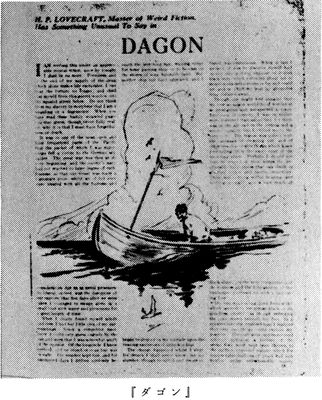

| [Ｈ・Ｐ・ラヴクラフト] ラヴクラフト全集3 | |
| Ｈ・Ｐ・ラヴクラフト | |
| (2015) | |
|
ラヴクラフト全集３東京創元社
Ｈ・Ｐ・ラヴクラフト 大瀧啓裕訳
|
THE SHADOW OUT OF TIME AND OTHER STORIES
by Howard Phillips Lovecraft(1890-1937)
初版発行１９８４年３月３０日訳・大瀧啓裕
訳：大瀧啓祐／カバー：ヴァージル・フィンレイ
〈創元推理文庫Ｆ523-03〉
二十世紀最後の怪奇小説作家Ｈ・Ｐ・ラヴクラフト。その全貌を明らかにする待望の全集──本巻には、アーカムやアヴドゥル・アルハザードが初めて言及される初期の作品や、ロバート・ブロックに捧げられた作者最後の作品をはじめ、ラヴクラフト宇宙観の総決算ともいうべき、時空を超えた存在〈大いなる種族〉を描く『時間からの影』など全八編を収録。
幼い頃から天文学に興味をもちつづけたラヴクラフトは、広大な宇宙においては人類の存在など儚いという根本認識のもとに、死後オーガスト・ダーレスによりクトゥルー神話としてまとめられてゆく一連の小説群を執筆した。本巻には、時空を超えて存在する超知性体〈大いなる種族〉の姿を描く、まさにラヴクラフト宇宙観の総決算ともいうべき『時間からの影』をはじめ、アーカムやアブドゥル・アルハザードがはじめて言及される初期の作品から、ロバート・ブロックにささげた最後の作品まで全八編を収める。
目 次
ダゴン Dagon(1923)
家のなかの絵 The Picture in the House(1924)
無名都市 The Nameless City(1938)
潜み棲む恐怖 The Lurking Fear(1923)
アウトサイダー The Outsider(1926)
戸口にあらわれたもの The Thing on the Doorstep(1937)
闇をさまようもの The Haunter of the Dark(1936)
時間からの影 The Shadow out of Time(1936)
資料:履歴書
作品解題 大瀧啓裕
ラヴクラフト全集〈３〉
Ｈ・Ｐ・ラヴクラフト／大瀧啓裕訳
ダゴン Dagon
わたしはそれとわかるほど神経をはりつめてこれを書いている。今日の夜までには、もうこの世にはいないだろうから。金もなく、生を耐えられるものにしてくれる唯一の薬もつきはてたからには、これ以上苦しみをしのぶことはできない。わたしはこの屋根裏部屋の窓から、眼下の汚らしい通りに身を投げだすことになるだろう。モルヒネの虜になっているからといって、腰抜けであるだの変質者であるだのと考えないでいただきたい。とり急ぎ記すこの書きつけを読んでもらえれば、十分に理解してもらうことこそかなわないにせよ、わたしが忘却をもたらしてくれるモルヒネ、さもなくば死を、どうあっても必要としなければならない理由を、あるいは察していただけるだろう。
わたしが船荷監督として乗船していた定期船がドイツの商船隊襲撃艇に拿捕されたのは、広大な太平洋の、船舶の航行することきわめて稀な、最も広びろとした海域でだった。その頃、大戦は火蓋が切られたばかりで、野蛮なドイツ海軍もまだ後の堕落におちいってはいなかったので、わたしたちの船は正当な捕獲財産とされながらも、わたしたち乗組員は、海の捕虜に当然はらわれるべき公正さと敬意でもってあつかわれた。ドイツの軍人の規律は実におおどかで、それが証拠に、拿捕されてから五日後に、わたしは小さなボートに相当期間もちこたえられる水と食糧を積みこみ、単身逃亡することができたのだった。
波間を漂い、ようやく自由になれたことを知ったとき、わたしは自分がどこにいるのやらさっぱりわからなかった。有能な航海長であるはずもないので、太陽と星によって、赤道の南のどこかにいるのだろうと、ぼんやり推測することしかできずにいた。経度については何もわからず、見渡すかぎり島も海岸線もない。晴天がつづぎ、幾日が経過したかもわからないまま、身をこがす太陽の下をあてもなく漂流したのだった。通りすがる船を待ったり、人の住む土地の海岸に流れつくのを夢見たりしながら。しかし船も陸地もいっかなあらわれることはなく、わたしはとぎれなくうねりつづける広大な青い海原で、孤独のあまり絶望しはじめていた。
眠っているあいだに変化がおこった。詳しいことはわからない。というのも、わたしのまどろみは、悩ましくも夢に騒がされるものだったが、中断することがなかったからだ。ようやく目を覚ましてみれば、見渡すかぎり単調にうねりながら広がっている、地獄めいた黒いぬるぬるした軟泥のなかにわたしの体は半分沈んでいて、ボートはすこし離れたところに座礁していた。
咄嗟におぼえた感情が、景色の不思議かつ予想外の変化に対する驚きだったと想像されるのも無理はないが、実際には、わたしは驚いたというより、身の毛のよだつ思いがした。大気中、そして饐えた泥のなかに、骨の髄まで凍るような凶まがしさがこもっていたのだ。腐敗する魚の死体をはじめ、胸の悪くなるほど不潔な果しない泥から突出す、何ともいいようのないものの死体によって、あたり一面が腐れはて糜爛していた。いやしかし、絶対の沈黙につつまれた広大な不毛の空間に巣食いうる、いいようもない悍ましさについては、おそらく単なる言葉で伝えられるなどと期待してはならないのだろう。耳と目のとどくかぎり、黒ぐろとした軟泥の広がり以外、何もなかった。けれども、静寂の完璧さそのものと景色の画一さからわたしが感じとったのは、実に忌わしい恐怖にほかならなかった。
空では太陽が燃えあがっていたが、わたしには、まるで足もとの漆黒の泥を映しているかのように、一片の雲とてない無慈悲さのなかで、ほとんど黒く見えたほどだった。座礁したボートに這いこんだとき、わたしは目下の境遇を説明づけるにはただ一つの仮説しかないことを知った。前例のない火山活動による隆起でもって、海底の一部が海面にまで押しあげられ、数百万年ものあいだ測り知れない深さの海底に隠されていたものが、あらわになったにちがいない。隆起した新しい陸地の広がりは途方もないもので、いくら耳をすましてみても、大洋の波うつ音はかすかにも聞こえなかった。死魚をついばむ海鳥もいない。
数時間、わたしはボートに坐って、考えこんだり、わが身の不運をくよくよ思いつめたりした。ボートは横倒しになっているので、太陽が空をよぎるにつれて、わずかな影を作ってくれた。時間がたつにつれ、泥はねばりけをいくぶんかなくし、短時間のうちに、その上を歩けるほど乾燥していくように思えた。その夜はほとんど眠らず、翌日は、消えた海と万に一つの救助を求める陸路の旅にそなえて、水と食糧を袋につめた。
三日目の朝、泥地がたやすく歩けるほどに乾燥していることがわかった。魚の腐臭は不快きわまりなかったが、さらに重大なことを案じるあまり、苦にはならず、わたしは大胆にも未知の目的地を目指して足を踏みだした。うねる泥地にあってひときわそびえる遠方の丘を目印に、終日たゆまず西に進みつづけ、その夜は野宿をした。翌日もまた丘にむかって足を進めたものの、はじめて目にしたときからすこしも近づいていないように思えた。四日目の夕方になってようやく麓にたどりついたが、遠くから見て思っていたよりも遙かに高かった。あいだにある谷が、ほかの地表から丘を鋭くへだてているのだった。疲れきったあまり、登ることはかなわないので、丘の蔭に入って眠った。
その夜、どうしてあれほど途方もない夢を見たのか、わたしにはわからない。けれど異様なまでに半円よりふくらんだ欠けゆく月が、東の平原の遙か高みに昇るまえ、わたしは冷汗をかいて目を覚まし、もうそれ以上眠らないことにした。わたしの見た夢は二度と耐えられるものではなかった。そして月の光を身にあびたわたしは、日中に歩きつづけたことがいかに愚かであったかを思い知った。ものみなを焼けこがすような太陽のぎらつく輝きがなければ、こうも体力が消耗することはなかったものを。事実、日没時にはあれほど忌み嫌った登攀もいまならおこなえそうな気がして、わたしは袋を手にすると、丘の頂を目指しはじめた。
うねる平原のうちつづく単調さが、わたしにとって漠然とした恐怖の源であったことは、既に記している。けれども、丘の頂上をきわめ、反対側を見おろしたとき、恐怖はさらに高まったようだ。丘のむこうがわには測り知れない窖とも峡谷ともつかないものがあって、その黒ぐろとした窪みは、空高く昇る月さえ照らせずにいた。丘の淵から、永遠の夜がつづく底の知れない混沌を見おろしていると、世界の涯にいるような気がしたほどだった。恐怖をひしひしと感じているうちに、『失楽園』のいくつかのくだりが妙に思いだされ、まだ形作られていない闇の諸領域を魔王セイタンが恐ろしくも登る場面が脳裡に甦ったものだ。
月がさらに高く昇るにつれ、谷の斜面が思っていたようなまったくの絶壁ではないことがわかりはじめた。岩棚や突出した岩がおりる際に恰好の足場となる一方、二、三百フィート下では、勾配がなだらかなものになっている。わたしは自分でも理解できない衝動に駆られ、苦労しながら岩場を這いおり、下方のなだらかな斜面に立つと、光がまださしこまない陰鬱な深みを覗きこんだ。
そうしていると、突然、反対側の斜面にある、巨大で風変わりなものに注意が惹きつけられた。それは前方百ヤードくらいのところでけわしくそそり立ち、昇りゆく月の新たに広がる光をあびて、白く輝いていた。わたしはすぐに、単なる巨大な石にすぎないと自分にいい聞かせて、気を静めようとした。しかし形といい、位置といい、自然の作用によるものではないというはっきりした印象を、意識からぬぐい去ることはできなかった。目をこらしてながめているうちに、わたしの心はいいようもない感情でみたされた。途方もない大きさをし、また地球幼年期以来海底で大きく口を開けていた深淵に位置していたにもかかわらず、この不思議な物体が紛れもなく形のととのえられた独立石で、その重量感あふれる巨体が、思考能力のある生物の技量と、おそらくは崇拝を知っていたにちがいないことが、疑いようもなかったからだ。
目眩き、おびえきったものの、科学者や考古学者のいだくような喜びもなくはなく、わたしはさらに詳しくあたりを調べた。いまやほぼ昇りつめている月が、深い割れ目をかこむ高くそびえる絶壁の上空で、不気味なほどあざやかに輝き、割れ目の底に広範囲にわたる水の流れがあることをあらわにしてくれた。流れの両端はうねって視界から消えている。斜面に立って流れを見ていると、足もとにまで水がひたひたと押し寄せてくるような気さえした。割れ目のむこうでは、小波が巨大な独立石の基部を洗っている。わたしは独立石の表面にある粗雑な彫刻と碑文とを輪郭によって見きわめることができた。文字はわたしの知らない系統の象形文字で、これまで本で目にしたどんなものとも似ていなく、大部分が魚、鰻、蛸、甲殻類、軟体動物、鯨という、様式化された水棲動物のシンボルから構成されていた。いくつかの象形文字は、明らかに、現代の世界には知られていない海の生物を表していたが、わたしが海から隆起した泥の平原で目にしたものこそ、それらの腐敗する姿にほかならなかった。
けれども、わたしが一番魅了されたのは、絵のような彫刻だった。途方もない大きさのため、水の流れをあいだにはさんでさえはっきり見えたものは、堂々とならぶ浅浮彫りで、その画題はドレほどの者さえ羨望させずにはおかないようなものだった。わたしはそれらの彫刻が人間、少なくともある種の人間を表していたように思う。もっともその生物は、魚のように海中の岩穴のなかでたわむれていたり、海中にあるらしい一枚岩から造られた石碑のようなものに、敬意をはらったりしているのだったが。顔と姿については、詳しくはふれまい。思いだすだけでも気が遠くなってしまう。ポオやブルワー＝リットンの空想さえ遙かに超えるグロテスクさだった。水かきのついた手足、ぞっとするほど分厚くてたるんだ唇、突出するどんよりした目、そして思いだすのも不快な他の特徴。そんな姿をしているにもかかわらず、全体の輪郭はいまいましいほど人間に似ているのだった。奇妙にも、その生物は背景とひどくふつりあいに彫られているようだった。生物の一員が、自分よりほんのすこし大きい程度に表されている鯨を殺している場面があったからだ。わたしは生物のグロテスクさと異様な大きさに注目したが、すぐに太古の海洋部族──ピルトダウン人やネアンデルタール人の最初の祖先が誕生する遙かまえに最後の子孫が死にたえてしまった部族──の想像上の神々にすぎないのだと決めこんだ。最も大胆な考古学者の構想さえ超える過去を不意に覗きこんだことで、わたしは畏敬の念にかられ、ひそまりかえる水流に月が奇妙な影をなげかけるかたわら、じっと立ちつくして考えこんだ。
するうち、突然、わたしは見た。登ってくることを告げる波の騒ぎはごくわずかなまま、そいつは黒ぐろとした水面を一気にやぶって姿をあらわした。単眼巨人ポリュフェーモスを思わせるその忌わしい巨体は、悪夢にあらわれる途方もない怪物のように、独立石にむかって突進すると、鱗につつまれた巨大な腕を独立石に投げかけ、見るも恐ろしい頭をたれて、拍子のそろった音を発した。その瞬間、わたしは正気を失ったようだ。
血迷って斜面と絶壁を登ったこと、無我夢中で座礁したボートまでもどったことについては、ほとんど何もおぼえていない。歌をうたいつづけ、うたえなくなると莫迦笑いしたような気がする。ボートにたどりついてしばらくしてから、大嵐のあったことは、かすかにおぼえている。ともかく、雷鳴と、自然が最も荒れ狂うときにだけ発する音を耳にしたことは知っている。
意識をとりもどしたとき、わたしはサンフランシスコの病院にいた。大洋の只中でわたしのボートを発見したアメリカ船の船長が、そこへ運びこんでくれたのだった。うなされてかなりのことを口にしていたが、そんな言葉はうわごととしてかたづけられ、ほとんど気にもかけられなかったらしい。太平洋に陸地が隆起したことについては、わたしを救助してくれた人たちは何も知らなかった。信じてもらえるはずのないことはわかっていたので、いいはっても無駄だと思った。一度、有名な民族学者を探しだし、古代ペリシテ人の伝説である海神ダゴンに関する特殊な質問をして面白がらせたが、すぐにその民族学者が絶望的なほど月並な人物であることがわかり、それ以上たずねるのはやめておいた。
わたしがあれを目にするのは夜、それも半円よりふくらんだ欠けていく月のでている夜だ。わたしはモルヒネをためしてみた。しかし一時的な忘却をもたらしてくれるだけのモルヒネによって、わたしは毒手につかまれ、救いようのない奴隷にされてしまった。だからこそ、わたしはいま、参考になるか嘲笑の種になるかはわからないが、十分な弁明をここに記しおえた後、何もかもにけりをつけようとしているのだ。すべてが純然たる幻だったのではないかと自問することがよくある。ドイツの襲撃艇から脱出した後、日をさえぎるもののないボートで日射病に倒れ、錯乱状態になっての、熱にうかされた幻覚ではなかったのかと。そう自問してみても、その答として、恐ろしいほどなまなましい光景が眼前に甦ってしまう。深い海のことを考えると、いまこの瞬間にも、ねばねばした海底を這いまわり、のたうちまわり、太古の石像を崇拝したり、水を吸った海中の花崗岩のオベリスクに自らの憎むべき似姿を彫りつけたりしているかもしれない、あの名前さえない生物がきまって思いだされ、全身がわなわなと震えてしまうわたしなのだ。わたしは夢に見る。やつらが海面にまで登ってきて、戦争に疲れた微弱な人類の生存者を、悪臭放つ鉤爪で海中にひきずりこむかもしれない日を。陸地が沈み、黒ぐろとした大洋の底が大変動のうちに隆起する日を。
そろそろけりをつけてしまおう。ドアが音をたてている。何かつるつるした巨大なものが体をぶつけているかのような音を。ドアを押し破ったところでわたしを見つけられはしない。いや、そんな！あの手は何だ！窓に！窓に！
ラヴクラフト全集〈３〉
Ｈ・Ｐ・ラヴクラフト／大瀧啓裕訳
家のなかの絵 The Picture in the House
恐怖を探し求める者たちは遠方の風変わりな場所によく足をむける。プトレマイオスの地下墓地、悪夢めいた土地にある彫刻のほどこされた霊廟は彼らのためにこそ存在する。彼らはライン河の荒廃した城で月に照らされる塔に登り、アジアの忘れ去られた都市において、散乱した石塊の下、蜘蛛の巣がからむ闇につつまれた階段をよろめく足でおりていく。鬱蒼とした森や荒れはてた山は彼らの聖地であり、無人島の気味悪い石碑が彼らの足をひきとめる。しかし、いいようもない恐ろしさから生じる新たな戦慄こそが人生最大の目的であり、またそれが探求にささげられた生活の弁明でもあるような、恐怖を真に愛好する者は、わけてもニューイングランドの森林地帯にうずくまる、古びたわびしい農家を重んじる。そこではたけだけしさ、さびしさ、妖しさ、そして無智という暗い要素が結合して、完璧な悍ましさを形成しているのだ。
とりわけ恐ろしい眺めは、通い路から離れ、もっぱら草の茂る湿っぽい斜面にうずくまったり、露出した巨大な岩に寄りかかったりしている、塗装もされていない木造家屋である。そういう家屋は二百年以上もまえに建てられたものだが、その間に蔦が這い、木々がいよいよ太さを増し、枝を広げるにいたった。始末におえないほど繁茂する緑葉やたれこめる影に、いまではほとんど姿が隠されてしまっているものの、小さなガラスのはめられた窓がなおもぞっとするほどに凝視している。いいようもないことどもの記憶を鈍らせることで狂気をかわす致命的な昏睡状態のまま、あたかもまばたきしているかのように。
そういう家屋には、ほかでは決して見かけられることのない、一風変わった人びとが何世代にもわたって住みつづけている。彼らの祖先は陰鬱かつ熱狂的な信仰心に駆りたてられ、世間と袂をわかち、荒野に自由を探し求めたのだった。土地を切りひらいた者の子孫たちは、まさしく、世間一般の人びとに制限を加えているものから解き放たれて栄えたが、自分たちの心が生みだす薄気味悪い幻に恐ろしくもとり憑かれ、震えあがるようにまでなってしまった。文明の光明と縁を切った彼ら清教徒たちは、その力を一風変わった方面にふりむけた。そして孤立、病的なほどの自己抑制、情け容赦ない自然を相手の生存闘争のうちに、消えかかった北方の血脈という有史前にさかのぼる淵源から、人目をしのぶ秘密主義の特徴がもたらされた。生活のための必然性と断固たる人生哲学とによって、どう見ても立派なものとは思えない過失をかさねるにいたったが、人みなが犯すにちがいない罪を犯しつつ、厳格な掟によって、何をおいても隠しとおす策をたてざるをえなかったため、しだいに秘め隠したものに気をかけなくなってしまった。初期の頃から隠されたままになっているもののすべてを告げられるのは、森林地帯で凝視する、黙りこくった、眠たげな家屋だけだが、話好きではなく、忘れ去るのに役立つまどろみをふりはらうのをいやがっている。こうした家屋は頻繁に夢を見るにちがいないので、とりこわすのが情け深いことだという思いにさせられることもある。
一八九六年十一月のある日の午後、冷たい雨がしとどふりしきり、わたしがどんなところでも雨宿りさえできればいいと思ってとびこんだのが、右に記したような歳月の猛威をうける建物だった。わたしはある種の家系上の資料を得るため、ここしばらくミスカトニック谷に住む人びとを歴訪しつづけていたが、辺鄙で、まがりくねった、不案内な小径を考えて、季節が季節だとはいえ、便利のいい自転車を使っていた。そしてアーカムへむかう一番の近道として選んだ、荒びれはてた道を進んでいたところ、どの町からも遠く離れた地点で嵐に遭ってしまったのだった。岩山の麓近く、すっかり葉を落とした二本の巨大な楡の木のあいだから、曇った窓をのぞかせている、何とも虫の好かない古びた木造家屋以外、嵐をしのげる場所はなかった。昔のおもかげをかろうじて残す草深い道からはずれたその家は、急場に目にしたにもかかわらず、いい印象を与えるものではなかった。つつみ隠しのない健全な建物は、こんなにも陰湿かつおびやかすように道行く者を見つめるものではないし、わたしは家系上の調査から、一世紀まえの伝説をさまざま知るにいたって、こうした家屋に偏見をいだいていた。しかし嵐の猛威は遠慮もふりすてさせるほどのものだったので、わたしはためらいもせずに、あまりにも暗示的で秘密をはらんでいるように思えてならない閉ざされた扉へと、草の茂る登り道を自転車で進んだ。
わたしはその家が無人になっているのを何となく当然のように思っていたが、近づくにつれ、そうではないことがはっきりわかった。道には確かに草が密生しているものの、まだ道のおもかげは少なからず残っており、完全な荒廃状態におちいっているのではなかった。そんなわけで、ノックしたドアをためしに開けてみようという気になるどころか、ほとんど説明もできないような戦慄を感じるばかりだった。ドアの踏段の役目をはたしている、苔むし、ごつごつした岩に立って待ちながら、手近の窓やドア上部の明かりとり窓に目をむけてみると、確かに古びてきしんでいるうえ、汚れがこびりついて半透明になってはいるが、割れているガラスはなかった。してみれば、この一軒家はちゃんとした手入れがなされていないにもかかわらず、人が住んでいるにちがいなかった。しかしいくらドアをたたいても返事はなく、ノックを繰返した後、錆びついた掛金をためしてみると、施錠されてはいなかった。ドアを開けると、そこは漆喰のこぼれ落ちる壁にかこまれた狭い玄関ホールで、かすかとはいえ独特の不快な臭が戸口から漂ってくる。わたしは自転車をかついでなかに入り、ドアを閉めた。前方には二階へとむかう狭い階段があり、その側面にはおそらく地下室へ通じるものと思われる小さなドアがある一方、わたしの左右には一階の部屋部屋に通じるドアがあった。
わたしは自転車を壁にもたせかけたあと、左手のドアを開け、天井の低い小部屋に入ったが、二つある窓も汚れているためになかは薄暗く、調度はきわめてわずかで、またこれ以上はないほど粗末なものばかりだった。テーブル、数脚の椅子、大きな暖炉があり、炉棚で古めかしい時計が時を告げていることからも、居間として用いられる部屋のようだった。書物の類がごくわずかにあったが、深まりゆく薄闇のなかでは、書名をたやすく読みとることはできなかった。わたしが興味を惹かれたのは、目にふれるものすべてが一様に示す古めかしさだった。わたしもこのあたりの家いえの大半に過去の遺物をおびただしく見いだしていたが、ここではその古めかしさが妙なくらい完璧だった。部屋じゅうを見渡しても、独立戦争以後のものだとはっきりいいきれる品物は一つもない。備品の数がもっと少なくとも、この部屋は古物収集家の楽園といいうるだろう。
わたしはこの古風で趣きのある部屋を調べているうちに、家の寒ざむとした外見によってかきたてられた嫌悪が、ますますつのってくるのを感じた。わたしが何を恐れ、あるいは忌み嫌ったのかは、きっぱりこれだといいきれるものではないが、雰囲気全体にある何かが、不浄な歳月、不快な露骨さ、忘れ去られるべき秘密をにおわせているようだった。そんなわけで、腰をおろす気分にはなれず、歩きまわっては目に入ったものを調べつづけた。わたしの興味をまっ先に捕えたものは、テーブルに置かれた中くらいの大きさの本で、博物館や図書館の外で目にするのが不思議に思えるほどの、古色をおびていた。金箔押しの革で装釘され、保存状態も良く、かくも見すぼらしい住居で目にするものとしては、異常としかいいようのない古書だった。扉を開けてみたわたしは、さらに驚かされた。コンゴの地誌について、水夫ロペックスの記録をもとに、ピガフェッタがラテン語で記し、一五九八年にフランクフルトで出版された稀覯書にほかならなかったからだ。ド・ブロイ兄弟の手になる風変わりな挿絵の付されたこの著作のことは、わたしもよく耳にしていたので、目のまえにあるページを繰りたいという欲望のままに、それまでおぼえていた不安も一瞬忘れはててしまった。図版はまったくの想像と奔放な作図から生みだされた興味つきせぬもので、白い肌とコーカサス系の顔だちをもつ土着民を表していた。本を閉じようとしたとき、きわめて些細なことがわたしの疲れきった神経をかき乱し、不安感を甦らせた。わたしを悩ませたものは、その本がどうしてもひとりでに、第十二図のあるページを開いてしまう傾向をもっていたことにしかすぎない。第十二図は恐ろしいほどの精緻さで、人肉嗜食のアンジック族の肉屋を描いたものだった。わたしは実に些細なことに神経をとがらせた自分を恥しく思ったが、それにしてもその図版は、とりわけアンジック族の食生活にふれる記述とあいまって、わたしの心を不安にさせるものだった。
既にわたしは手近の棚に顔をむけ、わずかばかりの書物を調べていた。十八世紀の聖書、暦を出版していたイザイア・トマスの印刷による、奇怪な木版画の収められた、同時代のものらしい『天路歴程』、コットン・マザーの『崇高なるアメリカのキリスト教徒』の崩れかけた大冊、その他明らかに同時代の書物が数冊あった。とそのとき、頭上の部屋を歩いている聞きちがえようのない音に、わたしの注意は惹きつけられた。ついさっきドアをノックしたときには何の返事もなかったことを考えて、最初は驚いてしまったが、その後すぐに、熟睡から目を覚ましたのだろうと判断し、きしむ階段に足音がしても、さほど驚かないまま耳をすました。足音は重おもしいものだったが、妙に用心深くしているような気配があった。足音が重おもしいだけに、わたしはことさらその点が気にいらなかった。わたしはこの部屋に入ったとき、ドアを閉めていた。歩いている者が玄関ホールに置いたわたしの自転車を調べているのかもしれない、不意に足音がとぎれてつかのまつづいた静寂の後、ノブが回される音がして、鏡板をいれたドアが揺れて開くのが見えた。
戸口には、自分をおさえるという行儀作法を知らなかったなら、思わず声をあげただろうと思えるような、きわめて異様な風貌の人物が立っていた。白い顎鬚を生やし、ぼろをまとう年老いた主は、驚嘆と畏敬とをひとしくひきおこす顔つき体つきをしていた。身長は優に六フィートはあり、よる年波と貧しさを歴然と示しているにもかかわらず、体つきはたくましく、がっしりしていた。頬高くにまで生える長い口髭によってなかば隠されている顔は、異常なくらい血色が良いようで、皺もさほどなく、高い額にはほとんど薄くなっていない白い髪がたれさがっている。青い目はすこし充血しているが、奇妙なくらい鋭く、爛々と輝いているようだった。身だしなみに気をくばりさえすれば、いかにも印象的な、人目を惹く姿になれるだろうと思われたものの、風采にはいっさいかまわないため、印象的な風貌にもかかわらず、不快感ばかりをかもしだしていた。老人がどんななりをしていたかについては、重たげな長靴までたれさがるぼろきれにしかすぎないもののように見うけられたので、ほとんど何も語ることはできない。清潔感の欠如といったら、いいようもないほどだった。
この老人の外見、そして心にひきおこされた本能的な恐怖のために、わたしは敵意にも似た気持でもって身がまえた。だから老人がわたしに椅子に坐るよう手振でうながし、おもねるような敬意と気にいられようとする歓迎の気持にみちる、かぼそく弱よわしい声で話しかけたとき、わたしは驚くとともに、妙な不調和を感じとって、もうすこしで体を震わせてしまうところだった。老人の話しぶりはとても奇妙なもので、わたしがとうの昔に失われてしまっていると思っていた、極端なまでのニューイングランド方言だった。わたしはまえに腰をおろした老人を仔細に観察した。
「雨に遭われなすったんじゃな」老人がいった。「この家の近くにおられて、分別よく入ってこられたことをうれしゅう思うとります。わしは眠っとったんでしょうな。そうでなきゃ、入ってこられるのが聞こえたじゃろうに。もう昔のごと若くはありませんので、近頃はようけ眠らんといかんようになっとりますのじゃ。遠くからやって来なさったのかな。アーカムへ行く者もおらんようになったけ、そこん道で人を見かけることものうなってしまいましたわ」
わたしはアーカムへ行くつもりだといい、勝手に家に入ったことをあやまった。老人はつづけた。
「お若い方、お会いできてうれしゅう思うとりますよ。こんあたりじゃ新しい顔を目にすることはめったにありませんからのう、このところ元気づけられるようなことはとんとありませなんだ。お見うけしたところ、ボストンのお人のようじゃが。わしはボストンへ行ったことはありませんが、町のお人は一目でわかりますのじゃ。八四年には分教場の先生になりに来た人がひとりおったが、急に姿を消してしもうて、そのあとは噂一つ聞いとりません......」そういって老人はふくみ笑いをしたが、わたしがたずねても、笑ったわけはいわなかった。このうえなく上機嫌でいるようだったが、身つくろいからうかがえるように、奇癖をももちそなえているらしかった。しばらく老人は熱にうかれたような愛想の良さであれこれしゃべっていたが、わたしはふと、ピガフェッタの『コンゴ王国』のような稀覯書をどうして手にいれたのかたずねてみたくなった。あの本からうけた影響はまだ残っていて、本のことを口にするにはややためらいがあったが、しかしはじめてこの家を目にして以来、着実に高まっている漠然とした恐怖のすべてを好奇心が圧倒した。安心したことに、わたしの質問は無作法なものではなかったらしく、老人はよどみなくあけっぴろげにしゃべった。
「ああ、あのアフリカの本のことですな。六八年にエベネザー・ホールト大尉から手にいれたのですじゃ。あん人も戦死してしまいましたな」エベネザー・ホールトという名前を聞いて、わたしはきっと視線をあげた。わたしは家系上の調査でその名前を耳にしていたが、独立戦争後のどんな記録にあたっても載っていないのだ。骨をおっている仕事に力をかしてもらえるのではないかという気がしたが、その点についてはあとでたずねることにした。老人はつづけた。
「エベネザーは何年間かセーレムで商人をやっとりましてな、港々で妙なものを手にいれておりましたよ。あの本はロンドンで見つけたんじゃろうと思います。ロンドンの店で買うのが好きじゃったから。一度馬を売りに、丘にあるエベネザーの家に行ったときあの本を見たんですわ。挿絵がえろう気にいったけ、馬と交換しましてな。妙な本ですのう。眼鏡をかけんと......」老人はぼろのなかに手をいれ、驚くほど古風な、汚れた眼鏡をとりだした。小さなレンズは八角形をしていて、枠は鉄製だった。その眼鏡をかけると、テーブルにあった本を手にして、いとおしむようにページをめくった。
「エベネザーはこの本をちいとは読みよったが、ラテン語ですけ、わしにはちんぷんかんぷんですのじゃ。二、三人の先生にすこし読んでもろうたり、クラーク牧師に教えてもろうたりしたもんです。クラーク牧師は池で溺れ死んだそうじゃよ。あんたさまにはわかりますかな」わたしは読めるといい、冒頭のあたりを翻訳してやった。まちがえたかもしれないが、老人はわたしの誤訳を指摘できるほどの学者ではなく、わたしに翻訳してもらうことで子供のように喜んでいるようだった。そのはしゃぎようはむしろ不快なほどのものにまでなったが、わたしには老人の感情を害することなくきりあげる方法がわからなかった。読めもしない本の挿絵をこの無学な老人が子供のように愉しんでいることをわたしは面白がり、部屋のなかにあるわずかばかりの本も、はたしてどの程度読めるのだろうかと思った。純朴さが示されたことで、わたしがおぼえていた漠然とした不安はほとんどぬぐい去られ、老人が話しだしたときには笑みさえうかべた。
「絵が人間に考えさせるとは妙なものですのう。ほれ、この最初のほうの絵を見なされ。大きな葉をはためかせてる、こげな木を見たことがありなさるか。それにこの連中ときたら。絶対に黒人じゃありませんな。たまげはてた連中じゃて。アフリカにおっても、インディアンに似とるとわしは思うとります。ほれ、ここにおるのは猿というか、猿と人間のあいの子みたいじゃが、けどこっちにおるんは何じゃろうか。こげなもん聞いたこともありませんわ」老人は画家の空想上の生物を指差していった。鰐の頭をもつ龍に似た生物だった。
「じゃが一番いい絵を見てもらわんと。まんなかへんにあるんじゃが......」老人の声はすこしこもったようになり、目が明るく輝いた。しかしページを繰る手は、見かけはまえよりぎこちなくなっていたが、その任務にはまことに適切だった。本は頻繁に同一ページが開かれたためでもあるかのように、ほとんどひとりでに開いた。あらわれたのは、食人の風習をもつアンジック族の肉屋を描いた忌わしい第十二図だった。わたしはまた心が騒いだが、おもてにはださなかった。とりわけ気味が悪いのは、画家がアフリカ人を白人のように描いていることだった。店の壁にぶらさがっている手足や四つ裂き部分は凄絶きわまりないもので、斧をもつ肉屋の主人はひどくふつりあいだった。しかし老人はわたしが嫌っているのとは正反対に、その図版をおおいに気にいっているようだった。
「どう思いなさる。こげなもんをご覧になったことはありませんじゃろう。わしはこの絵を見たとき、エブ・ホールトに『あんたを興奮させて血を騒がせる絵じゃな』とゆうてやりましたよ。聖書で人が殺されるようなとこ、ミデアン人が殺されるようなとこを読むとき、こげなものを考えとりましたが、はっきり思いうかべることはできませなんだ。ところが、ほれ、ここにははっきり描かれとる。罪深い絵じゃとは思いますがのう。けど、わしらは皆、罪をもって生まれ、罪のうちに生きとるそうじゃありませんか。この切り刻まれとる男を見るたびに、わしはむずむずしますのじゃよ。それでいつもじいっとながめておりますのじゃ。肉屋の主人が足を切っとるところがわかりますかな。頭がほれ、その台の上にあって、片一方の腕がこっちがわ、もう一方の腕が肉の塊のむこうがわにありますじゃろう」
老人がぞっとするような恍惚状態になってもぐもぐいいつづけているうちに、眼鏡をかけ、髭に半分隠されている顔の表情は名状しがたいものになったが、その声は高まるというより低くなっていった。わたしがどう感じていたかはほとんど記すことができない。まえにぼんやりと感じていた恐怖のすべてが、にわかになまなましくどっと押し寄せ、わたしは自分が、間近にいる忌わしい老人をたまらなく嫌っていることに気づいた。老人の狂気、いや少なくとも倒錯は、議論の余地がないように思われた。声は囁きに近くなっていて、そのかすれ具合は悲鳴よりも恐ろしく、わたしは耳をかたむけながら震えていた。
「さっきもゆうたように、絵が考えさせるとは妙なもんですわ。お若い方、わしがこの絵のここのところにうつつをぬかしとるのがおわかりなさるかな。わしはこの本をエブのところで手にいれてから、何度もこの絵を見とりますのじゃ。クラーク牧師が日曜日に大きな蔓をつけて、ものすごい説教するのを聞いたときにゃ、なおさらこの絵をよく見たもんじゃよ。一度面白いことをやってみようと思いましてな......お若いの、驚きなさるな......わしがやったことゆうのは、この絵を見てから市場にだす羊を殺しただけのことですのじゃ。この絵を見てから羊を殺すちゅうのは面白いもんでしたぞ......」老人の声は、ときとしてほとんど言葉が聞きとれないほど、低くなっていた。わたしは雨の音、曇った、小さなガラスのはめられた窓が揺れる音に耳をすまし、この季節にしてはまったく異常な、近づきつつある雷のとどろきに気がついた。一度すさまじい閃光と落雷がきゃしゃな家を土台から揺がしたが、囁きつづける老人は気がつかないようだった。
「羊を殺すのは楽しゅうございましたな。けども、満足はいきませなんだ。願いが中途半端におわるんですからのう、妙な気分じゃった。お若いの、あんたは全能の神を愛しておられるから、誰にもゆわれんじゃろうが、わしはな、この絵を見つづけたおかげで、作ったり買うたりはできん食糧が欲しゅうなりはじめたことで、神さまをののしりましたんじゃ。じっとしとられるが、どうかなされたのかな。いんや、なんもやっとりません。ただ、もしやったら、どんな気分がするかのうと思うとるだけですのじゃ。肉は血と体を造り、新しい生命を与えてくれるそうじゃから、普通の寿命以上に生きられるんじゃなかろうかと思うとりますのじゃ......」しかし老人はもうそれ以上何もいわなかった。言葉を切ったのは、わたしがおびえきっていたためでもなければ、その猛威によってわたしがまもなくわびしげな黒ずんだ廃墟を目にすることになった、急速に高まりつつある嵐のためでもなかった。それはきわめて単純だが、いささか異常な出来事のためだった。
開かれた本が老人とわたしのあいだにあり、あの図版が悍ましくも上をむいていた。老人が「普通の寿命以上」といったとき、何かがしたたる小さな音が聞こえ、開かれた本の黄変したページにあるものがあらわれた。わたしは屋根からもった雨水だろうと思ったが、しかし雨が赤い色をしているはずはない。食人の習慣をもつアンジック族の肉屋の店に、赤い染みがあざやかに映じ、恐ろしい図版になまなましさを与えた。老人は赤い染みを見ると、わたしが恐怖におびえきった顔をするよりまえに、囁くのをやめた。赤い染みを見ると、一時間まえに離れた部屋の床のほうに素早く視線をむけた。わたしは老人の視線を追って、わたしたちのちょうど真上、古びた天井のゆるんだ漆喰に、形の定まらない大きな真紅色の染みを見た。わたしが見ているあいだでさえ、その染みはますます広がっていくようだった。わたしは悲鳴もあげず、身動きもせず、ただ目を閉じた。一瞬の後、ものすごい落雷がおき、いい知れぬ秘密をはらむあの呪われた家を直撃し、そしてわたしの精神を唯一救ってくれる忘却がもたらされたのだった。
ラヴクラフト全集〈３〉
Ｈ・Ｐ・ラヴクラフト／大瀧啓裕訳
無名都市 The Nameless City
無名都市に近づいたとき、わたしはそれが呪われた都であることを知った。月影の下、枯れはてた空恐ろしい谷間をひとり進んでいると、前方遙かに、死骸の一部がいけぞんざいな造りのされた墳墓からはみだすかのように、砂中から妖しく突出している石造りの都邑の廃墟が目にはいったのだ。大洪水以前からのこの古ぶるしい残存物、最古のピラミッドのさらに曾祖母にあたるこの廃都は、永の歳月に蚕食された石という石から、恐怖を発散させていた。人が見るべきでなく、またかつて何人も目にしたことのない太古の凶まがしい秘密、そんな秘密に近づくなと、行手をはばむ目には見えない霊気が命じていた。
無名都市はアラビアの砂漠の彼方に、崩れはて、うち黙して横たわり、測り知れない歳月のうちに堆積した砂塵が、低い石壁をほぼ覆いつくしていた。古代エジプトの都メンフィスに礎石が置かれるまえ、バビロンの煉瓦さえまだ焼かれない頃から、同様の姿をさらしていたにちがいない。この都の名前を伝えたり、ありし日の姿をしのばせたりする往古の伝説は何一つとしてないが、野営の篝火のまわりで囁かれたり、天幕のなかで老婆が声をひそめてつぶやいたりする話のために、まったく理由がわからないまま、アラビアの全部族はこの廃都に近づくのを避けている。狂える詩人アブドゥル・アルハザードは、夜にこの地を夢見た後、翌日あの不可解な二行聯句を謳った。
そは永久に横たわる死者にあらねど
測り知れざる永劫のもとに死を超ゆるもの
さまざまな奇譚で語られながらも、まだ生きて目にした者のいない無名都市をアラブ人が忌避するには、それなりの十分な理由があるのだ。そのことを知っておくべきだった。しかしわたしはあなどって、一頭の駱駝とともに未踏の砂漠にのりこんでしまった。あれを見たのはわたしだけだ。だからこそ、何人にも見られない恐怖の皺を悍ましくも顔に刻み、夜風が窓をがたがた揺らすと、ひとり恐ろしげに身を震わせるわたしになってしまったのだ。永遠の眠りの闃とした静寂につつまれる無名都市を目にしたとき、砂漠の熱気の只中にかかる冴えざえとした月の光のように、廃都はひややかにわたしを見つめた。見かえすわたしは発見した歓喜も忘れ、駱駝とともに立ちつくして夜の明けるのを待った。
何時間も待ちつづけた。ついに東の空が灰色に転じて星ぼしが薄れ消え、その灰色も金色に縁どられた薔薇色に変わった。空は澄みわたり、広大な砂漠は静まりかえっていたが、風の唸りが聞こえ、古びた石のあいだで砂嵐のおこるのが見えた。やがて突然、消えやらんとする小さな砂嵐をとおして、砂漠の遙かな地平線から輝かしい太陽の昇るのが見え、わたしは熱にうかされたような心地になって、どこか遙かな深みから、ナイル河の畔のメムノンの像のごとく、燃える日輪をむかえて金属質の音響がわきおこったように思った。想像力がたぎり、ひどく耳鳴りのするまま、わたしは駱駝をひいてゆっくりと砂漠を進み、声高に口にされることのないあの場所、生身の人間でわたしだけが目にしたあの場所へとむかった。
もはや形をとどめない、さまざまな建築物の礎石のあいだをさまよい歩いてみたものの、久遠の太古にこの都を築き、居住していた者が、よし人間であるにせよ、その住民のことを語ってくれるような彫刻や碑文は何一つ見つけられなかった。古色蒼然のありさまは胸がむかつくほどのもので、わたしとしては、この都を築いたのが人間であることを証拠だててくれる徴や技法を目にしたくてたまらなかった。この廃墟には特定の寸法や比率が認められ、それがわたしには気にいらなかった。多くの道具を携えてきていたので、忘却の淵に沈んだ建築物の壁の内側を、何箇所となく掘りおこしてみたが、作業は遅々として進まず、ようやく掘りおこしても、意味ありげなものがあらわれることはなかった。夜になり、月が中天にかかる頃、わたしは新たな恐怖とともに冷風を肌身に感じとり、とても廃都のなかにとどまる気分にはなれなかった。それで眠る場所を求めて太古の石壁の外に足を踏みだしたが、そのとき、月は明るく輝き、砂漠の大部分は静まりかえっているというのに、溜息をつくような小さな砂嵐がわたしの後方に発生して、灰白色の石の上で舞った。
わたしはちょうど夜明けに、ひきもきらぬ悪夢から目を覚ました。金属音響を聞いたかのように、耳鳴りがしていた。無名都市に渦巻く最後の小さな砂嵐ごしに、赤い面をのぞかせる太陽を見たわたしは、あたりの静けさにことさら胸をうたれた。ふたたびわたしは、毛布に身を隠す人食い鬼のように、地中にあって砂漠をうねらせる鬱塞した廃都のなかへと足を踏みいれ、忘れ去られた種族の遺物はないかと、いたずらに砂を掘りかえしてみた。昼に一休みをした後、午後も大半の時間をかけて、石壁や古の通り、さらにはほぼ消失しつくした建築物の輪郭の跡をたどる作業に従事した。その結果、この都がかつてはいかに壮大なものであったかがわかり、わたしはその淵源がどこにあるのかと思いをめぐらしてみた。カルデア人の記憶にさえない遙か太古の光輝を思い描き、人類が幼かった頃にムナールの地にあった凶運都市サルナスや、人類が存在するまえに灰白色の石を刻んで造られたイブの都について考えた。
ふとわれにかえってみれば、砂中から岩床がくっきりと露出し、低い崖を形成している場所に行きついていた。目を見はるわたしの胸に歓喜がこみあげてきた。そこには、大洪水以前の住居を跡づけられそうなものがあったのだ。小さな、天井の低い岩造りの住居もしくは神殿の、見まちがえようもない軒頭が、岩の表面にいくつも荒あらしく刻まれていた。建物の外部にほどこされていたかもしれない彫刻は、砂嵐が遙かな昔にぬぐい去っているにせよ、内部には測り知れない太古の秘密が数多く残されているのかもしれない。
手近にある黒ぐろとした開口部はどれもきわめて低く、砂にふさがれていたが、わたしは踏鋤を使って砂をかきだした後、いかなる謎が秘められているにせよ、その秘密をあばかんがため、松明を手にもぐりこんだ。内部へ入ると、この洞窟がまさしく神殿であることがわかり、この砂漠が無人の荒野と化すまえ、ここに住みつき礼拝をとりおこなっていた種族の明白な痕跡を、わたしはつくづくとながめた。すべて面妖なほど丈の低い、原始的な祭壇、柱、壁龕があった。彫像や壁画こそなかったものの、明らかに人工の手段でもって、どうやらさまざまな象徴の形にととのえられたらしい、風変わりな石が数多くあった。岩を掘り抜いて造られたこの房室は、不思議なくらい天井がきわめて低く、膝をついても頭がつかえるほどだったが、その広さたるや途方もないもので、松明の光も全体にはいきわたらなかった。奥の隅の何箇所かでは、妙に背筋がぞくっとしたものだ。というのも、特定の祭壇や石が、胸がむかつくほどに恐ろしい、不可解な性質をもつ忘れ去られた儀式をほのめかし、どんな種族がこのような神殿を造りあげて出入りしたのだろうかと、考えこまずにはいられなかったからだった。わたしは内部にあるものすべてを見おわると、こうした神殿が明るみにだしてくれるかもしれないものをぜひともつきとめたく思いながら、とりあえず外に這いだした。
夜が近づいていたが、実体感のあるものを目にしたため、恐怖よりも好奇心のほうが強くなり、はじめて無名都市を見たときにわたしをひるませた、月が落とす長い影にもたじろぐことはなかった。薄暮のなか、わたしはもう一つの開口部をふさぐ砂をかきだすと、新しい松明に火を点してもぐりこんだ。しかし、さらにとらえどころのない石や象徴を見いだしただけで、先の神殿にあったものより確とした手がかりを与えてくれるものは、何一つなかった。天井は同じように低かったものの、先の神殿のような広がりはなく、奥は得体の知れない箱が立ちならぶきわめて細い通路になっている。その箱を調べていると、風がうなり、外にいる駱駝が鳴いて静寂が破られたので、わたしは何が駱駝をおびえさせたのか知ろうとして、外へとむかった。
月は原初の廃墟の上で耿々と輝き、濃密な雲のような砂塵を照らしだしていた。前方の崖のどこかから吹きつけ、砂塵を巻きあげた強い風も、いまでは勢いをなくしつつあった。わたしは駱駝を不安にさせたものが砂をはらむこの冷風であることを知り、風のあたらない場所へ駱駝を連れて行こうとした。そのとき、たまたま上空に目をむけたが、崖の上にはそよとの風も吹いていない。わたしは愕然として、またしても怖気立ってしまった。しかしこれまでに目にし、耳にもした、日の出と日没におこる局所的な突風をすぐに思いだし、異常な現象ではないと判断した。おそらく洞窟に通じる岩の割れ目から吹いてでもいるのだろうと思い、騒ぐ砂塵に目をむけ、その源を追ってみると、かろうじて視界のとどく遙か南面に位置する、神殿の黒ぐろとした開口部から吹いていることがまもなくわかった。わたしはこの神殿にむかい、息のつまる砂塵をついて歩一歩足を進めた。近づくにつれ、その開口部は他を圧しておびやかすように大きさを増していき、砂にふさがれる程度も低いことが明らかになってきた。松明を消しかねないたけだけしい冷風が吹いていなければ、わたしはそのまま内部に入りこんでいただろう。風は暗い口から狂ったように吹きだし、砂をすくいあげては、不気味な廃墟に撒きちらしながら、蕭然たる吐息をついていた。まもなく風の勢いはかなりおとろえ、砂の動きもおちつきはじめ、ついには静まりかえったが、わたしには何かがこの廃都の幽鬼めく石のあいだを闊歩しているように思えてならず、月に目をむければ、騒ぐ水面に映っているかのように、揺れているように見えるのだった。わたしはわけもなくおびえきっていたが、そのおびえも驚異に対する渇望をにぶらせるまでにはいたらなかった。そして風が完全に静まるや、わたしは風を吹きだした暗澹たる穴の内部へと入りこんだ。
この神殿は、外にいるときに想像したとおり、先に入りこんだ二つの神殿よりも広く、遙かな奥から風が吹き寄せることからも、自然の洞窟を利用したもののようだった。ここでは直立することができたが、しかし目にする石や祭壇は、先にうかがった神殿のそれらと同様に丈が低かった。壁や天井に、はじめて、太古の種族の絵画らしきものの痕跡が認められた。もうほとんど消えかかるか毀れはてている、妙に渦を巻いた塗料の跡だった。二つの祭壇に、たくみにほどこされた迷路のような曲線の彫刻を見いだしたときには、わたしの胸は興奮に高鳴った。松明をかかげてながめてみると、天井の形も、自然にできあがったものとは思えないほど規則正しい。先史時代の石工たちが仕事をはじめるまえ、この洞窟はどのような形状をしていたのだろう。とまれかくまれ、石工たちのわざは途方もないものだったにちがいなかった。
するうち気まぐれな松明の炎が明るく燃えあがり、わたしが探していたもの、突風を吹きだした遙か遠くの深淵の開口部を照らしだした。それが硬い岩を削って造られた、紛れもなく人手を加えられた小さな戸口であることを見てとったときには、もう目もくらむような思いがした。そのなかへ松明をさしいれてみると、けわしくくだる荒造りの階段とアーチ状の低い天井を備える、暗黒の通路があった。きわめて小さな段が無数にあって、急角度で下方につづいている。これが何を意味するかを知ってしまったからには、この階段は夜ごとわたしの夢にあらわれることだろう。しかしそのときは、階段と呼んでいいのか、急なくだり斜面にしつらえられた単なる足場と呼んでいいのかもわからなかった。わたしの心のなかでは種々さまざまの狂った考えがうかんでは消え、アラビアの預言者たちの言葉や警告が、人の知る土地から砂漠をよぎり、人のあえて知ろうとしないこの無名都市まで、漂い聞こえてくるような気さえした。しかしわたしは一瞬ためらっただけで、すぐさま戸口に足を踏みいれ、梯子をおりるかのように用心しながら、その急な階段をくだりはじめた。
わたし以外の者なら、あのような下降は、精神錯乱か麻薬による恐ろしい幻想のなかでしかできないだろう。狭い通路は何かしら幽鬼のとりつく気味悪い井戸のように下方へと果しなくつづき、頭上にかかげた松明も、わたしがむかいつつある未知の深みを照らしだすことはできなかった。いつしかわたしは時間感覚を失い、時計を見ることも忘れはてていたが、ふとくだりつづけた距離のことを考えたときには、慄然たる思いがしたものだ。通路はくだるにつれ、何度も方向と勾配が変化した。あるときは天井の低い平らな通路が長くつづき、松明をもつ手をうしろにのばし、足から先に、身をよじるようにして岩床の上を進まなければならなかった。膝をついて進むことさえできないほど天井が低かったのだ。そのあとはまた新たな急勾配の階段がはじまり、かろうじて燃えていた松明が消えたときも、まだとどまることなく這いおりている途中だった。わたしはそのとき松明の炎が消えたことにも気づかなかったと思う。気づいたときでさえ、まだ燃えているかのように、あいかわらず頭上にかかげていたからだ。このわたしに地をさまよわせ、遙けき太古の禁断の土地へと足をむけさせる、奇怪なもの、未知なものを追い求めるあの本能のために、わたしは完全に心の平衡を失っていた。
闇のなかにいるわたしの脳裡では、心にいだく宝庫のような魔的な伝承の知識がきれぎれにひらめいては消えていった。狂えるアラブ人アブドゥル・アルハザードの書き記した章句、ダマスキウスの悪夢めいた外典の一節、ゴーティエ・ド・メッツの狂乱した『世界の実相』の忌わしい文章等々。わたしは狂おしい章句を復誦し、アフガニスタンのオクサス川を悪鬼どもと漂ったアフラシアブのことをつぶやいた。そのあと、ダンセイニ卿の物語の一節──「光を照りかえすこともない深淵の暗黒」──を何度となく唱えた。勾配が驚くほど急になったときには、恐ろしさのあまり唱えられなくなるまで、トマス・ムーアの詩の一節を歌うように繰返し口にした。
蝕にあう月の薬種にみたされて
霊薬抽出されん魔女の大釜のごと、
黝なる闇にひそみし溜池なり。
かの水淵に足を踏みいれ、進みえるやをうかがわんとて
跼らば、われは見たり、
視界のとどくかぎりまで、
破璃のごと、なめらかなる漆黒の縁を。
死神の所領より軟泥の岸にまで広がりたる
黯黒の瀝青もて、塗りあげられたるばかりかと思われけり。
足もとにまた平坦な地面を感じたとき、わたしにとって時間はもはや存在していなかった。いまや遙かな頭上に位置するあの二つの神殿の内部より、やや天井の高い場所にわたしはいるのだった。直立することはできなかったにせよ、膝をついて進むことはでき、わたしはうずくまって、足をひきずりながら、でたらめにあちこちを這いまわった。ほどなく、いまいる場所が、上面ガラスばりの木製の箱が両側に立ちならぶ、狭い通路であることがわかった。このような古生代の地底で、磨きぬかれた木とガラスの感触を得たわたしは、それが意味するものを考え、総身に鳥肌がたつ思いがした。箱は通路の両側に規則正しい間隔をおいてならんでいるらしく、長辺を壁に平行にしていて、形といい大きさといい、忌わしいほど棺桶に似ていた。さらに詳しく調べるため、二、三の箱を動かしてみようとした結果、しっかりと固定されていることがわかった。
その通路が長いものであると見当をつけたわたしは、もがきながら急いで這い進んだ。あの真暗のなかにわたしをながめる目があったなら、いかにも恐ろしげな姿に見えたことだろう。這い進むうち、ときとして左や右にそれ、体があたることによって壁と箱の列がなおもつづいていることがわかった。人は心の目に思いうかべながら考えることに慣れている。わたしは闇のなかにいることをほとんど忘れはて、あたかも実際に目にしているかのように、木とガラスで造られた箱が単調にならぶ、天井の低い、果しない通路を思い描いていた。しかしやがて、いいようもない感情のうねりのうちに、わたしは実際に目にしたのだ。
思い描く情景がいつ現実の光景に転じたのかは、わたしにはわからない。前方の闇がしだいにほの白くなり、突如としてわたしは、何か未知の地底の燐光によって照らされる、通路と箱のおぼめく輪郭を見ていることを知った。しばらくは輝きもきわめて弱かったため、すべてが想像していたとおりに見えたが、あいかわらず一本調子で這い進むうち、輝きが強まるにつれ、自分の想像がたわいもないものであったことを思い知らされた。この通路は、頭上の都市にある神殿のような生硬な遺物などではなく、きわめて荘厳かつ尋常ならざる芸術の記念碑にほかならなかった。華麗かつ鮮明、大胆な綺想にみちた意匠と絵画が、連続する壁画を構成しており、描線といい色彩といい筆舌につくしがたいものだった。箱は見たこともない金色の木で造られ、精巧なガラスがはめられて、奇怪さにおいて人間の最も混沌とした夢をもしのぐ生物のミイラが収めてあった。
このミイラ化した生物の悍ましさを伝えることなどできはしない。ときに鰐を、ときに海豹を思わせたりするものの、博物学者であれ古生物学者であれ、いまだ聞いたためしもない姿をもつ、爬虫類に属す生物だった。大きさはこがらな人間ほどで、前脚の先端は紛れもなく繊細な感じで広がり、奇妙なくらい人間の掌と指に似ていた。しかし何にもまして異様なのはその頭部だった。既知の生物学的原理を破る外形を示していた。一瞬わたしは、猫やブルドッグや神話のサテュロスや人間とのさまざまな比較を考えてみたが、よく比較の対象になりうるものなどありえない。ローマ神話のユーピテル自身でさえ、このような巨大で突出した額をもってはいないのだから。角といい、鼻の欠如といい、鰐を思わせる顎といい、確立された生物分類学の範疇に収まりきるものではなかった。しばらくのあいだ、わたしはミイラが本物かどうかについて熟考し、人の手によって造られた偶像ではないかとなかば疑っていたが、無名都市が栄えていたときに現実に生きていた先史時代の種族であると、まもなく判断するにいたった。奇怪さに加えて、ミイラの大半は豪奢きわまりない織物にきらびやかにくるまれ、黄金、宝石、未知の輝く金属といったおびただしい装具でもって飾りたてられていた。
この匍匐生物の地位の高さはこのうえないものだったにちがいない。壁と天井を飾る絵のなかでも、一番目立つ場所に描かれていた。画家は比類ない技をふるい、彼らの大きさにつりあう都市や庭園を擁する彼ら自身の世界のなかに、彼らを描きこんでいる。わたしとしては、壁と天井を覆う歴史絵巻が寓意的なものであり、おそらくは匍匐生物を崇拝していた種族の歴史の進展を示したものだと考えざるをえなかった。この生物は無名都市の住民にとって、ローマにとっての牝狼、インディアンにとってのトーテムのようなものだったのだ。そうわたしは自分にいい聞かせた。
この見解をとってみると、無名都市の驚異にみちた歴史をおおよそたどることができた。アフリカ大陸が大洋から隆起するまえに世界を支配していた、海辺の壮麗な巨大都市の物語を。海が後退し、巨大都市が位置していた肥沃な谷に砂漠が侵攻してきた際の闘いの物語を。わたしは見た。戦闘と勝利を、苦難と敗北を、砂漠を相手にする恐ろしい闘いを。奇怪な爬虫類として寓意的に描かれている幾千もの住民は、何か驚嘆すべき手段によって岩を掘りさげ、預言者の告げた別世界に通じる道を切りひらかざるをえなかったのだ。すべてが真にせまってなまなましいほど不気味かつ写実的に描かれていた。わたしの怖気立つ下降との関係はいかにも明白だった。わたしは絵のなかに自分の通った通路を識別することさえできた。
さらに明るいほうへと這い進みながら、わたしは歴史絵の後半を目にしていた──一千万年にわたり無名都市とその周囲の谷に住みついていた種族が、地上に告別する情景を見た。地球がまだ若かった頃、放浪をつづけた後に定住し、処女岩に原初の神殿を掘り抜いて、神殿での崇拝をかかしたことのない彼らにあってみれば、その魂は肉体があまりにも長いあいだ慣れ親しんできた風物から離れ去るにしのびなかったにちがいない。いまや光はさらに明るくなり、わたしは絵を念入りに調べ、奇怪な爬虫類が未知の人種を表しているにちがいないことを心にとめながら、無名都市の風習について思いをめぐらした。他に例を見ない不可解な風習が数多くあった。文字をもっていた文明は、どうやら遙か後に興起するエジプトやカルデアの文明よりも高い段階に達していたらしいが、妙に欠落しているものがあった。たとえば、戦争、暴力、疫病に関係するものは別として、死や葬儀を表す絵がまったくない。わたしは自然死に関して示されるこの抑制に驚かされた。さながら不死の理想が意気をあげる幻夢としてはぐくまれていたかのようだった。
さらに通路の端に近づくにつれ、描かれる情景は、このうえもない雅致と破天荒さを発揮するようになった。廃墟と化していく無人の無名都市と、岩を穿って切りひらかれた奇怪な新しい楽園とを対照させる絵がいくつもあった。これらの絵において、都市と砂漠になった谷は常に月光によって照らされ、金色の光輪が崩れた石壁の上にたゆたい、おぼめくばかりに朦朧と示されるかつての目もあやな完成美をなかばあらわにしている。楽園の情景は信じがたいほど法外なもので、光彩陸離たる都市と天上さながらの丘と谷が存在する、とこしえに夜を知ることのない秘められた世界が描かれていた。しかし最後にいたって、わたしは描写法の漸落の徴候を見たように思った。描かれた絵は匠の腕によるものではなく、これまでに目にした最も荒涼とした情景画さえよりも、遙かに怪異なものになりさがっていた。わたしにはそれらの絵が、押しせまる砂漠によって退却せざるをえなくなった外世界に対する、つのりゆく狂暴な敵愾心とともに、この古代種族がゆるやかに頽廃していったことを記録しているように思えた。常に聖なる爬虫類として表されている住民の姿がしだいにやせおとろえていく一方、月光に照らされる廃墟の上空を漂う彼らの霊は大きさを増していくようだった。きらびやかな法衣をまとう爬虫類として描かれる衰弱した僧侶が、地上の大気と、大気を呼吸するすべてのものを呪っていた。そして悚然たる最後の情景は、太古の円柱都市アイレムの建設者であろう原始人めいた人間が、先住種族によって八つ裂きにされるありさまを示していた。わたしはアラブ人がいかに無名都市を恐れているかを思いだすとともに、それ以上先は灰白色の壁にも天井にも、絵の描かれていないことをうれしく思った。
連綿とつづく歴史絵をながめているうちに、わたしはいつしか天井の低い通路の端近くにまで来ており、通路を照らしだす燐光のこぼれる穴に気がついた。その穴に這い寄ったわたしは、驚きのあまり悲鳴をあげた。別の明るい房室があるだろうという予想を裏切り、均一な輝きをたたえた茫々洋々たる虚空が広がっているばかりだった。エベレストの頂から日に照らされる雲海をながめおろしているような感じだった。背後には直立することもできない隘路、前方には果しない地中の光耀。
通路から深淵に通じる急な階段──先におりた闇の通路にあったような、小さな無数の段──が顔をのぞかせていたが、二、三フィート下はもう輝く霧に隠されていた。通路の左手の壁には、信じられないほど厚く、また奇異な浅浮彫りのほどこされた、閉じれば光にみちる内部の世界を岩の通路や丸天井から分離することのできる、重量感にあふれた真鍮製の扉が、開け放たれて押しつけられていた。わたしは階段を見つめたが、咄嗟にはあえて足を踏みおろす気にはなれなかった。開け放たれた真鍮製の扉にふれてみたが、微動だにしなかった。やがてわたしは、死のような疲労でさえ消すことのできない、尋常ならざる想念に心を燃えあがらせながら、岩の床にうつぶせになった。
目を閉じたままじっと横になり、あれやこれやを考えていると、既に見た壁画でさほど気にとめなかった多くのことが、新たな恐ろしい意味合をはらんで脳裡に甦ってきた──栄華のきわみに達した無名都市、都市をとりかこむ谷に育つ植物、都市の商人が交易する遠方の土地。常に目立つように描かれる匍匐生物の寓意に当惑したわたしは、重要きわまりない歴史絵において、その寓意が踏襲されつづけたのだろうと思った。無名都市は爬虫類につりあった比率で描かれている。わたしは都市の大きさ、壮大さが、実際にはどれほどのものだったのかと考えてみたが、その瞬間、廃墟で気づいた特定の奇妙な諸事実が思いだされた。原初の神殿や地中の通路の天井の低さが奇妙に思えた。どうやら崇拝する爬虫類の神性に敬意をはらったものらしいが、これでは信者たちが這いまわらざるをえなくなってしまう。あるいはここでおこなわれた礼拝は、匍匐生物をまねて這いまわる行為をふくんでいたのかもしれない。しかしどのような宗教理論をたてたところで、あの恐ろしい下降をする途中にあった平坦な通路まで、神殿と同じように天井を低くしなければならない理由を、簡単に説明することはできない──一部は膝をつくこともままならなかったほど低かったのだから。ミイラ化した恐ろしい姿がすぐ間近にある、あの匍匐生物のことを考えたとたん、新たな恐怖のうねりがわたしを襲った。精神の連想作用とは妙なものだ。最後の絵において八つ裂きにされているあわれな原始人を除き、原初の生活のおびただしい遺物と象徴の只中で、人間の姿をしているのがわたしだけだということを思い、わたしは震えあがっていた。
しかしこれまでの一風変わった放浪生活で常にそうだったように、まもなく驚異の念が恐怖を追いはらった。輝く深淵とそのなかに存在するかもしれないものが偉大な探検家にふさわしい課題を提出していた。ことさら小さな段のつづく階段の下に、奇怪な神秘の世界が存在することをわたしは信じて疑わず、また、通路の歴史絵には見られなかった人間の記録が、その世界で見いだせることを期待してもいた。通路の歴史絵には、この地下の領域に存在する信じがたい都市と谷が描かれていたので、わたしは華麗かつ壮大な廃墟がわたしを待ちうけているのだという想いにとりつかれていた。
わたしの恐怖は、事実、これから先のことよりも過去にかかわるものだった。よく知っている世界の何マイルも下方、爬虫類の死体と大洪水以前のフレスコ画を擁する狭苦しい通路で、不気味な光と霧にみちる別世界をまえにしているという、目下の立場による肉体的な恐怖さえ、その光景と霊気にこもる底知れぬほどの古ぶるしさから生じる、死を招きかねない不安には比べようもなかった。とうてい測り知ることもできない万古の歳月が、無名都市の岩に穿たれた神殿や原初の古石から、側目に睨めつけているような気がするほどだった。壁に描かれた驚くべき地図のうち最も新しい時代のものでさえ、ところどころにかろうじて見おぼえのある輪郭が認められるばかりの、人間が既に忘れ去った大洋や大陸を示していたのだ。壁画を描くことがやめられ、死を憎む種族が憤懣やるかたないまま衰頽の一途をたどってから、地質学的な悠久の歳月のうちにはたして何がおこったのか。誰にもわかりはしない。わかっているのは、これらの洞窟のなか、そして彼方の輝く領域に、かつては生命がみちていたことだけだ。そしていま、そのなまなましい遺物の只中にただひとりいるわたしは、これらの遺物が見捨てられながらも無言の不寝番をつづけてきた、渺茫たる歳月を思って身を震わせた。
突然、ひややかな月の下に恐ろしい谷と無名都市をはじめて目にして以来、ときおりわたしを捕えていた激しい恐怖がまたしてもぶりかえし、わたしは極度の疲労もものともせず、思わず血迷って半身をおこすと、外の世界に通じる隧道にむかう黒ぐろとした通路をふりかえった。そのときの感情といえば、夜に無名都市から足を遠ざけさせたあの感情に似ていて、強烈でありながらも説明のつけられないものだった。しかし次の瞬間、紛れもない音を耳にして、さらに激烈な衝撃をうけた──この墓場にも似た地底の闃とした静寂を破った最初の音、それは遠くでせめぎあう霊たちがたてるような、太く低い唸りで、わたしが見つめている方向から聞こえてきた。音は急速に音量を増し、まもなく天井の低い通路で恐ろしげに反響するまでになったが、同時にわたしは、頭上の都市から地下通路を伝って吹いてくるような、いやましに強まる冷気の流れを感じるようになった。この冷気を肌身にうけたことで、わたしは精神の安定をとりもどしたようだ。すぐにわたしは、日の出、日の入りごとに深淵の口のまわりでおこった突風、秘められた通路をあらわにしてくれた突風を思いだした。時計を見ると、日の出がせまっていることがわかったので、夕べに吹きだしたように、今度は栖の洞窟に吹きおろしてくる疾風にそなえ、わたしは身がまえた。自然現象は未知のものに対するさまざまな不安をぬぐい去ってくれるものだ。おかげでわたしの恐怖はまた静まった。
唸り、おらぶ夜の風は、ますます猛り狂って地中の深淵に吹きこんできた。わたしはぽっかり開いた口から燐光を発する深淵のなかへ吹き飛ばされることを恐れ、また腹這いになって、むなしく床にとりすがった。予想をうわまわる烈風だった。深淵にむかってわが身が実際にすべっていくのを知ったとき、わたしは懸念と想像からなる新たな恐怖に捕えられた。烈風にこもる激しい憎しみが法外な幻想を呼びおこしたのだ。またしてもわたしは、あの慄然たる通路に描かれている唯一の人間、名もなき種族によって八つ裂きにされた人間に、わななきながらわが身をなぞらえていた。逆巻く風の、ものみなを吹きやらんとする悪鬼のような猛威には、ほとんどなすすべもないものであるためことさら強烈な、恨みがましい激怒がこもっているように思われた。あげくのはて、わたしは血迷って絶叫をあげたように思う──わたしは気がふれんばかりになっていた──が、たとえそれが事実としても、わたしの悲鳴は怒号する風の怨霊たちの地獄めいた騒乱のうちに、あえなくかき消されてしまっていた。目に見えないすさまじい流れにさからい、這い進もうとしてみたが、わが身を支えることすらできないまま、無情にもじりじりと、未知の世界にむかって押しやられていくばかりだった。最後には理性も完全に失せはててしまったにちがいない。わたしは無名都市を夢に見た狂えるアラブ人、アブドゥル・アルハザードのあの謎めいた二行聯句を、幾度となく口走るまでになっていた。
そは永久に横たわる死者にあらねど
測り知れざる永劫のもとに死を超ゆるもの
実際に何がおこったのかを知っているのは、冷酷な思いにしずむ砂漠の神がみだけだ──烈風すさぶ闇のなかでからくも通路をもがき這い登るのがどのような名状しがたいものであったか、わたしに生気をとりもどさせたのがいかなる深淵の主であったか、忘却、あるいはさらに悪いものに捕えられるまで、わたしが夜風を肌身に感じては必ずや身を震わせて思いだすにちがいないものが、いかなる場所であるかを知っているのは......。わたしは見てしまった。妖異漂うこの世のものならぬ巨大なものを──眠れないままむかえる寂然とした呪わしい未明の刻限でなければ、とうてい信じられようもない、人間のあらゆる観念を遙かに超えたものを。
既に記したように、荒れ狂う風の憤怒は非情このうえなく、悪鬼めき、その声は荒涼とした久遠の歳月の鬱積した恨みをともない、いいようもないほど恐ろしいものだった。まもなくその声は、前方ではなおも混沌としていながら、逆上して脈をうつわたしの脳には、背後で明確な形をとっているように思えた。そして薄明の訪れる人間世界の下方、悠久の死につくおびただしい古代種族の墓場で、わたしは奇怪な発声器官をもつ悪鬼どもの血も凍りつく呪詛と嘲笑を耳にした。ふりかえったとき、わたしは見た。深淵の輝く大気を背景にして輪郭を描いているものを。薄暗い通路のなかでは見えるはずのなかったものを。押し寄せてくる悪夢のような魔物の群だった。見まごうべくもない種族の、憎しみに顔をゆがませ、奇怪に身を飾りたてた、半透明の幽鬼ども──無名都市の匍匐する爬虫類だった。
そして風がやんだとき、わたしは幽鬼みちる大地の腸の、闇のなかに呑みこまれていた。奇怪な生物をすべてむかえいれた後、あの真鍮製の扉が耳を聾せんばかりの金属音をたてて閉じてしまったのだ。その轟きは反響を繰返し、いやましに高鳴りながら、遙かな外世界にむかっていった。ナイル河畔のメムノンの像のように、昇る朝日をむかえるために。
ラヴクラフト全集〈３〉
Ｈ・Ｐ・ラヴクラフト／大瀧啓裕訳
潜み棲む恐怖 The Lurking Fear
１ 煙出しを覆う影
潜み棲む恐怖の正体をあばくため、テンペスト山の頂にある無人の館へ出かけていった夜、あたりには雷鳴がとどろいていた。文学と実生活にあらわれる未知の恐怖に関して、わたしをひたすら一連の探求に駆りたてていた、怪奇なものと恐ろしいものとに対する愛情、あのときはその愛情にも無鉄砲さは結びついていなかったから、わたしはひとりきりではなかった。しかるべきときが来てわたしが呼んだ、信頼のおける屈強な男がふたり、わたしとともにいた。このふたりは驚くほどこういう仕事にうってつけの気質の持主だったので、わたしの怖気立つような調査に、長いあいだたずさわってくれていた。
わたしたちは、悪夢にも似た死をもたらした一ト月まえの冥い恐怖のあとも、立ち去りがたく村に残っている記者連中の目を避けて、こっそりと村を抜けだした。あとになって、力をかしてもらえたかもしれないと思ったりしたが、当時の心境としては、記者連中にはどうしても随行してもらいたくなかった。しかしあのときともに調査をしていさえすれば、あんなにも長いあいだ、ひとりで秘密を背おいこんでいなければならないことはなかったかもしれない。自分が気違いだと呼ばれたり、魔的な意味を知った世人が発狂したりすることをおそれて、自分ひとりの胸に忌わしい事実を秘めておく必要はなかったかもしれない。ともかく、くよくよ考えこんだあげく気がふれてしまわないように、事実を書き記しておこう。どうせこうなるなら、隠しだてなどしなければよかった。なぜならわたしが、それもわたしだけが、妖しい無人の山に潜み棲む恐怖の正体を知っているのだから。
わたしたちは樹木の生い茂る登り道に達するまで、原生林や丘を小型乗用車で走りとおした。あたり一帯には、夜に麓から見る情景につねづね感じる以上の不気味さがあったから、調査に首をつっこむ野次馬連中がいないのを幸いに、麓の注意を惹くおそれはあったが、ときおりはアセチレンのヘッドライトをつけたい気分にもなった。暗くなってからのこの一帯ときたら、薄気味悪い場所を絵に描いたようなところで、そこに跳梁する恐怖のことを知らなかったとしても、あたりに漂う病的な気配は十分に察知できただろう。野生の動物は一匹たりともいなかったが、あるいは彼らは、死が窺い寄ったときには逃げだすという、賢明な術を身につけているのかもしれない。落雷をうけて裂けた古木は、不自然なほど大きくねじれあがっているように見えたし、植物は狂おしく密生し、雑草がはびこり、閃電岩の認められる草深い地面に点在する奇妙な塚と土饅頭は、巨大な大きさにふくれあがった蛇、あるいは死人の頭蓋を思いおこさせた。
潜み棲む恐怖は一世紀以上もの長期にわたってテンペスト山に巣喰っていた。この地にはじめて世間の関心を惹き寄せた、例の災害を報じたてた新聞に目をとおして、わたしはそのことを知った。問題の場所というのは、キャッツキル地方のものわびしい高地で、一時期オランダからの移民が定住の努力をはかなくしたものの、荒廃した館を二、三残しただけでひきあげ、所有権獲得のために入りこんだわずかばかりの堕落した者たちが、孤絶した斜面にあわれをもよおす小屋を建てていくつもの部落を作っている。一般の者は、州警察が設置されるまでほとんどこの地に足を踏みいれることはなかったし、今日ですら、州の騎馬警官がごく稀に巡視する以外、あえて訪れる者もいない。しかし恐怖は近隣の村落間に古い伝承として存在しつづけている。それというのも、自分たちでは、手にいれたり、栽培したり、作ったりすることのできない素朴な生活物資と交換するため、ときおり手製のかごをもって谷間を離れる貧しい混血の部落民にとって、その伝承が単純な会話におけるとびきりの話題であるからだ。
潜み棲む恐怖は、朽ちた無人のマーテンス館に根をおろしていたが、その館は、よく雷をともなった嵐が訪れるところから大嵐山の名を与えられている、小高い平坦な丘の頂にある。鬱蒼とした樹木にとりかこまれたこの古びた石造りの館は、もう百年以上にわたって、たとえば夏になると出没する、音もたてずにしのび寄る巨大な死神といった類の、このうえなく破天荒で忌わしい物語の恰好の舞台となっていた。部落民たちは、涙さえうかべながら、暗くなってからひとりきりで旅をする者を捕えては、どこかへ連れ去ったり、体をばらばらにしてむさぼり食ったりする悪魔の話をしつように物語り、はては、遠くにある館までつづく血痕のことを囁くこともあった。ある者は雷鳴が潜み棲む恐怖をその棲家から呼びだすのだといい、また、雷鳴こそがそのものの唸り声なのだという者もあった。
こういうありさまだから、わずかに垣間見られたという悪魔を大げさで支離滅裂に語った、どうにも矛盾だらけで口うらのあわない話を信用する者など、辺境の森林地の外では誰もいなかったが、それでも農夫や村人のうちのひとりとして、マーテンス館に妖魅が出没することはないと言明できる者はいなかった。部落民のあいだでとりわけなまなましい話が口にされるようになって以来、調査家が何度となく館を訪れ、その結果、忌わしいものの存在する証拠が何一つ見いだせなかったにもかかわらず、古くからの言い伝えはあいかわらず深く根をおろし、疑いをさしはさむ余地をまったく与えなかった。老婆たちはマーテンス家の幽霊についての不可思議な伝説をさまざまに物語ったが、その伝説というのは、マーテンス一族にまつわるもので、一族に遺伝されてきた左右が相違する奇妙な目と、その長く異常な年代記と、一族に呪いをかけた殺人事件のことである。
この地に潜み棲む恐怖にわたしが招き寄せられたのは、部落民の語る奔放な伝説が、忽然として、不吉にも疑う余地のない事実として目のまえにあらわれたからだった。前例のないような、猛り狂う雷霆もおさまったある夏の夜、単なる幻覚ではおこるはずのない部落民の途方もない大騒ぎによって、近隣の地に住む者は眠りを破られた。あわれな部落民たちが、古くから語りつがれ、決して否定することのできない名状しがたい恐怖のことを、おびえた顔で、泣き叫びながらわめきちらした。そのものをしかと見とどけたわけではなかったが、部落の一つから絶叫が聞こえ、しのび寄る恐怖がそこにあらわれたにちがいないというのである。
朝になると、村人や騎馬警官が、震えあがる部落民を先に立たせて、死神があらわれたという場所に出かけた。いかにもその場所には死があった。稲妻の一撃が悪臭漂う荒屋のいくつかを破壊し、地面をえぐりとっていた。確かに財産上の損害がおきていたが、しかしそんな被害を些少なものにしてしまう、有機的な惨劇がそこにはおきていた。その区域にいるべきはずの七十五名の住民のなかで、生き証人になれる者はひとりもいなかった。荒れた地面には、悪魔の歯と爪とがもたらした、あまりにもなまなましい猛威の証左となる、血と肉塊が散在していた。しかしこの殺戮の場から、悪鬼の退散したあとは毛ほども見いだせなかった。何らかの狂暴な野獣がこの出来事の原因であるという意見には、その場にいあわせた者もみな同意したが、結局誰ひとりとして、このように神秘につつまれた大量殺人を、道徳が地に落ちた部落でおこりうる、あさましい所業としてかたづけようといいだす者はいなかった。その説については、死体の数をかぞえて二十五名の者がいないという事実が判明してから、はじめて人の口にのぼった。しかしそのときでさえも、五十名の者をその半数の者が殺しえたという可能性は立証しがたく、ある夏の夜、落雷がおき、無残にも切られ、噛まれ、ひき裂かれた死体が残されたというこの怪事実は、厳然として解明不能のまま残されたのである。
この事件に興奮した村人たちは、問題の土地が三マイルも離れたところにあるにもかかわらず、恐怖の元凶を朽ちはてたマーテンス館に結びつけた。騎馬警官は懐疑的だったが、ときとして館を捜査の対象に組みこんで、そこがまったく無人の地であることを知ってからは、もはやかえりみなかった。しかし周辺の村人たちは、細心の注意をはらって館を調べあげ、なかにあるありとあらゆるものをひっくりかえし、池や小川をさらえ、灌木をうち、まわりの森林をくまなく捜査した。しかしすべてはむなしく、どこからともなく到来した死は、殺戮を除いて、何らの痕跡も残していなかった。
捜査も二日目をむかえると、事件は新聞の報道するところとなり、記者連中がテンペスト山を駆けまわっていた。記者連中は詳細に事件を報じ、老婆たちの語る恐怖にみちた昔話をさまざまなインタビューから説き明かしていた。恐怖の究明を専門とするわたしは、最初は気乗りもせずに新聞に述べられているところを読みついでいたが、一週間後には、心を奇妙にかきたてる雰囲気を感じとり、一九二一年八月五日、テンペスト山近くの村にあるレファーツ・コーナーズのホテルに群がる記者連中の只中にとびこんで、宿帳に名前を記し、そのホテルをわたしの捜査本部に定めたのだった。さらに三週間がすぎると、記者連中もしだいにひきあげていき、おかげでわたしは、その間たゆまずおこなっていた、こと細かな調査と測量の結果に基づき、恐ろしい探索を心おきなく開始できることになった。
そしてあの夏の夜、遠くで雷がとどろいているかたわら、わたしはエンジンをとめた車をあとにして、武器をもったふたりの仲間とともに、前方の樫の梢ごしに姿をあらわしはじめた亡霊のような灰色の壁に角燈の光を投げかけながら、土饅頭のような塚の点在するテンペスト山をつき進んでいった。漠々とした角燈の光が力なく揺れる夜闇のなかでは、大きな箱にも似た館が、太陽の光のもとでは決してつまびらかにされることのない恐怖を、ぼんやりとほのめかしているかのようだった。それでもわたしは、自分の考えを確かめる断固たる決意を胸にいだいていたので、すこしもためらうことがなかった。事実、わたしは雷が死をもたらす魔物をどこか空恐ろしい秘密の場所から招きだすのだと思いこみ、その魔物が確固とした躰を備えているのか、あるいは実体のない疫病のようなものであるのかを見きわめようとしていた。
先にこの朽ちはてた館を十分に調べていたので、その結果、綿密な計画はできあがっていた。まず、寝ずの見張りをするための場所として、この地方の言い伝えのなかでたいそう取沙汰されている、殺害されたジャン・マーテンスの部屋を選んだ。かつての犠牲者の部屋が、一番目的にかなっているという感じが漠然としていたからである。約二十フィート平方のこの部屋は、他の部屋と同じように、その昔は立派な家具であったものの残骸をいまに残していた。部屋は二階の南東部に位置し、東に面する大窓と南むきの小窓は、両方ともにガラスも鎧戸もなくなっていた。大窓に面して、〈放蕩息子〉を題材にした彫刻のある、豪奢なオランダ風の暖炉があり、小窓に面しては壁に備えつけの大きな寝台があった。
樹木でやわらげられる雷鳴が徐々に高まるにつれ、わたしは計画をこと細かに進めだした。まず大窓の出っ張りに、携えてきた三本の縄梯子をならべて固定した。まえにためしたことがあるので、縄梯子が外の雑草の適当な箇所にとどいていることはわかっていた。次に三人で、堂々たる四柱式寝台を別の部屋からひきずってきて、横むきにして窓につけた。樅の枝をばら撒いてから、わたしたち三人は自動拳銃を手にしてベッドに横になり、ふたりが寝ているあいだ、ひとりは寝ずの番をすることにした。どの方向から妖怪があらわれるかわからないので、あらわれたときにわたしたちが逃げだす手だても、十分に練りあげておいた。館の内部から妖怪があらわれるなら、窓にゆわえた縄梯子を利用すればいいのだし、外部から入りこもうとするのなら、ドアと階段を使えばよかった。例の殺戮事件から判断して、最悪の事態でさえも、そいつがわたしたちをしつこく追ってくるとは考えられなかった。
わたしは真夜中から一時まで見張りをしたが、悪寒をもよおす館のなかで、身をまもるものとてない窓辺に身を横たえ、雷と稲妻がせまってきているというのに、いつしか妙に眠気をもよおしてきた。わたしはまんなかにいて、ジョージ・ベネットは窓のほう、ウィリアム・トビイは暖炉のほうに横たわっていた。ベネットはわたしがおぼえたのと同じ奇妙な眠気に捕われたらしく、すでに熟睡していたので、次の見張りを、うつらうつら首を振りはじめていたトビイにやってもらうことにした。いま思いだしてみると、このわたしが一心に暖炉の火を見つめていたのは、妙といえば妙だった。
高まりつつある雷鳴がわたしの夢をおびやかしたにちがいない。短時間眠っているあいだに、わたしは不吉きわまりない光景を夢に見た。一度ぼんやりと目を覚ましたが、それはおそらく、窓のほうに横たわっているベネットが、おちつきなくわたしの胸に腕を投げかけてきたからだろう。トビイが当直の役目をはたしているかどうか確かめることのできるほど、わたしの意識は覚めていなかったが、いまになってみると、その点が何としても心残りに思える。あれほどまでに凶まがしいものの存在を痛切に感じたことはなかったのだから。その後わたしはふたたび眠りこんでしまったにちがいない。突然、これまでの経験や想像のすべてを遙かに超えた、ものすごい絶叫にたたきおこされたそのとき、わたしの意識は悪夢めく混沌状態にあった。
その絶叫のなかでは、人間の恐怖と苦悶の最奥に潜む感情が、忘却をしろしめす黒檀の門柱に、希望もなしに狂おしく、やみくもにすがりついているようだった。恐るべき至上の苦悶のこもる信じられないような光景が徐々に遠のいていくにつれ、わたしは赤い狂気と悪魔の嘲笑とをはっきり知覚した。灯はなかったものの、右側に人気がなくなったことから、トビイがいなくなっていることがわかった。どこへ行ってしまったのかは、神ならぬ身の知る由もない。ただわたしの胸には、左側に眠っている者が重い腕をまだ載せていた。
それから、山全体を揺り動かすかのような落雷がおこって、灰白色の葉をつけた暗澹たる窖めく木立を照らしだし、ねじくれた古木をひき裂いた。すさまじい落雷が放った、思わずぞっとするような閃光に、わたしの隣で眠っていたものが突如としてはねおき、窓の外からさしこむ目眩くような光芒をうけて、わたしが見すえていた暖炉の上の煙出しに、なまなましい影を投げかけた。わたしがなおも正気を保ち、生きながらえていることは、想像もつかない驚きだ。なぜなら、わたしが煙出しに見た影は、ジョージ・ベネットのものではなく、いや、およそ人間の姿をしたものではなく、まさに地獄の最奥の火口からあらわれたかのような、穢らわしくて異様きわまりないものだったからだ。どんな鋭敏な人間もしかと理解できないような、どんな名筆もその一部とて描ききれないような、名状しがたい、見るも恐ろしい忌むべきものの姿だった。次の瞬間、わたしは震え、歯の根もあわないような悪寒状態のままに、呪われた館にただひとりとり残されていた。ジョージ・ベネットとウィリアム・トビイのふたりは、抵抗した様子もないどころか、まったく何の跡も残さずに消えてしまっていた。これ以後ふたりの姿を見かけた者は誰もいない。
２ 嵐のなかを進むもの
鬱蒼と茂る木立につつまれた館での出来事以来、何日ものあいだ、わたしはレファーツ・コーナーズの自分の部屋で、すっかり気をめいらせ横になっていた。どのようにして自動車までもどり、それを発車させ、見とがめられることもなく村までたどりついたのか、まるでおぼえていない。ただわたしの脳裡にうかぶものは、恐ろしい腕のような枝をはった巨木の群や、悪魔めいた雷のとどろき、あのあたり一帯に点在する黄泉の世界さながらの低い土饅頭の影ばかりだった。
脳が破裂しそうなあの悍ましい影を投げかけた、当の実体のことを震えおののきながら考えるにつけ、わたしはついに、この世に存在するこのうえない恐怖の一端をかぎつけたことを知った。それは、宇宙の最果でかきむしる魔的な音がときとしてかすかに耳にできるものの、われわれの限りある視力が慈悲深くもその存在を見えないようにしてくれている、外世界の虚無に巣食う名もなき暗い影の一つだった。この目でしかと見とどけた影については、分析することも、そのものの真の姿を見きわめることも、わたしにはとうていできはしない。何ものかがあの夜、わたしと窓のあいだに身を横たえたのだが、そいつがいったい何だったのかと思わず考えはじめてしまうと、きまって恐ろしさのあまり悪寒に捕われてしまうわたしなのだ。あのときそいつが吠え、唸り、嘲笑ってさえくれれば......そうしてさえくれれば、底知れぬ忌わしさもいくぶんかやわらいだことだろう。しかし何の声も発しはしなかった。そいつはわたしの胸に重い腕か前足かを置いた......それは明らかに肉体の一部、あるいはかつてはそうであったものだ......わたしが入りこんだ部屋の持主であったジャン・マーテンスは館近くの墓地に埋められている......もしも生きているのならベネットとトビイを探しださなければならない......どうしてそいつはふたりだけをさらってわたしを残したのか......そうやって、あれこれ思いめぐらしていくと、眠気はいよいよ強まってきて、見る夢の恐ろしさも増していった。
わたしはしばらくすると、このことを最初から最後まですっかり誰かに話すか、書きとめておかなければならないと思うようになった。そう思ったときには、もう、無知からくる焦りとでもいうのだろうか、いかに恐ろしい結果になろうと、何も知らずにいるよりは謎を究明して歓喜を味わったほうがましだという考えにとり憑かれ、潜み棲む恐怖の正体の追求はつづけようと決心していた。そこでわたしは、最善の策だと思える計画を練りあげ、信頼のおける者の選択や、ふたりを連れ去り、悪魔のような影を落としたものを追い求める方法について、熟考を重ねた。
レファーツ・コーナーズでわたしが一番親しくしていたのは、例の悲劇の最後の残照を集めようとしてまだ残っていた、気さくな記者連中だった。わたしは彼らのなかからこれからの調査の伴侶となる者を選ぶことに決めたが、考えるにつけ、これまでうけた教育、嗜好、知性、気質のことごとくが、型にはまった考えや経験に捕われていないことを顕著に示す、年は三十五くらいの、髪が黒くてやせたアーサー・マンローという男が、一番ふさわしいと思うようになった。
九月はじめのある日の午後、アーサー・マンローはわたしの話に耳をかたむけてくれた。最初からマンローはわたしの話に関心を示し、わたしの心境に同情を寄せてくれていたが、わたしが話しおえるとしばらく考え、次にきわめて的確で鋭い質問をあびせてきた。マンローの提案はいかにも実際的なものだった。マンローは歴史と地理に関するもっと細密なデータがそろうまで、マーテンス館の捜査を延期するようにとわたしをうながし、率先して、呪われたマーテンス一族にまつわる話を求めて周辺の土地をまわり、信じがたいほど綿密に書かれた昔の日記を所有している男を見つけだしてくれた。また、わたしたちは、あの恐怖と混乱の後も遠方の地へ逃げだすこともなく、あいかわらず住みつづけている部落民たちから話を聞き、目指す仕事にとりかかるまえに、伝説にあらわれるさまざまな悲劇につつまれた場所という場所で、徹底をきわめた調査をおこなった。
この調査の結果は、最初はあまりはっきりしたものではなかったが、ひとまとめにすると、かなり意味ありげな様相を呈しているように思われた。すなわち、恐怖の伝承は、その圧倒的多数が、無人の館に比較的近い土地か、気味が悪いほど生い茂る森林によって館とつながりをもっている土地のいずれかに集中していた。もちろん例外はあった。事実、世間の耳目を捕えたあの戦慄すべき事件は、館そして隣接する森林のどちらからも離れた、木の一本も生えていない場所でおこったのだ。
潜み棲む恐怖の性質と様相については、おびえてとりとめもないことを告げる部落民たちからは、何の情報も得られなかった。部落民たちは、同時にそいつを、蛇といい巨人といい、雷神といい蝙蝠といい、禿鷹あるいは歩く木だとさえいった。こんな状態ではあったが、わたしたちは種々の証言から、そのものが、雷をともなう嵐にきわめて影響されやすい躰を備えた、実在の生物であると考えるようになった。翼をほのめかす証言もあったが、そいつが空地を嫌うらしいことから、地に足をつけて移動するにちがいないという満足のいく解釈をとった。この見解と相反する唯一の事実は、そいつのせいにされている所業のすべてが、非常な速さで移動したにちがいないことを告げていることだった。
部落民たちをよく知るようになるにつれ、いろいろな点で、妙なくらい好ましいことがわかってきた。不運な祖先や愚かしい外界との孤絶のために、進化の段階をゆるやかに後退した、単純きわまりない人びとであるといってよかった。外から来る者を恐れてはいたが、わたしたちにはしだいに慣れ親しんでくれて、やがては、わたしたちが潜み棲む恐怖を追い求めるために、灌木をはらったり館を虱つぶしに調べあげたりするときに、手助けをしてくれるまでになった。だが、ベネットとトビイを探しだすのに力をかしてくれと頼んだときには、心底悩んだふうだった。手助けしたい気持はあったのだが、彼らにしてみれば、ふたりが消失した部落民と同様にあの世へ連れて行かれてしまったことは、わかりきったことだったのだ。大勢の者が殺され、連れ去られたことは、獰猛な野獣が遙かな昔に絶滅していることと同様に、もちろんわたしたちも確信していた。そしてわたしたちは、さらにおこるかもしれない悲劇を、不安に思いながら待ちつづけたのだった。
十月中旬になっても調査はまるではかどっておらず、わたしたちは途方にくれていた。雲一つない夜がつづいたおかげで、忌わしい事件がおこることはなかった。最善をつくしたにもかかわらず、館や周辺の調査からはまったく何らの手がかりも見いだせなかったので、わたしたちは、もしや潜み棲む恐怖は実体のない一種の「力」のようなものではないかとさえ考えるようになった。すべての伝承が一致して、悪鬼が冬のあいだはおおむね鳴をひそめることを告げるものだから、わたしたちは冬が訪れ、調査を中止せざるをえなくなることを恐れた。そのため、恐怖が訪れ、いまでは住む者もなくなった部落をくまなく歩きまわる日中の調査は、焦りといらだちの色合を深めていった。
呪われた部落には名前もなく、それぞれメイプル・ヒル、コーン山と名づけられている二つの小山のあいだにある、木こそ一本もないが、風のしのげる窪地に相当古くから存在していた。場所はコーン山よりもメイプル・ヒルに近く、事実、情けないくらい貧弱な掘立小屋のいくつかは、メイプル・ヒルの斜面上にあった。地理的には、テンペスト山の麓の北西二マイルほどのところに位置し、密生する樫にかこまれた館からは三マイル離れている。部落と館との距離のうち部落側の二マイルと四分の一は、完全な空地で、蛇を思わせる低い土饅頭の群を除いてはまったく平坦に広がっていて、ところどころに雑草や灌木が茂っているだけである。この地形を考慮した後、わたしたちは悪鬼がコーン山をつたっておりてきたにちがいないと結論づけた。木の生い茂るコーン山の南側の延長が、テンペスト山の西端の突出部にすぐつづいているからだった。わたしたちは最後に、メイプル・ヒルを通り、悪鬼を呼んだ雷に撃たれ、大きく裂けた高い木が一本ある、地すべりのおこった箇所まで、あたり一帯を歩きまわった。
もうこれで二十回目か、いやそれ以上になるかもしれないが、アーサー・マンローとわたしは、あの日もまた、破壊された部落をくまなく調べてみたが、結局は、ぼんやりした新たな恐怖をともなう失望感にみたされただけだった。恐ろしく邪悪な事件がよくおこりながらも、途方もない出来事が発生した後、何らの手がかりも残されていないというのは、どう考えても不思議でならなかった。わたしたちは重く澱んだ陰鬱な空の下、無駄だという意識と行動せねばならないという意識のいりまじった、あてもない執着心に駆られながら、あたりを歩きまわっていた。だが細心の注意ははらっていた。すべての小屋にいま一度立入り、死体はないかと丘の斜面を掘りおこし、巣や穴がないかどうか確認するため、あらためて茨の生い茂る近接の斜面をさらえてもみた。しかしすべては無駄におわった。先に記したように、ぼんやりした新しい恐怖がわたしたちをおびやかしていた。それはまるで、翼ある巨大なグリフィンが、異次元の淵から眺めているかのようだった。
午後も深まるにつれ、暗雲たれこめ、視界がきかなくなってきた。テンペスト山上にわだかまる雷雲から、雷のとどろく音まで聞こえだした。このような場所で耳にする雷の音は、わたしたちを震えあがらせたが、これがもし夜だったなら、もっと小さな音だけで恐怖の効果は十分あったろう。そういうわけで、わたしたちはあたりが真闇につつまれるまで嵐のつづくことをひたすら期待し、その期待を胸に漫然とした斜面での調査は中止して、調査に力をかしてくれる部落民を集めるため、一番手近の部落へとむかおうとした。部落民は怖気づいていたが、若者のうちの幾人かは、わたしたちが指揮をとるしまもってもやるということに勇気づけられ、手助けすることを約束してくれていたからだ。
しかしながら、手近の部落にむかおうとしたとたん、ものすごい雨が急にふりだしたので、ともかく雨宿りをしなければならなくなった。ほとんど夜に近いような闇のために、わたしたちは始終足をつまずかせたが、頻繁に走る稲妻と、その地域に精通しているせいもあって、一番雨もりの少ない小屋にすぐたどりつくことができた。それは丸太と板を雑然と組みあわせて造られた小屋で、かろうじて残っている扉と唯一の小窓は、メイプル・ヒルに面していた。わたしたちは風雨の猛威をふせぐために扉をしっかり閉じると、しつような調査によってどこにあるかがわかっている粗末な戸板をとりだして、窓をふさいだ。雨のしたたり落ちる闇のなか、ぐらつく木箱に坐っていることには気がめいったが、パイプをふかしながら、ときおりは懐中電燈をつけたりした。ときどき、壁の裂け目をとおして、稲妻の走るのが見えた。午後の空はあまりにも暗く、そのせいで閃光はきわめてなまなましかった。
嵐が静まるのを待っているうち、わたしはテンペスト山での黯然たる夜を思いだしてしまい、身を震わせていた。わたしの心は、悪夢のような出来事がおきて以来、繰返しうかぶ、奇妙な疑問に捕われてしまった。またしてもわたしは、悪鬼が窓あるいは館の内部から三人に近づきながら、まずわたしの両側にいる男ふたりをさらい、すさまじい落雷におびえきって逃げだすそのときまで、まんなかにいるわたしに手をつけなかったのはどうしてだろうかと、考えこんでしまった。どちらからあらわれたにせよ、順序からいけば二番目に連れ去られるはずのわたしを、どうして残していったのだろう。どのような長大な触手でふたりを犠牲に供したのか。ひょっとすると、そいつはわたしが指揮をとっていることを知って、ふたりより恐ろしい運命に遭わせるためにこそ、わたしを残したのではないだろうか。
こういう疑問を頭のなかで繰返していると、まるでそれらの恐怖を劇的に高めるかのように、付近に恐ろしい落雷がおき、斜面の一部のすべり落ちる音がつづいた。と同時に、たけだけしい風が、しだいに高まりゆく悪魔の叫び声にも似た気味悪い唸りをあげた。おそらくメイプル・ヒルに生えていた一本の木に雷が落ちたことはまちがいないだろう。マンローは立ちあがって、様子を見るために窓に歩み寄った。マンローが窓の戸板をはずしたとたん、風雨が耳を聾せんばかりの勢いで吹きこみ、わたしにはマンローが何をいっているのか聞こえなかった。そこで、マンローが身をのりだして、大自然の衆魔殿をうかがっているあいだ、わたしはじっと待ちつづけた。
しだいに風が勢いをなくし、不自然な闇が白みはじめ、嵐がとうげをすぎたことを告げた。わたしは調査の助けになるよう、この嵐が夜までつづいてくれることを願っていたが、背後の壁のふし穴からさしこむ陽光が、わたしのそんな気持をけちらしてしまった。わたしはマンローに、もう一度大雨がふるかもしれないから、いまのうちに外へ出てみようといいながら、おさえをはずして粗雑な扉を開け放った。外の地面はかすかな地すべりで新しい泥山を造りあげ、いたるところ泥とぬかるみが広がっていた。しかしわたしには、マンローが物もいわずに窓から身をのりだすほど関心が惹かれるものなど、何も見えなかった。わたしはマンローのそばへ行って肩をたたいた。しかしマンローは身動き一つしなかった。次に冗談半分に身体をつつくと、マンローはむきをかえたが、そのとたんわたしは、時の彼方にたちこめる夜闇の測り知れない奈落の底と、遙か悠久の太古とに根をおろす、癌のような恐怖の、喉をしめつける触手を、まざまざと感じとった。
アーサー・マンローは死んでいた。噛まれ、ひき裂かれたマンローの頭部に、顔と呼べるものは何一つ残っていなかった。
３ 赤い輝き
一九二一年十一月八日の嵐の夜、冥い影を投げかける角燈を携え、わたしはひとりきりで、白痴のようにジャン・マーテンスの墓を掘りおこした。雷雨が猛威をふるっていたため、午後から掘りはじめたのだが、ようやく墓を掘りおこしたときには、あたりは闇につつまれ、頭上に繁茂する葉を嵐が狂おしくざわつかせるという、願ってもない状況になっていた。
わたしの心は八月五日以来の出来事によって幾分狂っていたにちがいない。館での悪鬼の影、おおかたの努力とその後の失望、そして十月に嵐の只中の小屋でおきたことが、わたしを狂わせていた。ともかく、あのあとわたしは理解できない死をとげたマンローのために墓を掘った。誰にも理解できるはずはないので、みんなにはマンローが道を見失って森のなかをさまよっているのだと思いこませた。みんなはマンローを探したが、見つかるはずもなかった。あるいは部落民たちはことの真相を知っていたかもしれないが、わたしとしてはそれをわざわざ口にして、彼らをこれ以上おびえさせたくなかった。わたし自身は奇妙なくらい無感動だった。館でのあのショックがわたしの脳に何らかの影響をおよぼし、いまや想像のうちに途方もない程度にまで増長している恐怖の正体をつきとめることしか、わたしには考えられなかった。アーサー・マンローが死んだことで、わたしはこの究明を決して誰にも話すまい、自分ひとりでなしとげようと心に誓った。
わたしが墓を掘る光景でさえ、尋常な人間を震えあがらせるに十分だったろう。大きさといい、齢といい、グロテスクさといい、そのいずれもが法外きわまりない不吉な古木が、何か地獄めいたドルイド寺院の柱のように、高みからわたしを見すえていた。密生した葉は雷鳴をやわらげ、あがきまわる風をなだめすかし、ほとんど雨もとおさなかった。後方の雷をうけた幹のむこう、かすかにさしいる稲光に照らされて、無人の館の蔦に覆われた石壁がうかびあがる一方、それより近いところには、もはや見すてられ、十分な陽の光をあびたことのない、悪臭放つ白っぽい菌糸植物が滋養分たっぷりにはびこって、小道や苗床を覆いつくすオランダ風の庭園がある。これらのうちで最もわたしに近いところにあるのが墓地で、変形した木々が、根によって不浄な棺の蓋をはずし、下に横たわっているものから毒液を吸収しながら、異常きわまりない枝々をはりめぐらしていた。原生林が密生する暗闇で腐れはてる枯れ葉の茶色の帳の下には、落雷のよくおこるこの地を特徴づける、あの低い土饅頭の不気味な輪郭が、ときおりいくつか識別できた。
わたしはこの地方の歴史を調べて、この墓に狙をしぼった。すべてが嘲笑う悪魔崇拝に行きつくからには、古記録にあたるしかなかった。が、実体を備えたものではなくて、深夜の稲妻に乗じる狼の牙をもつ幽鬼であるとまで思うようになっていたのだから。そしてわたしはアーサー・マンローとの調査で掘りおこした多数の伝承から、その幽鬼は一七六二年に死んだジャン・マーテンスのものであると結論づけた。これがジャン・マーテンスの墓を白痴のようになって掘りおこした理由である。
マーテンス館は一六七〇年に、富裕なニューアムステルダムの商人、ゲリット・マーテンスによって建てられた。ゲリット・マーテンスは英国支配のもとで身分が下げられることを嫌った人物で、人跡未踏の孤絶性と異常な景観を気にいり、この遠隔の森林地帯の頂に堂々たる館を築きあげたのだった。この土地においてただ一つはなはだ失望させられたのは、夏に激しい雷雨が到来することだった。丘を選び、館を建てたオランダの紳士マーテンスは、この頻発する自然の猛威を、その年限りのものであると思っていたが、やがてこの地がとりわけ雷雨の発生しやすい場所であることを悟った。そして、こうした嵐が精神に悪く作用することを知ると、雷鳴のとどろく衆魔殿から身を遠ざけることのできる地下室をしつらえた。
ゲリット・マーテンスの子孫については、英国の文化を嫌って逼塞し、英国の文化をうけいれる入植者たちを避けるようしつけられていたので、ゲリット・マーテンスの行状ほど世に知られていない。生活は極端に世間から孤立していて、その孤立のために、マーテンス一族が会話能力と理解力をはなはだそこなったともいわれている。容貌には一族の血脈を示す顕著な遺伝質があり、みな例外なく異様きわまりない目をしていた。片方が青で、もう片方が褐色なのである。社会との接触は歳月を追うにつれますます薄れていき、ついには大勢いる召使たちと縁組するようにまでなった。数をいやます一族の多くは退行し、谷間に移って、混血の者たちと交わり、あわれむべき部落民を生みだすことになった。残りの者はすねたように昔ながらの館に閉じこもり、ますます排他的で無口になり、頻発する雷雨に興奮しやすいようになった。
こうした情報のほとんどは、若きジャン・マーテンスによって外の世界に伝えられたが、ジャン・マーテンスはある種のおちつきのなさから、アルバニー会議の知らせがテンペスト山にまでとどいたとき、植民地軍に志願した人物である。ゲリットの子孫のなかで、広い世界を見た最初の者だった。六年間の従軍をおえ、一七六〇年に館にもどると、一族特有の目をしているにもかかわらず、父や叔父や兄弟によそ者として嫌われた。もはやマーテンス家の奇癖や偏見をわかちもつことはできず、また、以前のように雷雨によって興奮させられることもなかった。しかし環境にはめいってしまい、しばしばアルバニーにいるひとりの友人に、父の家を離れる計画を書き記して送っている。
一七六三年の春、アルバニーに住むジャン・マーテンスの友人であるジョナサン・ギフォードは、友人からの音信がとだえたことで心痛をいだきはじめた。マーテンス館での状態と家族との口論を知っているのでなおさらだった。そこでジャンとじかに会ってみる決心をしたギフォードは、馬に乗って山深くわけいった。ギフォードの日記には、九月二十日にテンペスト山にたどりつき、老朽のきわみにある館を目にしたことが述べられている。陰気で奇妙な目をしたマーテンス家の者が、ぜいぜい喉をならしながら、ジャンの死を知らせたが、その不潔な動物じみた様子にギフォードはひどく驚いた。家族の者がいうには、ジャンは去年の秋に落雷によって死に、世話をやく者もいない沈床園の裏に葬られたということだった。ギフォードは墓を見せられたが、貧弱な墓で、墓標さえなかった。家族の振舞には妙に心にひっかかるものがあったので、ギフォードは一週間後、埋葬地を調べるために、踏鍬と鶴嘴を携えてたちもどった。予想していたとおり、残忍な殴打をうけたかのような、無残にもくだかれた頭蓋が見つかったので、ギフォードはアルバニーに帰ると、マーテンス家の者を親族殺人のかどで告発した。法的な証拠物件には欠けていたが、事件は、たちまちのうちにあたり一帯に知れわたるところとなり、そのとき以来、マーテンス一族は世間から排斥された。誰ひとりとしてマーテンス一族にかかわりをもつ者はなく、孤絶した一族の荘園は呪われた地として忌み嫌われた。一族は荘園から採れるものに頼ってなんとか自活しているのか、ときおり遙かな丘からもれる光によって、なおも住みつづけていることがうかがえた。この光は一八一〇年の暮頃まで目にすることができたが、それ以後はめったに見られることはなかった。
一方、館や山を舞台にした恐怖の伝説が、その頃から囁かれるようになった。問題の場所は、ますます忌避され、伝承がおりかさなってありとあらゆる噂が囁かれるようになった。それまで稀に見えていた光のなくなったことが部落民に気づかれた一八一六年にいたるまで、館を訪れた者はなかった。そしてその年、一団の者が調査におもむき、住む者もなく、荒廃の一途をたどる館を発見することになった。
館には白骨一つなかったので、マーテンス家の者は死にたえたのではなく、どこかへ旅立ったのだろうと推測された。マーテンス一族は数年前に館を立ち去ったようで、急場しのぎに造られた差掛小屋は、一族がおびただしく子孫を増やしていたことを示していた。長らく捨て置かれたにちがいない、朽ちはてた家具や散在する銀器から察するに、一族の文化水準はきわめて低下していたのだろう。しかし、恐れられていたマーテンス一族が姿を消してしまったにもかかわらず、憑かれた館の恐怖はとどまるところを知らなかった。それどころか、一層その恐怖の度合を強め、部落民のあいだに、新しい奇怪な譚を生みだしていた。巍然としてそびえ立つ無人のマーテンス館は、恐れられ、ジャン・マーテンスの恨み骨髄の幽霊と結びつけられた。わたしがジャン・マーテンスの墓を掘りおこした夜も、その館は依然として存在していた。
長々とつづけた発掘の様子を、わたしは白痴のようにと記したが、目的も方法も白痴的なものだった。ジャン・マーテンスの棺はすぐにあらわれ、砂と硝石がうっすらかぶさっているだけになっていたが、ジャン・マーテンスの幽霊をあばきだそうとやっきになっているわたしは、死体が横たわっていた地面の下をなおも盲滅法掘りさげた。わたしが何を期待していたかは神だけがご存じだ。わたしは夜な夜な怨霊となって跋扈する男の墓を掘っているのだと感じるばかりだった。
わたしの踏鍬が、次に足が、地面の下につき抜けたのは、どれだけ深く掘りさげたあとだったのか、わたしにはわからない。まわりの様子が様子だけに、この出来事の恐ろしさは途方もないものだった。地下に空間が存在することによって、わたしの気違いじみた仮説は恐ろしくも実証されてしまった。すこしすべって角燈の火を消してしまったが、ポケットから懐中電燈をとりだしたわたしは、小さな水平の穴が二方向にどこまでものびているのを見てとった。人間が匍匐して進むには十分な大きさだった。気の確かな人間なら、誰もこんなときにそんな真似をしようとは思わないだろうが、そのときのわたしは、潜み棲む恐怖をあばこうとする一途な思いから、危険も、理性も、体が汚れるということも忘れはてていた。わたしは館の方角にむかっている穴を選び、無謀にも狭い隧道のなかを這い進んだ。ときおり懐中電燈で前方を照らしながら、やみくもに、性急に、体をくねらしつづけた。
どんな言葉が、底知れぬ土中に身を置いた者の姿を、的確に描きだせるだろう。土を掻き、身をよじり、息あえぐ者の姿を。時間や安全、方角や明確な意図もないまま、永劫の闇に閉ざされた地中を狂おしく匍匐前進しつづける男の姿を。身の毛のよだつようなことだが、わたしがしたのはまさにそれだった。長いあいだ地中を進み、やがてはこれまでの人生が遠い記憶にうつろいゆき、わたしは闇につつまれた土中に生息する土龍や蛆と一体になっていた。事実、際限なくつづく身もだえのうちに、忘れ去っていた懐中電燈をつけたのは、偶然のなせるわざ以外のなにものでもなかった。懐中電燈の光は、前方でまがっている、固められた壌土の隧道を不気味に照らしだした。
しばらくこの調子で進みつづけたので、電池がほとんどきれかけたが、そのとき隧道が突然鋭く上方にむかったために、わたしは前進方法を変えた。そして上に目をむけたとき、まったく思いがけなくも、消え去ろうとする懐中電燈の反射光が二つ、遙か遠くに見えた。二つの反射光は、有害な、見まちがえようのない光焔をあげて燃え、深層に沈んでいた記憶を荒あらしく呼びもどした。ひきかえそうとする意識も失ったまま、わたしは思わずその場にとどまった。すると前方の双眸がわたしに近づきはじめ、そのものの躰のうち、鉤爪だけを目にすることができた。だが、何という鉤爪か！そのとき遙か頭上でとどろく音がかすかに聞こえた。狂乱と高まりゆく、たけだけしい山の雷鳴だった。わたしはしばらく頭上目指して進んだにちがいない。地上までもうすこしだった。鈍くこもった雷鳴のとどろくなかで、二つの目はうつろな悪意をこめて、なおもわたしを見すえていた。
そのとき双眸の正体がわからなかったことを、神に感謝しなければならない。もしわかっていたなら、わたしは恐ろしさのあまり、死んでしまっていただろう。そいつを呼びだした雷鳴によって、はからずもわたしは救われたのだ。恐ろしい緊張がしばらくつづいた後、目には見えない外の空から、地を裂き、閃電岩を造りだす、あの頻発する山の雷が発生した。キュクロープスの怒りもすさまじく、雷は呪わしい隧道の上の地面をひき裂いた。崩れる土砂のために、わたしは目と耳をふさがれたが、気を失うまでにはいたらなかった。
大地が崩れる混沌とした状態のなか、頭にふりかかる雨が気持をおちつかせ、見慣れた地表に達したことがわかるまで、わたしはほかになすすべもなく、あがきながら這い進んだ。わたしが顔をだしたのは、テンペスト山の西南にあたる、木の生えていない急斜面だった。間断なくおこる稲妻が、崩れ落ちた地面と、樹木につつまれた斜面の上方からのびている奇妙な低い土饅頭の残骸とを、なまなましく照らしだした。しかしその混沌のなかには、死を招く地下墓地からわたしが脱けだした出口は、どこにも見あたらなかった。わたしの頭は大地と同じように混乱していたのだろう。遙か南方で赤い炎が燃えあがるのを見たときも、遭遇した恐怖をしかと認識することはできなかった。
しかし二日後、部落民から赤い炎の意味するものを教えられたとき、地中の穴や鉤爪や双眸からうけた恐怖よりもさらに悍ましい恐怖を、わたしは肌身に感じとった。圧倒的な意味合をもっているため、それはいいようもないほどに恐ろしいものだった。わたしを地上につれもどしてくれた落雷のおこったあと、二十マイル離れた部落で恐怖が猛威をふるい、名状しがたいものが、はりだす木の上からやわな屋根を破って小屋のなかへとびこんだのだ。そいつは猛り狂ったが、部落民たちは逆上して、そいつが逃げだすまえに小屋に火を放った。鉤爪と双眸をもつものの上に地面が陥没したまさにそのとき、そいつは部落で凶行におよんでいたのだった。
４ 双眸の恐怖
テンペスト山の恐怖についてわたし同様に知りながら、その地に潜む恐怖を単独で究めようとする者は、正気をなくしているにちがいない。恐怖の具現の少なくとも二つはほろぼされたが、この妖魅とびかう黄泉の土地にとって、それはかすかな平穏を与えたにすぎなかった。事態がさらにたけだけしいものになるにつれ、わたしはますます熱意をかきたてられ、調査を続行した。
恐ろしい隧道のなかを這い進み、輝く目と鉤爪を備えたものに出会った日から二日後、双眸がわたしを見つめたのと同時刻に、悪鬼が二十マイル離れた地点に不吉にも出現したという事実を知ったとき、わたしはまさしく驚愕の痙攣に捕われた。しかしその恐怖には、どこかしら心惹かれる奇怪さと驚異の要素がともなっていて、それはほとんど心地よい感情であるといってもよかった。目に見えない力によって、死の定めをうけた奇怪な都市の上空でふりまわされ、あんぐり口を開けたニスの亀裂へと押しやられるような苦しみを悪夢で味わわされるときは、底無しの深淵の正体が何であれ、恐ろしい夢の運命のままに、はげしく絶叫をあげながら、自分から身を投げだすことが、ときとして救済となり、歓喜とさえなりうる。テンペスト山を闊歩する悪夢とて同じことだ。二匹の怪物が出現した事実を知って、わたしはついに、呪われた地中に入りこみ、有害な土壌のいたるところから潜みうかがう死神を、むきだしの手で掘りださずにはおくものかという、血迷った情熱をかきたてた。
そんなわけで、わたしはできるだけ早くジャン・マーテンスの墓を訪れ、以前掘ったところをむなしく掘りかえした。広範囲な陥没が地下通路のあらゆる痕跡を消している一方、雨が大量の土砂を流しこんでいるので、あの日どこまで掘りさげたのかはわからなかった。死をもたらす生物が焼き殺された、遠方の部落にも苦労して行ってみたが、わざわざ足をのばしたむくいは何もなかった。運命の顎に捕えられた小屋の焼跡から、いくつかの骨を見いだしたものの、どうも怪物のものではなさそうだった。部落民は怪物の餌食になったのはひとりきりだといったが、完全な人間の頭蓋骨のほかに、人間の頭蓋骨を構成していたものと思われる骨の断片が別に見つかったので、部落民の証言は不正確であると判断した。怪物がいきなり小屋にとびこんだところは目撃されていたが、どういう姿をしていたのかをはっきりいえる者はいなかった。一瞥した者はただ悪魔というばかりだった。怪物の潜んだ木を調べてみたが、何の痕跡もなかった。足跡を見つけようとして闇につつまれた森に入ってみたが、この場合には、病的なほど太くなった幹や、地中に沈むまえに威嚇的に身をよじる大蛇のようにくねる根の姿は、とても耐えられるものではなかった。
次にわたしは、きわめて多数の死がもたらされ、アーサー・マンローが目にしたものを告げることもなく死んでしまったあの部落を、細心の注意をはらって調べなおすことにした。以前のむなしい調査も徹底したものだったが、今度は試してみることがあった。恐ろしい墓穴を匍匐したことで、怪異の少なくとも一つの面が、地底に棲む生物であると、わたしは確信していた。十一月十四日、不運な部落を見おろすコーン山とメイプル・ヒルの斜面を主に調べたわたしは、メイプル・ヒルの地すべりをおこしてゆるんでいる地面に、とりわけ注意をむけた。
午後の調査からは何の手がかりも得られず、メイプル・ヒルに立って、部落と谷むこうのテンペスト山をながめるわたしを、夕闇がつつみはじめた。崇高ともいえる日没がすぎ、満月近い月が昇って、平地や遠くの山並や、あちこちにもりあがる奇妙な低い土饅頭に、銀の光をふりそそいだ。平安にみちたアルカディアを思わせる景色ではあったが、この地に隠されているものを知っているので、わたしはこの光景を憎んだ。あざけるような月を、猫をかぶった平地を、病んだ山を、不吉な土饅頭を憎んだ。ありとあらゆるものが忌わしい疫病に冒され、ゆがめられた闇の諸力との有害な結託によって息づいているように思えた。
まもなく、月光に照らしだされた眺望をぼんやりと見ているうちに、特定の地形的要素に、性質といい配置といい、特異な点があることに気がついた。地質学の確たる知識もないまま、その地に広がる塚や土饅頭に、はじめて関心がかきたてられたのだった。テンペスト山のまわりに広範囲に存在することはまえから気づいていたが、それらは平地よりも、有史前の氷河が明らかにやすやすと奔放な侵食をおこなった、テンペスト山の頂近くに、おびただしく存在していた。いま不気味な長い影を投げかける、空低くにかかる月の光のもとで、土饅頭のさまざまな列が、テンペスト山の頂と特別の関係をもっていることがはっきりとわかった。頂は紛れもなく、土饅頭の線あるいは列が漠然と不規則に広まっていく、その中心だった。それはまるで、忌わしいマーテンス館が、目に見える恐怖の触手をのばしているかのようだった。その触手という考えがわたしの心に一種いいがたい戦慄をひきおこしたので、わたしはその場に立ちつくして、これらの土饅頭が氷河の侵食によるものだと思いこむ根拠を分析してみた。
考えれば考えるほど、根拠は薄弱なものになっていき、いまや新しく目覚めたわたしの心のなかで、地表の様相とあの地中での体験とに基づいた、奇怪かつ恐るべき類推がわきおこりはじめた。しかと理解するまえに、わたしは逆上して、きれぎれの言葉をつぶやいていた。「神よ！土龍塚だ......呪われた地はいたるところに地下の通路があるにちがいない......どれほどあるのか......館ですごしたあの夜......やつらはベネットとトビイを先にさらった......わたしの両側にいたふたりを......」
こんなことをつぶやきながら、わたしは近くまでのびている土饅頭を狂ったように掘りおこしていた。悪寒に捕われ、死物狂いで掘りつづけたわたしだったが、妙に歓喜をおぼえていた。掘り進み、そしてついに、あの身の毛もよだつ夜に這い進んだのと同じような隧道を見つけたとき、わたしは何かいい知れぬ感情がこみあげ、絶叫した。
そのあと、踏鍬を手にして走りに走ったことをおぼえている。月に照らされ、土饅頭がきわだつ草地を、切り立つ丘の斜面にある森の闇のなかを、震えおののきながら走ったことをおぼえている。跳び、叫び、あえぎ、はねながら、忌わしいマーテンス館にむかった。ブライア材がふさぐ地下室のあらゆる箇所を、半狂乱になって掘りおこしたことをおぼえている。掘りおこし、そしてあたりにあまねく存在する有害な土饅頭の、核ともいえる中心を見つけだした。地下通路をはしなくも発見して、どれほど笑い声をあげたことか。それは古びた煙突の基部にある穴だった。雑草が密生し、たまたまもっていた一本の蝋燭の光に照らされて、奇妙な影を描きだす穴だった。その地獄の巣のなかになおもとどまり、雷に目覚めさせられるのを待って潜んでいるのが何であるのか、わたしは知らなかった。二匹は既に死にたえている。あるいはそれでけりがついたのかもしれない。しかし恐怖の最奥の秘密を見きわめたいという燃えるような決意がまだ胸にあり、わたしはまたしても、恐怖の正体が明確なもの、物質的なもの、有機的なものであると思うようになっていた。
懐中電燈を頼りにすぐにも単独で地下の通路を調べるべきか、それとも部落民の手を集めて調査すべきかと、にえきらずに考えあぐねていたが、蝋燭を吹き消してわたしを真の暗闇に残した外からの突然の疾風によって、その悩みもさえぎられた。頭上の亀裂や隙間からさしこんでいた月の光もいまでは見えず、わたしは不吉なほど胸を震わせながら、近づきつつある雷の凶まがしくも意味ありげなとどろきを耳にした。さまざまなことを連想して頭が混乱してしまい、知らず知らず地下室の一番奥へあとずさっていた。しかしわたしの目は、煙突の基部にある恐ろしい開口部から一度も離れなかった。稲妻が走って外の生い茂る雑草にさしこみ、壁の上部の亀裂をほのかに光らせるので、崩れた煉瓦や有害な雑草をときたま瞥見することができた。恐怖と好奇心の渾然とした情感が刻一刻とわたしを飲みつくしていった。嵐は何を呼びだすのか。いや、嵐が呼びだすものははたしてまだいるのか。わたしは稲妻の閃光に導かれ、自分の姿が見られることなく開口部をのぞめる、雑草の茂みのうしろに身を潜めた。
もしも天が慈悲深いものであるなら、わたしが見た光景をいつの日か意識からぬぐい去り、残された日々を安らかに送らせてくれることだろう。いまのわたしは、夜に眠ることができないばかりか、雷のとどろくときには鎮静剤の助けをかりなければならない始末だ。あれは突然、何のまえぶれもなしにはじまった。想像することもできない遠方の窖から、魔物が鼠のように走りまわる音、地獄めいたあえぎ、押しころした唸りが聞こえた。やがて煙突の下の開口部から、腐れはてた体をもち、群をなす生物が、どっとあらわれた。人間の狂気と譫妄が生みだす最も忌わしいものより遙かに悍ましい、腐れはてた体をもつ邪悪な夜の落とし子の群だった。大蛇の粘液のように泡立ち、濡れそぼち、波うちながら、ぽっかり開いた口から堰を切ったようにあらわれ、腐敗性伝染病のように蔓延し、地下室のありとあらゆる出口から外に流れでていった。呪われた深夜の森を跋扈して、恐怖と狂気と死を撒きちらすために。
どれくらいの数がいたのか神以外知るものはいない。数千匹いたにちがいない。断続的に走る稲妻のかすかな光で見るやつらの行軍は、気も失せんばかりに衝撃的だった。大半が外へとびだして、ようやく一匹一匹の躰が識別できるようになったとき、やつらが並はずれて小さい、醜悪な毛深い悪鬼か猿──猿族の恐ろしくも魔的な戯画であることがわかった。やつらは恐ろしいほど静かだった。おくれをとった一匹が長の習練の技でひ弱な仲間に襲いかかり、やり慣れた仕草でむさぼり食ったときも、悲鳴一つあがらなかった。他の連中は残されたものをひったくり、よだれをたらしながらうまそうに食った。驚愕と嫌悪の目眩く状態にあったにもかかわらず、わたしの病的な好奇心は勝鬨をあげた。そして怪物の最後の一匹が未知の悪夢につつまれたあの地下世界から単独であらわれたとき、わたしは拳銃をとりだし、雷鳴にかこつけて引金をひいた。
赤い粘着質の狂気にみちた悲鳴をあげ、ずるずるすべる急流のような影また影が、紫電の走る土地の、血にまみれた果しない地下通路で、たがいに追いあっていた......記憶にある悍ましい景観が混沌とした幻影となり、千変万化した。蛇のような根をくねらせ、何百万もの人肉嗜食の魔物によって害毒を流す大地から名状しがたい分泌液を吸いあげる、滋養分たっぷりに怪物じみた姿と化した樫の森。ポリプ状の変態物の地中の拠点から探りをいれる土饅頭に似た触手......蔦のからむ邪悪な壁にさす狂った稲妻と菌糸植物に息づまっている悪魔の拱廊......無意識のうちにも人の住む地へと導いてくれた本能については、天に感謝しなければならない。雲一つない空の穏やかな星たちの下でまどろむ、平穏な村にたどりつけたのだから。
わたしは一週間のうちに、マーテンス館とテンペスト山の頂全体をダイナマイトで爆破し、見いだせるかぎりの土饅頭の地下通路をふさぎ、その存在そのものが正気に害あるように思えるばけものじみた特定の木々を伐採するよう、アルバニーに屈強な男たちを呼びに行かせられるほど、元気をとりもどした。要請したとおりの仕事がおわったあとで、ようやくすこし眠ることができたが、潜伏する恐怖の名状しがたい秘密を胸に抱いているかぎり、真の安らぎがわたしに訪れることはないだろう。恐怖はずっとわたしにとりついて離れないはずだ。絶滅が完璧であり、もうこのような現象は世界じゅうに存在しないと、きっぱりいいきれる者がいるだろうか。わたしと同じ知識をもちながら、未来の可能性という悪夢のような恐怖をおぼえることなく、大地の未知の洞窟のことを考えられる者がいるだろうか。わたしは井戸や地下鉄の入口を見ただけで、総身が震えてしまう......どうして医者は、わたしを眠らせたり、雷がとどろくときにわたしの精神を静めさせたりする処置がとれないのか。
最後にあらわれた名状しがたい生物に発砲した後、わたしが懐中電燈の光のうちに見たものは、あまりにも単純なものだったから、わたしがそれを理解して半狂乱になるまでに一分とはかからなかった。胸のむかつくものだった。鋭い黄色の牙をもち、もつれた毛に覆われる、醜悪な白っぽいゴリラのような生物だった。哺乳類の退化が窮極に産みだすものだった。孤立した婚媾、繁殖、そして地上はおろか地中での人肉嗜食の恐るべき結果であった。生の背後に潜むほくそえむ恐怖と、混沌と、混乱の具現にほかならない。そいつは息をひきとるとき、わたしをじっと見つめた。地中でわたしを見つめ、おぼろな記憶を甦らせたあの双眸と同じ、奇妙な特徴のある目だった。一方が青で、もう一方が褐色。古い伝説が告げるマーテンス一族特有の目だった。そしてわたしは恐怖が一気に押し寄せ声もだせないまま、姿を消した一族がどうなったかを知ったのだった。雷に狂わされた恐るべきマーテンス館の一族に何がおこったかを。
ラヴクラフト全集〈３〉
Ｈ・Ｐ・ラヴクラフト／大瀧啓裕訳
アウトサイダー The Outsider
その夜 男爵あまたの悲哀を夢に見るも
英賓の武人らことごとく
魔女 悪鬼 大なる蛆の姿かたちをとりたれば
長く夢をば脅かしけり
稚き頃の記憶が、恐怖と悲哀のみしかもたらさぬ者こそ、不幸なるかな。褐色の帷たれ、気もふれようかというほど古書籍の立ちならぶ、広く陰鬱な部屋でわびしくすごしたひととき、あるいはまた、ねじくれた枝を遙か高みで音もなく揺らす、グロテスクにして巨大、蔦のからむ木々からなる、小暗い森を畏れはばかりながらすごした眠れぬ夜、かかるをしのぶ者こそみじめなるかな。かような運命を諸神は余に与え給うた──眩惑と失意、挫折と落胆をば。しかれども余の心がたまゆら、他の運命へと彼方に手をのばしかけようとすれば、余はすがれた思い出に不思議と心みちたり、そうした思い出に死物狂いですがりつくのである。
余は生まれた場所のことは何も知らぬ。ただ知っているのは、暗い廊下が数多くあり、やたら高い天井には蜘蛛の巣と闇が見えるばかりの、はなはだ古めかしく、またいうかたなく恐ろしげな城のことだけだ。崩れゆく廊下の敷石は、常に胸が悪くなるほど湿っているようで、いたるところ、歴代の死者の亡躯がおりかさなっているかのごとく、実に不快な臭がした。光がさしいることは絶えてなく、余は気晴しに、おりふし何本もの蝋燭に火を点しては、飽かず炎を見つめつづけたものである。また恐ろしい木々が、頂上まで登ること可能な塔をもしのぎ、鬱蒼と生い茂っていれば、城のまわりにも天日がこぼれることはなかった。樹海から抜きんでて、見も知らぬ大空めざし、黒い塔が一つそびえ立っていたが、ところどころが崩れはて、切り立つ壁の石から石へとわたりでもしないかぎり、およそ登ることは不可能なありさまであった。
余はこの場所に久しく住まいしているにちがいないが、それがどれほどの歳月におよぶのか、時をはかる術を知らぬ。必要とするものは誰かが世話をしてくれたはずだが、余はおのれ以外のいかなる人間も思いだすことはできぬし、生き物も、音をたてずに動きまわる鼠、蝙蝠、蜘蛛を知っているだけである。余を育てあげてくれたのは、何者であるにせよ、生きた人間について余のはじめて抱いた概念が、あざけるばかりに余に似ていながら、腰はおれ、肌はしなび、城のごとく朽ちゆかんとする男のそれであったからには、しとと年を食った奴だったにちがいなかろう。城の礎には石造りの深い窖があるが、そのいくつかに散乱している骨片や骸骨とて、余にはいっこうグロテスクなものではなかった。余は気まぐれにそれらを日々の出来事に結びつけては、あまたある黴くさい書物に見いだした、生きた人間の彩色画より、よほどまともであると思ったものだ。余の知っていることはすべて、かかる書物から学びとったものばかりである。教え導いてくれる教師もおらず、余はこの年月、人間の声というものを──おのれの声ですら──聞いたおぼえがない。会話というものがあるのを、本から読んで知ってはいるが、声にだしてしゃべってみようと思ったことなど一度もない。城のなかに一個の鏡もなければ、おのれの姿というものも、同様に考えおよばざる類のものであり、余は勘をはたらかせ、書物に彩色あるいは無彩色で描かれている若者の姿に、まあ似ているのであろうと思っていたにすぎぬ。記憶とぼしきこともあって、どのみち若いのだろうと思っていた。
よく城の外に出て、腐臭漂う濠をわたり、深閑とした暗い木々の下に身を横たえては、書物で読んだことについて、何時間も夢想にふけったものだ。ややもすると、果しない森の彼方なる日のふりそそぐ世界で、陽気な人の群に立ちまざるおのれの姿を、焦がれるように思い描いてしまう。一度この森から逃れでようとしたことがあるが、しかし城から遠ざかるにつれ、いやましに影は濃密になり、あたりには怖慄の気みなぎり、ために余は闇のつどう闃然の迷路にて道を失うを恐れ、あわてふためきひきかえしてしまった。
されば余はとこしえにつづく薄明の世界で、夢想にふけりながら待ちもうけた。何を待っていたのかはわからぬが。さるほどに、暗翳胸をふたぐ孤独のなかで、光を憧るる思い狂おしきまでになれば、もはや心を静めることもかなわず、森を圧して未知なる大空にそそり立つ、あの荒れはてたる黒き塔に、哀願のもろ手をさしのべた。そうして、ついに余は、よしあえなく落下しようとも、永久に日の目を見ずして生きるよりは、いっそ天を垣間見て死んだほうがましというもの、かの塔に登らずにはおくものかと覚悟を決めるにいたったのであった。
余はじっとりした薄闇のなか、年旧り磨耗した階段を、とぎれる箇所まで登りつめると、それ以後は、上方に通じるささやかな足がかりにあやうくすがりつきながら進んだ。階の一つとてなき岩の円筒は、総毛だつほど恐ろしきものであった。黒ぐろとして、見事に荒れはて、わびしさきわまり、闖入におびえた蝙蝠の音なしの翼にて舞うさまは、その不吉さいいようもない。しかしながら、登攀の遅々として進まぬことが、さらに血も凍るばかりに恐ろしかった。いかに登れど、闇はいっかな薄らぐことなく、幽鬼の巣食う古びた土地に感じるがごとき、新たな悪寒を余はひしひしと身におぼえていた。何がゆえに明るみにとどかぬと怪しみながら、身を震わしていたが、まこと勇気さえあれば、下に目をむけたことであろう。忽然として夜が訪れたのではないかと思いつつ、外がのぞめる窓を求め、もしあれば、おのれの達した高さをうかがわんとて、あいている片手で探りをいれたが、いかさま徒な努力ではあった。
何も目に見えぬまま、なか窪みで切り立つ絶壁を、恐れおののきながら果しなく這いあがりつづけた後、余は突如として頭が固いものにふれるのを感じとり、屋根あるいは少なくとも階らしきものに達したことを知った。あいている片手を闇のなかにあげ、行手をはばむものを探ってみれば、びくとも動かぬ石ではないか。こうして余は、ありとある支えにすがりつきながら、ぬるぬるした壁の周囲を命がけでめぐりはじめた。ついに探る片手が押せば動く箇所のあることを告げるや、余はふたたび登りはじめ、空恐ろしい登攀で両の手がふさがれているゆえ、平板とも扉ともつかぬものを頭で押し開けた。一条の光もさしいってはいなかったが、手をさらに上へあげたとき、余の登攀がさしあたり完了したことがわかった。何となれば、その平板こそ、塔の下部より周囲の広い平らな石床、どうやら広びろとした望台のようなものの床に通じる、その開口部の落とし戸に相違なかったからである。余は苦労して落とし戸の口に這いずりこむと、どっしりした戸が元にもどらぬようあれこれためしてみたが、しょせんかいなき試みではあった。疲労困慰の体で石の床に横たわった余は、平板が閉じて生じる不気味な残響を耳にしながら、要あるときに開けられればよいがと願っていた。
いまや呪わしい森の枝という枝を遙かにこえる、途方もない高みにいるのだ、余はそう信じこみながら、床からようやく身をおこすと、空、そして書物で読んだ月と星がはじめて目にできるやもしれぬ、窓を求めて手探りしたが、手をのばすたびに、希望は微塵にくだかれた。見いだしたものは、心かき乱される大きさの、小癩な長方形の箱を載せた、巨大な大理石の棚また棚ばかり。余は熟考に熟考を重ね、眼下の城から永劫の歳月たちきられているこの高みの房室には、いかな古昔の深秘が潜んでいるのかといぶかった。と、そのとき、余の両手は思いがけず戸口に行きあたった。戸口には、妙な彫刻がほどこされ、表面なめらかならぬ石の杭門が配されている。扉には錠がおりていたが、余は渾身の力をふりしぼり、なべての障害を圧して、扉を内側へとひき開いた。扉が開くや、絶えて知らざる至純の歓喜が余に訪れた。凝った飾りのある鉄格子をとおして、戸口から昇りはじめる短い石の階段に穏やかにさしいっているのが、夢、そして記憶とも呼べぬおぼめく幻影のなかでのみあおぎ見た、耿々と照り輝く満月の光だったからには。
余は城の最上点をきわめたのだと思い、戸口を抜けて階段を駆け登りはじめたが、数段登ったところでにわかに月が雲に隠されたことで、足がつまずき、あとは闇のなかを手探り足探りでそろそろ進みつづけた。鉄格子にようやくたどりついたときも、まだ真闇につつまれていた。注意深く調べてみれば、鉄格子の扉に錠はおりておらぬ。されど、余は登りつめた驚愕の高みより落下するのを恐れ、扉を開けはしなかった。やがて月が面をあらわした。
なべての衝撃のうち、狂乱とどまるところを知らぬのは、まこと予想だにせず、笑止なまでに信じがたきことから生じる衝撃であろう。余が目にしたもの、その光景がはらむ奇怪な驚異は、恐怖の面において、余がこれまで経験した何物をもってしてもたとえようがない。眺めそのものは呆れかえるほどに凡庸な、次のようなものにすぎなかった。鉄格子を通して見る余のまえに広がっていたのは、嵯峨たる高みから見おろす目眩く樹海の景色などではなく、大理石の平石や円柱によって装われ、単調さを破られる、堅固な大地にほかならず、年旧りた一宇の教会が他を圧してそびえ、その毀れた尖塔が月光を浴びて幽寂と輝いていたのであった。
余はなかば無意識のうちに、鉄格子を開け、二方にのびる白い砂利道によろめきでた。余の心は呆然錯乱のありさまでありながら、なおも光を渇望する狂おしき思いは捨てられず、眼前に展開する破天荒な驚異といえど、余の足をとどめることはできなかった。余はおのれの経験していることが、狂気、夢、幻術のいずれによるやは知りもせぬし、気にもかけずにいたが、ただ光輝とはなやかさだけは、どうあろうとあまねく熟視してやろうと腹を決めた。余はおのれが誰なのか、何者なのか、いかな場所にいるのか、かようなことは露ほども知らなかった。しかしよろめく足を運びつづけるにつれ、かかる前進が断じて偶然のものにあらぬと思わせる、何やら慄然とした潜在的な記憶のようなものを意識するようになった。拱門をくぐり抜け、平石と円柱のある領域の外に出ると、広びろとした土地を歩きまわった。踏みならされた道をたどることもあれば、好奇な心にさそわれるまま、そこかしこの廃墟がいまは忘れ去られた道が昔あったことを告げるばかりの、草地を踏み歩くこともあった。一度などは、くだけ、苔むす石組が、橋の失われて久しいことを物語る、流れ急な川を泳いでわたりもした。
目的地とおぼしき、木々の生い茂った苑にある、蔦のからむ神荒びた城に着いたのは、二時間あまりたってからのことであったにちがいない。その城は、余にとって、物狂わしきほど馴染のあるものでありながら、戸惑うばかりに勝手のちがうものでもあった。見れば、濠は埋められ、見慣れた塔のいくつかが姿を消している一方、新しく翼壁が設けられており、見まもる余をまごつかせた。しかしながら、余が格別の興味と歓喜を胸に眺めたのは、開け放たれた窓まどである──絢爛と灯火が輝き、このうえもない陽気な歓楽のざわめきを外にもらす窓まどであった。窓の一つに近づき、なかを覗いてみれば、実に妙な装をした連中が、うかれ騒ぎ、楽しそうに話しあっているではないか。余はおよそ人間の言葉というものを耳にしたことがないため、何を話しているかは漠然とあたりをつけることしかできなかった。幾人かは、途方もなく古い記憶を甦らせる顔つきをしているように思えたが、それ以外はまったく見知らぬ者ばかりであった。
余は低い窓から灯火燦然と輝く部屋に足を踏みいれた。しかれどもそのゆえに、ひたすら晴れやかな希望にみちた瞬間から、絶望と現実認識の暗澹たる渦中へとわが身を置いてしまったのである。悪夢がただちに訪れた。余が部屋に入るや、部屋のなかは想いもよらぬ阿鼻叫喚の巷と化した。窓枠をまたぐかまたがぬかのうちに、部屋にいた連中ことごとく、未曾有の強烈な恐怖に突如として襲われ、顔という顔をひきつらせ、口ぐちに実に恐ろしき悲鳴を発したのであった。誰もが傾をうって逃げだし、絶叫と狼狽のうちに気を失って倒れる者もいたが、うちまろんだ者は狂ったように逃げる仲間がひきずっていった。多くの者は目を両手でふさぎ、盲滅法に走れば、数ある扉の一つにようよう行きつくまで、家具を倒したり、壁にぶつかってよろめく始末。
悲鳴たるや、血も凍るほどに恐ろしいものであった。余は燦燗たる部屋にひとり呆然と立ちつくし、消えやらんとする悲鳴の残響に耳をかたむけているうち、ふと、間近に何者かが潜んでいるやもしれぬという思いがして、総身が震えた。さりげなく見渡してみるに、部屋は無人と化しているように見えたが、壁の窪みに足を進めたとき、そこに人の気配を見たように思った。窪みには黄金の迫持造りの戸口があり、どうやら同じ造りらしい別室に通じているのだが、そこで何かが動いたようであった。戸口に近づくにつれ、人の気配がはっきりと感じられはじめた。と、そのとき、余は信じられぬものを目にして、これが最初で最後だと思われる恐ろしい吠え声を発してしまった──声は有害な原因と同じほど陰惨に喉をついてでた。その姿一つで、陽気な者らを一群のあわてふためく逃亡者と化さしめた、考えることも、描写することも、告げることもできぬ怪物を、余は恐ろしきまでにまざまざと、真っ向から目にしたのであった。
そいつがどのようなものであったかは、漠然と記すことすらできぬ。不潔で、不気味な、歓迎されざる、畸形の、忌むべきものの具現であった。腐敗、老廃、荒蓼の幽鬼めく影、慈悲深き大地が常に秘め隠しておくべきものの凄絶な露呈たる、吐気もよおす、腐汁したたる妖怪であった。それがこの世のものならぬ、いや、もはやこの世のものでないことは、神もご存じだろうが、ことさら恐ろしいことに、余は、肉が腐れ、骨があらわになっている輪郭のうちに、人間の姿の陰湿かつ忌わしい模倣を見てとったのである。そして黴だらけ、破れ放題の衣服には、さらに余の心胆を寒からしめる名状しがたいものがあった。
余は気も失せんばかりであったが、かろうじて逃げる努力をおこなえるだけの気力はあり、よろめきながらあとずさったものの、そんなことでは、この名もなき声もなき怪物が余を捕えている魔力をうち破れるものではなかった。吐気もよおすほどに凝視するどんよりした目玉に魅入られ、余は目を閉じることもかなわなかったが、ありがたいことに、度胆を抜かれてからは、余の目はかすみ、悚然たる相手もおぼろにしか見えなかった。それでもさらに目をふさぐため、手をあげようとしてみたが、神経がしびれてしまい、腕を動かすこともままならぬ。さるほどに余は体の平衡を崩し、倒れるのを避けるため、数歩まえによろめきでなければならなかった。そのとたん、腐れはてたそいつが、うつろな悍ましい息づかいが聞こえるやと思うばかりに、つい目と鼻の先にいるのを、余はにわかに狂おしきまでに思い知ったのである。余は半狂乱になったが、間近にせまる悪臭放つ幽鬼をはねのけるべく、手を突出すくらいのことはできた。その刹那、宇宙の悪夢と地獄の異変がいちどきに押し寄せたような激変の一瞬、黄金の迫持の下なる怪物の突出す腐れはてた手に、余の指はふれてしまった。
余は悲鳴をあげはしなかったが、余の心に魂も消えやらん記憶の雪崩が押し寄せた一瞬、夜風に乗る極悪残忍な悪鬼どものすべてが、余にかわって絶叫をあげた。その一瞬、余はこれまでのいっさいのことを知った。恐ろしい城と森以外のことを思いだし、いま余が身を置いている改築された建物が何であるかを理解した。何より恐ろしいことに、汚された指をひきもどしたとき、余のまえに立って邪視をおくる穢らわしきものが何者であるかを、まざまざと思い知ったのであった。
しかれども、この世には無情もあれば慰めもあり、霊薬ネペンテの忘却こそ、その慰めである。あの一瞬の至高の恐怖のうちに、余はおのれが何におびえきったかを忘れはて、一気に甦った冥い記憶は、渾然と心に映じる残像の混沌のうちに消え失せてしまった。余は夢見心地で、あの呪われ、憑かれた館から逃げだし、月光のなかをしめやかに速やかに走った。大理石の教会の中庭にもどり、階段をくだったが、あの石の落とし戸は微動だにしなかった。さりとて、あの古びた城と森を憎んでいれば、別に嘆きもしなかった。いまや余は悪戯に興じる親しげな幽鬼どもと夜風に乗り、昼はナイルの畔、開かずの谷ハドスにある、ネフレン＝カの地下墓地で遊びたわぶれている。もはや余にとって、光とはネブの岩の墳墓を照らす月影だけ、また歓楽とは、大ピラミッドの下でおこなわれるニトクリスの名もなき饗宴だけであることは、重々承知している。しかしながら、この新しい自由と熱狂のうちに、余はむしろ、のけ者にされている身の辛さをありがたく思っているのである。
なぜなら、忘却が余を慰めてはくれたが、余はおのれが局外者、今世紀においてまだ人間でいるやつらのあいだではよそ者であることを、不断に承知しているからだ。このことは、あのきらめく黄金の枠のなかの穢らわしきものに指をさしのべたとき以来、常にわきまえている。さしのべた指が、冷たく、硬く、光沢ある、ガラスの表面にふれたからには。
ラヴクラフト全集〈３〉
Ｈ・Ｐ・ラヴクラフト／大瀧啓裕訳
戸口にあらわれたもの The Thing on the Doorstep
１
いかにもわたしは親友の頭に六発の弾丸を射ちこんだ。しかしこの陳述によって、親友を殺したのがわたしではないことを示したいと願っている。最初はわたしも狂人と呼ばれるだろう──わたしが狙撃した、アーカム療養所の入院患者より狂っていると。その後これを読んでくださる方の幾人かは、陳述の各部を比較考察し、既知の事実と照らしあわせ、あの恐怖の証拠──戸口にあらわれたもの──に直面した後、はたしてわたしには別の考え方ができただろうかと思ってくださることだろう。
あのときまで、わたしもまた、自分がかかわっていた法外な事件に、狂気以外の何物も読みとってはいなかった。いまですら、自分がたぶらかされたのではなかったか──はたして自分は正気を保っているのか──と自問する始末だ。わたしにはわからない。しかしエドワード・ダービイとアセナス・ダービイについて、奇怪なことをあれこれ口にする者がいるし、無神経な警官たちでさえ、あの恐ろしい最後の訪問を解釈するにあたって途方にくれている。警官たちは説得力もないままに、解雇された召使たちの企てた気味の悪い冗談か見せしめだという説をたてようとしたが、彼らとしても心のなかでは、真相がきわめて恐ろしく、また信じられないものであることを知っているのだ。
だからわたしは、エドワード・ダービイを殺したのがわたしではないといおう。むしろわたしはエドワードの仇をうち、そうすることで、生かしめておけば人類すべてにいいようもない恐怖を解き放ちかねない、恐るべき怪異を地上から抹殺したのだ。われわれが日常歩む道のごく近くに、影のつどう暗黒地帯が存在し、ときとして邪悪な霊が押しいってくる。そうなったとき、そのことを知る者は、結果を考えるまえに攻撃にうってでなければならない。
わたしはエドワード・ピックマン・ダービイの生涯を知っている。わたしより八つ年下だが、きわめて早熟で、エドワードが八歳、わたしが十六歳の頃から、わたしたちには共通点が数多くあった。神童という言葉がいかにもふさわしいエドワードは、七歳のときに、まわりの家庭教師たちをたまげさせる、ほとんど病的ともいえる傾向の、陰気で現実離れした詩を書いていた。ときならぬ才能の早咲きには、おそらく個人教授をうけたことと、外にも出されず家のなかで大切に育てられたことが関係しているのだろう。ひとり息子であるうえに、生まれつき体が弱く、溺愛する両親はこれに驚いて、常に手もとに置いて放さなかった。ダービイは乳母といっしょでなければ外出することも許されず、他の子供たちと自由奔放に遊べる機会はほとんどなかった。明らかにこういったことのすべてが、想像を唯一自由への道とする少年に、一風変わったひそやかな内的生活の発達をうながしたのだろう。
ともかく、少年エドワードの学識といったら、異様なくらいけたはずれで、すらすら書きあげるものが、遙かに年上のわたしの心をうっとりとさせるのだった。ちょうどその頃、わたしはいささかグロテスクな気味のある絵画に心をかたむけていて、この年下の少年に、珍しい同種の気質を見いだした。わたしたちは影と驚異に対する愛情をともにもっていたが、その背後にあったものは、紛れもなく、わたしたちの住んでいた、古びて、朽ちゆかんとする、そこはかとなく恐ろしい街だった。すなわち、ひしめきあってたわむ駒形切妻屋根と崩れゆくジョージア風の欄干とを、ひそかに囁くミスカトニック河のそばで幾世紀にもわたってはりだしている、魔女の呪いと伝説が巣食う街、アーカムのことである。
歳月が流れるにつれ、わたしは建築に興味を寄せ、エドワードの悪魔的な詩をまとめた本の挿絵を担当する計画は放棄したが、そのことでわたしたちの友情にひびが入るようなことはなかった。若きエドワード・ダービイの奇妙な才能は人目を惹くほどに発揮され、十八歳をむかえた年、悪夢のような叙情詩がまとめられ、『アザトホースその他の恐怖』の表題のもとに刊行されたときには、一大センセーションを巻きおこした。エドワードは悪名高いボードレール風の詩人、ジャスティン・ジョブリイと文通していた。ジョブリイは『石碑の人びと』を発表し、ハンガリーの邪悪で忌わしい村を訪れた後、一九二六年に精神病院で悲鳴をあげながら死んだのである。
しかしながら、エドワード・ダービイは猫かわいがりされて育ったため、独立心と処世の面では、その成長もはなはだそこなわれていた。健康状態は良くなっていたが、両親の過保護によって、何でも人に頼るという子供じみた態度を、身についた習性にしてしまい、ひとりで旅をすることもなければ、何かを自分ひとりで決めたり、責任をもってやったりすることもなかった。実業界や専門職の分野において互角に人とわたりあえるはずのないことは、早くからわかっていたけれども、両親はこれを悲劇にさせないだけの十分な財産をもっていた。エドワードは成人しても、人を誤らせるような子供じみた外見を保っていた。髪はブロンド、目はブルー、子供さながらのいかにもさわやかな顔色をしていた。何度となく口髭を生やそうとしたが、よく見てようやく認められる程度にしか生えなかった。声は穏やかではっきりしており、およそ運動というものをしたことがないので、中年の二段腹とまではいかないまでも、愛くるしい肥り方をしていた。上背があり、目鼻だちもととのっているので、ひとり閉じこもっては本ばかり読んでいるような内気さがなければ、けっこう伊達男として名をあげていたことだろう。
両親は毎年夏になるとエドワードを外国に連れて行ったが、エドワードはヨーロッパ人の思考や表現のうわべの面に、すぐにとびついたものだった。ポオに似た才能はますますデカダン派のほうにむけられ、他の芸術的感性や熱望は不十分にしか目覚めなかった。当時わたしたちはよく激論をたたかわせた。わたしはハーヴァードを卒業し、ボストンの建築事務所で実務を学び、結婚をして、ようやくひとりだちをするためにアーカムにもどってきていた──父が健康のためにフロリダに移っていたので、わたしはソールトンストール街にある実家に住んでいた。エドワードは毎晩のように訪ねてきたものだが、おかげでわたしは、いつしかエドワードを家族の一員として考えるようにまでなった。エドワードは呼鈴やノッカーを独特のやり方でならすものだから、そのならし方は紛れもない信号になってしまい、わたしは夕食後いつも、耳に馴染んだ信号、勢いよく三回ならし、すこし間を置いてからもう二回ならすという信号はないかと、耳をすましたものだった。わたしのほうはそれほど頻繁にダービイの家には行かなかったが、行くときまって、着々と増加する蔵書に、世に知られない著作があるのを知って、うらやましく思ったものだ。
両親が下宿住まいを許そうとしなかったので、エドワード・ダービイはアーカムのミスカトニック大学で単位を取得した。十六歳で入学し、英仏文学を専攻して、数学と科学以外はすべて優秀な成績をあげながら、全課程を三年で終了した。ほかの学生とはほとんどつきあわなかったが、前衛的な学生やボヘミアン連には羨望の目をむけて、見かけだけの「いかした」話し方や意味のない冷笑的な態度をまねたり、いかがわしい振舞を思いきって身につけようと思ったりした。
エドワードの目指したものは、当時も現在もミスカトニック大学付属図書館が大いに名を高めている、世に隠れた魔術的伝承のほとんど熱狂的ともいえる愛好家になることだった。これまで常に、幻想と怪奇の表面的なものだけに思いをめぐらしていたエドワードは、子孫を導いたり迷わせたりするため途方もない大昔から残されている、実在の謎と神秘に深く探りをいれることになった。恐るべき『エイボンの書』、フォン・ユンツトの『無名祭祀書』、狂えるアラブ人アブドゥル・アルハザードの禁断の書『ネクロノミコン』等に目をとおしたが、そういった書物を読んだことは両親にも話さなかった。わたしのひとり息子が生まれたとき、エドワードは二十歳だった。わたしが彼にちなんでエドワード・ダービイ・アプトンと名づけると、うれしそうな顔をしてくれた。
二十五歳になる頃には、エドワード・ダービイはけたはずれな学者になっていて、詩人や幻想小説の作家としてもかなり名を高めていたものの、社交性と責任感の欠如が作品を派生的なもの、衒学的なものにさせてしまい、これが文学的成長の足をひっぱっていた。おそらくわたしが一番の親友だったのだろう。わたしがエドワードに、生命理論にかかわるつきせぬ話題の宝庫を見いだしている一方、エドワードは両親に委ねたくないと思う問題に対して、わたしの助言をあてにしていた。あいかわらず独身のままだったが、独身主義であったというよりは、内気と惰性的な性向に加えて、両親の保護をうけていた事情によるのだろう。社交界にもほんのおざなりにしか顔をださなかった。戦争が勃発すると、健康と根深い臆病さから家に閉じこもった。わたしは将校任命辞令をうけてプラッツバーグに行ったが、外地におもむくことはなかった。
こうしたまま歳月がすぎ去り、エドワードが三十五のときに母親が亡くなり、エドワードは数ヵ月間、奇態な神経症におちいって何をすることもできずにいた。しかし父親にヨーロッパへ連れて行かれると、どんな効果があったのかはわからないが、どうにか立ちなおった。その後は、何か目に見えないきずなからいくらか脱けだしたかのように、一種異様なまでの昂揚感をおぼえているようだった。もう中年に達していたにもかかわらず、大学の〝進歩派〟の連中とつきあいはじめ、きわめて放埒なおこないにも首をつっこむようになった。一度などは、ある会合に出席したことを父親に知られないようにするため、かなりの金をゆすりとられたことがある。その金はわたしがたてかえてやった。ミスカトニック大学の無法者たちについて、声をひそめて口にされる噂のいくつかは、きわめて異常なものだった。まったく信じがたい出来事や黒魔術のことさえ、噂されていたのだった。
２
アセナス・ウェイトに会ったとき、エドワードは三十八歳だった。わたしが見るに、当時アセナスは二十三くらいだったと思うが、ミスカトニック大学で中世の形而上学について特別講義をうけていた。わたしの友人の娘が、以前キングスポートのホール女学院でアセナスに会っていたが、何とも妙な評判がたっているので、近づくのは避けていたという。アセナスは髪が黒く、こがらで、突出しぎみの目を別にすれば顔だちもととのっていたが、その表情には神経過敏な者を遠ざける何かがあった。しかしごく平均的な人間がアセナスを避けるのは、もっぱらアセナスの生まれと口にする話のためだった。アセナスはインスマスのウェイト家の娘だが、なかば荒びれて衰退の一途をたどるインスマスとその住民には、幾世代にもわたって暗い伝説が鈴なりになっている。一八五〇年頃に恐ろしい取引があったとか、荒廃した漁港の旧家に「断じて人間のものではない」奇怪な要素が認められたとかいう、ニューイングランドに古くから住みついている老人だけが作りだし、相応の畏怖心をこめて繰返すことのできるような話が存在するのだ。
アセナスの立場は、エフレイム・ウェイトの娘であるという事実によって悪化していた。エフレイムが老境に入ってから、いつもヴェールで覆っているため、誰ひとり顔を見た者がいない妻に産ませた子供だった。エフレイムはインスマスのワシントン街にある半分崩れた屋敷に住んでいたが、その屋敷を見た者は（アーカムの住民はインスマスに行くのをできるだけ避けている）、屋根裏の窓がいつも板でふさがれ、夕闇がせまる頃、屋根裏から不思議な音の聞こえることがあると断言していた。この老人は若い頃、驚くべき魔術の使徒として知られており、伝説によれば、意のままに海に嵐をおこしたり、逆に嵐を静めたりすることができたという。大学の図書館で禁断の書物を閲覧するため、アーカムへやって来るエフレイムを、わたしは若い頃に一度ならず見かけたことがあるが、もじゃもじゃした鉄灰色の顎鬚のある、狼を思わせる陰気な顔は、何ともいとわしいものだった。エフレイムがやや奇妙な状況下で狂死したのは、娘アセナスがホール女学院に入学する直前のことだったが（遺言によってアセナス本人が名前だけの後見人になっていた）、アセナスはそれまで病的なほど貪欲に父親から教えをうけており、ときにはぞっとさせられるほど父親に似ているように見えることがあった。
娘をアセナス・ウェイトと同じ女学院に行かせたわたしの友人は、エドワードがアセナスとつきあっている噂が広まりはじめた頃、奇妙なことを数多く話してくれた。それによると、どうやらアセナスは学校で魔術師めいたポーズをとっていたらしく、何かきわめて不可解な驚異をなしとげられそうに思えたほどだったという。雷雨をおこせると主張し、実際に言葉どおりに雷雨がおこったが、これは天気を予言する異常な才能としてうけとられた。あらゆる動物が目立ってアセナスを嫌い、アセナスのほうも右手で何らかの仕草をすると、どんな犬でも遠吠えさせることができた。若い娘にしてはきわめて異常──そして衝撃的──な知識や言葉の断片を誇示することもあった。そんなときは一種いいがたい流し目やウィンクをして、級友を震えあがらせ、目下の状況からみだらな味のある皮肉をひきだしているようだったらしい。
しかしながら、一番異常だったのは、他人に影響がおよぼせるという、十分に証拠のある事例である。アセナスは紛れもなく本物の催眠術師だった。級友を独特の眼差で見つめることによって、その級友に人格が交換されたという異様な感じを与えることがよくあった。それはまるで、被術者が一時的に術者の体のなかに置かれ、むかいあっている自分の本当の体を見ることができるかのような感じで、そのとき被術者の目は断じて被術者のものではない表情をうかべて突出しぎみになり、爛々と輝いているという。アセナスは意識の本質についてや、意識が肉体という組織から独立しているということ──少なくとも肉体組織の生命作用から独立していること──について、突拍子もない主張をしたものだった。しかし自分が男ではないことに、このうえない憤をいだいていた。これは、男の脳がある種の広範囲におよぶ素晴しい宇宙的な力を備えていると、信じこんでいるためだった。男の脳を与えられれば、未知の諸力を支配するにあたって、父親と肩をならべるばかりか、しのぐことさえできると断言してもいた。
エドワードは学生会館の一室で開かれた〝インテリ〟の集会でアセナスに会ったのだが、翌日わたしに会いに来たときも、アセナスのこと以外は何もしゃべらなかった。アセナスにみなぎる好奇心と学識を見いだし、すっかり夢中になるとともに、アセナスの容貌を大いに気にいっていた。わたしはアセナスに会ったことはなく、人から聞かされたことをぼんやり思いだすだけだったが、どういう女かはよく知っていた。そんなわけで、エドワード・ダービイがアセナスにのぼせあがっているのは、むしろ痛ましいことのように思えたが、女に対するのぼせぶりは反対されれば一層つのるのが常だから、わたしとしても水をさすようなことは何もいわなかった。エドワードはアセナスのことは父親にも話していないといった。
つづく数週間、エドワード・ダービイが口にするのはアセナスのことばかりだった。いつしかエドワードの中年をすぎての艶事が噂になるほどになっていたが、口さがない者たちでさえ、エドワードが実際の年齢ほどには見えないし、一風変わった天使のエスコート役としてふさわしくないわけではないという点では、意見を一致させていた。怠惰と放逸の生活をつづけているにもかかわらず、エドワードはすこし腹がせりだしている程度で、顔にはまったく皺一つなかった。一方アセナスは、強固な意志をはたらかせることで、既に目尻に皺が刻まれていた。
エドワードがアセナスをつれてわたしの家に来たのはこの頃のことだが、わたしは一目見て、エドワードの関心が決して一方的なものではないことを知った。アセナスが奪いとってでも自分のものにしてみせるという雰囲気をたたえ、エドワードをじっと見つめるものだから、ふたりの仲が解きほぐしようのないところにまで進展しているのは一目瞭然だった。その後まもなく、わたしはつねづね尊敬の気持からあおぎ見ていたダービイ氏の訪問をうけた。氏は息子の新しい交友関係についての噂を耳にし、〝坊や〟から真相のすべてを聞きだしたのだった。エドワードは本気でアセナスと結婚するつもりでおり、郊外に新居を物色してもいた。息子に対するわたしの影響力を知っている父親は、評判の悪いこの交際を即刻やめさせるため、わたしの助力を求めたが、わたしは遺憾ながら無理だろうといった。もはやエドワードの薄弱な意志の問題ではなく、アセナスの強固な意志の問題になっているのだ。永遠の子供はその頼みの綱を父親のイメージから新しい強烈なイメージに移してしまっており、これにはどうすることもできなかった。
結婚式は一ヵ月後──花嫁の要求で治安判事によって──とりおこなわれた。ダービイ氏はわたしの忠告をいれて反対はせず、氏と、わたしの妻と、息子と、わたしとが、簡素な式に出席した。他の出席者は大学から来た放埒な若者ばかりだった。アセナスはハイ・ストリートのはずれにある古いクラウニンシールド荘を買いとっており、ふたりはインスマスへ短期間旅行をして、アセナスの実家から書籍、家財道具とともに、三人の召使を招来してからそこにおちつくつもりでいた。アセナスが実家にもどるかわりにアーカムへ腰をおちつける気になったのは、どう考えても、個人的な願いとして大学や付属図書館や〝教養ある〟人びとの近くにいたいという、エドワードと父親のためを思ってのことではなかったはずだ。
新婚旅行をおえて顔を見せに来たとき、わたしはエドワードが少し変わって見えるように思った。アセナスにいわれて、中途半端にしか生えない口髭はきれいに剃り落としていたが、それ以上の変化があった。以前よりも考え深げで、おちつきがあるような感じで、子供じみた反抗心を示すお馴染のふくれっ面が、悲痛にも似た表情になりかわっていた。わたしはこの変化を喜ぶべきか悲しむべきか決めかねた。いままでにもましてごくあたりまえのおとなのように見えるのは確かだった。結婚したことがよかったのだろう。頼りにするものが変化したといっても、それが出発点となって事実上の中立化にむかい、最終的には責任のはたせる自立に達するというふうにはならないのかもしれないが。アセナスが多忙なので、エドワードはひとりきりでやって来た。アセナスはインスマス（エドワードは街の名を口にするとき身を震わせた）から膨大な量の書籍と備品を運びこんでおり、クラウニンシールド荘の土地と建物の修復作業の仕上げをしているところだった。
インスマスにあるアセナスの実家は、うんざりするようなものだったが、なかにある特定のものから、エドワードは驚くべきことを知ったという。今やエドワードはアセナスという導き手を得て、秘教的な知識を急速に吸収していた。アセナスの提案した実験のいくつかは、きわめて大胆かつ革新的なものだった。エドワードはその内容を勝手にしゃべってはいけないと思っていたものの、アセナスの力と目的には全幅の信頼を置いていた。三人の召使はこのうえなく風変わりな連中だった。ときとして奇妙なやり方で、老エフレイムとアセナスの亡くなった母親をひきあいにだす、老エフレイムに仕えていた信じられないほど年をくった老夫婦と、いつも魚くささを漂わせているような、異様な顔つきをした、浅黒い肌の娘の三人だった。
３
つづく二年間というもの、わたしがエドワード・ダービイに会う機会はしだいに少なくなっていった。ときとして、あの耳慣れた三回＝二回となる呼鈴の音を聞くことなく、二週間がすぎていくこともあった。そしてエドワードがやって来たり、あまりにも来ないものだからわたしのほうから会いに行ったりしたときには、エドワードは生命の問題に関する会話にも気のりうすだった。それまではこと細かに話していた隠秘な学問についても隠しだてをするようになってしまい、妻のことを話すのを好まなかった。アセナスは結婚してから驚くほど老けこんでしまい、奇妙としかいいようがないが、エドワードよりも年上に見えるほどにまでなった。わたしがいままで見たこともないような、わき目もふらない、断固とした決意もあらわな顔をしていて、人に漠然とした嫌悪の情をもよおさせるものが全身にみなぎっているようだった。わたしの妻と息子もわたし同様にそのことに気づき、わたしたちはしだいにアセナスに会うのを避けるようになった。そのことでアセナスが紛れもなく喜んでいることを、エドワードは例の子供じみた無分別さを発揮するときに認めたことがある。ときにダービイ夫妻は長い旅に出かけることがあった。うわべはヨーロッパ行きだったが、エドワードはときどき辺鄙な目的地をほのめかした。
エドワード・ダービイが変化したことについて人びとが噂しはじめたのは、結婚して一年がたってからのことだった。純粋に心理上の変化だったから、そういう噂もさしたるものではなかったが、興味深い点をいくつかもちだしてもいた。ときとしてエドワードが、いつもの無気力な性格とはまったく矛盾する表情をしたり、行動をとったりするというのだ。たとえば、以前は車を運転することができなかったが、いまではときどき、アセナスの馬力のあるパッカードを駆って、クラウニンシールド荘の私道を猛スピードで出入りするのが見かけられ、以前の性格からはまったく考えられない決断力とハンドルさばきでもって、のろのろ進む車をつぎつぎに追い抜いていくという。そういう姿が見かけられるのは、きまって遠出してきた直後か、これから遠出しようという直前に限られているようだった。その目的地がどこなのかは誰にもわからなかったが、エドワードはインスマスの道路をことのほか気にいっていた。
奇妙にも、変化は必ずしも快いものではなかった。そういうときのエドワードは、妻のアセナス、というよりもむしろ、老エフレイム自身に酷似しているように見えるというのだ。そういうときは、めったにないだけに、ことさら不自然に思えたのだろう。ときとして、そんなふうに出発して数時間がたってから、エドワードは運転手をやとうか整備工に金をやって車を運転させ、自分は後部席にぐったりとうずくまって帰ってくることもあった。わたしの家への訪問もふくめ、人との接触がへっているあいだは、路上で優勢を示すのはかつての優柔不断な面で、責任感が完全に欠如した子供っぽさは以前よりも顕著でさえあった。アセナスの顔が老けこんでいく一方、エドワードの顔は──あの例外的な場合は別として──いままでになかった悲痛の表情や悟りきった表情がかすかにうかぶとき以外、文字どおりゆるみきってしまい、幼稚さを誇張したようなものになっていた。これは実に当惑させられることだった。そうこうするあいだにも、ダービイ夫妻は陽気な大学サークルから身をひくようになった。わたしが聞いたところでは、愛想づかしをしたのではなく、夫妻の研究しているものにかかわる何かが、頽廃的なグループのなかで最も無神経な者さえたまげさせたからだという。
エドワードがある種の恐怖と不満をわたしに面とむかってほのめかしはじめたのは、結婚してから三年目のことだった。エドワードは何かを「やりすぎている」というようなことをいったり、暗い顔をして「主体性をもつ」必要があるというようなことを口にしたりした。最初わたしはそうした言葉を無視していたが、やがてそれとなくたずねはじめた。アセナスが学校で級友におよぼした催眠術めいた影響力──級友がアセナスの体のなかに入りこんで自分自身の体を見ているように思ったという事例──について、友人の娘がいったことを思いだしたからだった。わたしが質問をすると、エドワードは驚きとうれしさのいり乱れたような顔をして、一度などはあとでちゃんと話すからというようなことをつぶやきさえした。
ちょうどこの頃、ダービイ氏が亡くなった。わたしは後にそのことを神に感謝した。エドワードはひどくうろたえたが、とり乱したりはしなかった。結婚以来、家族のつながりという、エドワードにとっては死活にかかわる観念のすべてを、アセナスが自分にむけさせていたので、エドワードは驚かされるほどたまにしか父親に会っていなかったのだ。とりわけさっそうと自信たっぷりな態度で車を運転することが増えてからは、エドワードが父親の死に対して冷淡すぎるという者もいた。エドワードは父の死を機会に実家にもどりたがったが、アセナスが住み慣れたクラウニンシールド荘を離れたくないと主張した。
その後まもなく、わたしの妻は友人──まだダービイ夫妻と交際していたわずかばかりな者のひとり──から、奇妙なことを聞かされた。その友人は夫妻に会うためにハイ・ストリートのはずれに出かけ、猛烈なスピードで私道からとびだしてきた一台の車を見た。車を運転していたのはエドワードで、妙なほど自信たっぷり、せせら笑いにも似た表情をうかべていたという。呼鈴をならすと、気味の悪い若い女中が出てきて、アセナスも外出しているといった。しかし立ち去るときに、ふと屋敷に目をむけると、エドワードの書斎の窓の一つに、あわててひっこめられる顔がちらっと見えた。その顔は、いいようもないほど胸をうたれる、苦痛、敗北、なすすべもないやるせなさのこもる表情をたたえていた。それは──いつもの横柄さからは信じられない──アセナスの顔だった。しかしその訪問客は、その瞬間、アセナスの顔から外を見つめていたのが、うつろで悲しげなエドワードの目だったと断言している。
エドワードの訪問はやや頻繁になり、ほのめかしもときとして具体的なものになった。エドワードが口にしたことは、さまざまな伝説が巣食う古めかしいアーカムの街ですら信じられないものだったが、エドワードは正気を疑いたくなるような誠意と確信をこめて、暗澹たる知識を口にするのだった。さびしげな場所で開かれる恐ろしい集会のこと、闇の秘密をはらむ深淵に通じる広い階段が地下にある、メイン州の森の中心部に位置する巨石建造物の廃墟のこと、不可視の壁を通って他の時空に通じる複雑な角度のこと、遠方にある禁断の地や他の世界や別の時空連続体を探検することが可能になる慄然たる人格交換のことを、エドワードはわたしに話した。
ときとしてエドワードは、ある種の気違いじみたほのめかしに説得力を加えるため、わたしを呆然とさせるような物を見せることがあった──それは地球上に存在するとは思えないような、とらえがたい色と困惑させられる肌理をもった物体で、その途方もない曲線と表面は、およそ考えられる幾何学の法則にしたがうものではなく、何の目的に用いるかは見当もつかなかった。エドワードは「外部から」手にいれたものだといった。妻が手にいれる方法を知っているというのだ。エドワードはときどき──かならずおびえきった聞きとりにくい囁き声で──以前大学の図書館でときたま見かけた老エフレイムについて、さまざまなことを遠まわしにいった。そうした言及は決して具体的なものではなかったが、老魔術師が──肉体的と同様に霊的な意味において──本当に死んでいるのかという、きわめて恐ろしい疑惑を中心問題としてもちだされているようだった。
ときにエドワード・ダービイは会話の途中で不意に言葉を切ることがあった。わたしはそんなとき、あるいはアセナスが遠くからダービイの話を察知し、何か未知の精神感応による催眠術のようなもの──学校で示した何らかの類の力──でもって、エドワードの口を封じることができるのではないかと思ったものだ。日がたつにつれ、アセナスはきわめて不可解な力をもつ目や言葉で、エドワードがわたしの家を訪れるのをやめさせようとしたから、どうやらエドワードがわたしにいろいろなことを話していると疑っていたらしい。エドワードはわたしに会いに来るのが困難になった。ほかのところへ行くふりをして家を出るのだ。が、何か目に見えない力が常に、エドワードの動きを邪魔したり、しばらく目的地のことを忘れさせたりするのだった。エドワードはいつもアセナスが出かけているときにやって来た──一度エドワードが口にした奇妙な言葉をかりるなら、アセナスが「自分自身の体のまま出かけているとき」に。必ずアセナスはエドワードがわたしに会いに来たことをあとで知った──召使たちがエドワードの出入りを見はっていた──が、どうやら断固たる処置をとるのは不得策だと思っていたらしい。
４
わたしがメイン州から発信されたあの電報をうけとったのは、エドワード・ダービイが結婚してから三年以上がすぎた八月のことだった。エドワードとは二ヵ月会っていなかったが、「仕事」で出かけているということを聞いていた。アセナスも同行しているはずなのに、油断のない噂によれば、窓に二重のカーテンをおろした二階の部屋に誰かがいるということだった。召使が買物しているところも目撃されていた。そんな頃、チェサンクックの警察官からわたしに電報がとどいた。興奮して支離滅裂なことを口走りながら、森からよろめきでた薄汚い狂人を保護したが、その狂人がわたしの保護を求めているというのだ。エドワードだった──ようやく自分の名前と住所を思いだすことができたのだった。
チェサンクックはメイン州の、荒涼とした、深い、人がほとんど足を踏みいれたことのない森林地帯に近い村で、車でそこへ行くには、まる一日というもの、凄然とした風変わりな景色のなかを、激しく揺られながら進まなければならなかった。エドワード・ダービイは村の診療所の一室にいたが、逆上と感情鈍麻を交互に繰返していた。すぐにわたしを認め、わたしのほうにむかって、意味のないたわごとを一気にまくしたてはじめた。
「ダン──後生だから！ ショゴスの窖なんだよ！六千段下に......忌むべきもののうちで最も忌むべきものが......彼女に連れて行かれるつもりなんてなかったのに、気がついたら、ぼくはあそこにいたんだよ──イア！シュブ＝ニグラス！──祭壇からいやらしい姿をしたものが立ちあがったんだ。遠吠えをあげるやつらが五百匹もいた──フードをかぶったものが、カモグ！カモグ！って鳴いたんだ──魔女の集会でのエフレイムの秘密の名前なんだよ──ぼくはあそこにいたんだ。彼女が連れて行かないって約束した場所に──一瞬まえまでぼくは書斎に閉じこめられていたのに、彼女がぼくの体をして行ったところへ行ってしまったんだ──まったく冒涜的な場所、暗い領域がはじまり、監視するものが門を固めている不敬きわまりない場所に──ぼくはショゴスを見た──形を変えていた──耐えられないよ──またぼくをあそこへ送りこむのなら、ぼくは彼女を殺してやる──あの存在を殺してやる──彼女を、彼を、あいつを──きっと殺してやる！この手で殺してやるんだ！」
エドワードをなだめるには一時間かかったが、ようやく興奮はおさまった。翌日わたしは村でこざっぱりした服を買ってやり、エドワードを車に乗せてアーカムにひきかえした。エドワードは激しい興奮もおさまり、黙りがちになっていたが、車がオーガスタの町を走っているとき──町を見ることで不快な記憶が甦ったかのように──暗い顔をしてひとりごとをつぶやきはじめた。どうやら家に帰りたくなさそうだった。わたしはエドワードが妻に対して抱いているらしい突拍子もない幻想──どうやら催眠術のようなものによってうけた苦しい体験から生じているらしい幻想──を考慮にいれて、家には帰らないほうがいいだろうと思った。アセナスがどれほどいやな顔をしようと、しばらくはわたしの家に泊めてやろうと心に決めた。そのあと、離婚するのに力をかしてやろうと思った。エドワードにとっては、この結婚を自滅的なものにさせる精神的な要素があったからだ。車がまた広びろとした土地にはいると、エドワードはぶつぶつつぶやくのをやめ、わたしは隣の席で、うたた寝をさせてやった。
夕暮どきにポートランドを走っているあいだ、またつぶやきがはじまっていたが、今度はまえよりもはっきりしており、耳をかたむけてみると、アセナスに関するまったく常軌を逸したたわごとをまくしたてていた。アセナスについて一群の妄想を織りあげているので、アセナスがエドワードの神経をまいらせているのは明白だった。エドワードは目下の苦境が一連の長い苦悩の一つにすぎないと、声をひそめてつぶやいた。アセナスはエドワードを完全に自分のものにしようとしており、エドワードはいつの日か逃れられなくなることを知っていた。いまですらアセナスは、おそらく一度に長いあいだもちこたえることができないので、やむをえないときにだけエドワードを自由にさせているにしかすぎない。アセナスはたえずエドワードの体を奪い、エドワードを自分の体にいれたまま二階に閉じこめ、名状しがたい儀式のために名もない土地へ行っている。しかしときとしてもちこたえられなくなり、そんなときエドワードは、どこか遠くの恐ろしい、おそらくは未知の土地で、突如として自分自身の体にもどっているのを知る。ふたたびアセナスがエドワードの体を奪うこともあるが、それができないこともある。エドワードはしばしば、わたしがこの目で見たように、見知らぬ土地で途方にくれることがある。そんなときにはものすごい遠方から家に帰る道を見つけださなければならず、何とか見つかると、人をやとって車を運転してもらう。
最悪なのは、アセナスがエドワードの体を奪っている時間がしだいに長くなってきていることだった。アセナスは男──完全な人間──になりたがっている。そのためにこそエドワードの体を奪っているのだ。アセナスはエドワードが優秀な頭脳と弱い意志の持主であることに感づいていた。いつの日か、アセナスはエドワードを体から追いだし、エドワードの体を奪って姿を消すことだろう──エドワードをおよそ人間とも呼べない女の抜け殻のなかに置き去りにし、父親のような大魔道士になるため、姿を消すことだろう。エドワードもいまではインスマスの血脈について熟知している。海から来たものと交わりがあったのだ──血も凍るほどに恐ろしい......そして老エフレイムは、その秘密を知り、老齢に達したとき、生きながらえるために恐ろしいことをした──老エフレイムは永遠の生を夢見ていた──いまその意志をアセナスが実現させるだろう──既に企ての一つは上首尾におわっている。
エドワード・ダービイがそんなことをつぶやきつづけているあいだ、わたしはじっくり顔色をうかがって、チェサンクックで感じとった変化しているという印象を確信するにいたった。理屈にあわないことだが、エドワードはいつも以上に体調がよくなっているようだった──たくましくなり、正常な発育を示し、放埒な習癖による病的なまでの皮膚のたるみは跡形もなかった。それはまるで、甘やかされ放題の人生において、はじめて真に活動的になり、相応の運動をおこなっているかのようで、わたしはアセナスが活溌さと敏捷さという不慣れな道にエドワードを押しやったにちがいないと判断した。しかし目下のところ、エドワードの精神状態はあわれむべきものだった。妻について、黒魔術について、老エフレイムについて、ある事実について、途方もないことをつぶやきつづけていた。ある事実の告白はわたしでさえ思わず納得してしまうほどのものだった。エドワードは、わたしがかつて禁断の書物をひろい読みして記憶している名前を何度も繰返し、とりとめもない話を貫いている首尾一貫した──なるほどと思わせるほど筋の通った──神話をもちだして、わたしを震えあがらせたりもした。何度も何度も言葉を切っては黙りこくったものだった。さながら何か最終的な慄然たる事実を暴露するため、勇気をふるいおこそうとしているかのように。
「ダン、ダン、あの男のことをおぼえていないのかい──決して白くならないじゃもじゃの顎鬚を生やして、ものすごい目をしていた男のことだよ。一度あいつににらみつけられたことがあるんだ。忘れようたって忘れられるものじゃない。いま、彼女が同じ目をしてにらむんだよ。ぼくにはその理由がわかってる！あいつは『ネクロノミコン』のなかで発見したんだよ。処方をさ。それが何ページにあるかは、まだきみにいう勇気はないけど、ぼくが勇気をふるいおこして話したら、きみも読んで、理解することができるよ。そうしたら、ぼくが何に巻きこまれているか、きみにもわかるはずだ。果しなく、体から体へと移るんだ。絶対に死ぬことがないんだよ。生命の輝き──あいつはつながりをたちきる方法を知っているんだ......生命の輝きは肉体が死んでからもしばらくはきらめいているのさ。漠然としかいえないけど、たぶんそれで見当がつくと思うよ。ダン、よく聞いて考えてくれ。ぼくの家内がいつも苦労しながら、あの莫迦げた左さがりの字を書く理由がわかるかい。老エフレイムの書いたものを見たことがあるかい。アセナスがあわててなぐり書きしたものを見て、ぼくが震えあがった理由を知りたくないかい。
「アセナスだって......そんな人間がいるんだろうか。どうして老エフレイムの胃袋に毒物が残っていただなんていう噂があるんだろう。どうしてギルマン家の者は、老エフレイムが発狂して、アセナスの手でしとね張りの屋根裏部屋に閉じこめられたとき、老エフレイムがおびえきった子供のように悲鳴をあげたことについて、声をひそめていうんだろう。屋根裏部屋には別の者がいたんだよ。閉じこめられたのは老エフレイムの魂だったんだろうか。誰が誰のなかに閉じこめたんだろう。どうしてあいつは何ヵ月ものあいだ、精神が申し分なくて意志の弱い者を探しつづけたんだろうか。どうしてあいつは娘が息子じゃないことを呪ったんだろうか。いってくれ、ダニエル・アプトン。あの冒涜的な怪物が、従順で意志の弱い半人前の子供を意のままにあやつっていた恐怖の家では、いったいどんな悪魔めいた交換がおこなわれたんだ。あいつはそれを永久的なものにしたんじゃなかったのか──彼女が最終的にぼくを利用してやろうとしているように。いってくれ。自分をアセナスと呼ぶあいつは、どうして字を書くのにも用心して、ちがった筆跡で書くんだ。まるで、本来の筆跡を見られたら......」
そのときおこったのだ。エドワード・ダービイの声はたわごとを口走りながら、かぼそくて甲高い悲鳴のようなものになっていたが、突然スイッチが切られでもしたかのようにとぎれてしまった。エドワードがわたしの家で話しながら、不意に自信を失ってしまうことがよくあったことを、わたしは思いだした──わたしはそんなとき、アセナスの精神力が何か不可解な精神感応の波長となって、エドワードの精神に介入して黙らせるのではないかと、ぼんやり想像したものだった。しかし今回のものはまったくちがっていた──わたしが想像しているものより遙かに恐ろしいものであるような気がした。わたしの隣にある顔は、つかのまほとんどエドワードとは思えないほどにゆがんだ。その間、全身はがたがた震えていた──まるで全身の骨、臓器、筋肉、神経、腺のすべてが、いままでとはまったく別の姿勢、緊張する体つき、人格にあうよう調整しているかのようだった。
そこにこそ至高の恐怖が顔をのぞかせていたのだ。その正体は、わたしには一生見きわめることができないだろう。しかしわたしはあのとき、吐気と嫌悪の圧倒的な波に呑みこまれ、全身が凍りついて麻痺してしまうような、まったくの異質さと忌わしさをまざまざと意識して、ハンドルをつかむ手から力が抜けてしまい、運転がおぼつかなくなった。わたしの隣にいる男は、終生の友というよりは、外宇宙──うかがいようもない悪意にみちた宇宙の諸力が悍ましいまでにまったく呪わしい焦点を結ぶところ──から、この世界に侵入した怪物のように思えた。
わたしは一瞬たじろいだが、間髪をいれずに隣の男がハンドルを握り、むりやり運転をかわらされた。暮色がこくなり、ポートランドの灯も遙か後方になっていたので、顔はほとんど見えなかった。しかし目の輝きは異様なほどで、わたしはエドワードが、多くの者の注意を惹きつけた──普段のエドワードとはまったくちがう──妙に精力あふれる状態になっているにちがいないことを知った。でしゃばることを知らず、車の運転を習ったはずもない無気力なエドワード・ダービイが、わたしを顎でつかい、わたしの車のハンドルを握っているというのは、妙であり、信じられないことのようだが、事実、そのとおりのことがおこっていたのだった。エドワードはしばらく一言もしゃべらなかった。わたしはいいようもない恐怖を感じながら、エドワードが黙りこくっていることをうれしく思った。
ベドフォードとサコを通ったとき、町の灯で、エドワードが口を固く結んでいるのが見えたが、ぎらつく目を見てわたしは悪寒に捕われた。噂は正しかった。こういう状態にあるエドワードは忌わしいほど妻に、老エフレイムに似ていた。こんなエドワードが嫌われるのも無理はない。確かに不自然な何かがあった。わたしは突拍子もないたわごとを聞かされただけに、ことさら不吉な要素を感じとっていた。この男は、わたしがエドワード・ピックマン・ダービイについて知っていることのすべてに照らして、まったくの別人だった。暗黒の深淵からの何らかの類の侵入だった。
一直線の道路が黒ぐろとのびるのが見えるまで、ダービイは一言もしゃべらなかった。ようやく口を開いたとき、その声はまったく馴染のないもののように思えた。わたしがよく知っている声よりも、太く、きっぱりしていて、自信にみちあふれていた。アクセントのつけ方や発音の仕方も、完全に変化していたが、どうしてもつきとめることのできない何かを、ぼんやり、心騒ぐほどに思いださせるものだった。その声色には、きわめて根深い、心底からの皮肉がこもっていたように思う。エドワードがつねづね影響をうけていた、うぶな知識人の見かけだおしで意味のない、気どった偽りの皮肉ではなく、陰鬱で、根本的な、ものみなに染みとおる、邪悪のこもったものだった。狼狽してたわごとをまくしたてた後、こんなにも早く冷静になったことが、わたしには不思議でならなかった。
「さっきの発作は忘れてくれないか、アプトン」エドワードはそういった。「神経が過敏なのはきみもよく知っているから、きっと許してくれるだろう。もちろん、車で迎えに来てくれたことは、とても感謝している。
「それから、家内やほかのことで口にしたかもしれないたわごとも、忘れてほしい。あの種のものを研究しすぎたせいなんだ。ぼくが首をつっこんでいる学問は異様な概念にみちているし、それに、精神は疲労すると、想像上のものを具体的なものにこじつけてしまうものだからね。ぼくはこれから休養をとるよ。しばらくはきみにも会えないだろうが、そのことでアセナスを責めないでもらいたい。
「今度の旅はすこし奇妙なものだったけど、本当のところはとても単純なものなんだ。北方の森林地帯にインディアンのある種の遺跡があってね、立石群なんかがあるんだが、民間伝承で大きな意味をもっているものだから、アセナスとぼくはそいつを詳細に調査しているんだよ。かなりきつい調査だったから、きっと神経がまいってしまったんだろうな。家に帰ったら、誰かに車をとりに行ってもらわなきゃならない。まあ、一ヵ月も休養したら、元どおり元気になるさ」
わたしはエドワードの不可解な様変わりに意識が奪われていたので、自分が何をしゃべったかは、正確にはおぼえていない。刻一刻と高まっていく、いいようのない宇宙的恐怖をひしひしと感じとりながら、いつしか、このドライヴが一刻も早くおわることだけをひたすら願っていた。エドワード・ダービイはハンドルから手を放そうとはせず、わたしはといえば、ポーツマスやニューベリーポートをあっというまに走り抜けていくスピードをうれしく思っていた。
幹線道路がインスマスを避けて内陸部へとむかう交差点に近づいたとき、エドワードがあの忌わしい土地に通じる、わびしい海沿いの道路に車をむけるのではないかと、わたしはいささか不安に思った。しかしエドワードはその道を通らず、アーカムを目指し、ローリイやイプスウィッチを猛烈なスピードで走り抜けていった。真夜中近くにアーカムに着いたが、古いクラウニンシールド荘にはまだ灯がついていた。エドワード・ダービイはあわただしく礼を何度もいって車からおりていき、わたしは妙な安堵感をおぼえながら、わが家にむけてひとり車を走らせた。恐ろしいドライヴだった。理由がまったくわからないだけに、その恐ろしさはこのうえもなかった。そしてわたしは、エドワード・ダービイがしばらく会えないだろうといったことを、残念に思ったりはしなかった。
その後二ヵ月は噂がかまびすしかった。例の興奮状態にあるエドワード・ダービイが、いままでにもまして頻繁に見かけられる一方、アセナスのほうは訪問客にもほとんど姿を見せなくなったという。エドワードがアセナスの車──メイン州のどこかに置き去りにしていたのをひきとった車──で、わたしに会いに来たことが一度だけあった。わたしにかしていた本をうけとるための、ごく短時間の訪問だった。エドワードは例の状態にあって、さしさわりのないことをいっただけで帰ってしまった。この状態にあるときには、明らかにわたしとは何も話したくないようだった。わたしはエドワードが呼鈴をいつものようにならす手間さえおしんだことに気がついた。あの夜のドライヴのときのように、説明しがたい底知れぬ恐怖がかすかに感じとれたから、エドワードがすぐに帰ってくれたことで、わたしは思わずほっとしたものだ。
九月中旬にエドワード・ダービイは一週間家を離れていたが、頽廃的な大学の連中のなかには、ある種のことをわけ知り顔で口にする者がいて、最近イギリスから追放されてニューヨークに本拠をかまえている、悪名高い新興宗教の指導者との会見をほのめかした。わたし自身は、メイン州からの奇怪なドライヴのことを、どうにも頭からはらいきれずにいた。目撃した変容にひどくショックをうけてしまい、そのことと、それによってもたらされたこのうえもない恐怖について、何度も何度も納得のいく説明をつけようとしている始末だった。
しかし奇妙といえば、クラウニンシールド荘からむせび泣きが聞こえるという噂が、一番奇妙なことだった。どうも女が泣いているらしく、若い人のなかにはアセナスのようだと思っている者がいた。むせび泣きはほとんどとぎれることなくつづくが、ときとして力ずくでとめられたかのように、不意にとぎれることがあるという。その件について調べてみるべきだという話ももちあがったが、ある日アセナスが街に姿を見せ、多くの知人と陽気におしゃべりをして、最近顔を見せなかったことをわびるとともに、ボストンから来た客のノイローゼとヒステリーについて話してからは、たち消えになってしまった。その客の姿を見かけた者は誰ひとりとしていなかったが、アセナスが現実に街に姿をあらわしたからには、もう何もいうことはできなかった。しかしそれから、すすり泣きが男の声だったことが一、二度あると声をひそめて話す者がいて、これが問題を複雑なものにさせた。
十月中旬のある夕暮どき、わたしは馴染深い三回＝二回とならされる呼鈴の音を耳にした。玄関に行ってみると、エドワードが戸口に立っていた。わたしはすぐに、エドワードの性格が以前のもの、チェサンクックからの恐ろしいドライヴの途上でたわごとを口走ったあの日以来、わたしがついぞ目にしたことのなかった以前の性格にもどっていることを知った。エドワードの顔は、恐怖と勝利感がせめぎあっているように思える、妙な感情のいり乱れる表情をしてひきつっており、わたしがドアを閉めたときには、肩ごしにこっそりとふりかえった。
おぼつかない足取りでわたしのあとから書斎に入ると、神経を静めるためにウィスキーがほしいといった。わたしは質問するのをひかえ、エドワードが話したい気分になるまで待つことにした。やがてエドワードはかすれた声でようやくのようにして話しはじめた。
「アセナスは行ってしまったよ、ダン。昨日の夜、召使たちが外出しているあいだに、長い時間をかけて話しあって、ぼくを餌食にするのをやめるよう、アセナスに約束させたんだ。きみには何もいわなかったけど、もちろん、ぼくはある種の......ある種の魔術的な護身術を身につけている。アセナスはぼくのいうとおりにしなければならなかったけど、ものすごく腹をたててね、荷物をまとめて、ニューヨークへ発ってしまったんだ。ボストン行き八時二十分発の列車に乗るため、すたすた歩いていったよ。たぶん噂になるだろうけど、まあ、しかたないさ。人に聞かれても、ごたごたがあっただなんていう必要はないよ。長い調査旅行に出かけたとでもいっといてくれないか。
「たぶんアセナスは、恐ろしい信者の家にでもやっかいになるつもりさ。アセナスが死んでしまって完全に縁が切れればいいんだけど、ともかく、ぼくをひとりきりにさせるよう約束させたからね。恐ろしかったよ、ダン。アセナスはぼくの体を奪って──ぼくを体から押しだして──ぼくを囚人にしていたんだ。ぼくはじっと時機をうかがって、アセナスのなすがままになっているふりをしていたけど、油断なく警戒していなきゃならなかった。用心深くしてさえいれば、十分に対抗できる策はあったからね。アセナスもぼくの心を完全に読みとることはできないんだから。アセナスに読みとれたのは、一種の反抗心だけだったから、ぼくが無力だといつも思っていたのさ。ぼくがアセナスを最大限に利用できるだなんて、夢にも思っていなかったんだよ......しかしぼくはききめのある魔術を一つ二つ知っていたからね」
エドワード・ダービイは肩ごしにふりかえり、ウィスキーをあおった。
「あのいまいましい召使たちは、けさ帰って来たときに、給料をはらって解雇してやったよ。うだうだいって、あれこれ問い質したけど、結局は出て行ってくれた。あいつらはアセナスと同類のインスマスの住民で、アセナスとぐるなのさ。あいつらもぼくにかまわずにいてくれたらいいんだけど。出て行くときに、妙な笑い方をしてたからね。パパがやとってた召使を、できるだけ大勢、もう一度やとわなきゃならないね。実家へもどるつもりなんだよ。
「ぼくが狂ってると思ってるんじゃないのかい、ダン。でもアーカムの歴史を調べてみれば、ぼくが話したことや、これから話すつもりのことについて、証拠になるものが見つかるはずだよ。きみも変化の一つを目にしただろう。メイン州からもどってくる日に、ぼくがアセナスのことをいったあと、車のなかで目にしたじゃないか。あのとき、アセナスがぼくを奪ったんだ。ぼくをぼくの体から押しだしたんだよ。ぼくのおぼえている最後のことは、あの女悪魔の正体を、何とかしてきみに話そうとしていたことさ。そうしたらアセナスがぼくを捕えて、ぼくはあっというまに家にもどっていた。あのいまいましい召使たちがぼくを閉じこめた書斎のなか......人間とさえいえない、あの呪われた悪鬼の体のなかに......。わかってるだろ。きみの車に乗って家に帰ってきたのはアセナスだったんだ。ぼくの体を奪いとった狼だった。きみにもちがいがわかったはずじゃないか！」
エドワード・ダービイが口をつぐんだとき、わたしは悪寒に捕われた。いかにもわたしはちがいに気づいていた。しかしこんな気違いじみた説明がうけいれられるだろうか。けれども心をとり乱した訪問客は、ますます突拍子もないことを話しだした。
「ぼくは自分自身を救わなきゃならなかった。そうしなきゃならなかったんだよ、ダン！アセナスは十一月一日の諸聖徒日にぼくを完全に奪い去るつもりだった。その日、チェサンクックの奥で魔宴が開かれて、生贄がささげられたら、何もかもに決着がついてしまうんだ。アセナスは何としてでもぼくを奪い去るつもりだった──アセナスがぼくになり、ぼくがアセナスになるように。それも永遠にだよ。そうなったら、もうとりかえしがつかないんだ。ぼくの体が永遠にアセナスのものになってしまうんだよ。アセナスは望みどおりに、男、完全な人間になってしまう。そうなったら、たぶんぼくを始末するはずだったんだよ。自分自身のもとの体をぼくもろとも殺すつもりだったんだ。まえにやったようにね。彼女が、あいつが、いや、あれがまえにやったように......」
エドワードの顔は恐ろしいほどにゆがんでいたが、その顔を不快なくらいわたしに近づけ、声をひそめてしゃべりだした。
「ぼくが車のなかでほのめかしたことはおぼえてるね。あれはアセナスなんかじゃない。本当はエフレイムなんだ。一年半まえからうすうすそうじゃないかと思っていたけど、いまははっきりわかってる。アセナスがうっかりして書いたものを見れば、一目瞭然だよ。アセナスは一点一画にいたるまで、父親と寸分たがわない筆跡で走り書きをすることがあるんだ。エフレイムのような老人しか口にできないようなことをいったりもする。エフレイムは死期が近いことを感じたとき、アセナスと体を交換したんだよ。アセナスはエフレイムが見つけることのできた、ふさわしい脳と弱い意志をもつ唯一の人間だったんだ。そしてエフレイムはアセナスの体を完全に自分のものにした。ちょうどアセナスがぼくにしようとしていたようにね。そのあと自分の体に封じこめたアセナスを毒殺したんだよ。あの女悪魔の目からエフレイムの魂が覗いているのを、見たことがないのかい。アセナスがぼくの体を支配しているときに、ぼくの目から覗いていたのを」
その囁きはあえぎをともない、息をつぐために何度もとぎれた。わたしは何もいわなかった。ふたたび話しはじめたとき、エドワードの声は普段の声に近いものになっていた。わたしは精神病院行きの症例だと思ったが、わたしの手でエドワードを精神病院に送りこみたくはなかった。アセナスから自由になって、時間をかければ、すこやかさをとりもどすだろうと思われた。気味の悪い隠秘学に二度と首をつっこむつもりのないことは、はっきりとわかった。
「あとでもっと詳しく話すよ。いまはじっくり体を休めなきゃならないからね。アセナスがぼくを導きいれた禁断の恐怖──わずかばかりの不埒な司祭たちによって生かしめられ、いまでも辺境の地でわだかまっている太古からの恐怖──についても、あとで話すよ。人間が知るべきじゃない宇宙についての知識を身につけ、人間にできるはずのないことをおこなえる者がいるんだ。ぼくはそういうものに首までどっぷりつかっていたけど、もうけりはついたよ。もしぼくがミスカトニック大学の図書館員なら、あの呪わしい『ネクロノミコン』や魔道書を一冊残らず、今日にでも焼却してしまいたいよ。
「けど、アセナスはもうぼくを自分のものにすることはできないんだ。ぼくはできるだけ早くあの呪われた家から出て、実家におちつかなきゃならない。必要なときには力をかしてくれるね。あの悪魔のような召使たちがやって来たり、万一アセナスのことで人に根掘り葉掘りたずねられたりしたときには。わかるだろ。ぼくにはアセナスがどこにいるのかいえないんだよ。......それにアセナスの行方を探す連中は、きみも知ってるある宗派の信者だけど、アセナスとぼくが別れたことを誤解するかもしれないだろ......そういった連中のなかには、ひどく奇妙な考え方をしたり、とてつもない行動に走ったりする者がいるんだ。何があっても、きっとぼくの味方になってくれるね。度胆を抜くようなことをぼくがいわなきゃならなくなっても......」
わたしはその夜、エドワードを客用の寝室で眠らせてやった。朝になると、かなりおちつきをとりもどしたようだった。わたしたちはエドワードがダービイ家にもどるために必要な手配について話しあったが、わたしはエドワードが時間を無駄にすることなくただちに移転するのを願っていた。エドワードはその日の夕方にはやって来なかったが、つづく何週間かは頻繁に会いに来た。わたしたちは奇怪かつ不快なことについてはできるだけ話さないようにし、ダービイ家の屋敷の改修や、エドワードが今度の夏にわたしとわたしの息子と一緒に行こうといいだした旅について、さかんに話しあった。
ふたりともアセナスのことはほとんど口にしなかった。エドワードの心をとりわけかき乱す話題であることが、わたしにもわかっていたからだ。もちろんゴシップはおびただしくとびかったが、クラウニンシールド荘の風変わりな住民に関していえば、目新しいものは何一つなかった。わたしが気にいらなかったのは、ダービイ家の取引先の銀行家が、ミスカトニック・クラブでずいぶんあけっぴろげにもらしたことだった。エドワードの小切手が定期的に、インスマスに住むモーゼスとアビゲイルというサージャント夫妻とユーニス・バブスンに送られているというのだ。まるであの邪悪な顔をした召使たちが、エドワードから何らかの類のみつぎものを得ているかのようだった。しかしエドワードはこの件について、わたしに何もいっていなかった。
わたしは夏が来て、息子がハーヴァードから帰省し、エドワードと一緒にヨーロッパへ行ける日を心待ちにしていた。エドワードがわたしの期待していたほど急速に快方にむかっていないことが、まもなくわかった。ときとして気分をうきたたせることはあったものの、いささかヒステリックな気味があり、まだおびえきったり、失意にしずんだりすることがよくあった。ダービイ家の屋敷は十二月には修復もおわっていたのに、エドワードは移転するのをぐずぐずひきのばしていた。クラウニンシールド荘を嫌い、恐れてもいるようだったが、妙にとらわれてしまっていた。家具などをとりのぞく作業もはじめられないようで、移転を延期する口実を何かと口にした。わたしがその点を指摘すると、不思議なくらいおびえきった顔をした。父親につかえていた執事──ふたたびやとわれた他の召使たちとともにクラウニンシールド荘にいた──が、ある日わたしに話してくれたことがある。エドワードがよく家のなか、それもとりわけ地下室を、こそこそ歩きまわることがあり、それがどうも妙で、気味が悪いというのだ。わたしはアセナスがエドワードの心をかき乱す手紙を送ってきているのではないかと思ったが、執事はアセナスからの手紙は一通もとどいていないといった。
エドワード・ダービイがある夜、わたしの家で泣きくずれたのは、クリスマス頃のことだった。わたしが会話を来年の夏の旅にむけようとしていたとき、エドワードは突然悲鳴をあげて、椅子から跳びあがった。顔には、ぞっとするような、おさえきれない激しい恐怖──悪夢をはらむ地獄の深淵だけが健全な精神にもたらすことができるような宇宙的な狼狽と忌わしさ──があった。
「ぼくの脳が！ ぼくの脳が！ ダン、あれがたぐり寄せているんだ......はるか彼方から......うちのめし......つかもうとしているんだよ......あの女悪魔が......いまでさえ......エフレイムだ......カモグなんだよ！カモグだ！......ショゴスの窖......イア！シュブ＝ニグラス！......千匹の仔を孕む山羊！
「炎が......炎が......体を超え、生命を超え......大地のなかで......ああ！」
わたしはエドワードを椅子に坐らせ、ワインを飲ませてやった。激しい興奮はやがて静まって、エドワードは放心状態におちいった。むりやりワインを飲まされてもさからわなかったが、ひとりごとをつぶやいているかのように、唇を動かしつづけていた。やがてわたしに話しかけようとしているのがわかったので、わたしはエドワードの口もとに耳を近づけ、弱よわしい言葉を聞いた。
「......何度も何度も......彼女がしかけてくるんだ......ぼくにもわかっていたはずなのに......あの力を防ぐことはできないんだ......どれほど距離があっても、どんな魔術を使っても、死でさえも、防ぎきれるものじゃない......あれがやって来るんだよ......たいてい夜に......ぼくには逃げられない......恐ろしくてたまらないよ......ああ、ダン、この恐ろしさをわかってくれさえしたら......」
エドワードが昏睡状態におちいると、わたしは枕をあてがい、正常な眠りにつけるようにさせてやった。精神状態についてどういわれるかがわかっているし、わたしとしては自然に回復するにまかせたかったので、医者は呼ばなかった。エドワードは真夜中に目を覚まし、わたしは二階の寝室に連れて行ってやったが、朝になると姿を消していた。わたしの家からこっそり出て行ってしまったのだ。電話をすると執事がでて、エドワードが書斎のなかを歩きまわっていることを知らせてくれた。
その後エドワードは急速にだめになっていった。もう二度とわたしの家にやって来ることはなく、わたしが毎日会いに行った。いつも書斎に腰をおろして、ぼんやり宙を見すえ、何か異様に耳をすましているような顔つきをしていたものだった。理性的に話すこともあったが、それはもっぱら、ごく些細なことについて話すときだけにかぎられていた。悩みの種や将来の計画やアセナスについて、すこしでも口にすると、激しい興奮状態におちいってしまうのだった。執事の話では、夜にひどい発作をおこし、体に害をおよぼすのではないかとさえ思えるほどだという。
わたしはダービイ家と縁のある医者、銀行家、弁護士と長い時間話しあい、その結果、医師と二人の専門医をつれてエドワードに会いに行った。最初の問診で生じた発作はきわめて激しく、あわれむべきものだった。そしてその日の夕方、もがきつづけるエドワードを乗せた車がアーカム療養所にむかった。わたしはエドワードの保護者にされ、毎週二回面会に行った。しかしエドワードのものすごい悲鳴や、恐ろしい囁きや、気味の悪いくりごとは、聞いているだけで涙がこみあげてくるほどのものだった。エドワードはよくこんなことを何度も何度も繰返していた。「ああしなきゃならなかったんだよ......ああするしかなかったんだ......ぼくは連れて行かれてしまうんだ......あそこへ......闇のなかへ......ママ！ママ！ダン！助けてよ！助けて！」
回復の見こみがどれくらいあるのかは誰にもわからなったが、わたしは何とか楽観的になろうと努力していた。退院したら家に帰らなければならないので、わたしは召使たちをダービイ家の屋敷に移らせた。エドワードも正気をとりもどしたなら、クラウニンシールド荘ではなく、実家へ帰りたがるはずだと思えたからだ。こみいった設備やまったく不可解な収集品のある、クラウニンシールド荘をどうするかは決めかねたので、さしあたっては放置しておくことにした。ダービイ家の家政婦に週一度おもな部屋の掃除をするようにいい、その日にはボイラーマンに火をおこすよう命じた。
あの最後の悪夢は聖燭節のまえに訪れた。残酷な皮肉をこめて、偽りの希望の光がまずひらめいたのだった。一月下旬のある朝、療養所から電話があって、エドワードが急に理性をとりもどしたことが伝えられた。記憶はひどくそこなわれているものの、正気をとりもどしたのは確実だということだった。もちろんいましばらくは観察の要があるものの、退院できることについてはもはや何の疑いもなかった。すべてうまくいけば一週間以内に退院できそうだという。
わたしは喜びに胸をときめかせながら、あわてて療養所に駆けつけたが、看護婦に連れられてエドワードの病室に入ったとき、当惑のあまり立ちつくした。患者は立ちあがって会釈し、上品な笑みをうかべて片手をさしだした。しかしわたしはたちまちのうちに、エドワードが本来の気質とはまったくちがう、不思議なほど精力旺盛な性格をおびていることを見てとった。わたしがぼんやりと恐怖を感じとったあの性格、エドワード自身が一度、妻の魂が侵入したものだと断言した性格だった。あのときと同じ──アセナスとエフレイムにそっくりな──爛々と輝く目があり、かたく結んだ口があった。話しはじめたとき、その声には例の、ものみなに浸透するような気味の悪い皮肉──うちにひめた邪悪をほのめかす根深い皮肉──がこもっていた。これは五ヵ月まえの夜にわたしの車を運転した男だった。呼鈴の決まったならし方も忘れ、わたしに漠然とした恐怖を感じさせたあの短時間の訪問以来、わたしが会ったことのなかった男だった。わたしはその男をまえにして、冒涜的な異質さといいようのない宇宙的な忌わしさとを、ぼんやりと感じるばかりだった。
男は退院の手続きについて愛想よく話した。最近の記憶がひどくそこなわれているとはいえ、わたしには同意することしかできなかった。しかしはっきりとはわからないが、何かが恐ろしく異常なほどまちがっているという気がしてならなかった。わたしにはうかがいようもない恐怖がそこにあった。わたしのまえにいるのは正気をとりもどした男だった。だが、本当にわたしの知っているエドワード・ダービイなのだろうか。そうでないなら、いったい何者なのか。エドワードはどこにいるのか。退院させるべきなのか、監禁すべきなのか。いや、地上から根絶すべきではないのか。この男のいうことのすべてには底知れない冷笑の影があった。アセナスに似た目は、厳重な監禁という特別な処置がとられたおかげで早ばやと退院できるのだというとき、一種独特の不可解なあざけりをうかべた。わたしははなはだぎごちなく振舞っていたにちがいないが、ありがたいことに、逃げだしたい衝動は何とかおさえることができた。
その日から翌日にかけて、わたしはずっと頭をしぼって考えこんだ。いったい何がおこったのだろうか。エドワードの顔のあの異様な目から覗いているのは、いったいどんな精神なのだろうか。わたしにはこのつかみどころのないぞっとする謎以外何も考えられず、普段の仕事に手をつける気にもなれなかった。二日目の朝、療養所から電話があって、回復した患者の容態にはまったく何の変化もないと伝えられた。そしてわたしは夕方には神経衰弱になりかかっていた。わたしは自分のこの精神状態を認めるが、そういう精神状態こそがその後の出来事を色づけたのだといわれるかもしれない。その点については、証拠のすべてをわたしの狂気で説明することはできないという以外、わたしには何もいえないのだ。
５
血も凍るような真の恐怖がわたしを襲い、ふりほどきようもない凄然たる暗黒の爪でわたしの心をおびえあがらせたのは、二日目の夜のことだった。真夜中近くにかかってきた電話からはじまった。目を覚ましたのはわたしひとりだったので、眠い目をこすりながら書斎の受話器をとりあげた。しかし何も聞こえず、しかたなく受話器をもどしてベッドに行こうとしかけたとき、音らしきものがかすかに聞こえた。誰かが大変な苦労をして話そうとしているのだろうか。そんなことを思いながら耳をかたむけていると、水らしきものが泡立っている音が聞こえるような気がした。ゴボゴボ......ゴボゴボ......ゴボゴボ......。その音には、不明瞭で理解できない言葉と音節の区切りを妙に暗示するものがあった。わたしはどなたですかとたずねたが、その返事としてはゴボゴボという音が聞こえただけだった。わたしには機械がたてる音だとしか思えなかったが、先方の電話が故障していて先方の声が聞こえないのかもしれないと思い、「何も聞こえないんですよ。電話を切って、電話局に調べてもらったほうがいいでしょう」といった。すぐに電話の切れる音がした。
これは真夜中に近い頃のことだった。その後どこからかかってきたものかを調べてもらうと、クラウニンシールド荘からかけられたことが判明したが、家政婦がそこにいるのは三、四日先のことだった。あの屋敷で発見されたものを漠然と記しておこう。屋敷から離れた地下の貯蔵庫内の混乱、足跡、汚物、なかにあったものをあわててとりだしたらしい衣装戸棚、電話機に残っている得体の知れない跡、ぞんざいに使われた便箋、そしてあらゆるものに悪臭がこびりついていた。警察は愚かにも独善的な推理をして、解雇された卑劣な召使たちをいまも捜索している──召使たちは騒動のさなかに行方をくらましてしまった。警官たちにいわせれば、召使たちは解雇されたことで残忍な復讐をたくらみ、エドワードの親友でもあり助言者でもあるから、わたしもその復讐の対象になっているというのだ。
莫迦な！ あの愚鈍の無骨者たちにあの筆跡がまねられたとでも思っているのか。あとであらわれたものを連中が運びこめたなどと思っているのか。エドワードのものだったあの体における変化が見えないほど目が曇っているのか。わたしはといえば、エドワード・ダービイがかつて話してくれたことのすべてを、いまでは完全に信じている。生命圏の彼方には人知のおよばない恐怖が存在し、ときとして人間の邪悪から生じる詮索好きな呼びかけがそういう恐怖を手のとどく範囲内に呼び寄せてしまうのだ。エフレイム＝アセナス＝あの悪魔がそういう恐怖を呼び寄せ、いまわたしを呑みこもうとしているようにエドワードを呑みこんでしまったのだ。
わたしが安全だといいきれるだろうか。あの種の力は肉体から生命の火が消えてもなお生きながらえるものなのだ。翌日の午後、わたしは神経衰弱からようやく脱して普通に歩いたり話したりできるようになると、精神病院に行き、エドワードのため、そして世界のためにこそ銃の引金をひいた。しかし遺体が火葬にされるまで、安心できるものではない。それなのに、さまざまな医師による愚かきわまりない検視解剖をうけるため、遺体は保管されているのだ。すぐに火葬にすべきなのに。火葬にしなければならないのだ。わたしが発砲したとき、既にエドワード・ダービイではなかったあの男は。火葬にされないなら、わたしは発狂してしまうだろう。次はわたしの番になるかもしれないのだから。しかしわたしは意志薄弱な人間ではない。あたりにわきたっているはずの恐怖にむざむざと害されたりはしない。ひとつの生命──エフレイム、アセナス、そしてエドワード──はいま誰になっているのか。わたしは体から追いだされたりなどしない......精神病院で弾丸を射ちこまれたあの死体と魂を交換したりするものか。
しかしあの最後の恐怖について何とか理路整然と記してみようと思うので、お読みいただきたい。警察があくまで無視したことについては何もいわないつもりだ──午前二時になろうという頃、ハイ・ストリートで少なくとも三人の通行人が目にした、あのグロテスクな、萎縮した、悪臭ふんぷんたるもののことや、特定の場所に見いだされた個々の足跡については、何も記さない。二時直前に、わたしが呼鈴とノッカーの音で目を覚ましたことだけを記しておく。呼鈴とノッカーは、力のないものが死物狂いでならしているかのように、交互に弱よわしくならされたが、いずれもエドワードの例の三回＝二回というならし方をしようとしているようだった。
深い眠りから目を覚ましたわたしは、ひどく心を騒がせられた。エドワード・ダービイが戸口にいて、しかも懐かしい合図を思いだしているのだから。新しい性格をもつ男はその合図を忘れてしまっていた......エドワードは急に元の状態にもどったのだろうか。どうしてこんなにも切迫してやって来たのか。予定より早く退院させられたのか、それとも逃げだしてきたのか。わたしはローブをひっかけ、あわてて階下へおりながら、あるいは本来の自分にもどったことでひどくとり乱してしまい、退院を許されるのを待っていられず、やみくもに自由を求めているのだろうと思った。何があったにせよ、以前のあのエドワードにもどっているのだから、力をかしてやらなければならなかった。
楡が弧を描く闇のなかにドアを開けると、ほとんどうちのめされてしまいそうな、たえられない悪臭をはらむ風が吹きこんだ。わたしは吐気のあまり喉がつまったが、その瞬間、はなはだ成長をそこなわれ、背をまるくした人の姿が戸口にかろうじて認められた。あのならし方はエドワード独特のものだったが、この発育不良の不潔な畸形は何者なのか。エドワードはあっというまにどこへ行ってしまったのか。わたしがドアを開ける一瞬まえまで呼鈴がなっていたのに。
戸口にいる者はエドワードの外套を着ていた──裾はほとんど地面にふれ、袖はまくりあげられていてもなお手を隠していた。頭にはソフト帽を目深にかぶり、黒いシルクのマフラーで顔をつつんでいる。わたしがよろめく足を一歩まえにだすと、その小人は電話で聞こえたのと同じ、液体がたてるような音──ゴボゴボという音──を発し、鉛筆の先につきさした、びっしりと文字の書かれている大きな紙をわたしにさしだした。わたしはいいようもなく恐ろしい悪臭のために、なおも目がまわりそうな状態だったが、紙をつかみ、戸口からもれる光で読もうとした。
紛れもなくエドワードの手になるものだった。しかし呼鈴をならすほど近くに来ながら、いったいどうしてわざわざ書いてきたのだろう。記された文字がぎこちなく、乱雑で、震えているのは、どうしてなのか。ぼんやりした光のもとでは判読できないので、わたしはホールにひきかえしたが、小人は敷居に立ちながら、機械じかけの人形のように足を踏みならした。この奇妙な使者の臭たるや、実に悍ましいもので、わたしは妻が目を覚ましてやって来ないことを願った（ありがたいことにこの願いはかなえられた）。
やがて、わたしは読みつづけているうちに、膝の力が抜けてしまい、目のまえがまっ暗になった。気がつくと床に倒れこんでいて、あの呪わしい紙を恐怖のあまり硬直した手でなおも握りしめていた。こう記されていたのだ。
ダン、精神病院に行ってあれを殺してくれ。根絶やしにしてくれ。あれはもうエドワード・ダービイじゃない。あれが──アセナスが──ぼくを奪い去ったんだ。そのアセナスは三ヵ月半まえに死んでいる。家から出て行ったといったけど、嘘なんだ。ぼくが殺した。殺さなきゃならなかったんだ。突然のことだったが、あのとき家にいたのはぼくとアセナスのふたりきりで、ぼくは自分の体のなかにいた。ぼくは燭台を目にしてひっつかみ、アセナスの頭をくだいた。アセナスは諸聖徒日に何としてでもぼくの体を自分のものにするつもりだったんだ。
ぼくはアセナスを屋敷から離れた地下の貯蔵庫に埋め、その上に古い箱をいくつも置いて、証拠になるものをすっかり消し去った。翌朝屋敷にもどった召使たちは怪しんだが、やつらにも秘密があるから、警官と顔をあわせられるわけがない。ぼくは首を切ってやったが、やつら──そして他の信者──が何をしでかすかはわかったものじゃない。
ぼくはしばらくこれでもう大丈夫だと思っていたが、そのうち脳がひっぱられるような感じがした。それが何を意味するかがわかった。おぼえていて当然だったのに。アセナスの、いやエフレイムの魂は、なかば分離していて、死んだ後も、体が存在しつづけるかぎり生きつづけるんだ。アセナスはぼくを奪おうとしていた──自分の体とぼくの体を交換させようとしていた──ぼくの体を奪い、ぼくを地下室に埋められたアセナスの体のなかにいれようとしていた。
ぼくはどうなるかがわかっていた。だからこそ、神経がたえきれなくなって、入院しなければならなくなったんだ。やがて恐れていたことがおこってしまった──気がついてみると、ぼくは闇のなかで息がつまっていた──地下室の、ぼくが置いた箱の下で、アセナスの腐れはてる死体のなかに入りこんでいたんだ。そしてアセナスが、療養所のぼくの体のなかにいるにちがいないことがわかった。もう諸聖徒日はすぎているから、ぼくの体は完全にアセナスのものになってしまった。生贄はアセナスがその場にいなくとも効果を発揮するんだ。そしてあいつは、正気をとりもどしたと診断され、退院させられようとしている。世界に対する脅威であるあいつが。ぼくは必死になって、やっとの思いで、土を掻きながら這いだした。
ぼくはもうしゃべることもできない──電話するのも無理だった。しかしまだ書くことはできる。ぼくは何とかしてこの最後の言葉と警告を伝えるつもりだ。もしきみが世界の平安を重んじるなら、あの悪魔を殺してくれ。必ず火葬にしてくれ。そうしてくれなかったら、あれは体から体へと永遠に生きつづけるだろう。あれが何をしでかすかは、とてもいえない。ダン、黒魔術を一掃してくれ。黒魔術は悪魔の業だ。さようなら。きみは素晴しい友人だった。警察には、納得させられるようなことを適当にいっておいてくれ。きみにこんな役目を押しつけるのは、とてもすまなく思っている。ぼくはもうすぐ安らかになるだろう。この体はもう長くはもたない。きみがこれを読んでくれることを祈っている。どうかあいつを殺してくれ。絶対に。
わたしは半分読んで意識を失ったので、後半部を読んだのは意識をとりもどしてからのことだった。しかし戸口に崩れはてたものを目にし、暖かい風が吹いてその臭をかいだとき、またしても気を失ってしまった。使者は身動き一つせず、もはや意識をもっていなかった。
わたしより神経の太い執事は、朝になって戸口にあるものを見たときも、気を失わなかった。そして警察へ電話をした。警官が来たとき、わたしは二階でベッドについていたが、あの、あの塊は夜に崩れはてたまま横たわっていた。警官は鼻をハンカチで覆った。
エドワードの妙に調和した衣服のなかに見いだされたのは、ほとんど腐汁に近い恐ろしいものだった。骨もあった──くだかれた頭蓋骨も。歯の治療跡から、その頭蓋骨はアセナスのものであることが判明した。
ラヴクラフト全集〈３〉
Ｈ・Ｐ・ラヴクラフト／大瀧啓裕訳
闇をさまようもの The Haunter of the Dark
闇をさまようもの
（ロバート・ブロックにささげる）
わたしは黯黒の宇宙が口を開けているのを見た
そこでは黒い惑星が方途もなく旋回している──
顧みられぬ慴懼に駆られて旋回している
知られることなく 光彩添えられることなく名を与えられることもなきままに
ロバート・ブレイクの死を、落雷のため、あるいは放電によって神経に強い衝撃をうけたためだとする世人の所信に対して、用心深い調査家は、疑義をさしはさむのをためらうだろう。確かにブレイクのまえにあった窓のガラスが割れていなかったのは事実だが、自然は数多くの珍奇な離れ技をやってみせるものだ。ブレイクの死顔にしても、ブレイクが目にしたものとは何の関係もない、原因不明の筋肉のひきつりによるものかもしれないだろうし、日記の内容にしたところで、ブレイクが自ら掘りおこした古伝や地方の迷信にでも刺激され、奔放な想像力を働かせた、その所産なのだともいえるだろう。フェデラル・ヒルの荒びれた教会における異様な状態については──如才ない分析家なら、ためらうことなく、知ってか知らずしてかは別として、ブレイクが少なくともいくぶんは内密の関係をもっていた、何らかの狂言であるという見方をとる。
というのも、つまりは被害者が、神話、夢、恐怖、迷信の分野に一身をささげつくし、奇怪かつ幽鬼めく場面や効果の追求にいれこんでいた、作家であり画家であったからなのだ。ブレイクはかつて──自分と同様に隠秘学や禁断の伝承に深く没頭する風変わりな老人を訪ねるため──町にあらわれたことがあるが、町での滞在は死と炎の只中のうちにおわった。ブレイクをミルウォーキーの自宅から離れさせたのは、およそぞっとしない勘のようなものが働いたためにちがいない。日記には逆のことが記されているとはいえ、ブレイクは古譚をいろいろ知っていたのかもしれないし、そしてブレイクの死は、文学的には非難されるべき運命にあった鬼面人を威す悪戯を、蕾のうちに摘みとったのかもしれない。
しかし証拠のすべてを調べ、相関関係をわりだした人びとのなかには、合理的とも平凡ともいえない臆測に執着する者が何人か残っている。そういう者たちは、えてしてブレイクの日記のほとんどすべての記述を額面どおりにうけとり、たとえば、古い教会の記録の紛れもない信憑性、忌み嫌われる邪教の〈星の知慧派〉が一八七七年以前に遡って存在する、証明済みの事実、一八九三年にエドウィン・Ｍ・リリブリッジという好奇心の強い記者が失踪したことの記録、そして──とりわけ──若い作家の死顔にうかんでいた悍ましいまでにゆがんだ恐怖の表情といった事実を、意味深長に指摘する傾向がある。ブレイクの日記には、古い教会の塔のなかにあったと記されているが、そこではなく、窓のない黒ぐろとした尖り屋根で発見された、奇怪な装飾のある金属製の箱と妙に角ばった石とを、極端な盲信に駆りたてられるまま湾に投げすてたのは、そういう者たちのひとりだった。その男──奇妙な伝承に興味をもつ評判のいい医者──は、公私にわたってはなはだしく非難されたが、ほうっておけばあまりにも危険すぎるものを地上からとりのぞいたのだと、自信たっぷりに主張したものだ。
こうした二派にわかれる考え方のなかで、読者は自ら判断を下さなければならない。資料は懐疑的な角度から実質のある委細を与えてくれるし、加えて、ロバート・ブレイクが見た──あるいは見たと思いこんだ──か、見たふりを装った情景も、素描というかたちで残されている。さて、日記を仔細に、私心なく、ゆっくりと調べることによって、一連の謎めいた出来事を、その中心人物が述べている観点から要約してみよう。
若きブレイクは、一九三四年から三五年にかけての冬に、プロヴィデンスにもどり、カレッジ・ストリートはずれの草地に建つ古びた住居の上階をかりきった──そこはブラウン大学のキャンパスに近い、東にのびる大きな丘の頂で、背後には大理石造りの大学付属ジョン・ヘイ書館が位置している。人なつっこい大きな猫が何匹も、手近な納屋の屋根で日なたぼっこをしているような、牧歌的な古色をたたえた小さな憩の庭にある、こぢんまりとして住みやすい、魅力的な住居だった。ジョージア王朝様式の箱形の住居は、段屋根といい、小さなガラスが扇形にはめられた窓をもつ古典的な玄関といい、紛れもなく十九世紀初頭の細工を示すものばかりを備えていた。内部には六枚の鏡板がはられたドア、幅の広い床板、植民地時代風の曲線を描く階段、アラム期の白い炉棚があり、奥に位置する部屋は床の高さが三段分さげられている。
南西に位置するブレイクの広い書斎は、一方で玄関まえの庭を見はるかし、西に面した窓まど──一つの窓のまえに机が置かれている──は丘の端から顔をそらして、低地に広がる町の屋並と、そのうしろでかっと燃えあがる神秘的な夕映の、素晴しい景観をわがものにしていた。遙か彼方、広びろとした郊外の紫がかった斜面が、地平線を形成している。その斜面を背景にして、およそ二マイルほど手前には、フェデラル・ヒルの幽霊めいた円丘がもりあがり、屋根や尖塔がひしめきあっているのだが、遠くから眺めるその輪郭は、渦を巻いて昇る町の煙につつまれるまま、神秘的に揺らめき、奇異な形をとりつづけるように見えた。ブレイクは、実際に見つけだして入りこもうとするなら、夢と消えるか消えぬか定かでない、何か未知の霊妙な世界を覗きこんでいるような、妙な感じがしたものだった。
ブレイクは蔵書の大半を自宅からとり寄せたあと、宿所にふさわしい古風な家具をいくつか買いいれ、小説の執筆と絵画の制作にとりかかった──ひとりきりで暮し、簡単な家事は自分で処理することにした。アトリエは北側の屋根裏部屋にあって、段屋根に設けられたいくつもの窓が十分な光をもたらしてくれた。ブレイクはその最初の冬のあいだに、自作のなかで最も世に知られた短編小説のうち五篇──『地底に棲むもの』、『窖に通じる階段』、『シャガイ』、『ナスの谷』、『星から来て饗宴に列する者』──を書き、七枚のキャンヴァスを仕上げている。絵は、まったく非人間的な、名も無い怪物や、底知れぬほどに異界的な、この世ならぬ風景の習作だった。
夕暮どきになると、ブレイクはよく机について、西方に広がる景色をうっとりと眺めたものだった──すぐ眼下の記念会館の黒ぐろとした塔、ジョージア王朝様式の裁判所の鐘楼、下町にそびえ立つ小尖塔の群、他を圧して屹立する尖り屋根が揺らめいて見えるあの遠くの円丘を。フェデラル・ヒルの円丘に存在する、まだ見ぬ通りや迷路めく切妻屋根の連なりは、ブレイクの空想をひどくかきたてた。わずかばかりの地元の知人にたずねた結果、遠くの丘陵が広範囲にわたるイタリア人地区であるものの、建っている家の大半は、イタリア人より古くイギリス人やアイルランド人が入植した時代の名残であることを知った。ブレイクはときとして、渦を巻く煙のむこうにある、あの手のとどかないおぼめく世界に双眼鏡をむけ、屋根、煙突、尖塔のそれぞれをつぶさに見たり、そういうものがはらんでいるやもしれない玄妙かつ奇異な謎に思いをはせたりした。そういう光学的な助けをかりてさえ、フェデラル・ヒルはどこか異質で、なかば伝説上の土地のような雰囲気をもち、ブレイク自身の小説や絵があつかう、実体のない非現実的な驚異とつながりをもっているように思われるのだった。丘が街燈の光をちりばめた菫色の黄昏のうちにしだいに消え去り、裁判所の投光照明と、インダストリアル・トラスト社の赤い灯が輝いて夜をグロテスクなものにした後も、そうした感じは長く心に残るのだった。
遠くのフェデラル・ヒルにあるもののなかで、ブレイクの心を最も惹きつけたのは、黒ぐろとした巨大な教会だった。昼間の特定の時間にとりわけくっきりと見えるほか、日暮どきには、夕日に燃える空を背景にして、大きな塔や先細りの尖り屋根が黒ぐろとした姿をあらわすが、これはとりわけ高い土地に建っているためらしい。汚れはてて黒ずんだ正面、そして大きな尖頭窓の頂部に勾配急な屋根を斜に覗かせる北に面した部分とが、まわりにひしめく棟木や煙突の通風管をしのいで、立ちまさっているからだ。ことさら気味悪く、いかめしい姿をしたその教会は、どうやら石造りらしかったが、一世紀以上の歳月にわたって風雨と煙にさらされ、風化するとともに汚れきっていた。双眼鏡で見るかぎり、建築様式は壮麗なアプジョン期に先立つ、ゴシック復興期の最も初期の実験的な形態で、ジョージア時代の外観や規模を多少なりとももちこしている。一八一〇年ないし一五年頃に建てられたものらしかった。
月日がたつにつれ、ブレイクは妙に好奇心がつのりゆくまま、遠くの剣呑な建物を眺めつづけた。どの大窓にも灯の点ったことがなかったので、人の住んでいないことがわかった。長く眺めれば眺めるほど、想像力が活溌に働き、ついには奇妙なことを空想しはじめるまでになった。荒廃を示す異様な雰囲気がぼんやりと漂っているので、鳩や燕でさえ、煙につつまれる軒に近寄りさえしないのだ、とブレイクは思った。双眼鏡で見ると、他の塔や鐘楼のまわりにはたくさんの鳥が見うけられるのだが、鳥たちが教会の軒で翼を休めることはまったくなかった。少なくともブレイクはそう思い、日記にそう記している。何人かの友人に教会のことを話してみたが、フェデラル・ヒルに行ったことがあったり、教会の現在あるいは過去の状態について少しでも知っていたりする者は、ひとりもなかった。
春になると、ブレイクはひどくおちつきがなくなってしまった。かなりまえから計画していた長編小説──メイン州に魔女信仰が残っているという仮説に基づく長編小説──にとりかかろうとしていたが、妙なことに、書き進めることができなかった。西に面した窓のまえに坐り、遠くの丘と、鳥たちに嫌われる威圧するような黒い尖塔とを眺める時間が、日ましに増えていった。庭の木々が繊細な葉を出し、世界が新しい美にみたされても、ブレイクのおちつきのなさはつのっていくばかりだった。ひとつ町を横断して、幻のような丘に登り、煙につつまれる夢の世界へ入りこんでやろう。こんな考えがはじめてブレイクの心にうかんだのは、その頃のことである。
四月下旬、永劫の闇がつどうヴァルプルギスの宵祭の前夜、ブレイクは未知の領域へむかう最初の旅をした。果しなくつづくように思われる下町の通りをとぼとぼ歩き、さらに陰気な荒びれはてた地区をこえ、ついにブレイクは、長い歳月のうちにすりへった石段、たわんだドーリス式の玄関、曇ったガラスのはまる頂塔のある坂道にたどりついた。この坂道は霧のむこうにある、昔から知っていた手のとどかない世界に通じているにちがいない。ブレイクにはそんな気がした。何を意味するものかわからない青と白の煤けた道標をいくつも目にしたあと、ブレイクはやがて、道をゆきかう人びとが妙に浅黒い顔をしているのに気づき、風雨にさらされた建物にある、風変わりな店の異国風の看板に注意が惹かれるようになった。しかし遠くから見て知っていたものは、どこにも見あたらない。そのためブレイクはまたしても想像をたくましくした。遠くから眺めるフェデラル・ヒルは、生身の人間には決して足を踏みいれることのできない、夢の世界ではないだろうかと。
ときとして、荒廃した教会の正面や崩れかけた尖り屋根が目に入ったものの、探し求める黒ずんだ建物ではなかった。とある店の主人に石造りの大きな教会についてたずねてみたが、主人は英語を流暢に話せるくせに、黙って首を振るだけだった。坂道を登るにつれ、南にむかって果しなくのびているかと思われる、褐色の帷がたれこめたような小路が迷路めく姿をあらわし、ますます勝手がわからなくなっていくようだった。ブレイクは幅広い通りを二つ三つ横切ったが、見馴れた塔を目にしたように思ったことが一度あった。また石造りの壮大な教会について商人にたずねたが、今度は知らないふりをしていることがはっきりとわかった。商人の浅黒い顔には隠しても隠しきれない恐怖の表情があったし、右手で何やら妙な仕草をするのも見えた。
やがて思いがけなく、いりくんだ南の小路に連なる褐色の屋並の上、左手の曇り空を背景にして、黒い尖り屋根がくっきりと立ちあらわれた。ブレイクはすぐにそれが何であるかを知り、大通りからのびている舗装されていない汚げな細い坂道を登った。二回道に迷ったが、戸口に腰をおろしている老人や主婦、さては小暗い坂道のぬかるみで声をあげながら遊んでいる子供たちにさえ、なぜか道をたずねる気にはなれなかった。
ついにブレイクは、西南の空を背景に塔をありありと目にした。石造りの巨大な塔が、細い坂道のはずれに黒ぐろとそびえ立っていたのだった。まもなくブレイクは、玉石が巧妙に敷きつめられ、奥が高台になっている、吹きさらしの広場に足を踏みいれた。探求の旅はいまおわった。雑草が生い茂り、幅広い鉄柵が備えられている高台──まわりより優に六フィートは高い隔絶された小世界──には、遠くから眺めていたときとは様子がちがうものの、その正体については疑問の余地がない、いかめしい巨大な建物がそびえていた。
無人の教会は老朽のきわみにあった。高い石の扶壁は一部が崩れ落ちており、勝手放題にはびこる雑草のあいだから、落下した精妙な頂華がいくつか顔をのぞかせている。煤けたゴシック様式の窓は、窓仕切りの役目をはたす石材のほとんどがなくなっているものの、窓ガラス自体はさほど割れていなかった。ブレイクは、およそ少年なら誰しも備える習性を考え、煤けたガラスがどうして割られもせずに残っているのだろうかと不思議に思った。どっしりした正面の扉は何の損傷もうけておらず、閉めきられていた。高台のまわりには、全体をとりかこむ錆びた鉄柵があり、広場と高台を結ぶ階段が鉄柵と接する所には門があって、南京錠がかけられていた。門から教会に通じる小道は草ぼうぼうのありさまだった。荒廃と腐朽が暗い帷のようにたれこめ、鳥のいない軒や蔦のからまない黒い壁には、いわくいいがたい薄気味悪さがぼんやりと感じとれた。
広場にはほとんど人影もなかったが、北寄りの隅に警官がひとりいたので、ブレイクは教会のことをたずねようと思って近づいた。警官はいかにも健康そうなアイルランド人だったから、十字を切り、声を低くして、あの建物のことを口にする者はいないとしかいわないのは、ことさら奇妙に思われた。それでブレイクがしつように質すと、警官はものすごい早口で、イタリア人の司祭があの教会に近づかないよう警告したのだといった。恐ろしいほど邪悪な存在がかつて住みついていて、いまもその痕跡を残しているという。警官自身、子供の頃に耳にしたある種の音や噂をおぼえている父親から、大っぴらには口にできない謎めいた話を聞かされていた。
かつて教会は邪悪な宗派の巣窟になっていた──未知の暗黒の深淵から何やら悍ましいものを召喚した、無法かつ不逞の異端宗派だった。召喚されたものを退散させるため、有徳の神父の手をわずらわせることになったが、光さえむければ退散させられたという者もいたらしい。もしその神父オマリーが生きているなら、多くのことを語ってくれるだろうが、いまとなっては教会には手をつけずにおく以外、どうすることもできない。もう人が害をうけることはないし、住みついていた宗派の面々も、あるいは死んでしまい、あるいは遠くへ行ってしまっている。一八七七年に、教会の近くでときおり人の消えることが住民の注意を惹きはじめ、ぶっそうな話がもちあがった後、宗派の面々は鼠のように逃げだしたのだ。いずれは市が割りこんで、相続人がいないことを理由に没収するのだろうが、誰が手をつけようと、どんな利益ももたらされるはずがない。この教会は、暗黒の深淵で眠っているはずのものを目覚めさせないよう、倒壊するにまかせておくほうがいいのだ。
警官がそんなことをいって立ち去った後、ブレイクはその場に立ちつくして、黒ずんだ尖塔を備える教会をじっと見つめた。ブレイクは、その建物を不気味に思うのが自分ひとりでないことを知って胸が騒ぎ、警官がもらした昔話の背後にはどんな真実があるのだろうかと思った。あるいは建物の凶まがしい外観から生じた単なる伝説にすぎないのかもしれないが、そうであるとしても、ブレイクにとっては、自分の小説の一つが現実化したような、何とも不思議な感じがしたのだった。
雲の切れ目から午後の太陽が顔をのぞかせたが、高台にそびえる古い教会の、煤で汚れた壁を明るくすることはできないようだった。鉄柵でかこまれた庭に認められる褐色のしおれた茂みのなかに、春の新緑が見られないのは、妙としかいいようがない。ブレイクはいつのまにか高台に近づき、入口はないかと、土手の壁面や錆びついた鉄柵を調べていた。黒ずんだ教会には、耐えられようもない恐ろしいほどの魅力があった。階段近くの鉄柵にはなかに入れそうなところはなかったが、北側では棒が何本かなくなってしまっていた。階段を登り、鉄柵の外側の狭い笠石の部分をつたっていけば、その切れ目まで行きつけそうだった。人びとがこの場所をひどく恐れているなら、邪魔をされることもないだろう。
ブレイクが高台に登り、誰にも気づかれないうちに柵のなかへ入ろうとしたとき、ふと広場のほうを見おろしてみると、二、三人の者があとずさりして、商人が見せたものと同一の仕草を右手でおこなった。いくつもの窓が音をたてて閉められたかと思うと、ひとりの肥った女が通りに駆けだして、小さな子供たちの手をとり、ペンキのはげ落ちた、いまにもつぶれそうな家のなかへひっぱっていった。鉄柵の切れ目は簡単に通り抜けることができ、ブレイクはまもなく、荒びれはてた庭のしなびた茂みを踏み歩いていた。あちこちに見うけられる磨耗した墓標が、かつてこの場所で埋葬のおこなわれたことを物語っていた。とはいえそれは、よほど大昔のことにちがいなかった。すぐそばに近づいているだけに、教会の大きさそのものにおびやかされるほどだったが、ブレイクは威圧感をはらいのけ、正面にある三つの大扉に歩み寄り、開くかどうか試してみた。扉はどれもしっかり施錠されていたので、入りこめる小さな開口部はないかと、巨大な建物の周囲をまわりはじめた。ブレイクはそのときでさえ、この荒廃と闇がわだかまる巣窟に、本当に入りこみたいと願っているのかどうか確信はなかったが、未知のものがかもしだす魅力にさそわれるまま、無意識に足を進めていた。
教会の裏で口を開けている、むきだしの地下室の窓が、恰好の開口部を提供してくれた。覗いてみると、西にかたむいた太陽がさしこんで、ほのかに照らしだされる、蜘蛛の巣と埃にまみれた地下の深淵が見えた。砂礫、古い樽、こわれた箱、さまざまな家具が目にとまったが、すべてを埃が覆いつくし輪郭をまろやかなものにしていた。暖房用閉鎖炉の錆びついた残骸は、この建物がヴィクトリア時代中期に使われ、その当時のままの姿を保っていることを告げていた。
ブレイクは自分が何をしているのかほとんど意識もせずに、窓からもぐりこみ、埃が積もり、がらくたが散らばるコンクリート製の床におり立った。穹窿天井をもつ地下室は、間仕切りがなくてだだっ広く、右手奥の隅、暗い影のなかに、上階に通じているらしい黒い拱路があった。ブレイクは幽鬼めく巨大な建物のなかに実際にいることで、一種独特の圧迫感をおぼえていたが、その感じを抑えながら用心深く歩きまわった──埃のなかにまだしっかりしている樽を見つけると、外へ出るときの足場にするため、窓までころがしていった。そのあと気持をひきしめ、蜘蛛の巣がからまるなかを拱路にむかった。厚く積もる埃に半分息をつまらせ、幽霊のような蜘蛛の巣にまみれながら拱路にたどりつくと、闇のなかへとつづいているすりへった石段を登りはじめた。灯になるものはもっていなかったので、注意深く両手で探りながら登った。急な彎曲部をまがった後、前方に閉じた扉が感じられ、手探りしてみると、古びた掛金が見つかった。扉は内側に開き、そのむこうには、壁板が虫に喰われた、ほのかに照らされる廊下があった。
ブレイクは一階にあがると、手早く調査を開始した。内部の扉はどれも施錠されていなかったので、意のままに部屋から部屋へとわたり歩くことができた。巨大な身廊は、背の高い仕切りで箱形にかこまれた座席、祭壇、砂時計を置いた説教壇、反響板等ことごとく埃に厚く覆いつくされているうえ、大きな蜘蛛の巣が、あるいは中二階の尖頭式迫持にはりめぐらされ、あるいはゴシック風の簇柱にからみついており、実に薄気味悪い場所だった。この荒涼として静まりかえった場所には、西の空にかたむく午後の太陽の光線が、後陣にある大窓の煤けた風変わりなガラスごしにさしいって、ぞっとするような鉛色の光が揺らいでいた。
窓ガラスに描かれた絵は、煤に覆われているので、何を表しているのやらほとんどわからなかったが、かろうじて認められたものは、どうにもいただけないしろものだった。絵柄はおおむね伝統的なもので、曖昧模糊とした象徴表現に通じているブレイクには、古代の絵柄のいくぶんかについてかなりのことがわかった。ごくわずか描かれている聖人たちは、確実に非難の的になるような表情をしている一方、一つの窓には、奇妙な輝きをもつ螺旋をいくつも鏤めた、暗黒の空間だけが描かれているように思われた。ブレイクは窓から顔をそらしたとき、祭壇の上にある蜘蛛の巣のからむ十字架が、ごく普通のものではなく、影濃いエジプトの原始的な生命の象徴であるアンク、すなわち輪頭Ｔ型十字章に似ていることに気づいた。
後陣のそばにある付属室には、朽ちはてんとする机と天井までつづく書棚があって、書棚には黴が生え、崩れかけた書物がならんでいた。ブレイクはこの部屋ではじめて、身にこたえるほどのなまなましい恐怖を感じとった。書棚にならぶ書物の標題があまりにも多くのことを物語っていた。ごく普通の人間なら聞いたこともないような、また聞いたとしても、おどおどと口にされる内密の耳言として聞かされたにちがいない、不吉な禁断の書物があった。人類が誕生してまもない頃、さらには人類が誕生する以前のおぼめく伝説的な時代から、時の流れにしたたり落ちる、いかがわしい秘密や太古の呪文を収めた、禁制の恐るべき書物だった。その多くはブレイク自身も既に目をとおしているものだった──憎悪される『ネクロノミコン』のラテン語版、邪悪きわまりない『エイボンの書』、ダレット伯爵の悪名高い『屍食教典儀』、フォン・ユンツトの『無名祭祀書』、ルドウィク・プリンの地獄めいた『妖蛆の秘密』。しかし噂で知っているだけの書物や、まったく知らなかった書物もあった──『ナコト写本』、『ドジアンの書』に加え、杳としてうかがい知れぬ文字で記されているものの、隠秘学を研究している者なら身を震わせながら判別できる記号や図形を配した、ぼろぼろに崩れている書物が一冊あった。どうやら、消えることなく囁かれつづけるこの土地の噂は、根も葉もないものではないらしかった。この教会はかつて、人類よりも古く、人間の知る宇宙を超脱する、いいようもなく邪悪な学問の殿堂だったのだ。
朽ちかけんとする机の引出しには、得体の知れない暗号書記法による記入に埋めつくされる、革装釘のこぶりな記録帳があった。かつては錬金術や占星術をはじめその他怪しげな学問で用いられ、現在は天文学で使用されている、ごくありふれた伝統的な記号──太陽、月、惑星、視座、黄道十二宮を示すもの──が、しっかりしたページにびっしりと書きこまれ、区切りや段落分けがあるので、それぞれの記号はアルファベットに対応しているようだった。
ブレイクはあとで解読したいと思い、その小型本を上着のポケットにつっこんだ。書棚にならぶ大冊の多くには、いいようもなく心がそそられ、いつかもう一度来て、もちだしたい誘惑に駆られたほどだった。こうした書物が長いあいだ手もつけられずにきたのはなぜだろうかと、ブレイクは考え、およそ六十年間にわたって、この無人の教会に人が入りこむことを防いでいた、あたりに充溢する圧倒的な恐怖にうち勝ったのは、自分がはじめてなのだろうかと思ったりもした。
一階をくまなく調べたあと、ブレイクはもう一度気味悪い身廊の塵のなかを苦労して通り抜け、表玄関の控室にむかった。遠くから眺めてすっかり馴染深くなった、あの黒ずんだ塔とその尖り屋根に通じているらしい、扉と階段がそこにあるのを目にしていたからだった。塵が厚く積もっているうえ、蜘蛛がこの狭い場所では悪行の限りをつくしているので、階段を登るのは息づまるような体験だった。高くて細い踏板のある螺旋階段を登っているあいだ、目のくらむような町の姿を覗かせる煤けた窓のそばを、何度となく通りすぎた。下では一本のロープも見あたらなかったが、双眼鏡でよく観察した羽板つきの細い尖頭窓を備えるこの塔には、一つ、あるいは一組の鐘があるはずだと、ブレイクは思っていた。しかし失望を味わわされることになった。階段を登りつめてみれば、鐘は一つも見あたらず、どうやら塔上の部屋は、まったく別の目的のために用いられるもののようだった。
おおよそ十五フィート平方のその部屋は、ガラスの外側に羽板を備えた尖頭窓が各面に一つずつ設けられ、羽板が朽ちているのでほのかに照らしだされていた。かつてはさらに、目のつまった不透明な窓掛がはられていたようだが、それもいまとなっては大半が腐れはてていた。埃の積もる床の中央には、高さ四フィートくらい、平均直径二フィートほどの妙に角の多い石柱が立っていて、どの面も、粗雑に彫りこまれた、不可解な象形文字で覆われていた。石柱の上には一種独特の不均整な形をした金属製の箱が置かれている。蝶番で動く蓋は開けられたままになっていて、そのなかには、厚く積もる埃をとおして、さしわたし四インチほどの卵形、もしくは不規則な球形のように見える物が、一つ収められていた。石柱のまわりには、まだほとんど痛んでいない背もたれの高いゴシック風の椅子が七脚、おおよそ円を描くようにしてならべられており、それぞれの椅子の背後には、黒ずんだ壁の鏡板にそって、神秘的なイースター島の謎めいた大彫像に何よりも似ている、黒塗りにされた、崩れかける大きな石膏像が一つずつ立っていた。蜘蛛の巣のからまる部屋の片隅には、頭上の窓一つない尖り屋根の閉めきられた引き戸に通じる、壁に造りつけの梯子があった。
ブレイクは弱い光に目が馴れてくると、黄色がかった金属製の風変わりな箱にほどこされた、妙な薄浮彫りに気がついた。そばに近づき、手とハンカチで埃をぬぐってみると、浮彫りにされている模様が、途方もない、まったく異界的な類のものであることがわかった。どうやら生きているものらしいが、この惑星で進化したどんな生命体にも似ていない存在を描いているのだった。さしわたし四インチほどある球形の物体は、ふぞろいの平面部を数多く備える、赤い線の入ったほとんど黒に近い多面体であることが判明した。ある種の驚くべき結晶体か、鉱物を刻んで磨きあげられた人工的なものらしい。その多面体は箱の底面にふれることなく、中心をとり巻く金属製の帯と、箱の内壁の上部から水平にのびる奇妙な形をした七つの支柱とによって、つりさげられていた。ブレイクはこの多面体の石にいいようもなく魅せられてしまった。かたときも目を離すことができず、輝く表面をじっと見つめていると、透明になり、内部に驚異の世界がいくつも形作られていくような気がするほどになった。巨大な石の塔がそびえる異界の星々、大山脈を擁し生命の気配さえない星々、そして朦朧とした暗黒のなかでの揺らぎだけが、意識と意志の存在を告げるばかりの、さらに遠くの空間が、ブレイクの心のなかにうかびあがった。
ようやく目をそらしたとき、ブレイクは、尖り屋根に通じる梯子近くの片隅に、どことなく妙な埃の山があることに気がついた。どうして注意が惹きつけられたのかはわからないが、輪郭にこもる何かがブレイクの深層意識に囁きかけるものをはらんでいた。たれさがる蜘蛛の巣をはらいのけながら、近づいていくにつれ、不吉な感じがしはじめた。手とハンカチがすぐに真相を明らかにした。ブレイクはさまざまな感情が渾然としてこみあげ、息がとまる思いがした。人骨だった。相当長いあいだその場にあったものにちがいない。衣服はぼろぼろになっていたが、ボタンと断片から男ものの灰色のスーツであることがわかった。ほかにもすこしばかり証拠品があった──靴、留金、大きなまるいカフス・ボタン、古めかしい形のタイピン、プロヴィデンス・テレグラムと社名の入った記者章、そしてぼろぼろになった革表紙の手帳。ブレイクは注意深く手帳を調べ、現在発行されていない紙幣数枚、一八九三年用の広告入りセルロイド製カレンダー、エドウィン・Ｍ・リリブリッジと印刷された名刺、鉛筆書きでメモがびっしりと記された一枚の紙片を見つけた。
その紙片は首をひねりたくなるようなもので、ブレイクはぼんやりした光のさしこむ西の窓に行き、注意深く読んだ。次のようなきれぎれの文章が記されていた。
イノック・ボウアン教授一八四四年五月にエジプトより帰国──七月に自由意志派の教会を買収──教授の考古学に関する著作及び隠秘学の研究は有名なり。
一八四四年十二月二十九日、第四バプティスト教会のドラウン博士、説教の際に星の知慧派に近づかぬよう警告せり。
四五年末までに宗派の門徒九十七名を数えたり。
一八四六年──三名の者失踪──輝くトラペゾヘドロンはじめて人の口にのぼる。
一八四八年、七名の者失踪──血なまぐさい生贄の話もちあがりたり。
一八五三年の調査、成果をあげられず──音についての噂あり。
オマリー神父、エジプトの廃墟にて発見されし箱を用いる悪魔崇拝について語る──光のなかでは存在できぬもの召喚されたる由。そのもの弱い光から逃げだすも、強い光を用いれば、一掃されんという。その場合、再度召喚せねばならぬ。あるいはオマリー神父このことを、四九年に星の知慧派に入信せしフランシス・Ｘ・フィーニイの臨終の告白より得たるにあらぬや。星の知慧派に入信した者等いわく、輝くトラペゾヘドロン、天国や他の世界を見せ、闇をさまようもの、何らかの方法にて秘密を告げたりと。
一八五七年、オリン・Ｂ・ユディの報告。星の知慧派の者等、結晶体を見つめることにより召喚をおこない、独自の言語をもちたりと。
一八六三年、出征中の者を除き、門徒数二百名以上に達す。
一八六九年、パトリック・リーガンの失踪後、アイルランド人たち教会になだれこみたり。
一八七二年三月十四日、Ｊ紙に漠然とした記事掲載されるも、この記事につき市民は何も語らず。
一八七六年、六名の者失踪──秘密委員会、ドイル市長を訪問。
一八七七年二月、四月に教会を閉鎖する旨の決議おこなわれたり。
五月、フェデラル・ヒルの住民、──博士と教区委員を脅迫。
一八七七年の末までに一八一名の者町を離れる──名前は発表されず。
一八八〇年頃、幽霊の話もちあがる──一八七七年以来、教会に入りし者なしとの報告の真疑を確かめるべし。
一八五一年に撮影された写真の提供をラニガンに要求すべきなり......
ブレイクはその紙片を手帳にもどし、手帳を上着のポケットにいれてから、埃のなかの人骨を見つめた。書きこみが意味しているものは明白で、誰も手をだす勇気のなかった特種を求め、この男が四十二年まえに無人の建物にやって来たことには、疑問の余地がなかった。おそらくこの男の計画を知っていた者はいなかったのだろう──はっきりいいきれることではないが。しかし男が新聞社にもどることはなかった。勇気をふるいおこして抑えていた恐怖が圧倒的なまでに高まり、突然の心臓発作でもおこしたのだろうか。ブレイクは鈍く光る人骨にかがみこんだとき、妙な状態に気がついた。骨のいくつかはひどく分断されており、奇妙としかいいようがないが、端のほうが溶けているように思える骨も二、三ある。それ以外の骨は不思議にも黄色くなっていて、焼けこげたような感じだった。焼けこげたような跡は衣服の断片のいくつかにも認められた。頭蓋骨の状態はきわめて異常だった──黄変していて、頭頂部には、何か強力な酸が硬い骨を腐食したかのような、黒こげになった穴が開いていた。四十年にわたる沈黙の埋葬のうちに、この骸骨にいったい何がおこったのか、ブレイクには想像することもできなかった。
ブレイクはそれと意識しないまま、いつのまにかまた多面体の石を見つめていて、その奇妙な影響力が自分の心にぼんやりした幻影を呼びおこすにまかせていた。ブレイクは見た。長衣をまとい頭巾をかぶる、人間ではありえない輪郭をもつものたちの行列を。空に達するかのような、刻み抜かれた石碑の立ちならぶ、果のない砂漠の広がりを。闇につつまれる海底にある塔と外壁を。冴えざえとした紫色の霞のあわい輝きのまえで、黒い霧がたゆたっている空間の渦を。そしてそれらすべての彼方に、黯黒の底知れぬ深淵を垣間見た。固体であれ流動体であれ、風のような揺らぎによってのみ存在が知られるだけの深淵では、雲のような動きをする〈力〉が混沌に秩序を付与し、われわれの知る世界の秘密と矛盾を解く鍵を示しているようだった。
するうち突然、心がむしばまれるような漠然とした不安が高まって、呪縛がたちきられた。ブレイクは、恐ろしいほど一心に自分を見つめる、何か得体の知れない異界的な存在を間近に意識して、息がつまり、多面体から目をそらした。何かにからみつかれているような気がした──多面体の石のなかに潜んでいるのではなく、石を通してブレイクを見つめている何かだった。それは視覚ではない認識力でもって、どこまでもブレイクを追ってきそうだった。どうやら、その場の雰囲気がブレイクの神経を高ぶらせていたらしい──恐ろしいものを見いだしていたのだから無理もないだろう。光も弱まっていたし、灯になるものは何ももっていなかったので、すぐに立ち去らなければならないことがわかった。
そのときだった。ブレイクは、深まりゆく暮色のなか、狂ったような角度をもつ多面体の石に、かすかな光を見たように思った。目をそらそうとしたが、何やら有無をいわせない力がブレイクの目を石にひきもどした。石には放射性の微妙な燐光があるのだろうか。死んだ記者のメモで輝くトラペゾヘドロンにふれたくだりは何を意味しているのだろう。ともかく、記者が調査をはたせなかった宇宙的な邪悪の根城とは、いったい何なのか。かつてここではどんなことがおこなわれたのか。鳥さえ避ける闇のなかになおも潜んでいるかもしれないものとは何なのか。ブレイクがそんなことを考えていると、どこか近くからかすかな悪臭が漂ってきたかのような感じがしたが、その発生源はわからなかった。ブレイクは長いあいだ開かれたままになっている箱の蓋をつかみ、勢いよく閉めた。風変わりな蝶番によって蓋は簡単に動き、見まちがえようもなく輝いている石の上で、完全に閉まった。
蓋の閉まる鋭い音がしたとき、引き戸の彼方、常闇につつまれる頭上の尖り屋根から、かすかなざわめきが聞こえたようだった。もちろん鼠にちがいない──ブレイクが足を踏みこんで以来、この呪われた建物で存在をあらわにした唯一の生物は、鼠にちがいなかった。しかし尖り屋根でのざわめきを耳にしたことで、ブレイクは怖気立ってしまい、半狂乱になって螺旋階段をくだり、薄気味悪い身廊を走り抜け、穹窿天井をもつ地下室にもぐりこみ、闇のつどう無人の広場にとびだすと、健全な大学地区の街路と故郷をしのばせる煉瓦敷きの舗道とを目指して、フェデラル・ヒルの恐怖がとりつく雑然とした小路や大通りを駆けおりていった。
その後数日間、ブレイクは遠出したことを誰にもいわなかった。そのかわり、特定の本をたんねんに読み、下町で長期間にわたる新聞のファイルを調べるとともに、蜘蛛の巣のからむ教会付属室からもち帰った革装釘の本をまえにして、熱にうかされたように暗号の解読にとりくんだ。暗号が単純なものでないことはすぐにわかった。長いあいだたゆまず努力した結果、もともとの言語が英語、ラテン語、ギリシア語、フランス語、スペイン語、ドイツ語のいずれでもないことが確信できた。どうやらブレイクは、尋常ならざる知識の奥深い源にまで目をむけなければならないようだった。
毎日夕方になると、西のほうを眺めたいという例の衝動がぶりかえし、ブレイクはかつてのように、なかば幻めいた遠い世界のひしめく屋並の只中に、黒ぐろとした尖り屋根を見た。しかしいまでは、ブレイクにとって、尖り屋根は新たな恐怖の調べをたたえていた。ブレイクは教会が邪悪な学問という遺産を秘め隠していることを知っており、その知識のままに、目にうつる景色が奇妙な新しい様相を呈しはじめた。春の鳥たちがもどってきていたが、ブレイクは夕暮に飛ぶ鳥たちを眺めながら、鳥たちが蓼々として不気味な尖り屋根を避けているように思った。そんなことは以前にはなかった。鳥の群は尖り屋根に近づきかけると、おびえたように旋回したり、散りぢりになったりするのだった。相当な距離があるので耳にとどくことはないものの、ブレイクは鳥たちがきっと激しいさえずりをあげているのだろうと思っていた。
ブレイクが暗号の解読に成功したことを日記に書きとめるのは、六月になってからのことだ。もとの言語は、太古から存在する邪教宗派の用いる、一般には知られないアクロ語で、ブレイクは以前おこなった調査からいくぶんかはその言語に通じていた。解読された内容について、日記は不思議なくらい記述をひかえているが、これはブレイクが解読の結果に恐れおののき、心を乱したためだろう。日記には、輝くトラペゾヘドロンを見いることで目覚めさせられる、闇をさまようものについての言及や、それが身を置いている混沌の黝い深淵についての常軌を逸した臆測が認められる。闇をさまようものと呼ばれる存在は、あらゆる知識をもち、恐ろしい生贄を要求するらしい。ブレイクは闇をさまようものが召喚されたと考えていたようだが、それが地上を闊歩しはすまいかという不安を日記に書きとめている。もっとも街燈が防壁になりうると書き加えているが。
輝くトラペゾヘドロンについて、ブレイクは頻繁に記しており、それを時間と空間のすべてに通じる窓と呼び、〈古のもの〉が地球にもたらすまえ、暗黒の星ユゴスで造りだされたときからの歴史を明らかにしている。それによれば、輝くトラペゾヘドロンは南極大陸の海百合状生物によって秘蔵され、奇妙な箱に安置されていたが、ヴァルーシアの蛇人間によって海百合状生物の廃墟からひきあげられ、途方もない歳月の後に、レムリア大陸ではじめて人間の目にふれたという。その後、奇妙な土地やさらに奇怪な海底都市を転々として、アトランティス大陸とともに海中に没したあと、ミノアの漁師が網にひっかけてひきあげ、影濃いケムから来た浅黒い肌の商人に売りはらった。エジプト王ネフレン＝カは、輝くトラペゾヘドロンのまわりに、窓一つない地下礼拝室を備える神殿を建立し、自分の名前があらゆる記録から抹消されることになる行為にいそしんだ。その後、僧侶と新しいエジプト王が邪悪な神殿を破壊し、輝くトラペゾヘドロンはその廃墟のなかで眠りつづけたが、廃墟につぎこまれた鋤によってまたしても地上にもたらされ、人類に呪いがふりかかることになった。
七月上旬に発行された新聞が奇妙にもブレイクの日記の記述を補足している。記事自体は簡潔な軽い調子のものなので、ブレイクの日記で言及されていなければ、一般の注意を惹くこともなかっただろう。その記事によれば、よそ者が恐ろしい教会に入りこんで以来、新たな恐怖がフェデラル・ヒルで高まりはじめたという。フェデラル・ヒルに住むイタリア人たちは、窓一つない黒ぐろとした尖り屋根の内部で、いままで聞いたこともないざわめきや、うちたたく音、ひっかく音がすることを囁きあい、夢をおびやかすものを退散させてくれと牧師に訴えもした。何かがたえず扉に目をむけ、とびだせるほど暗くなっているかどうかをうかがっているというのだ。新聞記事は古くから伝わる地元の迷信にふれてはいるが、さてその恐怖の原因が何であるかということについては、解明の光を投げかけるのに失敗している。現代の若い記者たちが好古家でないのはわかりきったことだ。ブレイクはこうしたことを日記に書きながら、妙な自責の念を表し、輝くトラペゾヘドロンを埋めなければならないとか、黒ぐろとした悍ましい尖り屋根に太陽の光をいれ、自分が呼びだしてしまったものを追いはらわなければならないとか、しきりに記している。しかし同時に、自分が危険なほど魅せられてしまっていることを表明し、呪われた塔を訪れ、宇宙の秘密をはらむ輝く石をいま一度覗きこみたいという、夢にまで影響をおよぼす病的な欲求を認めてもいる。
そして七月十七日付『ジャーナル』紙の朝刊に掲載された記事によって、ブレイクは慄然たる思いにさせられた。フェデラル・ヒルの不穏な雰囲気についてふれる、一連のからかい半分の記事の一つにすぎなかったが、ブレイクにとっては、どういうわけか、実に恐ろしい記事だった。夜におこった落雷のため、一時間にわたって町の送電設備が機能を失い、真の闇が訪れたのだが、その間イタリア人がおびえきって半狂乱になった。忌わしい教会近くに住む者らの言明したところによれば、尖り屋根に潜んでいた存在が、街燈の灯が消えたことに乗じて本堂におり立ち、何とも空恐ろしいねちねちした音をたてながら蠢いたらしい。ついには塔にまでものすごい音が響き、ガラスの割れる音がした。そいつは暗闇のなかならどこへでも行けるが、しかし光があると退散してしまう。
送電が再開されたとき、塔のなかがぞっとさせられるほどに騒ぎたった。羽板つきの汚れて黒ずんだ窓からさしこむ弱よわしい光でさえ、そいつには耐えきれないものなのだ。そいつは手遅れにならないうちに、物にぶつかり、ずるずるすべりながら、暗澹とした尖り屋根のなかへ入りこんだ──もっと長く光にあたっていれば、狂ったよそ者が呼びだすまえに身を置いていた深淵に送りかえされていたものを。闇が支配していた一時間、祈りをあげる群衆が、雨のなかを教会のまわりに集まっていた。手には蝋燭やランプをもち、まるめた紙や傘で雨を防いでいた──闇をさまよう悪夢から町を守る光の防壁だった。教会に一番近づいていた者たちは、扉が恐ろしいほど揺れ動いたことが一度あったと断言している。
しかしこれとても最悪の事件ではなかった。その日の夕方、ブレイクは『ブラトゥン』紙で、記者が発見したものについてふれた記事を読んだ。波瀾ぶくみの騒ぎに刺激され、ようやく報道価値があると考えたふたりの記者が、熱にうかされたようなイタリア人たちを後目にかけ、むなしく扉を押し開こうとした後、地下室の窓から教会の内部に入りこんだのだった。ふたりは埃に覆われた付属室と、奇妙な感じで埃がぬぐわれ、一階座席の腐ったクッションとサテンの内張りが妙にあたりに散乱している、薄気味悪い身廊とを目にした。いたるところに悪臭が漂っていて、そこかしこには焼けこげたように見えるものの残片や黄色い染みがあった。塔に通じる扉を開け、一瞬、頭上でものをひっかいている音がしたような気がして立ちつくした後、ふたりはおおざっぱに埃のぬぐい去られている螺旋階段を見いだした。
塔の内部もまた、おおざっぱに埃がぬぐわれていた。ふたりの記者は七角形の石柱、倒れているゴシック風の椅子、不気味な石膏像のことを報告しているが、不思議なことに、金属製の箱と分断された古い人骨については一言もふれていない。ブレイクの心を一番不安にさせたものは──染みや焼けこげや悪臭が暗示しているものは別として──窓ガラスが割れていることを告げる記事の最後の部分だった。塔の尖頭窓はガラスがことごとく割られ、そのうちの二つは、サテンの内張りとクッションの馬毛が、あわただしくぞんざいに、傾いた羽板のあいだにつめられて、光をさえぎり闇を保っていた。最近になって埃のはらわれた床の上には、サテンの断片や馬毛の束が散乱していた。それはさながら、塔の内部をカーテンのかけられていた当時の真の暗闇にもどすため、すべての窓のすきまをふさごうとする行為の途中で、邪魔が入ったかのようだった。
黄色い染みと黒こげの跡は、窓一つない尖り屋根に通じる梯子にも見いだされたが、記者のひとりが梯子を登り、水平に移動する戸を開けて、異様なほど悪臭の漂う闇に弱よわしい懐中電燈の光を投げかけたが、そこには闇以外何もなく、入口近くには元の形をとどめない雑多な断片が散らばっているだけだった。最終的判断は、もちろん、人をいっぱい食わせる狂言ということだった。誰かが迷信深い丘の住民をひっかけようと悪戯をしたのか、あるいは狂信者が善かれと思いこみ、住民の恐怖を増長させるべく骨をおったのだろう。もしかしたら、如才ない若者たちが、世間をかつぐために大ぼらを入念に整えたのかもしれない。記者の報告が事実であることを確認するため、警官が派遣されたとき、滑稽な余波があった。三人の警官がつぎつぎに口実をもうけ、うまくその任務から逃れた後、四人目の警官がしぶしぶといった感じでひきうけたのだが、ふたりの記者が報告するものに何の事実をつけ加えることもなく、あっというまにもどってきたのだ。
これ以後ブレイクの日記は、じわじわとつのりゆく恐怖と精神的な不安を示している。ブレイクは何らかのことをしない自分を責め、また停電がおこったときの結果について、奔放な臆測をしている。ブレイクが三度にわたり──雷をともなう嵐が発生しているあいだ──電力会社に逆上して電話をかけ、絶対に停電がおこらないよう予防措置をとってくれと頼みこんだことが確認されている。ときとして日記の記述は、ふたりの記者が影のつどう塔の内部に入りこんだとき、金属製の箱と、多面体の石と、妙に傷つけられた古い人骨とを見つけられなかったことに対して、不安を示している。ブレイクはそれらが運び去られたのだと考えた──誰が、あるいは何が、どこへ運び去ったのかは、推測することしかできなかった。しかし一番恐れていたのは自分自身にかかわることだった。ブレイクは自分の心と、遠くの尖り屋根に潜む恐ろしい存在──自分が軽率であったばかりに、窮極の黯黒空間から呼びだしてしまった夜の魔物──とのあいだに、ある種の不浄な関係が存在するように思っていた。自分の意志がたえずたぐり寄せられているように感じていたらしい。その頃ブレイクを訪ねた者たちは、ぼんやりと机について、渦を巻く町の煙の彼方、尖り屋根がそびえる遠くの丘を、西の窓からじっと眺めているブレイクの姿をよくおぼえているという。日記にはある種の恐ろしい夢のことや、不浄な関係が眠っているあいだに強まるということが、一本調子で書きつらねられている。ある夜、ふと目が覚めたかと思うと、服を着て家の外におり、無意識のうちに西にむかってカレッジ・ヒルをくだっている自分に気がついたという記述もある。ブレイクは尖り屋根に潜む存在が自分の居場所を知っているのだと、繰返し日記に書きとめている。
七月三十日からはじまる一週間は、ブレイクが一部精神に異常をきたした時期として、人の記憶に残っている。ブレイクは服を着ず、食事はすべて電話で注文した。訪問客がベッドのそばにある紐についてたずねると、ブレイクは、夢中歩行を防ぐために、ほどこうとしているあいだに目が覚めてしまうようなきつい結び方で、毎晩足首をしばっておかなければならないのだといった。
日記には、虚脱状態をもたらした恐ろしい経験のことが記されている。三十日の夜に床についた後、ブレイクは突然、ほとんど真闇に近い暗がりのなかで自分が手探りして進んでいることに気づいた。目に見えるものは、短く水平にのびる青味がかった光のかすかな筋だけだったが、強烈な悪臭が感じとれるとともに、頭上でひっそりと何かが動いているらしい奇妙な音を耳にすることができた。たえず何かにつまずいているブレイクだったが、つまずいて音をたてるたびに、頭上からそれに答えるかのような音──木と木をゆっくりこするときに発するきしみをともなったかすかな物音──が聞こえてくるのだった。
一度、まさぐる両手が頂部に何もない石柱にふれたあと、ブレイクはいつしか、壁に造りつけになっている梯子の段を握りしめ、火傷を負いかねない熱い突風の吹きだしてくる、さらに悪臭の強烈な領域を目指し、おぼつかない足で登りつづけた。眼前には、万華鏡で見るような非現実的な幻影がさまざまにうかび、間隔を置いて幻影のすべてが溶けこんでは、旋回する太陽と底知れない黯黒の存在する、広大かつ測り知れない暗澹たる深淵の姿があらわれた。ブレイクは窮極の混沌についての太古の伝説を思いだした。窮極の混沌の中心では、心をもたぬ無定形の騒がしい踊り子の群にとり巻かれ、名状しがたい前肢があやつる魔笛のかぼそくも単調な音色によってなだめられ、万物の王である盲目にして白痴の神アザトホースが、大の字になって寝そべっているという。
と、そのとき、外部世界からの鋭い物音によって、意識の混濁が破られ、ブレイクはいいようもない恐怖の只中に身を置いていることを知った。聞こえたのが何の音だったのかはわからない──おそらく住民がさまざまな守護聖人や、生まれ故郷のイタリアの村の聖人に呼びかけてうちあげる、フェデラル・ヒルで夏じゅう聞こえる花火のうち、時機を逸してうちあげられたものなのだろう。何にせよ、ブレイクは悲鳴をあげ、半狂乱になって梯子をおりると、自分をつつみこんだほとんど闇に近い部屋の、足をさまたげる障害物の多い床を、つまずきながらも盲滅法走った。
すぐに自分がどこにいるのかがわかると、無謀にも狭い螺旋階段を駆けおり、体をうったり、すりむいたりした。不気味な拱門が睨めつける影の領域へとのびる、蜘蛛の巣のはびこる広大な身廊を悪夢のなかでのように走り抜けた。がらくたの散らばる地下室を目が見えないままよろめきながら進み、大気と街燈の光がつつむ外の世界にはいあがると、黒ぐろとした塔のそびえる陰鬱な静まりかえった町のなか、何か語りたげな破風のならぶおどろおどろしい丘を狂ったように駆けおりた。自分の部屋のドアを目指して、けわしい東の坂道を必死に登りつづけた。
朝になって意識をとりもどしたブレイクは、服を着たまま書斎の床に横たわっていることに気づいた。全身に埃と蜘蛛の巣がこびりつき、ふしぶしに痛みやうずきがあった。鏡に顔をうつしてみると、髪がひどくこげていた。異様な悪臭が上着に染みついているようだった。はりつめた神経がぷっつり切れてしまったのはそのときだった。その後、ブレイクは部屋着に着替え、疲れはてたようにぐったりしてしまい、西の窓からじっと見つめたり、雷鳴に震えあがったり、日記に突拍子もないことを書いたりする以外、ほとんど何もしなくなった。
八月八日の真夜中近くに、ものすごい嵐が猛威をふるった。町のいたるところに繰返し稲妻が走り、驚くべき球電が二回も発生したことが報告されている。雨は滝のように沛然とふりしきり、ひっきりなしの雷鳴が何千人もの市民の眠りをうばった。ブレイクは配電設備を懸念するあまり、完全に逆上してしまい、午前一時頃に電力会社へ電話をかけようとしたが、その頃にはもう、安全を考えて送電が一時的に停止されていた。日記には何もかもが記録されている──しばしば判読できなくなる、大きく、力強い文字は、狂乱と絶望が高まっていく次第と、闇のなかで記されつづけたことを告げている。
ブレイクは窓から外を見るために、家のなかを暗くしておかなければならなかったが、どうやらほとんどずっと机について、雨に濡れて輝く下町の屋根が何マイルもつづく彼方、フェデラル・ヒルであることを示す遠くの光の群を、心配げにじっと見つめていたらしい。ときおりは闇のなかでおぼつかなくも日記に書きこんだのだろう、「光を消してはならない」とか「あいつはわたしがどこにいるのか知っている」とか「わたしが破壊しなければならないのだ」とか「あいつが呼んでいるが、今度は害をうけることはないだろう」とか、断片的な文章が二ページにわたって認められる。
やがて町中の電燈が消えた。電力会社の記録によれば、午前二時十二分のことだが、ブレイクの日記には時間は記されていない。単に「光が消えた──神よ、救いたまえ」と記されているだけである。フェデラル・ヒルには、ブレイクと同様に心配そうに見まもっている者たちがいた。雨にずぶ濡れになりながらも、傘で覆った蝋燭、懐中電燈、十字架、南イタリアでよく見かける得体の知れないさまざまな護符を手にして、忌わしい教会近くの小路や広場を練り歩く行列があった。稲妻が走るたびに十字を切って喜んでいたが、嵐がますます激しくなり、稲妻の走ることが稀になって、ついにはとだえてしまうと、右手で恐怖を示す謎めいた仕草をした。吹きまさる風が蝋燭の大半を消し、おびやかすような闇がいよいよ濃くなった。誰かにたたきおこされた聖霊教会のメルルッツオ神父が、何かしら役にたちそうな祈りを唱えるため、陰鬱な広場に駆けつけた。黒ぐろとした塔のなかで騒がしい妙な音がしていることについては、もはや何の疑いもなかった。
二時三十五分におこったことに関しては、教養ある知的な若い神父の証言があるほか、群衆の様子を見るため現場に急行した、きわめて信頼のおける中央署の巡査ウィリアム・Ｊ・モノハンも証言をおこなっているし、教会が建つ高台のまわり──ことに教会正面の東側が見える場所──に集まっていた七十八名におよぶ住民の大半も証言をしている。もちろん、自然界の理法を逸脱していることが立証されるようなものは、何一つなかった。ああいう出来事をひきおこすかもしれない原因は数多くある。雑多なものを収める、巨大で、古めかしく、評判の悪い、長くうちすてられていた教会に生じた、不可解な化学作用について、確信をもってはっきりいいきれる者はいない。有毒性の蒸気、自然に発生した燃焼、長期間にわたる腐敗から生じたガスの圧力──こういった類のおよそ考えられる現象のどれか一つが、原因なのかもしれない。しかしもちろん、故意の大芝居という要素も完全に除外しきれるものではない。実をいえば、出来事自体は実に単純なもので、それがつづいたのは三分間にしかすぎなかった。メルルッツオ神父は几帳面な人物で、何度も腕時計に目をむけたのだった。
黒ぐろとした塔の内部から鈍く聞こえていた音が、はっきりと高まったのがはじまりだった。教会からは妙な悪臭がかすかに漂ってきていたのだが、それが強烈になり、不快なまでになった。つづいて木の裂ける音がして、東に面した教会のいかめしい正面玄関のまえに、大きな重いものが落下した。蝋燭の炎が燃えず、教会の姿は見えなかったが、その物体が地面に激突する直前、教会を見まもる人びとは、それが塔の東の窓にあった、煤にまみれる羽板であることを知った。
その直後、耐えられない悪臭が見えない高みから湧きだして、震えながら見まもる人びとの息をつまらせ、胸をむかつかせた。広場にいる群衆は恐ろしさのあまりひれふさんばかりのありさまだった。同時に、翼がはためいたかのように大気が震え、いままでに吹いたどの突風よりも強烈な突然の東風が、群衆の帽子を飛ばし、傘をもぎとった。蝋燭の光のない闇のなかでは、はっきり見えるものなど何もなかったが、上空を見あげていた何人かの者は、墨を流したような空に、空よりもなお黒い、広がりゆく大きなにじみを一瞬目にしたように思った──形をもたない煙の塊のようなものが、流星のような速度で東へ飛びたったらしい。
それだけのことだ。群衆は、恐怖とおびえと不安のために呆然としていて、何をすべきなのか、いや何かをすべきなのかどうかさえ、考えることができなかった。何がおこったのかがわからないので、見張りをゆるめるわけにもいかなかった。一瞬の後、鳴をひそめていた稲妻が、耳を聾せんばかりのすさまじい大音響をともなって、雨をほとばしらせる空を切り裂いたとき、群衆はいっせいに祈りの声をあげた。三十分後、雨がやみ、つづく十五分のうちに街燈がまた灯を点したので、疲れはて、ずぶ濡れになった群衆は、ほっとして家路についた。
翌朝の新聞は全般的な嵐の報告に紙面を割き、こうしたことを大きくとりあげることはなかった。フェデラル・ヒルでの出来事につづいて発生した、大きな稲妻と耳をつんざく轟音は、異様な悪臭が同様に感じられた東方遠くでは、さらにすさまじいものだったらしい。その現象が一番顕著だったのはカレッジ・ヒルの上空で、眠っていた住民の全員が轟音に目を覚まされ、当惑のあまり、いったい何がおこったのかとあれこれ考えつづけた。そのまえから目を覚ましていた人びとのうち、ごく少数の者だけが、丘の頂近くに特異な光の輝きを見たり、木々の葉をはぎとり、庭の植物を根こそぎ吹きとばしかねない、不可解な空気の急上昇に気づいたりした。突然発生した一閃の雷電が、どこか近くに落下したにちがいないという点では、住民の意見は一致したものの、あとで調べても落雷の痕跡はどこにも見つけられなかった。タウ・オメガ友愛会館にいたひとりの青年は、閃光がひらめく直前、空に奇怪かつ悍ましい煙の塊を見たように思ったが、この報告を確証する裏づけはない。しかしごくわずかな者たちは、落雷に先立って耐えられない悪臭が押し寄せてきたことと、東から猛烈な突風が吹き寄せてきたことについて、全員意見を同じくしている。一方、落雷のあと、一瞬焼けこげるような臭がしたことについては、さまざまな住民が証言している。
こういったことについては、もしやロバート・ブレイクの死に関係があるのではないかと考えられ、きわめて慎重に議論された。二階裏手の窓からブレイクの書斎が覗ける、サイ・デルタ会館にいた学生たちは、九日の朝、西向きの窓にぼんやりした青白い顔を認め、表情がどことなくおかしいと思った。夕方にも同じ姿勢のままでいる同じ顔を見たとき、学生たちは不安になって、ブレイクの住居に灯が点るのを待った。その後、学生たちは闇につつまれる住居の呼鈴をならし、最後には警官を呼んでドアを破った。
ブレイクの体は窓に面する机についたまま硬直しており、ブレイクの書斎に入りこんだ者たちは、ふくれあがり、どんよりした目と、ひきつった顔にまざまざと残る激しい恐怖の痕を目にしたとたん、狼狽し、胸をむかつかせて顔をそむけた。その後まもなく、検視官に随行してきた医者が死体を調べ、窓ガラスが一枚も割れていないにもかかわらず、死因が感電によるショックか、放電による神経の緊張であると報告した。すさまじい形相は完全に無視して、異常に想像力が強く、情緒が不安定な者が経験するような、底知れないショックのありそうもない結果だとはみなさなかった。医者はブレイクのそうした特性を、住居で見つけられた書物や絵画や原稿、そして机にあった日記に書きなぐられていることから推理したのだ。ブレイクは最後まで熱にうかされたように書きつづけており、先のおれた鉛筆が、痙攣して筋肉のひきつった右手に握りしめられていた。
送電がとめられてからの書きこみは、ひどく支離滅裂であるうえ、部分的にしか読めない。判読できる書きこみから、特定の調査家たちは即物的な公式見解とは大きく異なる結論をいくつかひきだしているが、そうした推測は穏健な人びとに信用される見こみがほとんどないものだった。さらにこういう想像力豊かな理論家たちの主張は、迷信深いデクスター医師の行為によって大きな痛手をうけることになった。デクスター医師は奇妙な箱と角ばった石──発見場所である窓一つない黒ぐろとした尖り屋根のなかでぼんやり輝いていた物体──を、ナラガンセット湾の一番深い海底に投げこんでしまったのだ。驚くべき痕跡を見いだして深めていった、太古の邪教についての知識により、ブレイクの度をこした想像力と精神面の不安定さが悪化したというのが、日記の最後に認められる逆上したなぐり書きに対する、最も有力な解釈である。そのなぐり書き──というよりも判読できるもののすべて──を、以下に示しておこう。
電燈はまだつかない──かれこれ五分はたったはずなのに。稲妻だけが頼りだ。ヤディスよ、稲妻を放ちつづけたまえ！......稲妻を通して、何らかの感応力が働いているようだ......雨、雷、風が猛り狂っている......あいつがわたしの心を捕えている......
記憶が混乱している。まえに知らなかったものが見える。他の世界が、他の銀河が......暗い......稲妻が闇のように、闇が光のように......
完全な闇のなかに見えるのは本当の丘と教会であるはずがない。閃光のために網膜に映じる残像にちがいない。天よ、稲妻がやむなら、イタリア人に蝋燭をもたせ、家の外へ出させたまえ！
何を恐れているのだろう。影のつどう太古のケムで人間の姿をとりさえした、ナイアルラトホテップの化身ではないのか。記憶が甦る。わたしはおぼえている。ユゴスのこと、さらに遠いシャガイのこと、そして窮極の虚空の黯黒惑星を......
翼によって虚空をよぎる長い飛行......光のある宇宙をわたることはできない......輝くトラペゾヘドロンのうちに捕えられた思考によって再現され......燦然と輝く恐ろしい深淵を超えて放たれる......
わたしの名前はブレイクだ──ウィスコンシン州ミルウォーキーのイースト・ナップ街六二〇に家をもつロバート・ハリスン・ブレイクだ......わたしはこの惑星にいるのだ......
アザトホースよ、どうかあわれみを！ 稲妻はもう走らない──恐ろしいことだ──視力ではありえない異様な感覚によって何もかもが見える──光は闇だ、闇は光だ。......丘の上にいる人びと......監視......蝋燭と護符......牧師たち......
距離感がなくなった──遠くが近く、近くが遠い。光がない──ガラスがない──あの尖り屋根が見える──あの塔が──窓が──聞こえる──ロデリック・アッシャーだ──わたしは狂ったか狂いかけている──塔のなかであいつが動きだし歩きまわっている──わたしがあいつであいつがわたしだ──外へ出たい......外へ出て諸力を一つにしなければならない......あいつはわたしがどこにいるのか知っている......
わたしはロバート・ブレイクだ。だが闇のなかに塔が見える。恐ろしい臭がする......感覚がとぎすまされている......あの塔の窓の板張りが割れて崩れていく......いあ......んがい......いぐぐ......
あいつが見える──ここへやって来る──地獄の風──巨大なにじみ──黒い翼──ヨグ＝ソトホース！救いたまえ──三つにわかれた燃えあがる眼......
ラヴクラフト全集〈３〉
Ｈ・Ｐ・ラヴクラフト／大瀧啓裕訳
時間からの影 The Shadow out of Time
１
ある種の印象は神話に源を発しているのだと、そうむりやり納得する以外救いようのない、悪夢と恐怖にみちた二十二年間の歳月を思えば、わたしは、一九三五年七月十七日から十八日にかけての夜、オーストラリア西部で発見したと思うものが、事実であると断言したい気持にはなれない。わたしの体験のすべてが、いやその一部分でも、幻覚であってほしいと願うのには理由がある──事実、ありあまるほどの原因があった。しかしその現実性は悍ましく、ときとして願いのむなしいことを思い知らされる。
もしもあの出来事が実際におこったものであるのなら、単に口にされるだけでも目眩くような、時の渦中における位置について、そして宇宙について、人はその概念をうけいれる心がまえをしなければならない。また、人類全体を巻きこむことはないにせよ、一部の冒険好きな人びとに、推測することも不可能なすさまじい恐怖を与えることになるかもしれない、ある種の潜伏する危険を防ぐ手立ても講じなければならない。
後者の理由のためにこそ、わたしはもてる力のかぎりをつくし、わが遠征隊が調査におもむいた未知の原始石造物について、その遺物を見いだそうとする企てのすべてを、断固放棄するよう督促する。
わたしが狂っても眠ってもいなかったとすれば、あの夜のわたしの体験は、いまだかつて、いかなる人間にもふりかかったためしのないようなものだった。さらにいえば、それまでわたしが神話や夢想としてかたづけようとしていたものすべてに、恐ろしいまでの確証を与えるものだった。ありがたいことに、証拠になるものは何一つない。反駁しようのない証拠になるはずの恐ろしい物体を、わたしはおびえきってなくしてしまったのだ──あれが現実のものであり、しかもわたし自身があの有害な深淵から実際にもちだしたとすればの話だが。
恐怖に遭遇したとき、わたしはひとりきりだった──そのことについては、まだ誰にもうちあけていない。恐怖の現場にむかって進められる発掘作業をやめさせることはできなかったにせよ、偶然や流砂のおかげで、まだ何も発見されずにいる。さて、何か明確な陳述を系統だてて記さなければならない──わたし自身の精神の安定を保つためばかりではなく、わたしの記録を真剣に読んでくださるやもしれない人びとに、警告を発するためにも。
この記録──冒頭の大部分が一般の新聞や科学雑誌をくまなく読まれる人びとには馴染深い内容で占められることになるこの記録──は、故郷へとむかう船の船室で記されている。わたしはこれを、息子である、ミスカトニック大学のウィンゲイト・ピースリー教授に手渡すつもりだ──息子はかなり以前にわたしが奇妙な記憶喪失におちいった後も、わたしに誠意をつくしてくれた唯一の血縁だし、わたしの症例のごく内輪の事実について、一番良く知っている人物なのだ。あの運命の夜についてわたしの話すことを、誰もが笑いとばそうとも、息子だけは耳をかたむけてくれるにちがいない。
あの驚くべき体験は、文書の形で伝えるほうがいいと思い、出航まえに口頭で知らせることはしなかった。ひまなときに何度も読みかえしてもらうほうが、混乱したわたしの口から伝えられると思えるものより、遙かに納得のいく状況がつかみとれるだろう。
息子なら、この記録を用いて、最善と判断する何らかの処置をとることができる──この記録を申し分のないものにするため、必要と思える箇所に適切な注釈を加え、発表するかもしれない。ともあれ、わたしの症例の初期の様相に通じていない人びとのためを考え、驚くべき体験を明らかにするまえに、その背景のかなり詳しい要約を記すことからはじめよう。
わたしの名前はナサニエル・ウィンゲイト・ピースリーというが、一昔まえの新聞記事──あるいは六、七年まえの心理学の専門誌に掲載された手紙や記事──をおぼえておられる人びとなら、わたしが何者で、またどういった人物であるかはよくご存じだろう。当時の新聞は、一九〇八年から一九一三年までつづいたわたしの異常な記憶喪失に関して、さかんに詳細を報道したものだった。しかしその大半は、当時もいまもわたしが住居をかまえている、昔ながらのマサチューセッツの街の背後にわだかまる、恐怖や狂気や妖術の伝承から生みだされたものなのだ。わたしは、家系やそれまでの人生に、狂気や外聞をはばかるようなものが何一つとしてないことを、知らせておくべきだった。暗い影が突如として外部の源泉からわたしにふりかかった点から見て、それこそがきわめて重要な事実なのだ。
暗く澱んだ長い歳月が、囁きにみち、朽ちゆかんとするアーカムの街に、そうした暗い影の侵入をうけやすい独特の脆弱さをもたらしたのかもしれない──これとても、わたしが後に調べるようになった他の事例に照らせば、疑わしく思えるのだが。しかし一番の要点は、わたし自身の祖先にも、生活の背景にも、異常なところは何一つないということだ。何かが、どこか別の場所からやって来たのである──それがどこであるかは、いまでさえ、はっきりした言葉で主張することにためらいをおぼえる。
わたしは、どちらもハヴァーヒルの健全な旧家の出である、ジョナサン・ピースリーとハンナ・ピースリー（ウィンゲイト）の息子であり、ハヴァーヒル──そのゴールデン・ヒル近くのボードマン・ストリートに建つ古い屋敷──で生まれ育ち、一八九五年に政治経済学の講師としてミスカトニック大学に職を奉じるまで、アーカムへ行ったことはなかった。
それからの十三年あまりは、順風満帆の幸せな生活がつづいた。一八九六年にはハヴァーヒルのアリス・キーザーと結婚し、ロバート、ウィンゲイト、ハンナの三人の子供たちを、それぞれ一八九八年、一九〇〇年、一九〇三年にもうけた。一八九八年には準教授になり、一九〇二年には教授になった。この頃のわたしは、隠秘学にも異常心理学にも、まったく関心を示すことがなかった。
奇妙な記憶喪失がわたしの身におこったのは、一九〇八年五月十四日の木曜日のことだった。まったくだしぬけのことだったが、あとにして思えば、数時間まえからきれぎれに目にしていたある種のおぼろな幻覚──あまりにも思いがけないものだったのでひどく不安にさせられた混沌とした幻覚──が、前駆症状だったにちがいない。頭がずきずき痛み、誰かがわたしの思考を支配しようとしているという、いままで味わったこともない、異様きわまりない感じがした。
政治経済学の第六教室で、三年生と若干の二年生を相手に、経済学の歴史と現代の趨勢について講義していたところ、午前十時二十分頃、わたしは虚脱状態におちいった。眼前に妙な形が見えはじめるとともに、自分が教室以外の奇怪な部屋にいるような感じがしはじめた。わたしの考えることや話すことは主題からはずれ、学生たちもわたしがどこかひどく具合の悪いことを知った。やがてわたしは意識を失って椅子に崩れ、手のほどこしようのない昏睡状態におちいった。わたし本来の心身の能力が、ふたたび正常な世界の日の光にむけられたのは、五年四ヵ月と十三日の月日が過ぎ去った後のことである。
昏睡状態におちいってからのことをわたしが知っているのは、もちろん人に教えてもらったからだ。わたしはクレイン街二十七番地の自宅へ運ばれ、最善の治療をほどこされたが、十六時間半、意識を回復する徴候もなかった。
五月十五日の午前三時に、わたしは目を開けてしゃべりはじめたが、まもなく医者と家族の者たちは、わたしの顔つきと話す言葉におびえるようになった。明らかに、わたしは自分の素姓と過去の記憶をなくしていたのだが、どういうわけか、この記憶の欠如を隠したがっていたらしい。まわりの者を見つめるわたしの目はよそよそしく、顔の筋肉もまったく見慣れない動き方をしたという。
しゃべり方までがぎこちなく、外国人のようだった。わたしは発声器官を不器用に、まさぐるように使って発声し、書物から苦労して英語を学びとったかのように、言葉づかいには妙にかたくるしいところがあった。発声は耳ざわりなくらい異質で、独特のいいまわしには妙な古語の断片や、まったく理解できない表現がふくまれていたらしい。
後者については、特に一つの表現が、それから二十年後に、少壮の物理学者たちによって、このうえない影響力──そして不吉さ──をともなって回復されることになった。それほどの歳月を経た後に、そうした表現が──最初はイギリスで、次にアメリカで──実際に使用されはじめたのだ。かなり複雑で明らかに新しい表現だったが、一九〇八年にアーカムの不思議な患者の用いた謎めいた表現を、完全に再現したものだった。
わたしの体力はすぐに回復したが、手足をはじめとする全身を自在に動かせるようになるには、異様なくらいの機能回復訓練が必要だった。こういったことや、記憶喪失にはつきものの他の障害のため、わたしはしばらく精密な検査と治療をうけることになった。
記憶の欠如を隠そうとする試みが失敗におわったことを知ると、わたしはその事実を率直に認め、あらゆる種類の情報を知りたがるようになった。事実、医者たちには、記憶喪失が尋常なものとしてうけいれられていることを知るや、わたしが自分自身の問題に関心をなくしてしまったように思えたらしい。
医者たちは、多くの場合きわめて奇妙にも、わたしの意識外に残っていたはなはだ難解なものもあれば莫迦らしいほど単純なものもある歴史、科学、芸術、言語、伝承の特定事項の修得に、わたしが最大の努力をかたむけていることに注目した。
同時に、わたしがほとんど世に知られていない知識を、不可解にもふんだんにもちあわせていることにも注目した──わたしはそうした知識を誇示するというよりは、隠したがっていたらしい。わたしは一般に認められている歴史の領域外にある、闇につつまれた太古の特異な出来事を、何気なく泰然としながら、ついうっかり口にすることがよくあった──相手が驚いた顔をするのを見ると、冗談だとして、さりげなくかわしたという。そして未来のことを話す癖があり、聞き手を心底おびえさせたことが二度三度あった。
こうした不気味なひらめきはすぐにあらわれなくなったが、何人かの観察者は、その原因について、異常な知識が消え去ったためというよりは、わたしが用心深く隠そうとしたためだと解釈した。事実、わたしは自分をとり巻く時代の背景、習慣、会話といったものを、異常なほど貪欲に吸収していたらしい。遠い異国の地からやって来た、学問好きの旅行者であるかのように。
許しがでるとすぐに、わたしはのべつまくなし大学の図書館に出入りするようになった。まもなく、あの奇妙な旅行に出る準備と、アメリカやヨーロッパの大学で特殊な講義を履修する準備とをはじめたが、これらについては、二、三年のあいだ、かなり取沙汰されることになった。
わたしの症例は、当代の心理学者のあいだである程度有名になっていたため、学識のある人びとと近づきになるのに苦労することはまったくなかった。わたしの病状は、第二人格の典型的な例として紹介されていた──もっとも、ときとして奇怪な症状を見せたり、巧妙に隠したつもりの嘲笑をうっかりうかべたりして、紹介者を困惑させたらしい。
しかし真に好意を寄せてくれる人にはほとんど出会わなかった。わたしの表情やしゃべり方にこもる何かが、出会う人すべてに、さながらわたしが正常とか健全とかいったものから遙かにかけ離れた存在であるかのような、漠然とした恐怖や嫌悪を感じさせるようだった。
この凶まがしいぼんやりした恐怖は、何かしら遠方の測り知れない深淵と結びついているように感じられたのだが、それは妙に誰もが一致しておぼえる、根深いものだった。
わたしの家族も例外ではなかった。わたしが奇怪な目覚めをしたときから、妻は極度の恐怖と嫌悪もあらわにわたしを見て、わたしが夫の体を奪った何かまったく異質な存在だといいきった。一九一〇年に妻は法的にわたしと縁を切ったが、一九一三年にわたしが正常な状態にもどってからでさえ、わたしに会おうとはしなかった。こんな感情は、長男や末娘にまで伝わったらしく、妻と別れてからはこの二人にも会ったことはない。
次男のウィンゲイトだけは、わたしの変化がひきおこす恐怖や嫌悪を克服することができたようだ。実をいえば、ウィンゲイトもわたしが別人だと思っていたらしいが、当時わずか八歳にすぎなかったのに、きっとわたしが元の父親にもどると信じつづけてくれたのだった。わたしが元の自分にもどったとき、ウィンゲイトはそれを認めてくれ、その結果、ウィンゲイトをひきとる許可を裁判所から得ることができた。つづく歳月、ウィンゲイトはわたしがせっぱつまっておこなう研究や調査に力をかしてくれ、三十五歳になったいまは、ミスカトニック大学の心理学教授になっている。
しかしわたしは、自分が恐怖をひきおこしたことを、別に不思議だとは思わなかった──一九〇八年五月十五日に目覚めた存在の意識や、声や、表情は、明らかにナサニエル・ウィンゲイト・ピースリーのものではなかったからだ。
一九〇八年から一九一三年にかけてのわたしの生活については、古い新聞や科学雑誌のファイルからわたしがもっぱらそうしなければならなかったように──表面上の重要事項をひろい集めることができるので、ここにことさら詳しく記すことはひかえようと思う。
自分の財産は自由に使えたので、わたしはさまざまな学問の中心地での研究や旅行のために、思慮深く少しずつ使ったらしい。しかしその旅行というのは、遠隔の地や無人の地をふくむ、きわめて異常なものだった。
一九〇九年にはヒマラヤ山脈で一ヵ月を過ごし、一九一一年にはアラビアの未知の砂漠を駱駝で旅して、世の関心を集めた。そうした旅行中に何がおこったかについては、わたしには知るすべもない。
一九一二年の夏には、船をかりきり、スピッツベルゲンの北方、北極海へ乗りだしたが、失望を顔に表したという。
その年の後半は、以前の探検やこの後におこなう探検とは異なり、ヴァージニア州西部に位置する石灰岩の広範囲な洞窟群において、ひとりきりで何週間もすごした──闇につつまれた迷路は、来た道をひきかえすことさえ考えられないほどに、複雑にいりくんだものだった。
さまざまな大学での寄留生活は、あたかも第二の人格がわたし本来のものより遙かにたちまさる知性を備えているかのような、驚くほど急速な吸収力によって、人の目を惹いた。読む速度や独習のはかどり具合が驚くべきものであったこともわかっている。書物のページを繰るやいなや、ざっと眺めるだけで、すべてを理解することができたのだった。一方、複雑な数字を一瞬のうちに理解してしまう能力は、実に恐ろしいほどだったという。
他人の思考や行動を左右するわたしの能力について、いとわしく取沙汰されることもあったが、どうやらわたしは、その能力をできるだけ目立たせないように用心していたらしい。
ほかにも、わたしが隠秘学にたずさわっている者たちの指導者と親しくしていることについて、ずいぶん口汚く噂されたし、学者たちは、忌わしい旧世界の秘義を伝える世に知られない一団の神官たちと、わたしが繋りをもっているのではないかと疑った。こうした噂は、当時立証されることはなかったものの、明らかに、わたしが目を通した一部の書物の、世に知れわたった性格が刺激となったものらしい──図書館での稀覯書の閲覧を秘密にすることはできないからだ。
わたしがダレット伯爵の『屍食教典儀』、ルドウィク・プリンの『妖蛆の秘密』、フォン・ユンツトの『無名祭祀書』、謎めいた『エイボンの書』の残存する断片、狂えるアラブ人アブドゥル・アルハザードの恐るべき『ネクロノミコン』といった書物に、綿密に目をとおしたことについては──欄外の書きこみというかたちで──明白な証拠がある。それにまた、わたしが妙に様変わりしていた頃に、人目をしのぶ教義の活動が、新しい邪悪な波となってうねりはじめたのも、否定することはできない。
一九一三年の夏に、わたしはそれまでの好奇心を失い、倦怠におちいる徴候を示しはじめるとともに、まわりにいるさまざまな人びとに、まもなくわたしのなかで変化がおこるだろうということをそれとなくにおわせはじめた。わたしは以前の記憶を甦らせたことを口にした──しかし大半の者は、わたしの思いだしたことはとるにたりないものばかりだし、昔自分が書いたものを読めばわかるようなものだから、本当に思いだしたわけではないと判断した。
八月の中頃に、わたしはアーカムにもどり、クレイン街にある長いあいだ鎖されたままの自宅におちついた。そして家のなかに、欧米のさまざまな科学機械メーカーに少しずつ組立てさせた、きわめて奇妙な感じのする装置を据えつけ、その装置を検討できるほどの知性の持主に見られないよう、細心の注意をはらった。
装置を目にした者たち──職工、召使、新しい女中──は、縦横一フィート平方、高さ二フィートたらずの、桿や車輪や鏡の奇妙な集合物だったといっている。中央の鏡は円形の凸面体だった。こういったことはすべて、所在をつきとめることのできる、各部品を製造したメーカーによって確認されている。
九月二十六日金曜日の夕方、わたしは家政婦と女中に、翌日の正午まで家を離れさせた。家のなかは遅くまで明るく灯が点り、一目で外人とわかる、髪の黒い痩せぎすの男が、自動車でやって来た。
家の灯が最後に目撃されたのは午前一時頃だった。午前二時十五分には家が闇につつまれていることを警官が目撃しているが、訪問客の車はまだ停めてあった。四時頃にはその車も姿を消した。
朝の六時、ウィルスン医師に、ためらいがちな外人の声で、わたしが気を失ったから来てもらいたいという電話があった。この電話──長距離電話──は、後にボストン北駅の公衆電話からかけられたものであることがつきとめられたが、痩せた外人のいた形跡はまったくなかった。
医者がわたしの家に来てみると、わたしは居間のなかで──テーブルをまえにして安楽椅子に坐ったまま──意識を失っていた。磨きあげられたテーブルの表面には、何か重いものが載せられていたことを示す瑕があった。奇妙な装置は消え失せており、行方はとうとうわからずじまいだった。髪の黒いやせた外人がもち去ったにちがいない。
書斎の暖炉にはおびただしい灰があり、わたしが記憶喪失におちいってから書きつづけていた記録が、すべて焼きはらわれていることを示していた。ウィルスン医師はわたしの呼吸がきわめて異常なものであることに気づいたが、皮下注射をすると正常に近いものになった。
九月二十七日の午前十一時十五分、わたしは激しく体を動かし、それまで仮面のようだった顔に、表情らしきものがあらわれはじめた。ウィルスン医師は、その表情がわたしの第二人格のものではなく、わたし本来のものによく似ていることに気づいた。十一時三十分頃、わたしは何かきわめて不思議な言葉──人間の言葉とはまったく関係がないように思える言葉──をつぶやいた。わたしは何かを相手にもがいているようでもあった。そして正午をすぎた頃──家政婦と女中は既にもどってきていたわたしは英語でつぶやきはじめた。
「......当時の正統派の経済学者たちのなかで、ジェヴァンズは科学的相関関係にむかう世間一般の趨勢を代表している。繁栄と衰退の商業的周期を、太陽黒点の物理的周期に結びつけようとするジェヴァンズの試みは、おそらく......」
ナサニエル・ウィンゲイト・ピースリーがもどってきたのだ──心をなおも一九〇八年の木曜日の朝に残し、教壇の古びた机について、経済学の教室に目をむけたまま。
２
正常な生活へ復帰するには、骨のおれる困難な過程を経なければならなかった。五年以上もの歳月の損失は、想像できる以上に厄介な問題を生みだしており、わたしの場合、順応しなければならない事柄がそれこそ無数にあった。
一九〇八年以降の自分の行動について耳にするにつけ、わたしは驚いたり、心をかき乱したりしたが、できるだけ冷静に見つめようと心がけた。ようやく次男のウィンゲイトをひきとってクレイン街の自宅におちつくと、大学での講義を再開するための努力をした──大学当局が親切にも、以前の教授の職につくよう申しでてくれていた。
一九一四年二月の学期から、わたしは大学で講義をはじめ、ちょうど一年間それをつづけた。その頃には、自分の体験によってひどく心を乱してしまっていることがわかった。完全に正気を保ち──そう願っていた──本来の人格には疵一つないというのに、わたしにはもうかつての気力はなかった。ぼんやりとした夢や奇妙な考えが頭にとりついて離れず、世界大戦の勃発がきっかけとなって歴史に目をむけたのだが、さまざまな時代や出来事を、奇妙きわまりないやり方で考えだす始末だった。
時間についての概念──連続性と同時性を区別する能力──が、微妙に混乱しているようだった。そのため、一つの時代に身を置きながら、知識を得るため過去や未来に精神を投じるという、荒唐無稽な考えを作りあげてしまった。
目下の世界大戦について考えると、遙か先の成り行きを少しおぼえているような、不思議な感じがしたものだった──それはまるで、未来の情報に照らしあわせ、いまどういう状況になっているかがわかるとともに、回想することができるかのようだった。こうした擬似記憶には常にかなりの苦痛がともない、何か人為的な障碍が精神にはりめぐらされているような感じがした。
こうした印象をそれとなく人にほのめかすと、さまざまな反応が返ってきた。こまった顔をしてわたしを見つめる者もいたが、数学科の人びとは、後に世に知れわたるようになった──当時は学識ある人びとのあいだで議論されるだけだった──相対性理論の新しい展開について話してくれた。何でも、アルバート・アインシュタイン博士は、時間を単なる次元の地位に格下げする理論を急速に展開しているという。
しかし夢や不穏な感情に悩まされるあまり、一九一五年には定職から退かなければならなくなった。ある種の印象は悩ましいほどに具体化していった──その結果、記憶喪失が何か途方もない交換を構成する要素であり、第二の人格というものはまさしく未知の領域から侵入してきた勢力であって、わたし本来の人格は追いだされていたのだという考えが、頭にとり憑いて離れなかった。
わたしはせっぱつまって、別の何かがわたしの体を支配しているあいだ、本来のわたし自身はどこにいたのかと、漠然とした恐ろしい推測をめぐらした。わたしの体に宿っていたものの異様な振舞と奇妙な知識について、さまざまな人や、新聞や、雑誌からさらに詳しいことを知るにつけ、わたしの心はますますかき乱されていった。
人びとを困惑させたあの気味の悪さは、わたしの潜在意識の深みにずきずきこたえる暗澹たる知識の背景と、恐ろしくも調和しているようだった。記憶にない歳月のあいだに、あの別のものがおこなった研究と旅について、わたしは熱にうかされたようにあらゆる情報をあさりはじめた。
わたしの悩みの種は、必ずしもこうした半抽象的なものばかりだったわけではない。夢があった──夢はしだいになまなましさと具体性を増していくようだった。これについては、おおかたどうみなされるかがわかっていたので、息子と信頼できる心理学者以外にはほとんど話すこともなかったが、結局のところ、このような夢が記憶喪失症の典型的な症状であるかどうかを調べるために、他の症例を科学的な観点から検討するようになった。
心理学者、歴史学者、人類学者、幅広い経験をもつ精神病の専門家の助けをかり、悪魔憑きの伝説がはびこる時代から医学の現実に即した現代にいたる、あらゆる二重人格の記録をもふくめて検討した結果は、まずもって、わたしを慰めるどころか悩ませるものだった。
すぐにわかったことだが、圧倒的な量におよぶ嘘偽りない記憶喪失の症例には、わたしの夢に類するものはまったくなかった。しかしながら、わたし自身の体験と類似していることで、何年ものあいだ途方にくれたり、ぞっとしたりすることになる、断片的な記録があとに残された。一部は古代から伝わる民間伝承の断片であり、そのほかは医学史に記される病歴であり、人に知られぬまま一般の歴史書に埋もれてしまった逸話が一、二あった。
こういうわけで、わたしの特殊な災難がはなはだしく稀なものでありながらも、人間が歴史を記すようになって以来、同じような事例が長い間隔を置いて発生していることが明らかになった。一つ、二つ、あるいは三つの事例を見いだせる時代もあれば、事例が認められない時代もあった──少なくとも、現存する記録はなかった。
大要は常に変わるところがなかった──鋭敏な頭脳の持主が妙な第二の人生をはじめる気になり、短期間、あるいは長期間にわたって、最初はしゃべり方や肉体上のぎこちなさを、後には科学、歴史、芸術、人類学の知識の無差別な修得を特徴とする、まったく異質な生活を送りつづける。知識の修得は、熱にうかされたような強い好奇心と異常きわまりない吸収力によって進められる。やがて本来の意識が突然にもどるが、それ以後は、入念に覆い隠された恐ろしい記憶を断片的に思いださせる、ぼんやりとしてつかみがたい夢にときおり悩まされるようになる。
そうした悪夢はわたしのそれと──ごく細部にいたるまで──酷似しているため、その無意味とはいえない典型的な性質を疑う余地はなかった。一、二の事例には、静観もできないほどに気味悪く恐ろしい宇宙的な経路をとおして、わたしが以前から知っていたかのような、胸の悪くなる冒涜的な馴染深さという、付加的な響があった。また三つの事例には、第二の変化がおこるまえにわたしの部屋にあったのと同じような、未知の機械についての明確な言及があった。
こうした調査をしているあいだ、さらにわたしを悩ませたのは、明らかに記憶喪失とは無縁の人びとも、典型的な悪夢をつかのまそれとわからぬまま目にするという事例が、かなりの頻度で見いだせることだった。
こうした人びとはおおむね人並以下の知能の持主だった──異常な学識を深め、不可思議な知的修得をはたすための媒介としては、およそ考えられないほど幼稚な者もいた。こうした人びとは、一瞬のあいだ、未知の力でもって刺激される──そして元にもどると、急速に薄れゆくぼんやりとした非人間的な恐怖の記憶をかすかに残す。
過去半世紀のあいだに、こうした事例は少なくとも三つ存在する──一つはわずか十五年まえのものだ。得体の知れない深淵から、何かが時間のなかを模索していたのだろうか。これら胸の悪くなるような事例は、正常な精神ではまったく信じられようもない性質と根源をもつ、恐ろしくも邪悪な実験ではないだろうか。
こうした疑問は、気力が弱まっている頃に思いうかべた実質のない推測の一部だ──調査を進めるうえで見いだした神話に刺激された、気まぐれな考えである。というのも、最近の記憶喪失の症例に関係する患者や医者が知らないはずの、遙かな太古から根強く伝えられるある種の神話が、わたしの場合と同じような記憶の欠落を、印象的かつ悍ましくも、詳細に述べているからだ。
いよいよ悩ましいものになっていく夢や印象の性質については、うちあけるのにまだためらいをおぼえる。狂気の気味があるように思え、本当に狂いかけているのではないかと思ったこともあった。記憶を欠落させた者を悩ませる特殊な妄想でもあるのだろうか。当惑させられる空白を擬似記憶で埋めようとする潜在意識の働きが、奇妙な妄想の原因となっているのかもしれない。
実をいえば、これは、類似する症例の調査に力をかしてくれ、ときおり見いだされる酷似した症例に、わたしと同様首をかしげた精神科医の多くが抱く見解だった──もっともわたしには、それにかわる伝承の考え方のほうが、最終的にもっともらしいように思えた。
精神科医は夢や印象に悩まされる状態を、真性の狂気とは呼ばず、むしろ数ある神経症の同類とみなした。かなわぬことと知りつつ否定したり忘れ去ろうとしたりするかわりに、真相をつきとめ分析しようとするわたしのやり方については、最善の心理学の原理に照らして、正しいものだと虚心に請けあってくれた。第二人格の状態にあった頃のわたしを観察した医者の助言を、わたしはことのほか尊重した。
最初にわたしの心をかき乱したものは、目に見えるものではなく、先に記したやや抽象的なものに関係している。わたし自身にかかわる、不可解な、根強い恐怖感もあった。考えられないほどに忌わしい、まったく異質なものを見いだすことになるかのように、自分自身の体を見るのが妙に恐ろしくなった。
視線を落として、地味なグレーかブルーの衣服をまとう見慣れた人間の姿を目にすると、きまって奇妙な安堵感をおぼえたものだが、この安堵感を得るためには、はなはだしい恐怖を克服しなければならなかった。わたしはできるだけ鏡をまえにするのを避け、いつも床屋で髭を剃ってもらった。
心くだかれるこうした感情をことごとく、新たにはじまった、つかのまうかぶ視覚的印象と関連させるようになったのは、すぐのことではなかった。はじめてそういう相関関係を導いたのには、記憶が外部から人為的に抑圧されているという、奇妙な感じのしたことがあずかっている。
とぎれとぎれ脳裡にうかぶ光景が、深遠かつ恐るべき意味をはらみ、わが身と慄然たる関係をもっているものの、何らかの目的をもった力が、そんな意味や関係をつかみとるのをはばんでいるような感じがしたのだった。やがて、時間についての感覚が乱れるようになり、わたしはそれとともに、夢に見るきれぎれの光景を、時間的にも空間的にも整然と位置づけようと、やっきになって努力した。
最初、夢に見る光景そのものは、恐ろしいというより、むしろ妙なものにしかすぎなかった。そびえ立つ石造りの交差穹窿が頭上遙かな影のなかにほとんど姿を隠す、巨大な、穹窿天井をもつ部屋のなかに、わたしはいるようだった。時代と場所はわからないにせよ、迫持の型式は、明らかにローマ人が広範囲に用いたものであると知れた。
途方もなく大きな丸窓、迫持造りの高い扉、そして普通の部屋の天井までとどきそうな、卓とも台座ともつかぬものがいくつかあった。黒っぽい木を使用した広大な棚が壁にならび、背に得体の知れない文字の記された、ものすごい大きさの書物らしきものを収めていた。
むきだしの石造部には奇妙な彫刻がほどこされているが、それはきまって曲線からなるさまざまな幾何学模様だった。巨大な書物にも、同じ性格のものが刻みこまれていた。黒ぐろとした花崗岩を用いる石造術は、途方もない巨石文明に属するもので、石塊の列は、上部と下部がそれぞれ凸面と凹面になってぴたりとあわさり、何層もつづいていた。
椅子はなかったが、巨大な台座の上には、書物、紙、筆記用具らしきもの──紫がかった金属でできた妙な模様入りの壺と先端に色のついた棒──が散らかっていた。台座は非常に高かったが、わたしはときとして高みから見おろすことができるようだった。いくつかの台座の上には、照明器具として役にたつ、光を発する巨大な水晶球や、ガラス管や金属棒で構成される、得体の知れない機械があった。
窓にはガラスがはまり、頑丈そうな格子が備えつけられていた。わたしは思いきって窓に近づき外を眺めるようなことはしなかったが、自分のいるところからでも、羊歯に似た風変わりな植物の揺れ動く葉を見ることができた。床には大きな八角形の板石が敷きつめられ、敷物や壁掛の類はまったくなかった。
その後わたしは、巨石造りの回廊を抜け、同じく途方もない巨石造りの巨大な傾斜路を漂うように進んでいく光景を夢に見た。どこにも階段はなく、通路の幅が三十フィートをくだることもなかった。わたしがうかぶようにして通りすぎていく構造物のいくつかは、数千フィートの高さにわたって、空にそびえ立っているにちがいなかった。
下方には穹窿天井をもつ暗い地下室が何層にもわたって存在したが、開けられたためしのない揚げ蓋は金属帯で封印され、何か特別な危険をぼんやりとほのめかしていた。
わたしは囚人のようであり、見るものすべてに、鬱積した恐怖がたれこめていた。慈悲深い無知のおかげがなかったなら、壁に刻まれるせせら笑うような曲線文字の意味するものを知ってしまい、魂がはり裂けてしまうような気がした。
さらに後には、巨大な丸窓や途方もない大きさの平屋根から眺める景観も、夢に見るようになった。平屋根には奇妙な庭園、広い不毛の地、貝殻形の高い石の手摺壁があって、一番高い傾斜路が通じていた。
数えきれないほどおびただしい巨大な建築物が、それぞれ庭にかこまれ、幅が優に二百フィートはある舗装路にそってならんでいた。外観はそれぞれかなりちがっていたが、幅が五百フィートをくだるか、高さが千フィートをくだる建物はごくわずかしかない。多くの建物は果しがないように思えたので、正面の幅が数千フィートあるにちがいなかったし、また灰色の霧にけぶる空に突兀とそびえる建物もあった。
建物は主に石かコンクリートで造られているらしく、そのほとんどが、わたしを軟禁している建物に顕著な、妙に曲線模様を用いる石造術を体現していた。屋根という屋根は平らで、庭園を有し、貝殻形の手摺壁を備える傾向があった。段庭を備えたり、屋上屋を架したり、庭園の只中に何もない空間を配したりする場合もある。広大な道には動きを暗示するものがあったが、最初のうちは、この印象を細部までつきとめることはできなかった。
特定の場所場所では、他の建物をひときわしのいで屹立する、黒ぐろとした巨大な円筒形の塔を目にすることがあった。まったく特異な性質を備えているように思えるこれらの塔は、無量の歳月と荒廃の証跡を示していた。四角に切られた玄武岩を用いる一風変わった石造術で築かれており、まるい頂上にむかって少しずつ先細りになっている。巨大な扉が見うけられるほかは、窓や開口部は気配もなかった。基本的な構造において、黒ぐろとした円筒状の塔に似ている、背の低い建物がいくつか存在するのにも気づいたが、すべて測り知れない歳月の風化作用によって崩れかけていた。四角に切られた石を組んだ例外的な建物のまわりには、封印された揚げ蓋にわだかまっているのと同じような、濃厚な恐怖と脅威を感じさせる、謎めいた雰囲気が漂っていた。
遍在する庭園はぞっとさせられるほど奇怪なもので、見慣れない異様な形の植物が、入念に彫刻のほどこされた柱の立ちならぶ広い道の上で、なびいているのだった。羊歯に似た異常に巨大な植物──あるいは緑あるいは黴特有の薄気味悪い青白の植物──が幅をきかせていた。
その只中に、盧木に似た大きな虹色のものがそびえ立ち、竹を思わせるその幹は、驚くほどの高さまでのびていた。巨大な蘇鉄に似た房状をなす植物や、針葉樹らしい木々や、濃緑色の脳奇怪な灌木もあった。
花は小さく、無色で見定めにくく、幾何学的模様に仕切られた花壇、そしてもっぱら青葉のなかで咲いていた。
段庭と屋上庭園のごくわずかには、不快な形をした、色あざやかな大輪の花が咲いていたが、見た感じでは、人工栽培のものらしかった。想像を絶する大きさと形と色をした菌類が、未知のものとはいえ、見事な造園技術の伝統をしのばせる模様を作って、点在していた。
地上にあるさらに広大な庭園では、自然の不秩序を残そうとする試みがなされているようだったが、屋上庭園ではさらに選択が進められ、装飾的な刈りこみがなされたことを示す形跡もあった。
空は必ずといっていいほど曇っていて湿っぽく、ときおり激しい降雨があるようだった。とはいえ、太陽──異常なほど大きく見える太陽──や、よくはわからないが、どうも普通とはちがうような月が、つかのま姿を見せることがあった。ごく稀に、夜空がきれいに澄みきっているときには、ほとんど識別できない星座が見えた。知っている星座に近いものはあったが、まったく同じものはなかった。かろうじて識別できる数少ない星座の位置から見て、自分のいるところが南半球の南回帰線近くにちがいないという気がした。
遙かな地平線は、いつも蒸気にけぶってぼんやりしていたが、木のような未知の羊歯、薗木、鱗木、封印木からなる大密林が都市の郊外に広がり、動きのある蒸気のなかで、異様な群葉が嘲笑するように揺れているのが見えた。ときとして空で何かが動いているような気配がしたが、最初の頃はそれが何であるのかまったくわからなかった。
一九一四年の秋には、都市の上空やそのまわりの地域を、奇妙な具合に飛び漂う夢を、ときたま見るようになった。斑模様をしたり、溝がはいったり、縞があったりする幹をもつ、気味悪い樹木のあいだを抜ける果しない道と、わたしの心にとり憑いて離れない都市に似た奇怪な都市をいくつも見た。
とこしえに薄闇が支配する森のなかの空地や森を切りひらいた場所で、黒とも玉虫色ともつかぬ石で造られた、ぞっとするような建物を目にしたり、じとじとした、高くそびえる植物がかすかに見えるだけの、暗い沼地にある堤道を進んだりした。
一度、歳月の猛威によって崩れ去った玄武岩造りの廃墟が、広大な地域にわたって散在しているのを目にしたが、元の姿はどうやら、夢によくあらわれるあの都市にそびえ立つ、窓のない丸屋根の塔に似ているようだった。
そしてわたしは、一度、海を見た──丸天井や迫持からなる途方もない街の、その巨大な石造桟橋のむこうに、蒸気のたちこめる果しない広がりがあった。巨大な不定形の影らしきものがその上で動いており、そこかしこの水面は異常な飛沫をたてていた。
３
先に記したように、こうしたあられもない幻影が背筋も凍る性質をもちはじめたのは、すぐのことではなかった。確かに、多くの人は本質的にさらに異様なものを夢に見る──日常生活、絵画、読書に基づく脈絡のない断片が絡まりあい、睡眠がもたらす自由奔放な精神活動によって、奇想天外なほど新奇なものに作りかえられたものを。
以前はさほど夢を見ることがなかったとはいえ、わたしはしばらく、幻影を当然のものとしてうけいれていた。朦朧とした異常な夢の多くは、その源泉がつきとめようもないほど数の多い些細な事柄であるにちがいないと決めこんだが、一方で、一億五千万年まえの原始世界──二畳紀あるいは三畳紀の世界──の植物等、ありふれた教科書から得られる知識を反映しているものもあった。
しかし、数ヵ月のあいだに、恐ろしさがいやましに異彩を放ちはじめた。これは、夢が紛れもなく記憶の様相を呈しはじめた頃、そしてわたしの心が夢をつのりゆく抽象的な不安に関連させはじめた頃のことだった。抽象的な不安をもたらしたものは、記憶が抑圧されているという感じ、時間に関する奇妙な印象、一九〇八年から一三年にかけて第二人格と悍ましい交換がなされたという感じ、かなり後に味わうようになった自分自身に対する不可解な嫌悪だった。
特定の明確な細部が夢にあらわれはじめるにつれ、恐怖はいやがうえにも高まった──一九一五年の十月には、何とかしなければならないと思うようになった。悩みの種を客体化すれば、心にとりつく不安をふりはらえるかもしれないと思い、記憶喪失や幻覚の症例を徹底的に調べはじめたのは、その頃のことだった。
しかしながら、先にも記したように、その結果はまずもってほぼ正反対のものだった。やがてわたしの夢が正確に再現されているのを知ったことで、心が激しくかき乱された。とりわけ、一部の記録は、対象人物に地質学の知識──つまり原始時代の景観についての知識──があったとはとうてい思えない、古い時代のものだったから、なおさらだった。
さらに、こうした記録の多くは、巨大な建築物や密林のような庭園──そして他のこと──に関連して、きわめて恐ろしい細目を伝えていた。実際に見たということと、漠然とした印象をうけていたということだけでもひどいのに、わたしと同じ夢を見た一部の者がほのめかしたり断言したりしているものには、狂気と冒涜の気味があった。とりわけひどいことに、擬似記憶が喚起され、夢はさらに狂乱の度合を強め、やがて意外な事実がもたらされることをほのめかした。それなのに、たいていの医者は、わたしの調査方針をおおむね当を得たものとみなした。
わたしは心理学を系統だてて研究したが、もっぱらそれに刺激され、息子のウィンゲイトも同様のことをした──ウィンゲイトはこの研究を推し進め、現在の教授の地位につくことになった。一九一七年と一八年には、わたしはミスカトニック大学で特殊な科目を履修した。一方、遠方の図書館に足をのばしたりしながら、医学、歴史、人類学の記録を根気よく調査するようにもなり、ついには、わたしの第二人格が不穏にも関心をいだいた、禁断の伝承をとどめる忌わしい書物さえ読むようになった。
そんな書物のなかには、完全に様変わりしていたわたしが実際にひもといたものもあり、恐ろしい本文にほどこされた紛れもない訂正と欄外の書きこみが、どことなく妙に非人間的なもののように思える字体と語法でなされているため、わたしはひどく不安にさせられた。
こうした書きこみはたいてい本文と同じ言語で記されており、見たところ、すべて等しく学者さながらにすらすらと書かれているので、書きこみをした者がそれぞれの言語に精通しているように思われた。しかしながら、フォン・ユンツトの『無名祭祀書』にほどこされた、一つの書きこみだけは別だった。ドイツ語による訂正をおこなったのと同じインクで、ある種の曲線文字が記されているのだが、およそ知られうる文字と似ても似つかぬものだった。しかもこの謎の文字は、あろうことか、わたしが夢のなかでたえず目にする、あの文字に似ていた──つかのま意味がわかるような気がしたり、もうすこしで思いだせそうになったりするあの文字に、実によく似ていた。
わたしの暗澹たる狼狽を決定的なものにしたのは、多くの図書館員が、問題の書物の閲覧記録や返却後の点検結果をよりどころに、こうした書きこみはすべて、第二人格に支配されていたわたしが書き記したものにちがいないと請けあったことだった。そうだとしても、書きこみはさまざまな言語でなされているのだが、わたしは現在も過去も、そのうちの三つの言語を知らないのだ。さらにわたしは、古代から現代にいたる、人類学と医学の四散した記録をまとめているうちに、目もくらむばかりの広がりと奔放さを備える、比較的首尾一貫した神話と幻覚の混合物を見いだすことになった。一つだけわたしの心を慰めるものがあった。神話がかなり古い時代のものであるという事実だ。いまでは失われてしまっているどのような知識が、原始時代の神話に古生代や中生代の景観をもたらしえたのかは、わたしには推測することもできなかった。しかしそうした景観が神話でなまなましく語られているのだ。こういうわけで、固定的な幻想を生みだす土台の存在することがわかった。
記憶喪失におちいった者たちがまずおおざっぱな神話の型式を作りあげたのだろう──しかしその後、神話が気ままにふくれあがり、記憶喪失の患者に反作用をおよぼし、患者の擬似記憶に彩をそえたにちがいない。わたし自身、記憶を失っているあいだに、古代の神話を読みもしたし聞きもした──調査によってそのことは十分に証明されている。では、その後の夢や情緒的な印象は、わたしの記憶が第二人格から微妙にもちこしたものによって、色づけられ、一つの型にはめられるようになったというのが、自然な考え方ではないだろうか。
いくつかの神話は、人類誕生以前の世界の冥い伝説、それもとりわけ、目眩く時間の深淵をあつかい、現代の神智学者の知識の一部になっているヒンズーの伝説と、偶然とはいえない関係をもっている。
始原の神話と現代の妄想が一致して想定しているのは、この惑星が経てきたほとんど知られていない茫洋たる歴史において、人類が、高度に進化した支配種族の一つ──おそらくは最小の種族──にしかすぎないということなのだ。神話と妄想がほのめかすところによれば、三億年まえに人類の祖先である最初の両棲類が熱い海から這いだすよりも早く、思いもよらない姿をしたものが、空にむかって塔をそびえさせ、大自然のあらゆる秘密を探究したという。
あるものは他の星から訪れ、そのなかには宇宙そのものと齢を同じくするものもわずかにいた。残りのものは、われわれの生命進化の最初の単細胞が遙か太古のものであるように、われわれの生命進化の最初の単細胞が存在するより遙か太古に地球上に存在した微生物から急速に発生したのだった。何十億年もの時の広がりや、他の銀河や宇宙との繋りのことも語られている。事実、この時間概念のように、人間の観念でうけいれられるものは何一つとしてない。
しかし伝承や印象のほとんどは、比較的後の時代の種族、科学に知られうるどんな生命体にも似ていない、奇妙で複雑な姿をした、人類が出現するわずか五千万年まえまで生息していた種族をとりあつかっている。この種族は、時間の秘密をつきとめた唯一の種族であるがゆえに、最も偉大な種族であるとされている。
この種族は、何百万年もの時の障壁をよぎってさえ、自らを過去や未来に投影し、あらゆる時代の知識を学びとれる強烈な精神力によって、地球上で既に知られているか、あるいはいずれ知られるようになる、すべてのことを習得していた。預言者の伝説は、人間の神話に見いだせるものも含め、ことごとくこの種族のなしとげたことから発している。
この種族の広大な図書室には、地球の記録をすべて収める絵入りの書物があった──既に存在しているすべての種、今後存在するはずのすべての種について、その来歴と生態図が、それぞれの種の芸術、業績、言語、心理の完全な記録とともにとどめられている書物があった。
永劫の歳月にわたる知識を用いて、〈大いなる種族〉は、すべての時代、すべての生命体から、自分たちの性質や立場に適する、思想、芸術、方法論を選択した。通常の感覚能力の外部に、精神をいわば投影することによって獲得される過去の知識は、未来の知識に比べて、収集するのが困難だった。
未来の知識を入手する場合、その作業は簡単であり、また物質的でもあった。適当な機械の助けをかりて、精神は、待望の時代に近づくまで、ぼんやりした超感覚的な道のりを感じながら、時間の先へと自らを投影する。そして予備的な吟味をおこなった後、その時代の生命体のなかで最も高度な種を代表する、見いだしうるかぎり最良の有機体を捕える。有機体の脳に入りこみ、脳のなかで自己の精神波を生じさせる。一方、追いだされた精神は追いだした精神の時代へ移され、逆転処置がとられるまで追いだした精神の体内にそのままとどまることになる。未来の有機体の体に投影された精神は、体つきを等しくする種族の一員となりすまし、選んだ時代から学びとれるもののすべてと、その時代に蓄積された情報と技術をできるだけ早く習得する。
その間、追いだした精神の時代と体内に投げこまれた追いだされた精神は、注意深く監視される。占有する体を傷つけないようにされ、熟練した尋問者によってすべての知識を奪いとられる。しばしばその精神の言語によって尋問されることもある。これができるのは、先におこなわれた未来の探求によって、その言語の記録がもち帰られている場合である。
〈大いなる種族〉が肉体上真似のできない言語をもつ精神の場合には、精巧な装置が造られ、それによって異質な言語が楽器をかなでるようにつくりだされる。
〈大いなる種族〉の体は、高さ十フィートにおよぶ皺の多い巨大な円錐体で、頭や他の器官は、円錐体の頂部からのびる厚さ一フィートの膨張可能な幾本もの肢の先に備わっていた。四本ある肢のうち、二本の先端についた巨大な鉤爪とも鋏ともつかぬものをかみあわせたり、こすったりして会話をおこない、十フィートある底部に備わる粘着層を伸縮させて歩行した。
捕われの精神は、驚きと憤が消えてしまい、そして──元の体が〈大いなる種族〉のそれと大きくかけ離れたものであるとして──不慣れな一時的な体に対する恐怖がなくなると、新しい環境を学んだり、自分を追いだした精神が享受しているものに近い、驚異と知恵を体験することが許された。
相応の予防措置がとられながらも、適当な奉仕とひきかえに、広大な道を走る原子力エンジン搭載のボートに似た大きな乗物や、巨大な飛行船で、居住可能な世界一帯をめぐったり、地球の過去と未来の記録を収める図書館に自由に出入りすることも許された。
こうなると、捕われの精神の多くは運命に甘んじるようになる。捕われになっているのはすべて鋭敏な精神ばかりなので、そういう精神にとっては、覆い隠された地球の神秘思いも寄らない過去から自分の属する時代よりも遙か未来の目眩く大渦へとつづく完結した歴史を明らかにすることは、しばしば底知れぬほどの恐怖があらわにされることがあるとはいえ、必ず至高の体験となったからである。
ときとして、捕われの精神の一部は、未来から転移された他の捕われの精神と会うことが許された──百年、千年、あるいは百万年の歳月をへだてた精神のあいだで、意見が交換されることになる。そしてすべての精神は、自分の言語で、自分のことや自分の時代について、中央記録保管所に収められる文書を、内容豊富に書きあげるよう強制された。
つけ加えるなら、捕われの精神のなかには、他にたちまさる特権をもつ、特殊なタイプに属するものがいた。そういう捕われの精神は、死に直面して、精神の消滅を免れようとした〈大いなる種族〉の鋭敏な精神によって、未来における自分の体が奪われてしまい、死にむかいつつある〈大いなる種族〉の体内に、死ぬまで閉じこめられたままになっているのだ。
〈大いなる種族〉は長命なこともあって──ことに投影のできるすぐれた精神は──生命に対する愛着が少ないため、このような物悲しい捕囚は予想されるほどには多くない。〈大いなる種族〉の精神の永久的な投影から、人類の歴史をもふくめた後の歴史に見られる、永続的な人格変化の多くがおこっているのである。
通常の探究についていえば、〈大いなる種族〉の精神は、未来において望むものを学びとると、時の旅をはじめさせたのと同じ装置を造り、投影作用を逆転させる。そして本来の時代の本来の体にもどり、それと同時に、捕われの精神は自分が属する未来の自分の体に復帰する。
精神を交換している際に、どちらかの体が死んでしまった場合にのみ、この復帰は不可能になる。もちろんそんな場合には、探究に出かけた〈大いなる種族〉の精神は──死を免れた精神のように──異質な体のまま未来の世界で一生をおえるか、あるいは捕われの精神が──死に瀕した永遠の俘囚のように──〈大いなる種族〉の姿のまま、過去の世界で、天寿をまっとうしなければならない。
捕われの精神が〈大いなる種族〉のものである場合には、この運命もさほど恐ろしいものではない──〈大いなる種族〉は、生存しつづける全時代にわたって、自分たちの未来をひどく気にかけているので、これは珍しいことではなかった。〈大いなる種族〉の精神が死を待つばかりの永遠の俘囚になることはめったにない──それはもっぱら、死を目前にした精神が未来の〈大いなる種族〉の体を奪うと、すさまじい処罰が加えられるからである。
新しい未来の体に宿る法を犯した精神に対し、処罰の手配が投影によっておこなわれる──精神の再交換が強制されることもあった。
過去のさまざまな領域において、探究をおこなっている精神や捕われの精神が、さらに精神交換されるという複雑な事例が知られており、こういう場合は注意深く修正されることになる。精神投影が発見されて以来のすべての時代にわたり、些少ではあるがよく認められる人口の構成分子は、過去から来て、短期間あるいは長期間滞在する〈大いなる種族〉の精神だった。
種族が異なる捕われの精神が未来の元の体にもどされるときには、〈大いなる種族〉の世界で学びとったすべてのことを、複雑な機械による催眠で抹消される──これは、知識を大量にもち帰ると、厄介な結果が生じるからである。
明らかに知識が未来に伝えられた実例はごくわずかにあり、過去において、既に知られている未来において、大きな不幸をひきおこしている。古譚の伝えるところでは、その種の二つの事例から、人類は〈大いなる種族〉に関することを学びとったという。
悠久の太古の世界から直接具体的に残っているものについては、遠隔の地や海面下に位置する巨大な石の廃墟や、恐るべき『ナコト写本』の断片が現存するだけである。
復帰する精神は、捕われの身になって以来体験したことの、きわめてかすかで断片的な心象だけを携えて、本来の世界にもどる。抹消できる記憶はすべて消されるので、たいていの場合、精神交換がはじめておこったときまで、夢が影のようにとりつく空白だけが広がる。なかには他の精神より多くのことを思いだす精神もいて、断片的な記憶が偶然に結びあわされ、ごく稀に、禁断の過去を暗示するものが未来の世界にもたらされることもある。
おそらくいつの時代にも、そうした暗示のいくばくかを、ひそかに信奉する集団や宗派が存在するのだろう。『ネクロノミコン』には、そんな宗派の存在がほのめかされている──悠久の時をこえて旅をする〈大いなる種族〉の精神を、ときとして幇助した、ある宗派のことが。
さて、〈大いなる種族〉はほとんど全知ともいえる知識に磨きをかけ、他の惑星の住民との精神交換をはたし、他の惑星の過去と未来を調査する作業にとりかかった。同様に、自分たちの精神的遺産をもたらした、遙かな宇宙に位置する、悠久の太古に死滅した暗黒星の歴史と起原に探りをいれようとした──〈大いなる種族〉の精神は、肉体よりも古くから存在するのだった。
窮極の秘密を知りつつ、滅びゆく旧世界に住む聡明な生物が、長い生命を享受できそうな新しい世界と種を未来に探し求め、自分たちが宿るのに最もふさわしい未来の種族──十億年まえの地球に生息していた円錐状生物──のなかに、一団となって精神を送りこんだのだ。
このようにして〈大いなる種族〉は到来したのだが、自らの体から追いだされた何万もの精神は、奇怪な体に宿って戦きながら死滅の一途をたどった。〈大いなる種族〉は、さらに後にふたたび死に直面することがあっても、また最良の精神を、長い肉体寿命をもつ未来生物の体に送りこむことで、生きながらえるだろう。
からまりあった伝説と妄想の背景は、以上のようなものだった。一九二〇年頃、調査結果を理路整然とした形にまとめたとき、最初の頃は強まるばかりだった精神的な緊張が、かすかにやわらいだような気がした。結局のところ、やみくもな感情に誘発された心象があるとはいえ、わたしの身におきた現象の大半は、簡単に説明づけられるのではないだろうか。記憶喪失のあいだに、何らかのきっかけがあって、隠秘な学問に目をむけたのかもしれない──そして禁断の伝説を読み、古代から命脈を保つ、評判の悪い宗派の信者に会った。明らかにそうしたことが、記憶が甦ってからはじまった、夢や不安感の土台になっているのだ。
夢に見る謎の文字や、わたしの知らない言語で記されていながらも、図書館員がわたしの手になるものだと請けあった書きこみについていえば、おそらくそうした言語は、第二人格の状態にあったときに生かじりしたのかもしれないし、謎の文字のほうは、たぶん古譚の記述を基にわたしの空想が生みだし、その後夢のなかに織りこまれたのだろう。わたしは周知の宗派の指導者と話をして、ある点を確かめたかったが、指導者に連絡をつけることができなかった。
ときとして、かなりの歳月をへだてたさまざまな時代に見いだせる数多くの事例の類似していることが、最初の頃のようにわたしを悩ませつづけたが、一方で、刺激的な民間伝承があまねく知れわたっているのは、疑問の余地なく、現在よりも過去であるということに気づいたりもした。
おそらくわたしと同じような境遇になった他の被害者は、わたしが第二の状態にあったときにのみ学びとった伝承について、かなりの知識をもっていたのだろう。こうした被害者は、記憶をなくしているときに、自分自身を聞き慣れた神話の生物──人間の精神にとってかわるとされる伝説上の侵略者──に結びつけて考え、想像上の、人間のものではない世界へもち帰れると思いこみながら、知識の探求にのりだしたのだ。
やがて記憶が甦ると、連想作用を逆転させ、自分自身を精神の交換者ではなく、以前の捕われの精神として考えた。だからこそ、夢や擬似記憶は、伝統的な神話の型式に従っているのだ。
この解釈は、うわべのわずらわしさにもかかわらず、最後には、わたしの心にうかぶ他のすべての解釈にとってかわるようになった──それはもっぱら、他の考えには大きな弱点があるからだった。やがて著名な心理学者や人類学者の多くが、しだいに同意を示してくれるようになった。
考えれば考えるほど、わたしにはこの推論が説得力をもっているように思えた。そしてついには、なおもわたしを悩ませる幻影や印象に対して、実に効果的な防壁を備えるようにまでなった。たとえば夜に変なものを見たとしたらどうだろう。そんなものは聞いたり読んだりしたものにしかすぎない。では、妙な嫌悪感や見解や擬似記憶があったとしたらどうだろう。こうしたものもまた、第二の状態にあったときに吸収した神話の反響にしかすぎない。わたしが夢に見たり感じたりしたもので、現実の意味をもっているものは何一つとしてないのだ。
抽象的な印象よりも、むしろ幻影のほうが、しだいに頻繁におこり、不穏にもますます細部にたちいるようになっていたとはいえ、わたしはこの考えで防備を固めることにより、心の平静をかなり増進させた。一九二二年になると、わたしはまた定職につけるような気がして、大学で心理学の専任講師の地位を得ると、新しく得た知識を実践に活用した。
わたしの政治経済学の講座は、かなりまえから適切な後任を得ていた──それに、経済学を講義するやり方も、ずいぶん変わってしまっていた。この頃、息子は現在の教授の職へとつづく、大学院課程に入ったばかりだったので、わたしたちは一緒になってさかんに研究をおこなった。
４
とはいえわたしは、おびただしく、なまなましく押し寄せる奇異な夢を入念に記録しつづけた。そうした記録は、心理学の資料として価値があると思ったからだ。つかのま見る幻影は、なおも忌わしいほど記憶に似ているように思えたが、この印象は何とかふりはらうことができた。
記録しているあいだは、幻影を実際に見たものとしてあつかったが、それ以外のときは、夜のまぎらわしい錯覚のように無視した。日常の会話ではこうしたことは絶えて口にしなかったが、よくおこることとはいえ、どこかからもれた情報が、わたしの精神状態に関するさまざまな噂を生みだした。こうした噂を取沙汰するのはずぶの素人だけに限られており、医者や心理学者がひとりとして耳をかさなかったのは、思えば面白いことである。
一九一四年以降の幻影については、真摯な研究家には十分な報告と記録が容易に入手できるので、ここではごくわずかだけ述べることにする。どうやら時の経過とともに、幻影の範囲がはなはだ広がったため、妙な抑圧感はいささかやわらいだらしい。しかし、どうにも明白な動機づけのない、支離滅裂な断片の域を出ることはなかった。
夢のなかで、わたしはしだいに歩きまわる自由を獲得していくようだった。わたしは、一般の移動用通路になっているらしい、地下の巨大な回廊を利用しながら、石造りの奇怪な建築物の多くを、次から次へと、漂うようにしてめぐっていった。ときおり最下層で、封印された巨大な揚げ蓋に行きあたったが、そのまわりには、恐怖と禁断の気配がこもっていた。
切りばめ細工にされた広大なプールも目にしたし、千差万別の不可解な道具や妙な道具を収めた部屋も目にした。それに、外形がまったく奇異に感じられ、用途は見当もつかず、何年も夢を見つづけた後ようやく音をたてるのを知った、複雑な機械を据えつけた巨大な洞窟もあった。この幻の世界で機能する感覚が、視覚と聴覚だけに限られていたことを、この機会に記しておこう。
一九一五年五月に、はじめて生き物の姿を見たとき、本当の恐怖がはじまった。これは神話や病歴の研究によって、何を目にすることになるかの予測がつくまえのことだった。精神上の防壁が崩れるにつれ、わたしは建築物のさまざまな箇所や眼下の街路に、薄い霧の大きな塊を目にするようになった。
この塊はしだいに固体化していき、明瞭なものになり、ついには、不快感に捕われながらも、奇怪な姿がはっきりわかるようになった。それは、高さ十フィート、底部の広さ十フィートほどの、巨大な虹色の円錐体で、何か隆起していて、鱗があり、ある程度伸縮可能な物質からできあがっているようだった。頂部からは円錐体と同じ隆起をもつ、それぞれ太さ一フィートの、しなやかな円筒状器官が四本のびていた。
この器官は、ほとんど見えなくなるまで縮んだり、十フィートくらいまで自在にのびたりした。そのうち二本の先端にあるのは、巨大な鉤爪とも鋏ともつかないものだった。三本目の先端には漏斗形の赤い付属器官が四つ備わっていた。残る一本の先端は、直径二フィートくらいの黄味がかったいびつな球体になっていて、その中央の円周上には大きな暗い眼が三つあった。
この頭部は、上部から、花に似た付属器官を備える灰白色の細い肉茎が四本のびている一方、下部からは、緑がかった触角とも触手ともつかないものが八本たれさがっていた。円錐体の巨大な底部は、弾性のある灰白色の物質で縁どられ、それを伸縮させることによって移動することができるのだった。
この生物の行動は、害のないものだったとはいえ、外見以上にわたしをぞっとさせた──人間だけがすると思われていることを、ばけものじみた生物がおこなうのを見るのは、気持のいいものではないからだ。この生物は、知性をしのばせながら広大な部屋を移動し、棚から書物をとりだして大きな卓に置いたり、あるいはその逆をしたり、ときには、頭部からたれる緑がかった触手で妙な棒を握り、こつこつと筆記したりした。大きな鋏は書物を運ぶときや、会話をするときに用いられた。会話は鋏をならすことでおこなわれた。
衣服はまとっていなかったが、学生鞄やナップザックに似たものを、円錐体の頂部からぶらさげていた。頭部はよくあげさげされるが、普通は支持器官が円錐体の頂部と同じ高さになるまで縮まり、頭部は円錐体と直結していた。
残り三本の大きな付属器官は、用のないときには五フィートくらいに縮まり、円錐体の側部にたれさがる傾向があった。読んだり、書いたり、機械──どうも思考力と関係しているらしい卓上の機械──を操作したりする速度から考えて、人間より遙かに優れた知性を備えているようだった。
その後、いたるところで彼らを目にするようになった。巨大な部屋や回廊で群がったり、穹窿天井の地下室で奇怪な装置を操作したり、ボートに似た巨大な車で広大な道路を走りまわったりする彼らを。環境のきわめて自然な一部になっているように思えたので、わたしは彼らをこわがるのをやめた。
彼らのあいだの個体差が明らかになりはじめると、若干のものが何らかの束縛をうけているように思えた。こういった連中は、肉体的な違いは何もないのだが、大多数のものから区別されるばかりか、それぞれ大きく異なっている、多様な仕草や習癖を備えていた。
連中は、わたしのぼんやりとした視覚にはさまざまな文字と思えるもので、大量の筆記をおこなっていた──大多数のものが用いる、典型的な曲線文字で記すことはなかった。馴染深いアルファベットを使用しているものも、ごくわずかにいたようだ。連中の大半は、大多数のものよりのろのろと仕事を進めていた。
この間ずっと、夢のなかのわたしは肉体を離脱した精神として、普通以上に広い視野をもち、通常の通路と移動速度に制限されているとはいえ、自由にあたりを漂っているようだった。肉体の存在がほのめかされ、わたしが悩みはじめたのは、一九一五年八月のことだった。悩みはじめたと書いた理由は、最初の段階が、このうえなく恐ろしいものだったとはいえ、先に記した体に対する嫌悪が夢に見る情景と関係しているという、純粋に抽象的な連想だったからだ。
しばらくのあいだ、わたしが夢を見ているときに一番気にかけていたのは、自分を見おろさないようにすることだった。奇怪な部屋に大きな鏡が一つもなかったことをどれほどうれしく思ったことか、よくおぼえている。高さが十フィートをくだるはずのない巨大な卓を、卓面より下ではない高さから、いつも目にするという事実によって、わたしはひどく悩まされた。
やがて自分の体を見おろしてみたいという病的な欲求がしだいに高まり、ついにある夜、その欲求をおさえきれなくなった。最初は視線を下にむけても何も見えなかった。一瞬の後、これは途方もない長さをした、しなやかな首の先端に、自分の頭が位置しているためだということに気づいた。この首をひっこめ、注意深く見おろしてみると、鱗をもち、隆起があり、虹色に輝く、高さ十フィート、底部の広さ十フィートの、巨大な円錐体が目に入った。わたしが半狂乱になって眠りの淵からはねおき、すさまじい絶叫をあげて、アーカムの住民の半数の眠りを破ったのはそのときだった。
恐怖を繰返し何週間にもわたって味わった後、わたしはようやく、奇怪な体をまとう自分の姿をなかばあきらめにも似た気持でうけいれるようになった。夢のなかのわたしは、いまや肉体を備えた存在として、他の未知の存在にたちまざって移動し、果しなくつづく書棚から、恐ろしい書物をとりだして読んだり、卓をまえにして、頭部からたれさがる緑色の触手で尖筆を操りながら、何時間にもわたって筆記したりした。
読んだり書いたりしたものの断片は、長く記憶にとどまることだろう。他の世界、他の宇宙、そして全宇宙の外部に棲む無定形生命の活動についての恐るべき史料があった。忘却の過去に地球に住みついていた、さまざまな存在の奇怪な儀式に関する記録もあれば、人類最後の人間が死んでから何百万年も後の地球に住みつくことになる、異様な姿をした知性体の慄然たる年代記もあった。
現代の学者の誰ひとりとして、そんなものが実在するなどと思ったことのない、人類の歴史について書かれた章があるのをわたしは知った。その大半は曲線文字を使用する言語で記されていた。わたしはその言語を、催眠機械の助けをかりる奇妙なやり方で学びとったが、人間の言語に見られるものとは似ても似つかない語根体系を有する、膠着語であるようだった。
別の未知の言語で記された書物もあり、わたしはそうした言語を同じ奇妙なやり方で学びとった。ごくわずかな書物は、わたしの知っている言語で記されていた。記録に挿入されたり、独立した所蔵品になったりしている絶妙な絵が、わたしの学習に大いに役立った。この間、わたしは自分自身の時代の歴史を、英語で書きとめていたようだ。目が覚めると、夢のなかの自分が学びとった未知の言語は、つかのま無意味な断片だけしか思いだせなかったが、歴史の全文章はおぼえていた。
明らかにこうした夢の源泉となっている、古い神話や類似した症例を実際に研究するまえですら、わたしは夢のなかで、わたしのまわりにいる存在が、時間を征服し、あらゆる時代に精神を送りこんでいる、この世界最高の種族であることを知っていた。また、わたしが時代から切り離される一方、別のものがその時代でわたしの体を利用していること、そして奇怪な生物のごくわずかが、同様に捕われの精神を宿していることも知っていた。鉤爪をならすことで作りだされる何か奇妙な言語で、太陽系のあらゆる場所から転移された知性と話をかわしたようにも思う。
測り知れない歳月の後に、われわれが金星と呼んでいる惑星に棲むはずの精神もいれば、六百万年まえに木星の外衛星に棲んでいた精神もいた。地球上の精神についていえば、新生代初期の古第三紀の南極に棲んでいた海星状の頭部を備える有翼の半植物種族の精神が一つ、伝説にうたわれるヴァルーシアの蛇人間の精神が一つ、人類誕生以前にヒューペルボリアでツァトゥグアを崇拝していた柔毛に覆われる種族の精神が三つ、忌むべぎトゥチョ＝トゥチョ人の精神が一つ、地球最後の時代に棲む蛛形綱に属する生物の精神が二つ、人類滅亡のすぐ後に栄え、〈大いなる種族〉がいつの日か恐ろしい危機に直面して最も鋭敏な精神を大量に移すことになる、甲虫類の精神が五つ、それに人類の各人種の精神がいくつかいた。
わたしは、紀元五千年に栄えるツァン＝チャンという無情な帝国の哲学者、イヤン＝リーの精神と話をした。また、紀元前五万年に、南アフリカを支配していた大頭をもつ褐色人種の将軍の精神、バートロミオ・コルシという十二世紀フローレンスの修道士の精神、ずんぐりした黄色い体をもつイヌート族が西方から到来して征服するまで、十万年にわたってあの凄絶な極地を支配していたロマールの王の精神とも話をした。
つづいて、紀元一万六千年の暗澹たる征服者たちの魔術師ナグ＝ソスの精神、スラの活躍期に執政官をしていたタイタス・センプロニウス・ブライサスというローマ人の精神、エジプト第十四王朝のケフネスの精神と話をした。ケフネスの精神はナイアルラトホテップの悍ましい秘密を教えてくれた。そして、アトランティス中期王国の司祭の精神、クロムウェル時代のサフォークの郷紳であるジェイムズ・ウドゥヴィルの精神、インカ時代以前のペルーの宮廷天文学者の精神、紀元二五一八年に死ぬことになるオーストラリアの物理学者ネヴェル・キングストン＝ブラウンの精神、太平洋に消滅したイヘーの大魔道師の精神、紀元前二〇〇年のグレコ＝バクトリア人の官吏テオドティデスの精神、ピエール＝ルイ・モンタギューというルイ十三世時代の年老いたフランス人の精神、紀元前一万五千年のキンメリアの族長クロム＝ヤの精神とも話をかわした。さらに数多くの精神とも話をし、脳裡にはとどめられない衝撃的な秘密や目眩く驚異を、つぎつぎに聞かされた。
わたしは毎朝熱にうかされて目を覚まし、ときには必死になって、現代人の知識の範囲内にあるような情報を、確かめようとしたり、その正しさをくつがえそうとしたりした。伝来の事実が一変して疑わしい様相を呈し、歴史や科学にそうした意外な付加物を重ねうる夢の創造力には、ただただ驚嘆するばかりだった。
わたしは、過去がはらんでいるかもしれない神秘を思って身を震わせ、未来がもたらすかもしれない脅威を思って恐れおののいた。人類にとってかわる種族が人類の運命についてほのめかしたことは、とてもここには記せないような影響をわたしにおよぼした。
人類の後には、強壮な甲虫類の文明が栄えるが、旧世界に恐ろしい運命がせまるとき、〈大いなる種族〉の最高の精神がその体を奪うことになる。その後、地球の寿命が終焉に近づくと、転移した精神は、またしても時間と空間を超えて移住する──水星の球根状植物の体に宿る。しかし窮極の終焉に先立ち、地球上にはその後も新たな種族が生まれ、その種族は冷えきった惑星にあわれにもすがりつき、恐怖にみちた核にむかって地殻を掘り進む。
一方、夢のなかのわたしは、〈大いなる種族〉の中央記録保管所に収めるため、半分は自発的に、残る半分は図書館を訪れたり旅をしたりする機会が増えると約束されたため、自分の時代の歴史をたゆまず書きつづけていた。中央記録保管所は、都市の中心近くの巨大な地下構造物のなかにある。わたしはそのことをよくそこで仕事をしたり、参考文献を調べたりしたことで知るにいたった。〈大いなる種族〉が存続するかぎりもちこたえ、大地のいかなる激動にも耐えるよう目論まれているので、この巨大な地下構造物は、岩山にも似た堅牢な造りにおいて、あらゆる建物をしのいでいた。
奇妙なくらい腰の強い繊維組織をもつ、大きな紙に書きこまれたり印刷されたりした記録は、上開きの本にしたてあげられたあと、幾何学図形で飾られ、〈大いなる種族〉の曲線文字で表題のつけられた、灰色がかった色合をもつ、きわめて軽い、風変わりな、錆びることのない金属の容器に一冊ずつ収められた。
こうした容器は、同じ錆びることのない金属で造られ、複雑な回転操作を要する取手で閉めきられる──密閉された書棚のような──何層にもおよぶ矩形の地下保管庫に収納された。わたしの記した歴史は、何層にもわたる保管庫の最下層、というよりも脊椎動物の記録がならぶ区画の特定の場所が割りあてられた──そこは人類の文化と、人類誕生以前に地球を支配していた柔毛族と爬行種族の文化とのために割かれた区画だった。
しかし、夢が日常生活をまざまざと伝えることはなかった。きわめて漠然とした、きれぎれの断片があるだけで、そんな断片も正しい順序であらわれたのではないと思う。たとえば、わたしは夢の世界で、自分用の大きな石造りの部屋をもっているようだったが、生活用品といったものについては、きわめて不完全な印象しかない。囚人としての拘束がしだいになくなっていくと、いくつかの夢には、ものすごい密林の道を進むなまなましい旅や、風変わりな都市での逗留や、〈大いなる種族〉が妙な恐怖におびえて遠ざかる、黒ぐろとした広大な無窓建築物の廃墟でおこなう探検の様子などがあらわれるようになった。信じられないような速さで進む、何層もの甲板のある巨大な船に乗って、長い航海をしたこともあるし、電気的な反擬力で離陸し、推進する、弾丸状の飛行船に乗って、荒野を旅したこともあった。
広大な暖かい大洋のむこうには、〈大いなる種族〉の別の都市群があった。遙か彼方のある大陸では、〈大いなる種族〉がしのび寄る恐怖から逃れるため主要な精神を未来に送りこんだ後、支配種族として進化することになる、黒い鼻をもつ有翼生物の粗末な村落を目にした。平坦さと繁茂する植物が常に景色の基調をなしていた。丘はすべて低く、ごくわずかに散在しているだけだったが、きまって火山活動の徴候を示していた。
わたしが目にした動物についてなら、何冊もの本を書くことができる。野生の動物しかいなかった。〈大いなる種族〉の機械化された文明は、遙か昔に家畜を排除しており、食物も植物か人工食品に限られていたからだ。大きな体をした動作ののろい爬虫類が、蒸気を発する湿地帯でのたうったり、濃密な大気中ではばたいたり、海や湖で水を吹きだしたりしていた。こうした爬虫類のなかに、わたしはおぼろげながら、古生物学を通じて馴染深いものになっている──恐龍、翼龍、魚龍、長頸龍といった──多くの爬虫類の古い原型が認められるように思った。鳥類や哺乳類はどこにも見あたらなかった。
地面や沼沢地には、蛇や蜥蜴や鰐がかならず群がっている一方、みずみずしい植物のなかでは昆虫がたえず飛びまわっていた。そして海の遙か沖合では、姿をあらわすことのない未知の怪物が、蒸気のたちこめる空に大きな水飛沫をあげていた。一度わたしは、探照燈を備えた巨大な潜水艦で海面下に連れて行かれ、悍ましいほどの大きさをした生ける恐怖を一瞬目にした。海面下に沈んだ驚くべき都市の廃墟も目にした。海百合、三昧線貝、珊瑚、魚類の宝庫がいたるところにあった。
〈大いなる種族〉の生理、心理、習俗、詳細な歴史について、わたしの夢はきわめて漠然とした情報しか与えてくれなかったので、以下に記す断片の多くは、わたし自身の夢から得たものというよりも、むしろ古い伝説や多くの事例を研究することによって集めたものである。
もちろん、わたしの読書や調査は、やがて多方面にわたって夢に追いつき、追いこすまでになったので、特定の夢の断片は、あらかじめ詳らかにされたり、学びとったことの確認になったりした。このため、わたしの第二の人格のおこなった同様の読書や調査が、擬似記憶の恐ろしい構造すべての源泉になっているのだという、心慰む確信をもつことができた。
わたしが夢に見たのは、明らかに、古生代から中生代に移ろうとする、一億五千万年まえよりやや新しい時代だった。〈大いなる種族〉が占有していた体は、地球上の進化の系統樹に残っているものではないし、科学上も知られてはいないが、動物よりは植物の段階に近い、同質の組織が高度に分化した特異な有機体だった。
細胞活動は特異なもので、疲労するということがほとんどなく、睡眠する必要はまったくなかった。しなやかな太い肢の一本についている、漏斗形の赤い付属器官で同化される滋養物は、多くの点で、現存するどんな生物の食物からもかけ離れた、半流動体のものに限られていた。
〈大いなる種族〉はわれわれが知覚する感覚のうち、二つだけ──視覚と聴覚──をもっていた。頭部の上にある灰色の肉茎についた花のような付属器官で、音を聴くことができる。しかし、その体に宿る異質な捕われの精神にはうまく利用することのできない、不可解な感覚を多数備えていた。三つの眼は、普通以上に広い視野が得られるように位置していた。血液は、いわば、深緑色をしたきわめて濃密な膿漿だった。
性行為はしなかったが、基部で房をなし、水中でのみ成長できる、種子とも胞子ともつかないもので繁殖した。巨大な浅い水槽が、仔の成育のために使われた。しかし、きわめて長命なため──平均寿命は四千年ないし五千年だった──仔はごくわずかしか育てなかった。
著しい欠陥のあるものは、欠陥のあることが知られるや、速やかに処分された。病気や死期のせまっていることは、触覚や肉体の苦痛がないため、純粋に視覚的な徴候によって気づかれた。
死んだものは、荘重な儀式のもとに火葬にされた。先に記したように、ときとして、鋭敏な精神を未来へ投影して死を免れるものもいたが、そんな例は少なかった。それが稀におこると、未来から転移された捕われの精神は、馴染のない肉体が死ぬまで、ごく丁重にあつかわれた。
〈大いなる種族〉は四つの明確な部族にわかれているとはいえ、主要な制度を等しくする、寛闊に結びつく単一の国家もしくは同盟を形成していたらしい。各部族の政治及び経済体制は、主要物資が合理的に配分される一種の全体主義的な社会主義で、その権威は、特定の教育及び心理の試験に合格したもの全員が投票して選ぶ、小規模の統治委員会に委任されていた。家族構成は強調されすぎることはないものの、血統を同じくするものの繋りは認められ、通常、仔は親によって育てられた。
人間の慣習や態度との類似点は、もちろん、きわめて理論的な要素がかかわっている分野や、あらゆる有機体に共通する基本的かつ一般的な衝動が優勢を示す分野において、ことのほか顕著だった。〈大いなる種族〉は未来を探り、気にいったものをまねるので、意識的な採用によって生じた類似点もごくわずかある。
産業は高度に機械化され、市民が労働のために時間を割くことはほとんどなかった。豊富な余暇は、各種の知的な活動や、美的な活動に費された。
科学は信じがたいまでに発達し、芸術が人生の必要欠くべからざる一部になっていたが、わたしが夢に見た時代には、その文化も既に全盛期を過ぎていた。原始時代の猛烈な地表の隆起をうける、巨大都市の物理的構造を維持し、保存するための不断の努力が、技術工学の強い刺激になっていた。
犯罪は驚くほど少なく、きわめて有効な治安維持機構によって処理された。処罰は、権利剥奪や終身懲役から、死刑あるいは主要な感情の抹消にまでわたるが、犯罪者の動機が入念に調べられたあとでなければ、執行されることがなかった。
南極を占有する、海星状の頭部をもつ有翼の〈古のもの〉との戦闘がときおりあったとはいえ、過去数千年にわたって戦争はもっぱら内乱ばかりで、それもごく稀にしかおこらなかったが、ひとたび勃発すると、このうえない荒廃がもたらされた。途方もない電気的な効果をもたらす、カメラに似た武器を用いる大軍隊が不断に訓練をおこなっていた。その目的が告げられることはまずないが、どうやら、大昔に建てられた暗澹たる無窓建築物の廃墟や、地下の最下層にある封印された巨大な揚げ蓋に漂っている、やむことのない恐怖に関係があるようだった。
この玄武岩の廃墟や揚げ蓋の恐怖は、もっぱら語られることなくほのめかされる事柄──せいぜいこっそりと囁かれる事柄──だった。これに関係する明確な記述は、普通の書棚にならんでいるような書物には、意味深長にも完全に欠落していた。これは〈大いなる種族〉のあいだでは禁制にされる問題であり、過ぎし日の恐ろしい闘争や、いつの日にか鋭敏な精神をひとまとめに未来へ送りこまなければならなくなる、来たるべき脅威に関係しているようだった。
不完全で断片的なところは、夢や伝説で提示される他の事柄も同じようなものだったが、この問題はそれ以上に、首をひねりたくなるほど覆い隠されていた。漠然とした古代の神話もこの問題は避けていた──あるいは何らかの理由のために削除されたのかもしれない。わたしの夢でも、他の者の夢の記録でも、その真相をほのめかすものはなきに等しかった。〈大いなる種族〉はこの問題にふれることはまったくなく、苦労して集めることのできた情報は、鋭い観察力を持つ捕われの精神の一部からのみ得たものである。
そうした断片的な情報に基づけば、恐怖の根底にあるのは、測り知れない彼方の宇宙から到来し、およそ六億年まえに地球をはじめとする太陽系の四つの惑星を支配した、半ポリプ状のまったく異質な存在である、恐るべき先住種族だった。この種族の体は一部だけが物質──われわれの理解の範囲内にある物質──で、その意識の型や知覚手段は、地球上の生命体のものから大きくかけ離れていた。例をあげれば、この種族には視覚はなかった。その精神内にうかぶのは、奇怪な、非視覚的なパターンの印象だった。
しかしながら、普通の物質が存在する宇宙にいるときに、普通の物質から造られた道具を使えるほどには物質的だった。そして、特異な種類のものだとはいえ、住居を必要とした。この種族の知覚はどんな物質的障壁をも通り抜けることができたが、肉体を構成する物質にはそれができなかった。ある種の電気エネルギーをうければ、完全に破壊されてしまう。翼はおろか、目に見える飛行手段は何もないのに、空を飛ぶ力をもっていた。その精神は、〈大いなる種族〉ですら精神交換ができないような構造のものだった。
この種族は地球に到来すると、無窓の塔からなる壮大な玄武岩造りの都市を築き、生物を見つけ次第、恐ろしくも捕食した。論争の余地ある不穏な『エルトダウン・シャーズ』においてイースとして知られる、あのおぼめく超銀河世界から、虚空をよぎり、〈大いなる種族〉の精神が到来したのは、そんな頃のことだった。
新来の〈大いなる種族〉は、自分たちの造りだした道具を用いれば、食肉種族にうち勝ち、既に食肉種族が住居に加えて住みつきはじめていた地球内部の洞窟へ、たやすく追いこめることを知った。
〈大いなる種族〉は洞窟の入口を封印し、食肉種族を運命の手にゆだねた後、食肉種族の大都市の大半を占領するとともに、無頓着さや大胆さ、あるいは科学や歴史に対する熱意、というよりはむしろ不合理な恐怖心に結びついた理由のため、特定の重要な建築物を保存した。
しかし悠久の時が経過するにつれ、先住種族が地中の世界でしだいに力をたくわえ、数を増しているという、漠然とした不吉な気配がするようになった。〈大いなる種族〉の遠隔の小都市や、〈大いなる種族〉が住みつかなかった荒廃した古代都市──地中の深淵へ通じる道が閉ざされもせず警戒もされずに残されている古代都市──の一部が、ときとして、きわめて悍ましい性質の侵入をうけるようになった。
その後、徹底した予防策が講じられ、深淵に通じる道の多くが永久に閉ざされた──しかし、先住種族が思いがけない場所に出現した際、先住種族との闘いに戦略的に使用するため、ごくわずかな道は、封印された揚げ蓋を備えて残された。
〈大いなる種族〉の心理に消えることのない影響を与えているため、先住種族の侵入は筆舌につくしがたい衝撃であったにちがいない。恐怖が深く根をおろしたので、先住種族の外見についてさえ話されないままになっている。先住種族がどんな姿をしているのかということの手がかりすら、わたしにはつかむことができなかった。
恐ろしいほど柔軟なことや一時的に姿を見えなくすることについて、あいまいなほのめかしがあるほか、大風を操り、武器として用いることについて、きれぎれの囁きもあった。奇妙な口笛のような音や、五本のまるい指からなる巨大な足跡も、先住種族と関係があるようだった。
〈大いなる種族〉がこのうえなく恐れている来たるべき運命──いつの日か時間の裂け目をよぎり何百万もの鋭敏な精神を安全な未来の奇怪な肉体に送りこまなければならなくなるような運命──が、先住種族の勝利におわる、最終的な侵略に関係していることは明らかだった。
こうした恐怖は、未来にむけての精神投影によって明白に予告されており、〈大いなる種族〉は、逃れられない以上、直面すべきではないと決心していた。その侵略が、外世界をいまひとたび占領するための企てというより、一種の報復行為であることが、地球の未来の歴史からわかっていた──後の世につぎつぎと生まれては死に絶えていく種族が、恐ろしい肉食種族に悩まされはしないことを、未来への投影が告げていたからだ。
おそらく先住種族は、光を必要としないために、嵐の猛威をうける変化しやすい地表より、地球内部の深淵のほうを好むようになっていたのだろう。そしてまた、悠久の歳月のうちに、徐々に衰弱していったのだろう。事実、遁走する精神が宿ることになる、人類のあとを襲う甲虫類の時代には、先住種族が絶滅していることが知られている。
その間、〈大いなる種族〉は、恐ろしさのあまり、一般の目にふれる記録や会話から先住種族のことを抹消しているにもかかわらず、強力な武器をいつでも使えるようにして、用心深い警戒をつづけていた。そして封印された揚げ蓋や、黒ぐろとした無窓の古塔のまわりには、常に名状しがたい恐怖の影が漂っていた。
５
夢が毎夜、ぼんやりときれぎれに光をあてた世界は、以上のようなものだった。そうして目にした世界にこもる恐怖や戦慄を、ありのままに伝えられるとは思えない。そうした感情はもっぱら、まったくつかみどころのない性質のもの──はっきりした擬似記憶という感じ──に根ざしているからだ。
先に記したように、わたしは研究をつづけているうちに、こうした感情に対し、心理学に基づく合理的な解釈というかたちで、しだいに防備を固めるようになった。これによる救いの力は、時の経過とともに生じる慣れという微妙な感じによって、ますます強められた。そうではあっても、ときとして、そこはかとなくしのび寄る恐怖が、つかのまぶりかえすことがあった。しかし、以前のように、そんな恐怖に圧倒されることはなかった。そして一九二二年以降は、仕事のあいまには気晴しをして、きわめて正常な生活を送った。
月日がたつにつれ、わたしは真摯な研究家のために、自分の経験を──類似する症例や関連する伝承もふくめ──明確に要約して発表すべきだと思うようになった。こうしてわたしは、問題の全体を簡潔にあつかう一連の論文をまとめ、夢に見た形、情景、装飾のモチーフ、謎の文字について、その一部のざっとしたスケッチをつけ加えた。
こうした論文は一九二八年から翌年にかけて、『アメリカ心理学協会紀要』にたびたび掲載されたが、大方の関心を惹くことはできなかった。わたしはそうしているあいだも、増えつづける記録が手に負えないほど膨大な量になっていたとはいえ、細心の注意をはらいながら、夢を記録しつづけていた。
一九三四年七月十日、狂気の試練すべてのなかで頂点をきわめ、最も恐ろしい局面を開く一通の手紙が、心理学協会から回送されてきた。西オーストラリアのピルバラの消印が押されており、差出人は、問いあわせた結果、かなり有名な鉱山技師であることがわかった。同封されていたのは、実に奇妙なスナップ写真だった。以下にこの手紙の全文を書き写すので、この手紙と写真がわたしにおよぼした影響が、どれほどすさまじいものであったかは、必ずやおわかりいただけるだろう。
わたしはしばらくのあいだ、呆然として、わが目を疑っていた。わたしの夢を色づけた伝説の特定の面には、何らかの事実という基盤があるにちがいないと、たびたび思ったことはあったが、想像を絶する太古の失われた世界から具体的な形で残されているようなものには、まったく心がまえができていなかったからだ。とりわけ衝撃的だったのは写真だった。論駁の余地ない冷酷な現実として、風雨にさらされ磨耗したある種の石塊が、砂地を背景にくっきりとあらわれており、かすかにもりあがった頂部と、同じくかすかに窪んだ底部とが、歴然とみずからの正体を物語っていた。
拡大鏡を使ってみると、明瞭すぎるほどに見てとることができた。磨耗し、小さな穴の開いた表面には、わたしにとって恐ろしい意味をもつようになっている、あの大きな曲線模様と謎の文字の痕跡が認められた。しかし手紙はここにあるのだから、わたしがくだくだしくいうのはやめよう。
西オーストラリア ピルバラ
ダンピア街 四十九番地
アメリカ合衆国 ニューヨーク市
東四十一丁目 三十番地
アメリカ心理学協会気付
Ｎ・Ｗ・ピースリー教授殿
拝啓
パースのＥ・Ｍ・ボイル医師と最近かわした会話と、ボイル医師から送っていただいた紀要に掲載された貴殿の論文から、当地の金鉱の東に位置するグレート・サンデー砂漠で小生が目にしたものについて、貴殿にお知らせしたほうがよいものと考え、この手紙をしたためております。貴殿が描写しておられる、奇怪な模様、謎の文字、巨大石造物をもつ古代都市についての特殊な伝説に照らして、小生はきわめて重要なものを偶然見つけだしたように思うからです。
オーストラリアの原住民は「模様のついた巨石」のことを話したくてうずうずしておりますし、どうやら非常な恐怖心をいだいているようにも見うけられます。原住民はその巨石を、各部族に共通するブダイの伝説に結びつけております。ブダイというのは、腕を枕にして長いあいだ地底で眠り、いつの日か目を覚まして世界全体を喰らいつくすという、年老いた巨人のことです。
巨石で造られた途方もない地底住居にまつわる、きわめて古い、なかば忘れ去られた伝説もあります。そんな地底住居へ達する長い通路があり、なかでは恐ろしい出来事がおこっているというのです。原住民が断言するには、かつて戦場から逃亡した幾人かの戦士がそんな通路をおりていき、ふたたび姿をあらわすことはなかったものの、戦士が通路に姿を消したあと、ぞっとするような風が通路の入口から吹きはじめたといいます。しかしながら、原住民の告げることには、たいして意味はありません。
小生が記さなければならないのは、それ以上のことなのです。二年まえ、砂漠の東方およそ五百マイルの地点を調査していたとき、小生は極度に風化し、侵食された、３×２×２フィートほどの大きさの、表面仕上げをされた奇妙な石を大量に発見しました。
最初は原住民のいっているような模様は見あたりませんでしたが、仔細に観察してみると、風化しているにもかかわらず、深く刻まれた線を判別することができました。原住民が表現しようとしていたものにそっくりな、一種独特の曲線が認められたのです。そこにはこんな石が三十ないし四十くらいあったと思います。いくつかは砂のなかにほぼ埋もれていましたが、すべてが直径四分の一マイルくらいの円周内に散在していました。
小生はいくつかの石を見つけたとき、もっとないかと思ってまわりをよく調べ、携えていた器具でその場所を入念に測量しました。最も典型的な石を十ばかり写真に撮っていますので、その焼き増しをここに同封いたします。
報告をまとめ、写真とともにパースの役所にとどけましたが、何の処置もとられませんでした。
やがて、『アメリカ心理学協会紀要』に掲載された貴殿の記事に目をとおされていたボイル医師と近づきになり、ある日たまたま石のことを口にしました。写真をお見せすると、ボイル医師はいたく好奇心を示され、激しく興奮されて、石とその模様とが、貴殿が夢に見られ、また伝説にうたわれているのをお知りになったものと、実によく似ているとおっしゃったのです。
手紙をだすようにと勧められましたが、手間どっていました。そうしているあいだにも、ボイル医師が貴殿の論文の掲載された紀要をほとんど残らず送ってくださいましたので、小生は貴殿の論文やスケッチを拝見して、発見した石が貴殿の意味しておられるものに相違ないことを確信いたしました。同封の写真をご覧になって、ご自身でご確認ください。追ってボイル医師から貴殿宛の手紙がとどくものと思います。
いまや小生も、これらのことが貴殿にとっていかに重要なものであるかが理解できます。明らかにわたしたちは、想像を絶する太古に存在し、貴殿の見いだされた伝説の基盤となっている、未知の文明の残存物に直面しているのです。
鉱山技師として、小生も地質学は多少とも心得ておりますので、これらの石魂が驚くほど古いものであることを断言することができます。大半は砂岩か花崗岩ですが、一つだけは妙な種類のセメントもしくはコンクリートからできております。
あたかもこの地が──こうした石塊が造られ使用された後に──水中に没し、長い歳月の後にふたたび隆起したかのように、石塊には水の浸蝕の跡が認められます。神ならぬ身の知る由もない、幾十万年もまえのことでしょう。いつのことであったのかは考えてみたくもありません。
伝説とそれにかかわるあらゆるものを調べあげようとする、貴殿の精励なお仕事ぶりから判断して、貴殿が遠征隊を率いられ、考古学的発掘をなさりたく思われるものと拝察いたします。貴殿──あるいはご存じの団体──が資金を調達されるなら、ボイル医師ならびに小生は発掘作業に喜んでお手伝いをいたしたいと思います。
困難な発掘作業については、微力ながら十二名の鉱夫を集めることができます──原住民は問題の場所を異常なほど恐れていますので、役にはたたないでしょう。ボイル医師と小生はこのことを一切他言してはおりません。貴殿こそが、いかなる発見や名誉に対しても、優先権をもってしかるべきだと思うからです。
その地点へはピルバラからトラクターに乗って、およそ四日間で到着することができます。トラクターは、採掘具を運ぶためにも必要です。一八七三年にワーバートンが通った道のやや西南方で、ジョアンナ・スプリングからおよそ百マイル南東の地点です。ピルバラから出発するかわりに、ド・グレイ河を遡ることもできます。しかしこんなことは後ほどお話しいたしましょう。
大ざっぱにお知らせしますと、石塊は南緯二二度三分一四秒、東経一二五度〇分三九秒の地点に散在しております。気候は熱帯性で、砂漠の状態は苛酷なものです。
小生が、貴殿のお考えになるいかなる計画にも喜んでお手伝いするつもりであることを申しそえ、この件に関するご返事をお待ちいたします。貴殿の論文を拝読し、この問題すべての深遠な意味合に強い印象をうけました。追ってボイル医師からの手紙がとどくものと思います。緊急な連絡が必要な場合には、パースまで電報を打ってくだされば、無線で中継されます。
速やかなご返事を切に願う次第です。
この手紙の直接の余波については、新聞から詳細を得ることができる。幸運にもミスカトニック大学の後援が得られたし、マッケンジー氏もボイル医師も、オーストラリアがわでさまざまな手配をしてもらう点で実にありがたい存在だった。わたしたちは、問題のすべてが低級な新聞によって、不快にも際物めくふざけた取り扱いをうけるだろうと思い、詳しく発表することはひかえることにした。その結果、新聞の報道は実に簡潔なものになったが、報告のあったオーストラリアの廃墟の探索と、それにともなうさまざまな準備のことは十分に記されていた。
一九三〇年から翌年にかけてのミスカトニック大学南極探検隊の隊長を勤めた、地質学担当のウィリアム・ダイアー教授、古代史担当のフェルディナンド・Ｃ・アシュリイ教授、人類学担当のタイラー・Ｍ・フリーボーン教授が、わたしの息子ウィンゲイトとともに、随行してくれることになった。
わたしに手紙をよこしてくれたマッケンジーは、一九三五年のはじめにアーカムまでやって来て、最終的な準備を手伝ってくれた。年の頃およそ五十くらいの、人好きのするきわめて有能な人物で、本もよく読んでおり、オーストラリア旅行についてはあらゆることに精通していた。
マッケンジーがピルバラにトラクターを用意してくれていたので、その地点まで河を遡れる、小さな不定期貨物船をチャーターした。わたしたちは、砂をひと粒ずつふるいにかけながらも、さらえあげた砂のなかや、さらえた場所に何の影響も与えないような、きわめて入念かつ科学的なやり方で発掘をおこなう準備をしていた。
一九三五年三月二十八日、わたしたちは老朽船レキシントン号に乗船してボストンを出港し、大西洋から地中海に入り、スエズ運河を抜け、紅海をくだり、インド洋を横切って目的地に到着するという、気の長い航海をした。オーストラリア西海岸の低い砂地の光景に、どれほどわたしが意気消沈したか、またトラクターに最後の荷を載せるため立ち寄った、ものさびしい金鉱と雑な鉱山の町を、どれほどわたしがいとわしく思ったかは、くどくど記す必要はない。
わたしたちはボイル医師と会ったが、医師は知性豊かで快活な老紳士だった。心理学にも造詣が深く、何度となく、わたしや息子と長時間にわたって議論したものだ。
ようやく砂と岩からなる乾燥した土地に乗りだしたとき、わたしたち一行十八名の大半は、妙に不安と期待が渾然とする気分になっていた。五月三十一日の金曜日には、ド・グレイ河支流の浅瀬をわたり、蕭然とした荒地に入っていった。伝説の背後にある旧世界の現場にむかって進むにつれ、あるはっきりした恐怖がわたしの心に芽ばえてきた──もちろんそれは、不穏な夢と擬似記憶とが、変わらぬ力でなおも押し寄せるという事実によってかきたてられた恐怖だった。
砂のなかになかば埋もれた石塊をはじめて目にしたのは、六月三日の月曜日だった。あらゆる点で、夢の建築物の壁を造っていた石に似ている、巨大石造物の断片に──客観的な現実として──実際に手をふれたときの感情は、とても言葉では表せない。刻まれた跡がはっきり残っていた──何年にもわたり、夢に苦しめられ、調査に当惑させられているうちに、わたしにとって地獄めいたものになってしまった、あの曲線模様を認めたとき、わたしの手はわなわなと震えていた。
一ヵ月発掘をつづけると、磨耗と崩壊のさまざまな段階を示す、千二百五十におよぶ石塊が発見された。その大半は、上面と下面がかすかに湾曲する彫刻入りの巨石だった。それ以外には、夢のなかで床や舗道に敷きつめられていたものに似ている、表面が平らで、彫刻の少ない、四角や八角に切られた、ややこぶりな石塊もあったし、ごくわずかだが、穹窿や交差穹窿、迫持や丸窓の枠に使われていたことを暗示するような、ことのほか重い、湾曲した石塊や傾斜した石塊もあった。
さらに深く──北方や東方にも範囲を広げて──掘りつづけるにつれ、見つけだされる石塊の数は増えていった。しかしわたしたちは、石塊がどのように配置されていたのか、その手がかりをつかめずにいた。ダイアー教授は石塊の想像を絶した古さに肝をつぶしていたが、フリーボーン教授は、パプアやポリネシアの恐ろしく古い伝説にどことなくあてはまるような、象徴の痕跡を見つけだした。石塊の磨耗状態や散在状態は、目眩く悠久の歳月と、宇宙的蛮行ともいうべき地質上の大変動とを、無言のうちに語っていた。
飛行機を一機用意していたので、息子のウィンゲイトがさまざまな高度で飛びながら、ぼんやりした大規模な輪郭を示す形跡はないか──分散する石塊群に高さや位置の相違点はないか──と、砂と岩の荒野を何度となく調べた。しかし何一つ成果はあがらなかった。ある日何か意味ありげなものを目にしたように思っても、次の日にそれを見ると、印象がまったく実質のないものに変わってしまうのだ──風に吹かれて姿を変える流砂のせいだった。
もっとも、こうした一日限りの提言の一つ二つが、奇妙にも不快な影響をわたしにおよぼした。どうやら夢に見たり読んだりした何かに、恐ろしくも緊密につながりあっているようだったが、それが何であるのかはどうしても思いだすことができなかった。ぞっとするような親近感があった──このためわたしは忌むべき不毛の地を、不安に駆られながら人目をしのんで調べるようになった。
七月の第一週になると、わたしは北東部一帯に対して、こもごもいり乱れる説明しようのないさまざまな感情をもつようになった。恐怖があり、好奇心があった──しかしそれら以上に、記憶があるという、一途なまでの思いがあった。
莫迦げた考えを脳裡から追いはらうために、あらゆる心理的手段を試してみたが、しょせん無駄な努力だった。不眠症にもおちいったが、夢を見る時間が短くなるため、むしろこれを嬉しく思った。わたしは夜がふけてから、長時間ひとりきりで砂漠を散歩するようになった──きまって北か北東に足をのばしたが、新しい不思議な衝動がわたしを微妙にひっぱっていくようだった。
こうした散歩の途中、ときとして、ほとんど地中に埋もれた古代の巨石につまずくことがあった。わたしがさまよった地域は、発掘を開始した場所に比べ、地表に顔をのぞかせている石塊は遙かに数が少なかったが、わたしには砂の下に途方もない量の石塊が存在しているにちがいないという気がした。テントをはっている場所よりも低く、よく吹く強い風が砂を巻きあげては、この世のものとも思えない丘をつかのま造りあげていた──太古の石塊をあらわにしたり、覆い隠したりしていた。
わたしは奇妙にもこの地域まで発掘作業を広げさせたくてたまらなかったが、同時に、それによって出現するかもしれないものを恐れてもいた。明らかにわたしは精神状態を悪化させていた──説明がつけられないので、なおさらひどかった。
わたしのあわれな精神状態は、夜の散歩中になした妙な発見に対する反応から、はっきり指摘することができる。七月十一日の夜だった。神秘的な砂丘は妙に蒼白い月光につつみこまれていた。
いささかいつもの限界を超えて歩きまわっていたわたしは、これまで目にしたものと著しくちがっているように思える巨石を偶然見つけだした。ほとんど完全に埋まっていたが、わたしはかがみこみ、両手で砂をはらいのけると、月光を懐中電燈の光で補い、注意深く調べてみた。
他の巨石とは異なり、これは完全に正方形に切られていて、表面に凹凸はなかった。いまや見慣れたものになっている、花崗岩、砂岩、コンクリートとはまったく異なる、黒ぐろとした玄武岩であるようにも思えた。
いきなりわたしは立ちあがると、身をひるがえし、全速力でキャンプにむかった。まったくわけのわからない、無意識の行動だった。キャンプに近づいてようやく、走りだした理由をはっきりと自覚した。記憶が甦った。あの黒ぐろとした奇妙な石は、わたしが夢に見るとともに伝説で知ったもの、遙か太古の伝説にうたわれる、至高の恐怖に結びついているものだった。
伝説上の〈大いなる種族〉がはなはだ恐れていた、玄武岩造りの古代石造建築物の一部を構成していた巨石だった──大地の深淵で恨みをつのらせ、その風のような不可視の力を防ぐため、揚げ蓋には封印がされ、寝ずの歩哨が置かれた、あの鬱々とわだかまる、半物質の体をもつ、異界の生物が地上に残した、巍然とそびえる無窓建築物の廃墟だった。
わたしはまんじりともせずに夜を明かしたが、あたりが白みだすと、神話の影におびえた自分の愚かさを思い知った。おびえあがったりするかわりに、発見者としての感激を胸に抱くべきだったのだ。
午前中にこのことを皆に話したあと、わたしはダイアー、フリーボーン、ボイル、息子とともに、特異な巨石を見に出かけた。だが、目にすることはできなかった。わたしは石塊の位置をはっきりおぼえていなかったし、風が砂丘の姿を一変させていた。
６
さてわたしは、この記録のなかできわめて重要であり、最も厄介な箇所にさしかかっている──現実であることにはっきりした確信がもてないだけに、記すことはことさら困難なのだ。ときとして不快にも、夢を見ていたのでもなければ、妄想に耽っていたのでもないという気がすることもある。そういう気がするからこそ──わたしの体験が紛れもない事実なら当然もたらされるだろう途方もない含みのある意味を考え──わたしはこの記録を書き進めているのだ。わたしの症状のすべてにわたり、このうえない同情を示してくれるとともに、一番よく知ってくれている、熟練した心理学者である息子が、わたしの記さなければならないことについて、偏見のない適切な判断をしてくれるだろう。
まず、キャンプにいた者が知っている、事件の外面について、そのあらましを記そう。風の吹き荒れたあとの七月十七日から十八日にかけての夜のことだ。わたしは早めに床についたが、どうも寝つけなかった。十一時少しまえに床を離れると、北東の地域に対するあの不思議な感情に悩まされながら、例によって夜の散歩に出かけた。キャンプを離れるときに顔をあわせて声をかけたのは、タッパーというオーストラリアの鉱夫ひとりだけだった。
満月をすこしすぎた月が、澄みきった夜空で輝き、どういうわけかわたしにはきわめて邪悪なもののように思える、癩病にかかったような白い光を年旧りた砂漠にふりそそいでいた。もう風は吹いていなかった。秘密をはらんだ青白い砂丘を、北東にむかって足早に歩いているわたしを目にした、タッパーや他の者が十分に証言しているように、その後およそ五時間にわたって、風の吹くことはなかった。
午前三時三十分頃、猛烈な風が吹き、キャンプにいる者全員が目を覚まし、三つのテントが倒された。夜空には一片の雲もなく、砂漠はあいかわらず病的な月光に照りわたっていた。テントを調べ、わたしのいないことが気づかれたが、わたしの夜歩きは知られていたから、驚く者はいなかった。しかし三人の者──すべてオーストラリア人──は、不吉な気配を感じとったらしい。
マッケンジーはフリーボーン教授に、原住民の伝承を耳にしたための不安だと説明した──澄みきった空の下、長い間隔を置いて砂漠を吹きわたる強い風について、原住民は一風変わった凶まがしい伝説を作りあげている。原住民が声を潜めて告げるには、そうした風は、恐ろしいことがおこっている、石造りの巨大な地下住居から吹きだすという──そして模様のある巨石が散在する場所近くでなければ、その風を感じることはできない。四時近くになると、強風は吹きはじめたときと同じように不意に吹きやみ、新しい姿に変えられた砂丘をあとに残した。
わたしがよろめく足でキャンプにもどりついたのは、むくんだ茸にも似た月が西に沈もうとする、五時をすこしすぎた頃のことだった──帽子もかぶらず、衣服は破れ、体じゅう傷だらけで血にまみれ、懐中電燈もなくしているというありさまだった。ほとんどの者は床についていたが、ダイアー教授がテントのまえでパイプをふかしていた。息をあえがせ、ほとんど錯乱状態にあるわたしを見ると、教授はボイル医師を呼び、ふたりしてわたしを寝床に運び、おちつかせてくれた。騒ぎに目を覚ました息子もすぐにやって来て、わたしが安らかな眠りにつけるよう、いろいろ気づかってくれた。
しかしわたしは眠ることなどできなかった。わたしの精神状態は異常きわまりないものだった──これまでにおちいったどんな精神状態とも異なっていた。しばらくすると、わたしは話をさせてくれとせがんだ──そわそわして、自分の身におきたことを詳しく説明させてほしいといった。
わたしは三人に、疲れきってしまったため、砂漠で横になり、うたたねをしたのだと話した。そしてこれまでにもまして恐ろしい夢を見たのだと。突然の強風に目を覚まされたとき、興奮しきった神経がぷっつりと切れた。恐慌状態におちいって逃げだし、なかば埋もれた石塊に何度もつまずき、服を破いてしまった。長いあいだ眠っていたにちがいない──すぐにテントに帰らなかったのはそのためなのだと。
わたしが見たり体験したりした異常なことについては、ほのめかすことさえしなかった──その点についてはもてる自制心のかぎりをつくした。しかし発掘作業の全体に関しては、気持が変わったことを伝え、北東方向への作業はすべて中止するよう主張した。
わたしの論法は明らかに説得力がなかった──わたしが口にしたことといえば、石塊の数の少なさ、迷信深い鉱夫の感情を害したくないという希望、大学からの資金が不足する可能性、その他でまかせの無意味なものばかりだったからだ。当然、わたしの新しい要請に注意をはらう者はいなかった──わたしの健康を案じてくれていることが明らかな息子でさえ、耳をかしてはくれなかった。
夜が明けると、わたしは床を離れてキャンプを歩きまわったが、発掘作業には加わらなかった。精神状態を考え、できるだけ早く帰国しようと心を決めた。息子にその決心を話すと、わたしがかまわずにいてもらいたいと願う地域を調査してから、パース──南西千マイルに位置する──まで飛行機で送りますよと約束してくれた。
もしも自分の見たものがまだ姿をあらわしているなら、あざけりの的になる危険をおかしてでも、思いきってはっきりした警告を発してみようかと、わたしは思案した。土地の伝承を知っている鉱夫たちがわたしを支持してくれるにちがいない。そんな気持でいるわたしをうまくあしらい、息子はその日の午後、わたしが歩いたと思われる地域の上空を飛び、調査をした。しかしわたしが目にしたものは何一つ見つからなかった。
特異な玄武岩の石塊のときと同様だった──流砂がすべての痕跡を消し去っていた。つかのまわたしは、おびえきったあまり悍ましい物体をなくしてしまったことを、やや残念に思った──しかしいまはなくしてよかったと思っている。なくしたおかげで、わたしはいまでさえ、自分の体験したことすべてが幻想であると信じこむことができる──とりわけ、わたしが切に願っているように、あの地獄じみた深淵が絶えて発見されることがないなら。
息子のウィンゲイトは、調査をやめて一緒に帰国することには応じなかったが、七月二十日にわたしをパースまで運んでくれ、リヴァプール行きの汽船が出港する二十五日まで、わたしのそばにいてくれた。わたしはいまエンプレス号の船室で、問題のすべてについて、気が狂いそうになるほど長時間考えこんでいるが、少なくとも息子にだけは知らせなければならないという決心はついている。この問題を公表するかどうかは、息子の判断にゆだねよう。
万一の場合に備え、既に散乱した状態で知られているような背景について、この要約をまとめているので、これからは、あの恐ろしい夜、わたしがキャンプから離れているあいだにおこったと思えるものを、できるだけ簡潔に記そう。
あの夜わたしは、北東の地域にむけられる、あの恐怖まじりの不可解な記憶の衝動によって、一種やみくもな情熱をかきたてられ、神経を高ぶらせたまま、凶まがしく冴えわたる月の下をとぼとぼ歩きつづけた。そこかしこには、なかば砂に隠された、いいようもない忘却の太古から残されている、原初の巨石が見えた。
この悍ましい荒野にわだかまる恐怖と無量の歳月とが、これまでになかったほどわたしをおびやかしはじめ、わたしはといえば、気が狂いそうになる夢、夢の背後にある空恐ろしい伝説、当地の原住民や鉱夫の抱く砂漠と彫刻のある石にかかわる恐怖とを、考えこまずにはいられなかった。
しかしわたしは何か薄気味悪い場所にむかうかのように、とぼとぼ歩きつづけた──困惑させられる想像、強迫観念、擬似記憶にいやましに悩まされた。息子が空から観察したような、石塊のならびのありうべき輪郭のいくつかについて考え、それがどうして、不気味でありながらも懐かしく思えるのかと、不思議に思った。何かがわたしの記憶の掛金をはずそうとしている一方、別の未知の力がしっかり閉ざそうとしていた。
風はなく、青白い砂漠は、凍りついた波のように、もりあがったり、窪んだりしていた。目的地などなかったが、わたしは運命に支配された確信をもっているかのように、一途に歩きつづけた。夢が現実の世界にあふれだしてしまい、砂に埋まる巨石が、人類誕生以前の巨大石造物の果しない部屋や回廊の一部であり、長いあいだ〈大いなる種族〉の捕われの精神として暮したことからあまりにもよく知っている、さまざまなシンボルが刻みこまれているように思った。
ときおり、あの全知である円錐状の恐ろしいものが、さまざまな仕事について動きまわっているのが見えるような気がして、自分が同じ姿をしているのを知ることになりはしまいかと心配し、自分の体を見おろすのをためらった。しかしわたしはそのあいだじゅう、砂をかぶった石塊と同様に部屋や回廊を、凶まがしく照りわたる月と同様に光を発する水晶のランプを、果しない砂漠と同様に窓のむこうで波うつ羊歯を見ていた。わたしは目覚めていながらも、同時に夢を見ていた。
昼間の風であらわにされた石塊群をはじめて見つけだすまで、何時間、あるいはどれほどの距離を歩いたのか、わたしは知らない──正確な方向さえわからない。一箇所に存在する石塊の量は、これまでに見たなかで最大の規模だった。これがあまりにも印象的だったので、伝説に語られる太古の幻影はたちまちのうちに消え失せてしまった。
あたりの景色はふたたび、砂漠と邪悪な月と測り知れない太古の残片だけになった。わたしはそばに近づいて立ちどまり、散乱する石塊に懐中電燈の光を投げかけた。砂丘が吹きとばされてしまい、さしわたし四十フィートくらい、高さ二フィートから八フィートにわたる、低くて不揃いにまるい、石塊と砕石の山が残されていた。
わたしははじめて目にしたときから、これらの石塊に何かしら未曾有の性質があるのを実感していた。石塊の量だけでもまったく類例のないものだったが、それに加えて、月と懐中電燈のまざりあう光のもと、細かく調べるわたしの注意を惹いた磨耗した模様のなかに、何かがあった。
とはいえ、これまでに見つけだされた石塊群と、本質的に異なるところはなかった。それはもっと微妙な何かだった。その印象は、一つの石塊だけを見るときにはおこらず、いくつもの石塊にほぼ同時に目を走らせるときに生じた。
やがて、ついに、真相がわかりはじめた。多くの石塊に刻まれた曲線模様は、密接に結びついていた──一つの広大な装飾の部分だった。無量の歳月にわたって揺がせられているこの砂漠において、わたしははじめて元の位置にある石塊群に行きあたったのだ──崩れはて断片的なものになっているのは事実だが、それでもなおきわめて明確な意味において、現実に存在しているのだった。
わたしは低い箇所に足を載せたあと、苦労して石塊の山によじ登った。ここかしこで砂を指ではらいのけながら、大きさ、形状、様式の多様性と、模様の関係を、やっきになって読みとろうとした。
しばらくすると、過ぎし日の構造の本来の姿と、原初の石造物の巨大な表面にかつて広がっていた模様について、ぼんやり推測できるようになった。そのすべてが夢で垣間見たもののいくつかに完璧に一致しているため、わたしは怖気立ち、狼狽した。
これは、幅三十フィート、高さ三十フィート、八角形の石が敷かれ、頭上にはいかめしい穹窿のある、かつての巨大な回廊だった。右側遠くには隣接するいくつかの部屋があり、一番奥には、さらに低い階層へ通じるあの奇怪な傾斜路の一つがあったのだ。
こうした考えが思いうかんだとき、わたしは愕然とした。石塊自体からうかがえるものをはるかに超えていたからだ。どうしてわたしは、この回廊が地底深くに位置していたことを知っているのか。わたしの背後に上方へ通じる傾斜路があることをどうして知っているのか。円柱の広場に達する長い地下通路がもう一階上の左手にあるはずだということを、どうして知っているのか。
中央記録保管所に右むきに通じる隧道と機械室とがもう二階下にあるはずだということを、どうしてわたしは知っているのか。四階下の最下層に、金属帯で封印されたあの恐ろしい揚げ蓋の一つがあることを、どうして知っているのか。夢の世界からのこうした侵入に当惑したまま、わたしはわなわなと体を震わせ、全身に冷汗をかいていた。
そして、耐えようもない最後の仕上げとして、石塊群の中央近くの窪んだ場所からかすかに吹きあがってくる、あの油断ならない冷気の流れを感じとった。まえと同様、幻影はたちまちのうちに消え去り、わたしはふたたび、凶まがしい月光、うち黙す砂漠、あたりに散乱する古代石造物の残骸だけを目にしていた。紛れもない現実でありながらも、底知れぬ神秘のつきせぬ暗示をはらんでいるものが、わたしの目のまえにあった。冷気の流れが示しうるものはただ一つのことだけだった──地表に散乱する石塊の下に、宏大な規模の隠された深淵が存在するのだ。
わたしが最初に思いうかべたのは、恐ろしいことがおこり、大風が生まれるという、巨石群の只中にある広大な地下住居にまつわる、原住民の不吉な伝説だった。やがて自分自身の夢が脳裡に甦り、ぼんやりした擬似記憶に心が締めつけられているような気がした。わたしの足もと深くには、いったいどのような場所が存在するのか。わたしがいましもあらわにするかもしれないものは、太古の神話と心を乱す悪夢との、想像を絶したいかなる原初の源泉なのか。
わたしがためらったのはほんのつかのまだった。好奇心や科学への情熱以上のものがわたしを駆りたて、つのりゆく恐怖をうちひしいだ。
わたしは何か否応のない運命の手につかまれているかのように、ほとんど無意識のうちに行動しているようだった。懐中電燈をポケットにいれると、こんな力をもっていたのかと思うほど猛烈な勢いで、石塊の砕片をつぎつぎにとりのけはじめたが、やがて、砂漠の乾燥した大気とは妙に対照的な、しめりけをおびた強い風が吹きあがってきた。黒ぐろとした裂け目が口を開けはじめ、ついには──動かすことのできる小さな砕石のすべてをとり除いたとき────わたしが入りこめるほどの大きさをした穴が、病的な月光に照らしだされた。
わたしは懐中電燈をとりだし、明るい光を穴のなかに投げかけた。眼下には、崩れはてた石造物が混沌としていて、北にむかいおよそ四十五度の角度で下方に傾斜しており、遙かな太古に上部から陥没した結果であることは明らかだった。
その表面と地底とのあいだには、光を通さぬ暗澹たる闇がたれこめており、どうやら上端にあるのは、途方もない圧力をうける巨大な穹窿であるようだった。この点において、紛れもなく砂漠の砂は、測り知れない太古の巨大石造物を直接に覆っていた──悠久の歳月にわたる地殻変動にどのようにして耐えてきたのか、わたしにはそのときもいまも推測することすらできない。
ふりかえってみれば、自分の居場所を知る者が誰もいないときに、いきなりひとりきりで、何が待ちうけているやもしれぬ深淵に入りこむという考えは、狂気のきわみであるように思える。おそらくわたしは正気を逸していたのだろう──あの夜わたしはためらいもせずに穴のなかに入りこんだのだった。
わたしの進路を指示していたように思える、誘い、駆りたてる運命のあの力が、またしてもあらわれた。わたしは電池を長持ちさせるため、懐中電燈をときおり消しながら、開口部の下の不吉な巨石の斜面に、むこうみずにも這いおりはじめた──ときとして、しっかりした足場や手がかりが見つかったときは前方に目をむけたが、それ以外のときは、巨石の山に顔をむけたまましがみついて、危っかしく手探りした。
両側遠くには、懐中電燈の光にぼんやりと照らされ、崩れゆく石造物の壁がぬっとそびえていた。しかし前方は闇につつまれていた。
這いおりているあいだにどれほどの時間が経過したのか、わたしにはわからない。わたしの心はかき乱れる暗示や想像でわきたっており、客観的なものはすべて、測り知れない遠方へひきさがってしまったようだった。肉体の感覚は麻痺してしまい、恐怖さえもが、亡霊にも似た不動の怪物像が力なくわたしを横見しているような感じとして、残っているだけだった。
落下した石塊や、元の形をとどめていない砕石や、ありとあらゆる砂や岩屑が散乱している平坦な場所に、わたしはついにたどりついた。両側には──およそ三十フィートの距離を置いて──堂々とした壁がそびえ立ち、遙か頭上は交差穹窿になっていた。壁面に彫刻がほどこされているのはすぐにわかったが、その性質はわたしの理解を超えるものだった。
わたしの心を一番捕えたのは、頭上の穹窿だった。懐中電燈の光も頂部まではとどかなかったが、途方もない大きさをした迫持の下部ははっきりと見えた。とどまるところを知らぬ旧世界の夢で目にしたものと、完璧に一致しているため、わたしははじめて実際に身を震わせた。
背後の頭上高くにあるぼんやりした輝きは、外の世界の遙かな月光の存在を物語っていた。わずかばかりの用心深さがぼんやりと残っていたのだろう、もどるための導きをなくすことがないよう、この光を見失ってはならないという気がした。
わたしは彫刻の跡が一番はっきりしている左手の壁に足をむけた。石片や岩屑が散乱しているため、前進するのは這いおりたときとほぼ同じくらい困難だったが、気をつけながら一歩一歩足を進めた。
舗装がどんなふうになっているかを見るために、ある場所で石片をもちあげたり岩屑を足で蹴りのけたりしたが、ゆがんだ表面がなおもおおよそ結合を保っている八角形の大石の、その決定的な馴染深さにぞっとした。
壁面近くに達すると、磨耗した彫刻の名残に懐中電燈の光をゆっくりと慎重に投げかけた。何か過ぎし日々に、水が流入して砂岩の表面に影響をおよぼしたように思えるとともに、わたしには説明することのできない、妙な付着物があった。
石造建築物は場所によって極度にゆるんだりゆがんだりしており、わたしはこの隠された原初の大建築物が、大地の隆起をうけながら、これからどれほどの歳月にわたっていまの姿を保ちうるだろうかと思った。
しかしわたしを一番興奮させたのは、彫刻そのものだった。歳月のままに崩れはてる状態にありながらも、間近にせまると比較的たやすく跡をたどることができた。そして細部にいたるまでの完璧な根強い馴染深さは、わたしのあらぬ想像力をほとんど完全に消し去った。この古びた石造建築物の主要な属性が馴染深さであることは、普通に信じられることを超えるものではないからだ。
ある種の神話の造り手に強烈な印象を与えた結果、石造建築物が世に隠れて語りつがれる伝承に具現するようになり、それをどういうわけかわたしが記憶喪失におちいっているあいだに知るようになり、潜在意識になまなましい姿が描かれたのだろう。
しかしこの奇怪な模様の一つ一つの直線や螺状線が、細部にいたるまで正確に、わたしが二十年以上にわたって夢で見たものと一致することは、どうすれば説明できるのだろうか。夜ごとしつように、正確に、不変に、わたしの夢に押し寄せた微妙な陰影と特徴を再現しえたのは、世に知られず忘れ去られたどのような表現法なのだろうか。
偶然の一致でもなければ、わずかに似ているというものでもなかった。わたしが立っている、永劫の歳月にわたって隠されていた太古の回廊は、断固紛れもなく、アーカムのクレイン街にあるわが家と同じくらい、わたしが夢のなかでよく知っていたものの原型だった。確かにわたしの夢は、まだ朽ちはてぬ盛時の姿を示していた。しかしそれゆえにこそ、夢に見たのは太古の姿であるからこそ、一致は明らかに現実のものだった。わたしは恐ろしくも完全に、この新しい環境に順応していた。
目のまえに広がる建造物は、わたしのよく知っているものだった。夢に見たあの恐ろしい古代都市のどの部分にあたるのかも、よく知っていた。無量の歳月がもたらす変化と破壊を免れたその都市において、その建造物において、あやまたずにどんな場所にも行けるということを、わたしは悍ましい本能的な確信をもって自覚した。これはいったいどういうことなのか。どうしていま知っていることを知るようになったのか。迷宮のようなこの原初の石造物に棲んでいた生物にまつわる太古の伝説の背後には、どのような畏るべき現実が潜んでいるのか。
わたしの心をむしばんだ不安と困惑のうねりは、言葉ではわずかばかり伝えることしかできない。わたしはこの場所を知っていた。下方に何があるかも知っていたし、そびえ立つ無数の階層が倒壊して塵埃や岩屑や砂漠に化してしまうまえ、頭上に何があったかも知っていた。もう月光のかすかな輝きを見失わないようにする必要はない。わたしは身を震わせながらそう思った。
わたしは一方では逃げだしたいという切望に駆られ、また一方では、燃えるような好奇心と強迫的な運命感の熱っぽくいり乱れる気持に捕えられ、心がひき裂かれる思いがした。夢に見た時代以降の数百万年のあいだに、この途方もない太古の巨大都市に、いったい何がおこったのか。都市の下に広がり、巨大な塔すべてに通じている地下迷路のうち、地殻変動に耐えてなおも残っているものは、いくつくらいあるのだろうか。
途方もなく古い、完全に埋もれてしまった世界を、わたしは偶然にも見つけだしたのだろうか。書記長のあの住居は、そして海星状の頭をもつ南極の食虫植物スグハの捕われの精神が、壁の空白部に図象を彫りつけたあの塔は、まだ見つけだせるだろうか。
異種族の精神の集会所に達する二階の通路は、まだふさがれることなく、通り抜けることができるだろうか。あの集会所のなかには、信じがたい生物の捕われの精神──千八百万年未来に冥王星の彼方の未知の惑星の内部に棲む半可塑性の体をもつ生物の捕われの精神──が、粘土から形作ったあるものを置いていた。
わたしは目を閉じ、額に手をあて、こうした異常な夢の断片を脳裡からふりはらおうと、あわれにもむなしい努力をした。と、そのとき、わたしははじめて、あたりの空気の冷たさ、動き、湿っぽさをはっきりと感じとった。わたしは震えながら、無量の歳月静まりかえった黝い深淵の広大な連鎖の一つが、地下のどこかで口を開けているにちがいないことを知った。
わたしは夢を思いおこしながら、慄然たる部屋や回廊や傾斜路のことを考えた。中央記録保管所へ通じる道は、まだ口を開けているだろうか。錆びることのない金属で造られた、あの矩形の保管庫にかつて収められていた悍ましい記録を思いだしたとき、あのじりじりと追いたてる運命の魔手がまたしても、強烈にわたしの脳をしめつけた。
夢と伝説は、太陽系のあらゆる天体のあらゆる時代から捕えられた精神の記した、時空連続体の過去から未来におよぶ全歴史が、その保管庫に収められていたと告げていた。もちろん、こんなことは狂気のきわみだった──しかしわたしはいま、自分と同様に狂っている、常闇の世界に入りこんでいるのではなかったか。
わたしは鍵のかけられた金属製の保管庫と、それを開けるために必要な取手の妙な回し方のことを考えた。わたし自身のことがはっきりと脳裡に甦った。最下層にある地球の脊椎動物の区画において、何度取手の複雑な操作をしたことか！細部にいたるまでが、なまなましく、かつ馴染深いものだった。
もしも夢に見たような保管庫があるなら、わたしはたちどころに開けることができる。わたしが完全な狂気におちいったのはそのときだった。一瞬の後、わたしは忘れもしない地下へ通じる傾斜路を目指し、岩屑の上をつまずきながらも、猛烈な勢いで進んでいた。
７
その時点から先のわたしの印象は、ほとんどあてにならない──事実、わたしはいまなお最後の願いとして、そうした印象のすべてが、譫妄状態から生まれる妄想あるいは魔的な夢の構成要素にすぎないのだと、そう必死に思いつづけている。わたしの頭は異常な興奮状態にあり、すべては霞のようなものを通してわたしのまえにあらわれた──ときとして断続的にではあったけれども。
あたりを支配する暗闇に弱よわしく投げかけられた懐中電燈の光は、ことごとく歳月の蚕食にそこなわれた、恐ろしいほどに馴染深い壁と彫刻を、つかのま幽霊のようにぼうっとうかびあがらせた。ある場所では、穹窿架構の膨大な量の石塊が落下していたので、ぎざぎざした奇怪な鍾乳飾のある天井にまでほとんどとどきかねない、巨大な石塊の山を這い登らなければならなかった。
すべては、擬似記憶のあの冒涜的な牽引力によって悪化させられた、悪夢のきわみだった。馴染深さのないものが一つだけあった。それは巨大な石造物に関連しての、わたし自身の体の大きさだった。あたかも単なる人間の体から眺めるそびえ立つ壁の姿が、まったく新しい異常なものであるかのような、いつにない矮小感に圧迫されるような気がした。わたしは何度もそわそわして自分の体を見おろしたが、人間の姿をしているのを知ると、ぼんやりと心がかき乱された。
暗黒の深淵のなかを、わたしは跳躍したり、走りだしたり、よろめいたりしながら前進しつづけた──よく倒れこんでは体を傷つけ、一度などはあやうく懐中電燈を壊してしまうところだった。魔窟じみた深淵のどの石もどの隅も、わたしはよく知っており、何度も立ちどまっては、ふさがれたり崩れ落ちたりしていながらも、なおも馴染深い拱路に、懐中電燈の光を投げかけた。
いくつかの部屋は完全に崩壊していたが、それ以外の部屋は、かろうじて往時の姿をとどめていたり、岩屑に埋まったりしていた。二、三の部屋では、あるいは完全に無傷なまま残り、あるいは破損し、あるいは砕けるかつぶれるかしている、金属の塊を目にした──夢で見た、巨大な台座とも卓ともつかぬものであることがわかった。実のところそれが何であったのかは、あえて推測する勇気もなかった。
わたしは下方へ通じる傾斜路を見つけだし、くだりはじめた──しかししばらくすると、最も狭い箇所で四フィートはある、ぎざぎざした亀裂をまえにして立ちつくすことになった。ここでは床の石が抜けてしまい、黒ぐろとした測り知れない深淵をあらわにしていた。
わたしはこの巨大な建築物にさらにもう二層の地下があることを知っていたが、その最下層に、金属帯で封印された揚げ蓋のあることを思いだしたとき、新たな恐怖に襲われて、全身を震わせた。いまとなってはもう歩哨が置かれているはずもなかった──地底に潜み棲んでいたものは、遙かな昔に恐るべき報復をなしとげ、それ以来衰退の一途をたどっている。人類の後を継ぐ甲虫類の種族が登場する頃には、完全に死滅することになる。しかし、原住民の伝説を思いおこしたわたしは、新たな悪寒に捕われた。
岩屑が散乱して助走ができないため、大きく口を開けた亀裂を跳びこえるには、大変な努力が必要だった──しかし狂気がわたしを駆りたてた。わたしは左手の壁に近い場所──裂け目の幅が一番狭く着地点に危険な岩屑のさほどない場所──を選び、狂乱このうえない一瞬の後、むこうがわに無事跳びおりた。
ようやくひとつ下の層に達すると、つまずきながら機械室の拱路を進んでいった。機械室のなかには異様な金属の残骸があって、落下した穹窿架構の石塊になかば埋もれていた。すべてがわたしの知っているとおりの場所にあり、わたしは自信をもって、広大な横断回廊の入口をふさいでいる堆積物の山に登った。この横断回廊を進んでいけば、都市の地下にある中央記録保管所にたどりつけることを、わたしは知っていた。
岩屑が散乱する回廊を、つまずき、跳び、這いながら進むにつれて、無限の歳月が展開していくようだった。ときおり、悠久の歳月をしのばせる壁に、彫刻を認めることができた──馴染深いものもあれば、わたしが夢に見た時代以降に加えられたとおぼしきものもあった。この横断回廊はさまざまな建築物に連絡する地下の公道なので、建築物の下層に通じている場合にだけ拱路があった。
こうした交差点の何箇所かで、わたしは顔を横にむけ、忘れられようもない部屋をしばらく眺めわたした。わずかに二回、夢に見たものとまったく異なっている状態を目にした──そのうちの一つは、記憶にある拱路が閉ざされて封印されていることだった。
わたしは激しく身を震わせ、歩みをおくらせる妙な無力感のうねりを感じながら、気が進まないとはいえことさら足早に、異質な玄武岩の構造が声を潜めて囁かれる恐ろしい起原を物語っている、あの廃墟と化した巨大な無窓の塔の地下を進んだ。
この原初の地下室は、さしわたし優に二百フィートはある円形をしていて、黒ぐろとした石の表面には何の彫刻もなかった。ここの床は塵埃と砂が積もっているだけで、下方に通じる開口部が認められた。階段も傾斜路もなかった──事実、わたしの夢は、伝説上の〈大いなる種族〉がこの塔にまったく手をふれなかったことを告げていた。そして塔を建築したものは、階段や傾斜路を必要としなかった。
夢のなかでは、下方への開口部は堅く閉ざされ、神経質なまでに監視されていた。それが、いまは開いていた──暗黒の口をぽっかりと開け、湿った冷気を吹きあげていた。永遠の夜がつづく、どのような果しない洞窟がその下にうち広がっているのかについては、思いをはせてはならない。
その後、岩屑がひどく堆積した箇所をかきわけて進み、天井がそっくり陥没している場所に行きついた。山のようにそびえている岩屑に登り、懐中電燈の光が壁も天井も照らしだせない、広大な無の空間を通り抜けた。わたしはこれが、記録保管所からさほど遠くない第三広場に面する、金属調達官の住居の地下室にちがいないことを思いだした。その住居に何がおこったのかは、思いめぐらすこともできなかった。
岩屑と石塊の山をこえるとまた回廊がはじまったが、しばらく進むと、落下した穹窿架構がたわんだ天井にほとんど接し、進路が完全に塞がれている場所に行きあたった。進路を得るため、いかにして岩屑をもぎとり、ひき離したのか、また、ごくわずかでも均衡が破れれば、頭上にある途方もない重量の石塊群が落下して、完全に押しつぶされてしまいかねないというのに、いかにして堅く積み重なる岩屑をかき乱す勇気をふるいおこせたのか、わたしにはわからない。
わたしを駆りたて導くのは、純然たる狂気だった──地底の冒険のすべてが、わたしの願っているような、地獄めいた妄想や夢でないのなら。しかしわたしは、身をくねらせて進める空間を確保した──あるいはそういう夢を見た。体をよじりながら岩屑の上を進んでいるあいだ懐中電燈はつけたままにして口にくわえていた──ぎざぎざになった天井の異様な鍾乳飾に体がひき裂かれるのを感じていた。
どうやらわたしの目的地であるらしい、地下の中央記録保管所までは、もうすぐだった。障害物のむこうがわに、這うようにしたり、すべるようにしたりしておりると、手にした懐中電燈を断続的につけながら、回廊の残りを進みつづけ、ついに、四方に拱門を備えた──なおも驚くべき保存状態にある──天井の低い円形の地下室にたどりついた。
壁、というよりも懐中電燈の光のおよぶ範囲内の壁面には、謎の文字と典型的な曲線模様がびっしりと彫りこまれていた──わたしが夢に見た時代以降に加えられたものもあった。
わたしはこれが運命づけられた目的地であることを知り、ただちに左手にある馴染深い拱路に足を踏みいれた。現存する階層のすべてに通じる、障害物のない傾斜路が見いだせるということについては、奇妙にも、ほとんど疑いをいだかなかった。太陽系全体の年代記をたくわえ、大地にまもられるこの広大な建築物は、この世のものならぬ技と力でもって、太陽系が存在するかぎりもちこたえるよう造られているのだ。
数学の真髄でもってつりあいがとられ、信じがたい強靭さを誇る接合剤で固められた、途方もない大きさの石塊群は、地球中核の岩盤と同じくらい頑丈な構造を造りだしていた。穏健に把握できる以上に膨大な歳月を閲したいまも、地中に埋もれた建築物は本来の外形をそのままに残してそびえ立ち、塵埃の積もる広大な床には、ほかの場所ではあまりにも顕著だった岩屑も、ほとんど見あたらなかった。
この地点から先の比較的歩きやすいことが、妙にわたしを高ぶらせた。これまで、障害物によってはけ口をなくしていた気違いじみた切望が、いわば熱にうかされたような速度になってあらわれ、わたしは拱路の奥の忘れられようもない天井の低い側廊を、文字どおり突っ走っていた。
自分の見るものの馴染深さに、もう驚かされることはなくなった。両側には、謎の文字の刻まれた金属製の保管庫の大きな扉が、恐ろしげにぬっとうかびあがっていた。きちんとしているものもあれば、開ききっているものもあり、巨大石造物を破壊するほどには強くなかった地殻の圧力をうけて、たわんだり、ゆがんだりしているものもあった。
そこかしこ、口を開けたからっぽの保管庫の下に見うけられる塵埃に覆われた堆積物は、地震のために容器がふり落とされた場所を示しているようだった。ところどころに立つ柱には、書物の綱と亜綱を示す大きな表象と文字があった。
わたしは一度、扉の開いた保管庫のまえで立ちどまり、砂まじりの塵埃の只中に、まだ元の姿をとどめている見慣れた金属製容器をいくつか目にした。手をのばし、やや骨をおって薄い容器を一つとりだすと、床の上に置いて調べてみた。いたるところで見うけられるあの曲線文字で標題が記されていたが、その文字の配列には微妙に異常なものがあるように思えた。
鉤状の留金の奇妙な操作はよく心得ていたので、まだ錆もなく可動する蓋をはずし、なかに収められている書物をとりだした。予想したとおり、縦二十インチ、横十五インチ、厚さ二インチの大きさで、薄い金属製の表紙は上開きになっていた。
強靭な繊維でできたページは、これまでに経てきた無量の歳月にも、いささかもそこなわれていないようだった。わたしは心騒ぐなかば甦った記憶をもとに、尖筆で記された妙な色の文字──学問上知られているどんな字母や象形文字とも似ていない象徴──を調べた。
わたしが夢のなかでわずかに知っていた、ある捕われの精神の用いた言語だという気がした──規模の大きな小遊星から転移されたその精神は、自分の星にかなり残存する原初の惑星の原始的な生活と伝承について、断片を記したのだった。わたしは同時に、記録保管所のこの区画が、地球以外の星をあつかう書物に割りあてられたものであることを思いだした。
この信じがたい文書を夢中で見つめるのをやめたとき、懐中電燈の光が弱まりはじめたことに気づいたので、いつも携えている予備の電池にあわててとり替えた。そして強さを増した輝きに力を得ると、こみいった果しない側廊や回廊を、ふたたび熱にうかされたように突っ走りはじめた──ときおり馴染深い保管庫を認めたり、わたしの足音を地下通路にふつりあいなほど響かせる音響効果にぼんやりと心をかき乱されたりしながら。
何千年ものあいだ乱されたことのない塵埃に、自分の足跡が点々と残っているのを見て、わたしは思わず身震いした。もしもわたしの狂った夢が何らかの真理を含んでいるのなら、太古から存在するこの舗石の上に、人間が足を踏みおろしたことは一度もなかったのだ。
この気違いじみた疾走の特定のゴールについては、わたしの意識には何の予感もなかった。しかしながら、邪悪な影響をおよぼす何らかの力が、わたしの眩惑された意志と埋もれた記憶をたぐり寄せているため、ぼんやりと、自分がただでたらめに走っているのではないという気がしていた。
わたしは下方へむかう傾斜路に達し、それにそって、さらに深みへと進んでいった。駆けおりながら何度も床を照らしだしたが、立ちどまって調べることはしなかった。錯乱する頭のなかで、一定のリズムがおこりはじめ、右手がそれにあわせてぴくぴく動いた。わたしは何か閉まっているものを開けたくてたまらず、それに必要なこみいった回し方や押し方のすべてを心得ているような気がした。それは組合せ錠のついた現代的な金庫のようなものなのだ。
夢であれ現実であれ、わたしはかつて知っており、なおも知っていた。いかにして夢が──あるいは無意識のうちに吸収した伝説の断片が──これほどまでに詳細、煩雑、複雑な細部を示しえたのか、わたしは説明づけようともしなかった。理路整然とした考えのできる状態ではなかった。この体験のすべて──未知の廃墟全体に対して肝をつぶすような馴染深さをおぼえ、目のまえにあるものすべてが夢と伝説の断片のみがほのめかしえたものに恐ろしくも正確に一致するのを知ったこと──は、およそ理性ではたちむかえない真の恐怖ではないだろうか。
おそらくそのときわたしが根底にもっていた信念は──錯乱から脱しているいまと同じように──自分がまったく目を覚ましておらず、地中に埋没した都市の全体が、熱にうかされた幻覚の一部であるということだったのだろう。
ついにわたしは最下層に達し、傾斜路を右にそれた。何か判然としない理由のために、歩みが遅くなるのを承知で、足音をたてないようにした。この深く埋もれた最後の階層には、横切るのが恐ろしい空間があった。
近づくにつれ、その空間でわたしが恐怖をおぼえるもののことが、記憶に甦ってきた。金属製の格子がつけられ、厳重に監視されていた揚げ蓋の一つにすぎなかった。しかし、もはや歩哨が置かれているはずはないため、同じ揚げ蓋が口を開けていた、黒ぐろとした玄武岩造りの地下室を通るときにしたように、わたしは身を震わせながら、爪先立って歩いた。
あの場所で感じとったような、湿っぽい冷気の流れを感じとったわたしは、進路が別の方向にむかっていればよいのにと思った。どうしてわざわざこういう進路をとらなければならないのか、わたしにはまるでわからなかった。
その空間に足を踏みいれたとき、揚げ蓋が大きく口を開けているのが見えた。前方では、保管庫がまたならびはじめており、そのうちの一つのまえの床に、塵埃をごくわずかにかぶった堆積物のあるのが目に入り、いくつかの容器が最近落下したことがわかった。と、同時に、新たな戦慄がわたしを捕えたが、しばらくのあいだは、その理由がわからなかった。
落下した容器は珍しいものではなかった。悠久の歳月にわたって、この無明の迷宮は大地のうねりに苦しめられ、とぎおりさまざまな物を倒しては、耳を聾せんばかりの大音響をとどろかせているのだ。わたしが激しい戦慄に捕われた理由を知ったのは、まさにその空間を横切ろうとしたときだった。
わたしの心をかき乱したのは、塵埃をかぶった容器ではなく、平坦な床を覆う塵埃にかかわるものだった。懐中電燈の光のなかで、床の塵埃は、当然そうなっているような均一な状態になっていないかのように見えた──ほかより薄くなっているように見える箇所があり、さながらそう遠くない昔に乱されたかのようだった。ほかより薄く見えるとはいえ、かなり堆積しているので、確信をもっていいきれることではなかった。しかし、想像上の不均一さのなかに、何か規則正しさのようなものがあるような気がして、わたしはたまらないほど不安になった。
そんな妙な場所の一つに懐中電燈の光を近づけたとき、わたしは目にしたものにぞっとした──規則正しさという妄想が、ますます強まったからだった。さまざまな要素を含む跡が規則正しい列を造っているかのようだった──跡は三つが一塊になり、そのそれぞれは一フィート平方をすこし超える大きさをしていて、一つだけがまえにとびだした、三インチある五つの円形から構成されていた。
一フィート平方の痕跡の列は、まるで何かが往復したかのように、二方向につづいているように見えた。もちろんきわめてかすかなものだったから、幻影を見たか偶然そう見えただけなのかもしれない。しかし何かが通った道のように思えるものには、心をまさぐるようなおぼろげな恐怖が漂っていた。というのも、痕跡の一端はそう遠くない昔に落下したにちがいない容器であり、残る一端が、歩哨も置かれず、想像を絶する奈落への口をぽっかりと開け、湿った冷気を吹きだす、あの凶まがしい揚げ蓋だったからだ。
８
わたしを捕えていた不可解な強迫観念が、根深く、圧倒的なものであったことは、それが恐怖を克服させたことによって示されている。痕跡があるという悍ましい疑いをもち、それによって夢の記憶がじわじわと甦ってからは、わたしの行動を導きうるような理屈にあった動機など、もう何もなかった。しかしわたしの右手は、恐怖に震えているときでさえ、錠を見つけて開けたいという切望に駆られ、なおも一定のリズムでぴくぴく動いていた。わたしはいつのまにか、最近落下した容器のまえを通りすぎ、塵埃がまったくかき乱されていない側廊を爪先立って足早に進み、恐ろしいほどよく知っているような気がする場所にむかっていた。
わたしの心は、わたしがようやく思いめぐらしはじめた源泉と関連性をもつ、さまざまな疑問を投げかけていた。保管庫に人間の手がとどくだろうか。わたしの人間の手は遙かな昔におぼえた錠を開ける動作をすべておこなえるだろうか。錠は破損もせず、まだ動くだろうか。わたしは何をするつもりなのか......あえて何を......そうだ......見つけられることを願うとともに恐れてもいるものを使って、わたしは何をしようというのか。正常な概念の埒外にある何かの、心うちくだかれるような悍ましい真実を証明することになるのか。いやそれとも、ただわたしが夢を見ているにすぎないということがわかるだけなのか。
気がついてみると、こんなことを考えているうちに、わたしは爪先立って走るのをもうやめており、じっと立ちつくして、気が狂いそうになるほど馴染深い謎の文字の記された保管庫の列を見つめていた。ほぼ完璧といえる保存状態にあり、近辺で扉が開いてしまっているのは三つしかなかった。
目のまえにならぶ保管庫に対するわたしの感情は、とても言葉では表せない──馴染深いという感じは、強烈このうえもなかった。わたしはまったく手のとどかない天井近くの列を見あげ、どうしたら都合のいいところまで登れるだろうかと思案した。下から四列目の開いた扉が役にたちそうだったし、閉じた扉の錠が足場や手がかりになりそうだった。両手を自由にする必要のあったときにしていたように、懐中電燈は口にくわえればいい。何にもまして、音をたてないようにしなければならなかった。
望みの品を下におろすのがむつかしそうだったが、上衣の襟に可動する留金の鉤をひっかけ、ナップザックのようにかついでおろせそうだった。わたしはまたしても錠が破損してはいないかと思った。馴染深い動作のすべてを繰返せるということについては、いささかの疑いもいだかなかった。しかしわたしは錠を開けるときに音がしないように、また、自分の手が適切に動くようにと、願っていた。
こうしたことを考えているときでさえ、わたしは既に懐中電燈を口にくわえ、登りはじめていた。突出した錠はあまり頼りにならなかったが、予想したように、扉の開いた保管庫が大きな助けになった。わたしは、揺れる扉と開口部の縁を利用して登り、何とか大きな音をたてずにすんだ。
扉の上端部で平衡をとり、右のほうへ大きく体をかたむけると、目指す錠に手がとどいた。登っているうちになかば痺れた指は、最初は思うように動かなかった。しかし解剖学的には適切なものであることがすぐにわかった。そして記憶にあるリズムが指のなかで強くうっていた。
時間の未知の深淵から、複雑な動かし方の秘伝が、どういうわけか細部にいたるまで正確にわたしの脳に伝わっていた──錠をまさぐりはじめてから五分とたたないうちに、カチッという音がした。意識して予想していなかっただけに、馴染のあるその音には驚かされてしまった。次の瞬間、金属の扉はごくかすかにきしみながら、ゆっくりと開きはじめた。
こうしてあらわれた灰色がかる容器の列を呆然として見あげたわたしは、まったく説明もつかない感情が津波のように押し寄せてくるのを感じた。右手のとどく範囲内にある一つの容器に刻まれた文字が、単なるおびえよりも複雑な、このうえもない煩悶をもたらしてわたしを震えあがらせた。わたしはなおも体を震わせたまま、砂まじりの塵埃が雨のようにふりそそぐなかで、何とかその容器をつかむと、大きな音をたてることなく手前にひき寄せた。
まえに手にした容器と同様に、二〇×一五インチをややうわまわる大きさをしており、幾何学的な模様が浅く浮彫りにされていた。厚さは三インチをややこえていた。
わたしは容器を自分の体と登っている表面のあいだに手荒く押しこみ、留金をまさぐって、どうにか鉤をおこした。重い容器をもちあげて背に移し、鉤を襟にひっかけた。そして自由になった両手を使い、ぎこちなく這うようにして塵埃の積もる床へおり、戦利品を調べようとした。
わたしは砂のまじる塵埃に膝をつき、容器を背中からはずすと、目のまえに置いた。両手が震え、あれほど望んでいたのに──強いられているように思っていたのに──書物をとりだすのが恐ろしかった。見いだすべきものが何であるかがしだいに明白になってきて、ついにはっきりとわかり、全身の機能が麻痺してしまいそうになった。
もしもあれが実在するものなら──わたしが夢を見ていたのではなかったのなら──そこに含まれる意味は、人間の精神力ではおよそ耐えようもないものなのだ。わたしを容赦なく苦しめたのは、つかのま、自分をとり巻くもののすべてが夢であると思えなくなることだった。忌わしいまでの現実感があった──その場の情景を思いおこせば、いまも恐ろしい現実感が甦ってくる。
ついにわたしは震えながらも書物を容器からとりだし、表紙にある馴染深い謎の文字を魅せられたように見つめた。書物は最良の保存状態にあるらしく、標題を示す曲線文字を見ていると、あたかもそれが読めるかのような一種の催眠状態におちいってしまった。事実わたしには、異常な記憶が一瞬恐ろしくも甦りながら、それを実際に読まなかったとは、断言することができない。
あの薄い金属製の表紙を思いきって開けるまでに、はたしてどれほどの時間が経過したのか、わたしにはわからない。わたしはぐずぐずして、自分にさまざまないいわけをしていた。くわえていた懐中電燈を手にすると、電池を節約するために光を消した。やがて、闇のなかで、わたしは勇気をふるいおこした──懐中電燈をつけないまま、ついに表紙をめくった。最後に、開かれたページに懐中電燈の光をあてた──何を目にしようとも、声をださずにおこうと決心を固めてから、光をむけた。
わたしは一瞬目にしただけで虚脱状態におちいってしまった。しかしながら、歯を食いしばって、沈黙をまもりとおした。床に崩れこみ、暗澹たる闇のなかで額に手をあてた。わたしが恐れながらも予想していたものが目のまえにあった。わたしは夢を見ているのか、それとも時間と空間が名実のともなわないものになりはててしまったのか。
わたしは夢を見ているにちがいなかった──しかし目のまえにあるのが現実のものであるなら、もち帰って息子に見せることで、その恐ろしさを検証する必要があった。あたりに渦を巻くとぎれることのない闇のなか、目に見えるものは何もないというのに、わたしは恐ろしいほど目まいがした。凄絶きわまりない思念や心象が──一瞥した光景にかきたてられ──一団となって押し寄せ、わたしの五感を曇らせはじめた。
わたしは塵埃のなかにあった跡らしきものを思いおこし、自分自身の呼吸の音に震えあがった。もう一度懐中電燈をつけ、蛇に見こまれた動物が蛇の目と牙を見いるように、開かれたページを見つめた。
そして闇のなか、思うように動かない手で書物を閉じ、容器に収め、蓋を閉め、奇妙な鉤のついた留金をはめた。これこそわたしが外の世界にもち帰らなばならないものだった──もしも深淵全体が実在するものであるなら──いや、もしもわたしと世界そのものが実在するものであるならば。
よろめく足で立ちあがり、来た道をひきかえしはじめたのがいつのことだったか、わたしにはわからない。悍ましい地下にいたあいだじゅう一度として腕時計に目をむけなかったことは、奇妙な気もするが、あるいはそれが正常な世界との分離感の程度を表しているのだろう。
わたしは懐中電燈を手にし、不吉な容器をこわきにかかえ、いつしか沈黙だけを意識する恐慌状態のうちに、冷風を吹きあげる深淵と不気味な足跡らしきもののそばを、爪先立って通りすぎていった。果しない傾斜路を登るにつれ、用心深さは鳴をひそめていったものの、おりてきたときには感じなかったぼんやりした不安が、心につきまとって離れなかった。
さえぎるものもなく深淵から冷風を吹きあげている、都市そのものよりも古い、あの黒ぐろとした玄武岩造りの地下室を通らなければならないということが、わたしには恐ろしくてたまらなかった。わたしは〈大いなる種族〉が恐れていたものに思いを馳せ、玄武岩造りの地下室の深みに──哀弱して死にむかいながらも──なおも潜んでいるかもしれないもののことを考えた。五つの円からなる足跡のこと、そうした足跡──そしてそれに関連した不可解な風と口笛に似た音──について夢が教えてくれたことに思いをめぐらした。そして強風と名もない廃墟の恐怖がわだかまる、原住民の伝承を思った。
わたしは壁に刻まれた表象から正しい道を知り、ついに──まえに調べた書物のそばを通りすぎた後──さまざまに分岐する拱路を備えた円形の巨大な部屋にたどりついた。はじめてここへ来たときに通った拱門が右手にあることは、すぐにわかった。わたしはその拱門を通り抜けながら、記録保管所の外部の石組が崩れはてた状態になっているため、これからの歩行が困難になるだろうと思った。金属製の容器に収められているものがわたしの心を苦しめ、岩屑や砕石の上をつまずきながら歩きつづけるにつれ、静かにしていることがしだいに困難になっていった。
やがて、まえに身をくねらせてかろうじて通り抜けた、岩屑の山が天井にまで達しているところに行きついた。まえに通り抜けたときにはかなりの音をたてたし、あの足跡らしきものを目にしてからは、とりわけ音をたてることを恐れているので、もう一度この箇所を通り抜けるということが、恐ろしくてたまらなかった。容器もまた、狭い裂け目を通るという問題を、一層むつかしいものにしていた。
しかしわたしは精一杯の努力をして障害物によじ登り、まず容器を裂け目に押しやった。次に、懐中電燈を口にくわえ、身をくねらせて進んだ──わたしの背中はまたしても鍾乳飾にひき裂かれた。
容器をふたたび手にしようとしたとき、容器が岩屑の斜面をすべり落ち、その音があたりに響きわたった。わたしは思わず冷汗をかいたが、すぐにまえにとびだして、それ以上の音をたてることなく容器を手にした──しかし一瞬の後、足もとの岩屑が崩れ、突如としてかなりの音がした。
その音がわたしの破滅の原因だった。というのも、真偽は別として、背後の遙か遠くから、実に恐ろしい具合に、その音に応える音がしたように思ったからだ。地球上のどんな音とも似ていないし、言葉ではまったくいい表せない、甲高い口笛のような音を、わたしは耳にしたような気がした。もしもその音がわたしの想像にすぎないのなら、そのあとにおこったことは残忍な皮肉ということになる──その音におびえることがなかったら、次の出来事はおこることがなかったかもしれない。
しかし事実をいえば、わたしの逆上はもう完全に救いがたいものになっていた。懐中電燈を手にし、容器を弱よわしくつかみあげると、やみくもに前方へとびだしていった。この悪夢の廃墟から、遙か頭上に広がる月光と砂漠の世界に駆けだしたいという狂おしい欲求以外、頭のなかには何もなかった。
陥没した天井のむこうの広大な闇にそびえる岩屑の山にたどりつき、先の尖った岩屑や砕石からなる急な斜面をよじ登りながら、何度となく体に傷を負ったのが、はたしていつのことであるのやら、わたしにはほとんどわからない。
そしてあの大災難がおこったのだ。前方がいきなり傾斜していることにも気づかず、盲滅法に頂上をこえたものだから、足がすべってしまい、崩れ落ちる石塊の猛烈な傾に呑みこまれてしまった。その連続砲撃のような大音響は、大地を揺がす耳を聾せんばかりの反響をともない、暗澹たる洞窟の大気をつんざいた。
わたしにはこの混沌から逃れでるときの記憶はないが、つかのま断片的に意識に甦るものは、なおも容器と懐中電燈を手にしたまま、大音響のとどろく回廊を、突進したり、つまずいたり、やっとの思いで足を進めたりして、前進したことを伝えている。
やがて、恐れていたあの原初の玄武岩造りの地下室に近づいたそのとき、まったくの狂気が訪れた。傾の反響が消えると、先ほど耳にしたように思った、悍ましくも異界的な口笛に似た音が、繰返し聞こえるようになったのだ。今度は疑いようもなかった──さらにひどいことに、その音はわたしの背後からではなく、前方から聞こえてきた。
おそらくわたしはそのとき悲鳴をあげたのだろう。先住種族の地獄めいた玄武岩造りの地下室を飛ぶように駆け抜けながら、もはやふさがれてはいない果しない暗黒の口からわきおこる、あの呪わしい音を耳にしている自分の姿が、ぼんやりと思いうかぶ。風も吹いていた──ただの湿っぽい冷気ではなく、鼻持ならない音のわきおこるあの忌わしい深淵から、骨を凍てつかせるほど残忍に吹きあげる、何らかの目的をもった猛烈な突風だった。
あの風の奔流と唸りが刻一刻と勢いを増していき、背後や足もとから意地悪く吹きあがりながら、わたしのまわりで故意に渦を巻いたり、くねったりしているように思えるなか、あるいは障害物を跳びこえ、あるいはよろめいたりしながら、ひたすらつき進んだことをおぼえている。
背後から吹いているというのに、その風は、わたしの前進を助けるかわりに妨害するという、不可解な効果をおよぼしていた。それはまるで、首吊り縄か投げ縄をかけられ、たぐり寄せられているかのようだった。わたしは自分がたてる音も気にかけず、そびえ立つ石塊の山を大きな音をたてながら登り、ふたたび地上に通じる建造物のなかに入った。
機械室に通じている拱路を一瞥し、そのあとで、あの冒涜的な揚げ蓋の一つが口を開けているはずの、二階下の階層に通じる傾斜路を見たとき、思わず叫び声をあげそうになったことをおぼえている。しかしわたしは叫び声をあげるかわりに、これはすべてすぐに目を覚まさなければならない夢なのだと、何度も自分にいい聞かせた。おそらくわたしはキャンプにいるのだ──あるいはアーカムの自宅にいるのだ。わたしはこうした希望に正気を支えられ、傾斜路を登りはじめた。
幅四フィートの亀裂をもう一度跳びこえなければならないことは、もちろん知ってはいたが、他の恐怖に苦しめられるあまり、その場に近づくまで、跳びこえることの恐ろしさを実感することはできなかった。くだりのときはたやすく跳びこせた──しかし登り勾配の場合はどうだろうか。おびえ、疲労、金属容器の重み、あの魔風の異常な吸引力に、妨げられはしないだろうか。最後の瞬間、わたしはそうしたことを考えるとともに、亀裂の下の暗黒の深淵に潜んでいるかもしれない、名もない生物のことを考えた。
揺れ動く懐中電燈の光が弱くなってきたが、何かぼんやりした記憶によって、亀裂に近づいたことがわかった。背後の冷たい突風と吐気をもよおすような口笛に似たうなりは、その瞬間、慈悲深い阿片のようなものになって、前方でぽっかり口を開ける亀裂に対する恐怖をやわらげてくれた。と、そのとき、わたしは前方にも突風とうなりがあることに気がついた──想像を絶する深淵から亀裂を伝い、忌わしい突風とうなりの波がわきあがってきたのだ。
いまや純然たる悪夢の本質がわたしを襲っていた。正気は完全に失われた──わたしは野獣のような逃走本能を除いてすべてを忘れ去り、亀裂など存在しないかのように、ただひたすら傾斜路の岩屑の上をもがきながらつき進んだ。やがて亀裂の縁を目にすると、逆上のあまり、もてる力のかぎりをつくして跳躍した。次の瞬間、わたしは忌わしい音と物質的に触知できる真の闇からなる、地獄の大渦に呑みこまれた。
思いだせるかぎりでは、それがわたしの体験したことの最後のものだ。それ以後の印象は、変幻きわまりない譫妄の世界に属している。夢と狂気と記憶とが奔放に融合して、現実のものとは何のかかわりももちえない、一連のあられもない断片的な妄想を生みだしたのだ。
知覚力のある、ねばねばした闇を無限に貫く恐ろしい落下があり、地球やその生物についてわれわれの知ることすべてにかけ離れた、わけのわからない騒音があった。眠っていた未発達の感覚がわたしの身内で目覚めはじめ、浮遊する恐怖が棲みつき、日のあたらない岩山や大洋に通じ、絶えて光に照らされたことのない玄武岩造りの無窓の塔からなる都市にみちる、窖や亀裂の存在を告げているようだった。
原初の惑星の秘密とその永劫の歳月が、光景や音の助けをかりることなく、わたしの脳裡にひらめき、いままで最も奔放な夢さえほのめかしたことのなかったものが、わたしの知るところとなった。そしてこのあいだじゅうずっと、湿った蒸発気の冷たい指先がわたしをつかみ、いじくっており、あの空恐ろしく、呪わしい口笛に似た音が、まわりに渦を巻く闇のなかで交互におこる騒音と静寂を、つんざくようにして響いていた。
その後、夢で見た巨大都市の光景があらわれた──廃墟ではなく、夢に見たままの姿だった。わたしは人間ではない円錐形の体をもち、書物を携えて広大な回廊や傾斜路を往来する、〈大いなる種族〉や捕われの精神の群集に加わった。
次に、こうした光景に重なって、死物狂いの苦闘にかかわる、非視覚的な意識の愕然たる瞬時のひらめきがあった──口笛に似た唸りをあげる風の触手からの苦悶の逃走、半固体の大気をよぎる蝙蝠に似た狂おしい飛行、暴風の吹き荒れる闇を掘り進む逆上した突進、そして崩れ落ちた石造物での匍匐。
一度、なかば光景のように思える奇妙なひらめきが割りこんだ──遙か頭上に青みがかった輝きがあるのではないかと、ぼんやり思った。そして次に、風に追われてよじ登り、這い進む夢を見た──恐ろしい突風の只中、背後で続々と崩れ陥没していく岩屑を後目に、せせら笑う月光の輝きのなかに、のたうちながら這いだした夢を見た。かつて客観的な現実の世界として知っていたものにもどったことを告げてくれたのは、その狂気を宿す月の凶まがしい単調な光だった。
わたしはオーストラリアの砂漠でうつぶせになり、砂を必死につかみながら這い進んでいた。まわりでは、これまで地表で経験したこともないような風が、たけだけしい唸りをあげていた。衣服はずたずたで、全身傷だらけだった。
完全に意識をとりもどすには長い時間がかかったため、いつ譫妄状態の夢がおわり、本当の記憶がはじまっているのか、正確なところはわからない。巨大な岩屑の山があったようだし、その下に深淵があったようだし、過去からの恐ろしい啓示があったようだし、最後には悪夢の恐怖があったようだった──しかしどこまでが現実なのだろうか。
懐中電燈はなくなっており、同様に、見つけだしたのかもしれない金属製の容器もなくなっていた。そんな容器が本当にあったのだろうか──いや、深淵や岩屑の山も、はたして実在したのだろうか。わたしは頭をあげ、背後をふりかえったが、見えるのは波うつ不毛の砂漠の砂だけだった。
魔風はやんでいた。むくんだ茸状の月は赤く輝きながら西に沈もうとしていた。わたしはよろめきながら立ちあがると、キャンプを目指して南西のほうへ、ぐらつく足で歩きはじめた。いったい何がわたしの身におこったのか。単に砂漠で虚脱状態におちいり、夢に苦しめられながら、砂や埋もれた石塊の上を何マイルにもわたって這いまわっていただけではないのか。もしそうでないなら、これ以上生きることにどうやって耐えるのか。
この新しい疑惑のうちに、自分の見たものが神話から生まれた非現実的なものであるという信念のすべてが、消えてなくなり、またしても恐ろしいかつての疑いが甦った。もしもあの深淵が現実のものなら、それならば〈大いなる種族〉は実在したのだ──宇宙的な広がりの時の渦中における冒涜的な投影と転移は、神話や悪夢などではなく、心をうちくだく恐ろしい現実の出来事だったのだ。
はたしてわたしは本当に、あの記憶喪失におちいっていた不可解な暗い日々に、一億五千万年まえの人類誕生以前の世界にひきもどされたのだろうか。わたしの現在の体が、太古の時の深淵から到来した異質な生物の仮の肉体になっていたのだろうか。
わたしは、よろよろ進む恐ろしい生物の捕われの精神として、全盛期にある原始時代の呪われた石造都市を知り、わたしの体を奪った精神の悍ましい体をまとって、あの馴染深い回廊をよろよろ進んだのだろうか。二十年以上におよぶ悩ましい夢は、恐ろしくも紛れもない記憶の産物なのだろうか。
はたしてわたしは本当に、かつて時空の彼方から転移された精神と言葉をかわし、宇宙の秘密、過去、未来を学びとり、あの巨大な中央記録保管所の金属容器に収めるため、自分の世界の記録をまとめたのだろうか。そして他のこと──狂風と魔笛からなる、衝撃的な古の存在──が、かぼそく生きながらえる潜伏する脅威であり、悠久の歳月にうちひしがれる地表で、さまざまな姿の生命が幾星霜の歳月を閲して生滅を繰返すかたわら、暗澹たる深淵のなかでゆるやかに衰弱していくというのは、はたして本当のことなのだろうか。
わたしにはわからない。もしもあの深淵と深淵のはらむものが実在するなら、もはや希望もない。そして、実にこの人間の世界の上を、嘲笑うかのような、信じられない、超時間の影が覆っているのだ。しかしありがたいことに、こうしたことが、神話から生まれたわたしの夢の新たな局面以外のものであるという証拠はない。わたしは証拠となるはずの金属容器をもち帰らなかったし、いまのところ、あの地下の回廊は発見されていない。
もしも宇宙の法が慈悲深いものであるなら、発見されることはないだろう。しかしわたしは、自分が見たか、あるいは見たと思ったもののすべてを息子に知らせ、わたしの体験の真実性を計ったり、この記録を他人にも見せたりすることは、心理学者としての息子の判断に委ねなければならない。
既に記したとおり、長年にわたってわたしを苦しめた夢の背後に、悍ましい真実が存在するかどうかは、わたしがあの地中に埋もれた巨大な廃墟で目にしたと思ったものの現実性にかかっている。誰でもたやすく想像できるものだとはいえ、決定的な事実を書きとめることは、わたしにとっては文字どおり困難な仕事だ。もちろん、それは金属容器──百万世紀を閲した塵埃の只中からわたしがとりだした容器──に収められた、あの書物のなかにあった。
人間がこの惑星上に出現して以来、いかなる目もその書物を見なかったし、いかなる手もその書物にふれなかったはずだ。それなのに、あの恐ろしい深淵で懐中電燈の光をあてたとき、測り知れない歳月のうちに、もろくなり、変色した繊維質のページに記された妙な色の文字が、地球青年期の名状しがたい謎の文字ではないことを、わたしははっきりと見てとった。それは謎の文字ではなく、われわれのよく知っているアルファベットだったのだ。そしてそのアルファベットは英語の単語をつづっていた。それも、わたし自身の筆跡で。
ラヴクラフト全集〈３〉
Ｈ・Ｐ・ラヴクラフト／大瀧啓裕訳
資料:履歴書
〈挿絵:ファンレイが描いたラヴクラフトの肖像〉
自分自身のことについていえば──わたしは一八九〇年八月二十日に、いま住んでいるところからおよそ一マイル東で生まれました（一八八九年六月に結婚したウィンフィールド・スコット・ラグクラフトとサラー・スーザン・フィリップスの一人息子として誕生した）。その当時のわたしの家（エインジャル・ストリート４５４に建つ母親の実家のこと。一八九三年に父親が精神病院に入院したため、母親とともにこの家で暮らすようになった）は住居が建てこむ地区のはずれに近かったので、ごく幼い頃の記憶は、都市の景色と同様に、田舎の情景──野原、林、農地、小川、小谷、木の生い茂る高い土手のある幅広いシーコンク河──に結びついています。街のそのあたりの家々は三十年ほどまえに建てられたものにしかすぎませんが、当時のわたしは、現在住んでいる丘（カレッジ・ヒルのカレッジ・ストリート66）に建つ、古めかしい家々に魅せられていました。古いものがいつもわたしを感動させたのです──暗い屋根裏部屋に置かれた家族の蔵書（母方フィリップス家の蔵書）のなかに、きわめて古い書物を見つけだしたときには、ほかの書物よりもそうした古書を読みふけりました。こういうふうにして、さまざま異なった古風な活版印刷術に精通するようになったのです。神秘的なもの、幻想的なものも、ことごとくわたしを感動させました──祖父（母方の祖父フィップル・フィリップスは恐怖小説の愛読者で、ゴシック・ロマンスを好み、自分のつくった話を孫によく聞かせた）がよく話してくれたものですが、魔女の話、幽霊の話、そしておとぎ噺を聞くのが大好きでした。四歳になって読むことができるようになったとき、はじめて手をのばした本のなかには、グリムの『童話集』と『アラビアン・ナイト』があります。その後、ギリシアとローマの神話について平明に記した本に出会い、すっかり魅せられてしまいました。八歳になりますと、科学に興味をもちはじめました──最初は化学（地下室にささやかな実験室をもっていました）、後には地理学、天文学等に興味を寄せました──が、神話や神秘に対する好みが減じることはありませんでした。
〈挿絵:ラヴクラフトと両親〉
わたしがはじめてものを書きだしたのは六歳の頃で、記憶にある一番古いものは、七歳のときに書いた、『名高い盗み聞きをするもの』という盗賊の洞窟をあつかった話です。八歳になると、粗雑な（恐ろしいほど粗雑な）小説を数多く書きましたが、そのうちの二篇──『謎の船』と『墓の秘密』──はまだ原稿をもっています。一七九七年に出版された古書から律格を学び、詩も書きました。散文と韻文におけるわたしの文体はきわめて古風なものですが、それはわたしが十八世紀──わたしの愛する古書と古い家からなる時代──に不思議な親近感をおぼえていたからなのです。古代ローマにも強い親近感をおぼえていました。この頃のわたしは、何を追求するかを選ぶにあたって、行動の自由というものをもっていました。病弱のため、ほとんど学校に行かなかったからです。何度となく神経症におちいって、結局大学には行けませんでした──事実、わたしが人並の健康体になれたのは、三十になってからのことなのです。八歳か九歳の頃、わたしははじめてポオの作品に出会い、ポオを手本にすることにしました。わたしの書いたものは文字通りすべてが怪奇小説です──時間、空間、未知のものの謎に魅了され、その半分も心が魅せられるものなど、ほかに何もなかったからです......もっともわたしは八歳のとき以来、宗教や、それに類する超自然的なものの信仰を、いっさい信じてはいません。南極や他の世界といった遠方の近づきがたい土地が、わたしの想像力をとりこにしたのです。とりわけ天文学がわたしを魅惑しました。わたしは小さいながらもちゃんとした望遠鏡（一九〇六年に五十ドルで購入した口径三インチの屈折望遠鏡）をもっていましたし（いまでももっています）、十三歳になると、ささやかな天文学の雑誌（〈ロード・アイランド天文学ジャーナル〉のことで、四年間にわたり各号二十五部ずつ作製された）を──寒天版（最も簡易な印刷版で寒天と水とグリセリンで平版を造る）で編集し、出版しはじめました。十六歳になりますと、ハイ・スクール在学中に、はじめて新聞に寄稿しました（一九〇六年五月二十七日付〈プロヴィデンス・サンデー・ジャーナル〉に手紙が掲載）──新しく創刊された日刊新聞（一九〇六年八月一日から一九〇八年にわたり〈プロヴィデンス・トリビューン〉に寄稿）に月一度、天文事象をあつかった記事を執筆したほか、地元の新聞（一九〇六年七月から十二月にかけて週刊新聞〈パタキット・ヴァリー・グリーナー〉に寄稿）に天文学の記事を書いたのです（ハイ・スクールでラヴクラフトは〝ラヴィ〟と呼ばれていたが、新聞に寄稿するようになってからは〝教授〟と呼ばれるようになった）。十八歳になると、自分の書いた小説のすべてに不満をもち、その大半を破棄しました（この年神経症のためハイ・スクールを中退。意気消沈したまま小説原稿は焼却。先に記された二編は母親が保管していた）。その頃はもっぱら詩と随筆と批評に関心を移し（詩作にふけったのは叔父フランクリン・Ｃ・クラークの影響が大きい）、九年間にわたって小説は書きませんでした（一九〇五年に『洞窟のなかの獣』、一九〇七年に『絵』、一九〇八年に『錬金術師』を執筆してからの九年間のブランクがある）。健康状態が悪く、毎日ぶらぶらすごしたものです。旅はまったくせず、隠者さながらでしたが、天気の良い夏の午後には（もっぱら自転車に乗って）よく田舎に出かけました。
〈挿絵:ラヴクラフトの天文観測日誌〉
一九一四年（一九一三年ジョン・ラッセルの恋愛小説を批判する手紙が〈アーゴシイ〉に掲載されたことで論争がおこった結果、ラヴクラフトは注目され、アマチュア・プレス協会に誘われた）には、孤立した文芸の初心者に役立つ、全国規模のアマチュア・プレス協会（同人誌の交換や批評をおこなう組織でこの頃三つの協会があった）の一つに入会して（ラグクラフトはユナイテッド・アマチュア・プレス教会に四月六目に入会している）、数多くの有能な著作家と知りあうようになり、わたしの文体における変わった癖をおさえたり、常にわたしの自己表現の主要な形態になっているにちがいない怪奇小説に、あらためて目をむけたりするよう、助言されました（一九一六年〈ユナイテッド・アマチュア〉に『錬金術師』が掲載されたことにより、Ｗ・ポール・クックがまた小説を書くように勧めた）。こうしてわたしは、一九一七年にまた怪奇小説を──『納骨所』と『ダゴン』を皮切に──書きはじめるようになったのです。一九一八年に『ポラリス』を、一九一九年には『眠りの壁の彼方』を書きあげました。当時はこうした小説を商業誌に発表することなど考えてもいませんでしたが、何篇かは同人誌に掲載されています。一九一九年の末に、わたしはダンセイニの作品にはじめて接し、はなはだしい影響をうけるとともに、これ以前もこれ以後も例を見ない、激しい創作意欲に目覚めさせられた時期を送りました（一九二〇年には『家のなかの絵』をはじめ十二篇の小説を執筆している）。一九二三年にアーサー・マッケンを発見したことで、さらに想像力が刺激されることになったのです。その間──一九二〇年以後──健康状態がしだいに良くなりはじめました。わたしは隠者のような生活をやめるようになり、旅をおこなうようになって（一九二一年にはニューハンプシャーへ、一九二二年にはニューヨークとクリーヴランドへ行っています）、プロヴィデンス以外の古い街を詳しく調べはじめました（わたしの小説のなかで〝アーカム〟そして〝キングスポート〟として表されるようになったセーレムやマーブルヘッドといった街のことです）。一九二二年には小説をはじめて商業誌──アマチュア・プレス協会会員のひとりが編集する〈ホーム・ブルー〉というささやかな雑誌──に発表しました。これは実にお粗末な『死人使いハーバート・ウェスト』という、分載された六つの挿話からなる小説です。その年の末から、同じ雑誌が『潜み棲む恐怖』（後に〈ウィアード・テイルズ〉に再掲載されています）を四回にわたって連載しましたが、挿絵を担当したのはクラーク・アシュトン・スミスでした──わたしはアマチュア・プレス協会をとおしてスミスとも知りあっていたのです。一九二三年に〈ウィアード・テイルズ〉が創刊されますと、わたしはスミスにうながされ、七篇の小説（これはラヴクラフトの思いちがいで、実際には五篇）を送ってみました。すべてが採用され──当時編集長だったエドウィン・ベアードはライトよりもわたしに好意的だったのです──『ダゴン』を皮切に十月号から掲載されはじめました。それ以後は小説や詩を〈ウィアード・テイルズ〉に発表しています。
〈挿絵:ラヴクラフト 1922年〉
まもなくわたしは若い友人のフランク・Ｂ・ロング（ロングともアマチュア・プレス協会をとおして知りあいになりました）に寄稿するようはげましました──ロングの小説は一九二四年の末に掲載されています。この頃のわたしは、健康状態がますます良くなっていましたので、いままで以上に広い世間にのりだし──友人の多くがいたニューヨークに住んでみることさえしました──が、この企ては満足のいく結果にはなりませんでした。わたしは大都会を憎むようになってしまい、そして一九二六年には、これを最後に故郷へもどりました。けれど旅をしたがる性癖はあいかわらずあって、調査の範囲をたえず北にも南にも広げつづけています。一九二四年にはフィラデルフィアに、一九二五年にはワシントンとヴァージニア北部に、一九二七年にはポートランド、メイン、ヴァーモント南部に、一九二八年にはヴァーモントの他の地域、モーホーク街道、アルバニー、バルティモア、アナポリス、ワシントン、ヴァージニア西部のエンドレス洞窟（素晴しい地下世界をはじめて目にしました）に、一九二九年にはキングストンやニューヨークの史跡、ヴァージニアのヨークタウン、ジェイムズタウン、ウィリアムズバーグ、リッチモンドに、一九三〇年には南はチャールストンから北はケベックに、一九三一年にはフロリダをキー・ウェストまで、そして一九三二年にはチャタヌーガ、メンフィス、ヴイックスバーグ、ナチャズ、ニューオーリンズ、モビルに足をのばしました。経済状態が悪化していますので──いまは絶望的な状態です──旅をするのはひかえています。金があったときは体が悪く、いま健康な体になっていながら金がないのです。いまは安いバス旅行だけが出歩くことを可能にさせてくれています。小説などの添削──創作のほかにこういうこともしているのです（故フーディニも依頼人のひとりでした）──はすべて地獄のような状態になってしまいました（添削は一九一五年頃からはじめられ、ラヴクラフトの主要な収入源になっていたが、この頃は無料奉仕が多かった）。
〈挿絵:添削の例〉
普通でない出来事というのは、わたしにはごく稀なものです──ゆっくりと何もかもが失われていくというのが人生の通則なのですから。わたしの家族はいまでは叔母ひとり（母の妹アニー・Ｐ・ガムウェル）になってしまい、昨年の五月に、古めかしい一軒家（カレッジ・ストリート66に建つ一八二五年に建てられた家）で一緒に暮らすようになりました（ラグクラフトと叔母は二階をかり一階にはドイツ語の教師アリス・Ｒ・シェパードが住んでいた）。
〈挿絵:ラヴクラフト晩年の住居〉
大学が所有する家屋で、いい場所に建ち（ブラウン大学のジョン・ヘイ図書館の裏手にあたる丘の上）、住みごこちがよくて広びろとしており、スチーム暖房と給湯設備までありながら、屋賃はきわめて安いのです（一ヶ月の家賃は四十ドルだった）。わたしはいつも古い家に住みたいと思っていましたが、貧困のためにいまの家に移ってようやく、その願いがかなえられたのでした。わたしはこの家をことのほか気にいっています。広びろとしているので、数多くの家族の持物──家具、絵画、彫像等──を物置から出すことができました。いろいろな意味で、ごくささやかながらも、わたしが育てられた家（母親の実家は部屋数が十五もある三階建ての大きな家だった）にとてもよく似ているように思えます。書斎と寝室からなるわたし自身の部屋については、たしかこのまえの手紙でお知らせしたはずです──わたしの机は西の窓のまえにあって、その窓からは、古い屋並や庭、尖り屋根や塔、そしてそのむこうの素晴しい夕焼けがのぞめるのです。蔵書はおよそ二千冊（大半は母親の実家の蔵書）ほどですが、そのうち怪奇小説については目録をつくっています。わたしが大好きな作家は──ギリシアとローマの古典の作者と十八世紀イギリスの詩人や随筆家は別として──ポオ、ダンセイニ、マッケン、ブラックウッド、Ｍ・Ｒ・ジェイムズ、ウォルター・デ・ラ・メア、そういったタイプの作家です。幻想とは別に、わたしは小説におけるリアリズムを好んでいます──バルザック、フローベル、モーパッサン、ゾラ、プルーストといった作家です。人生を全体として反映するには、フランス人がわたしたちよりもふさわしいと思います──わたしたちアングロ＝サクソンの専門は詩なのです。わたしはヴィクトリア時代の文芸はほとんどすべてが嫌いで、ごく最近の逃避文学のようなもののほうが、それに先立つ文学の大半より有望であると信じます。超現代主義はおおむね袋小路であると見ていますが、ばらばらで孤立した諸要素を本流に与えるかもしれません。わたしは文体における保守性を好み、最近の散文が正確さを欠いた非芸術的なものになる傾向があるように思っています。音楽については、わたしの好みはかなり貧弱なものです──おそらくあまりにも幼い頃にむりやりヴァイオリンを習わされた結果でしょう。ヴァイオリンの弾き方はすぐに忘れてしまいました。ヴィクター・ハーバート（アイルランド生まれのアメリカの作曲家）を真に鑑賞するものの上限に置いていますから、こと音楽となると、わたしは野蛮人です。絵画については、わたしは保守的で、風景画を気にいっています。家族の多くがそうであったように、わたしも絵が描ければいいのですが、描けないのです。
〈挿絵:ラヴクラフトの自画像〉
建築については、牛が赤い布切れを嫌うと思われているように、機能的な現代風の建築を嫌っています。古典的なものをまず第一に選びますが、そびえ立つゴシック建築はすこぶる気にいっています。要するに、科学、歴史、哲学が美学以上にわたしの興味を惹くといってもいいでしょう。政治的には反動保守──保守主義者、連邦主義者──でしたが、現実に即した最近の思想に影響をうけて、対極の経済自由主義──政府所有、人為的な仕事の配分、賃金支払い期日や労働時間の厳守、失業保険、老齢年金等からなる経済自由主義──に転向しました。しかし人が人を支配できるとは思っていません。改革というものは、混乱のうちに消えうせてしまうのでないかぎり、修養を積んだ少数者による全体主義的な支配のもとにもたらされなければなりません。もっとも、主要な伝統文化は残さなければなりませんし、またわたしにとっては、ロシアの過激主義のような極端な大変動はおよそ無縁のものなのです。哲学的には、わたしはジョージ・サンタヤーナのような機械論的な物質主義者です。わたしは原始人の謎──考古学や人類学など──にすこぶる興味をもっていますし、あらゆる意味において生まれついての好古家といってもいいでしょう。おそらくわたしが一番根強く関心をもっているのは、アメリカの十八世紀を想像のうちに再体験することなのです。ローマの歴史もわたしを夢中にさせます。ローマ人の見解なしに古代世界のことを考えることはできませんし、ローマ文化の流れがわたし自身の家系に出会っているローマ統治のイギリスには、（アーサー・マッケンのように）ことのほか魅せられています。ローマ統治のイギリスを小説であつかったことはありませんが、それはどうあつかえばいいのかがわからないからにほかなりません。偉大な文化構造が分離するのを見るのはいやですし、アメリカが大英帝国から分離したことについては、わたしは心底からの英国派なのです。一七七五年の紛争は大英帝国の内部で解決すべきだったと思っています。わたしはムッソリーニに敬服していますが、ヒットラーはきわめて劣悪なコピーであると思います──ヒットラーはロマンティックな構想と擬似科学に惑わされているのです。しかしそれと同時に、必要悪になっているのかもしれません──祖国が崩壊するのを防ぐための必要悪ということです。全般的にいって、わたしはいかなる国家も、本来の支配民族の血統を維持しつづけるべきだと思います──北欧ゲルマン系の民族の国家としてはじまったのなら、北欧ゲルマン系の民族を、ラテン民族の国家としてはじまったのなら、ラテン民族を、多く残さなければなりません。こういうやり方によってのみ、快適な文化の同質性と連続性が確保できるのです。しかしヒットラーの人種的優越感に基づく政策は莫迦げたグロテスクなものです。さまざまな民族はそれぞれ性向や習癖が異なっているものですが、そのなかでわたしが生物学的に劣っていると考えるのは、黒人とアウストラロイド（オーストラリア原住民やタスマニア人等）だけです。この二者に対しては厳格な色わけがあってしかるべきです。わたし自身の身のまわりのことや、小説の執筆方法、文学に対する見解については、これまでの手紙でおおよそお伝えしていますので、もうほとんど記すことはありません。些細なことですが、あらゆる種類のゲームやスポーツに対して、まったく関心がないことを記しておくべきかもしれません。わたしが一番の愉しみにしているのは、古い家々をながめたり、夏の日々に古風で絵のように美しい土地を歩きまわったりすることなのです。天候が許すかぎり、夏のあいだ家に閉じこもっていることはありません──いつも原稿用紙や筆記用具や本を袋にいれて、林や野原に出かけるのです。暑いのは好きですが寒いのには耐えられません。ですから、故郷の景色や雰囲気に強い愛着をおぼえてはいますが、いつか南部に移らなければならなくなるかもしれないでしょう。歩くことがわたしの唯一の運動です。これをつづけているおかげで、近年では、ほとんど果もないほどの忍耐力がつくようになりました。定まった時間をもうけず、一日に二度食事をすることを好んでいます。普通は夜に一番よく仕事をします。海産物は説明できないほどのこのうえない激しさで嫌い、チーズ、チョコレート、アイスクリームには目がありません（これは母親がラヴクラフトの好むものだけを食べさせたことによるが、甘いものに対する好みからは低血糖症がうかがえる）。煙草は好みませんし、アルコール性飲料は口にしたこともありません。概して、ディオニュソス的な姿勢よりはアポロン的な姿勢を好みます。最もたくましいものから、よれよれの古つわものもふくめ、およそありとあらゆる姿や種類の猫に、極端な愛情をもっています。外見的には、わたしは身長が五フィート十一インチ、体重は百四十五ポンド前後、肌は色白で、目は褐色、髪は鉄灰色になりかかっている褐色、猫背で、長い鼻と下に突出た顎という、地獄のように醜い面相をしています。服装はごく地味で保守的です、議論をはじめるときは別として、態度はひかえめで遠慮がちです。議論は──口頭によるものも手紙によるものも──わたしにはひかえるということができないものなのです。
〈挿絵:ラヴクラフト〉
......四十五をすぎてギリシア語をマスターしたことは、誇ってもよい成果でしょう──十六歳と十七歳のときに得たわずかばかりなものを保ちつづけられなかったのですから。わが家の暗い屋根裏部屋には三ヵ国語──ラテン語、ギリシア語、英語──の対訳聖書がありましたが、生活が大きく変化したときに手放してしまいました。手放したことをいまでは悔やんでいます──事実、わたしは本を手放すと、いつもきまって後悔するのです。
......わたしの家系には著述家はいません──もっとも家系図に載っている聖職者の何人か（すべてイギリス人）は説教集のようなものを出版していますが、どういうものなのかは知りません。わたしが家族のために残しているのは、母の描いた絵（一九二一年のもの）と叔母の描いた絵（一九三二年のもの）です。いずれも肉親が描いたものであるという価値があるほか、絵画としての価値を（とりわけ叔母の絵は）備えています。多くの絵は物置にしまいこんでいたためひどくそこなわれていますが、物置にしまったことのない絵もありますし、一部はうまく手直して元の姿にもどしてあります。叔母の描いた海の風景画がいま階段の壁にかかっています。祖母の描いたきわめて古いクレヨン画ももっていますし、いずれ大叔母の描いた絵を相続することになるかもしれません。家族の才能を証す遺品が大きなキャンヴァスではなくかさばらない本だったなら、遙かに都合がよかったでしょうが、わたしはできるだけ長いあいだ、すべての絵を壁にかけようとしています。生活というものについては、まったく気にかけていませんし、気にかけるつもりもありません。五回ひっこしをしながらまだ手もとに残っている、生まれてこのかたずっと親しんできた、テーブル、机、椅子、本箱、絵画、本、置物といった、かなりの量の馴染深いものをとっておけるだけでいいのです。こうしたものがわたしにとって家を意味しています。こうしたものがなければ、わたしはどうすればいいのかわからないでしょう......
ラヴクラフト全集〈３〉
Ｈ・Ｐ・ラヴクラフト／大瀧啓裕訳
作品解題
本書は全七巻が予定される『ラヴクラフト全集』の第三巻に相当する。本書を編集するにあたっては、既刊の収録作品を検討した結果、ラヴクラフトが創作にいそしんだ各時期を代表する作品を選ぶよう心がけた。ただしダンセイニ風の小品、ランドルフ・カーターものと呼ばれる一連の作品は、後続の巻にまとめるため割愛している。後続の巻はそれぞれ特定の性格をもたせた編集がおこなわれることになるが、とりあえず本書と既刊分をあわせれば、ラヴクラフトの活動期間の全幅がうかがえるだろう。なお『ラヴクラフト全集』翻訳のテキストとしては、さまざまな問題をはらんではいるが、現在ほかにかわるものがないため、アーカム・ハウス刊行の 〝The Dunwich Horror and Others, 1963〟 〝At the Mountains of Madness and Other Novels, 1964〟 〝Dagon and Other Macabre Tales, 1965〟 からなる作品集三巻をイギリス版と併用するとともに、 〝Beyond the Wall of Sleep, 1943〟 〝Marginalia, 1944〟 〝Something About Cats and Other Pieces, 1949〟 〝The Shuttered Room and Other Pieces, 1959〟 〝Dreams and Fancies, 1962〟 〝The Dark Brotherhood and Other Pieces, 1966〟 に目をとおし、可能なかぎり初出誌を参照することにしている。この点についてはニューヨークの古書籍商ファンタシー・アーカイヴズの店主エリック・クラマーに感謝しなければならない。作品解題を記すにあたって利用した資料は各巻末に記しておく。
〈挿絵:ラヴクラフトの作成した著作目録〉
『ダゴン』 Dagon
一九一七年七月に執筆され、同人誌〈ヴァグラント〉第十一号（一九一九年十一月）に発表された後、〈ウィアード・テイルズ〉一九二三年十月号に掲載された。ラヴクラフトの〈ウィアード・テイルズ〉デヴュー作である。なお〈ウィアード・テイルズ〉にはその後も二度にわたり、一九三六年の一月号と一九五一年の十一月号に再掲載されている。
ラヴクラフトは一九一七年に『納骨所』と『ダゴン』を執筆した後、前者を〈ブラック・マスク〉、後者を〈ブラック・キャット〉に送付したものの、いずれも不採用になっていた。一九二三年三月に〈ウィアード・テイルズ〉が創刊されると、ラヴクラフトは同誌を購読するようになり、Ｃ・Ａ・スミス等の友人に勧められるまま、五月頃に『ダゴン』、『ランドルフ・カーターの陳述』、『アーサー・ジャーミン』、『ウルタールの猫』、『猟犬』からなる「ゴシック風の怪奇小説」五篇を送付することになる。ラヴクラフトが〈ウィアード・テイルズ〉の編集長に宛てた手紙は、同誌九月号の読者欄に掲載されているが、拒絶されるのを見こしたような筆致で意気込のほどを示し、掲載されるにしても「セミコロンやコンマにいたるまで原文通りに印刷されないなら、拒絶されたも」同然だと記しているものの、初代編集長ベアードは社主ヘネパーガーの希望をくみ、ダブル・スペースでタイプ打ちをすることを条件に、五篇すべての採用を決定した。ラヴクラフトはとりあえず『ダゴン』のみをタイプ打ちし、これが十月号に掲載されたわけである。
〈挿絵:『ダゴン』〉

『ダゴン』はごく初期の作品ではあるが、孤独な語り手による一人称独白、遙かな過去の暗示、偶発的な恐怖との遭遇等、後のラヴクラフトを特色づける諸要素があらわれている点で意味深い作品といえるだろう。語り手はきわめて理性的な人物であり、怪物に襲われたのではなく、ただ人間の知識を超える存在を知っただけで、類推によって狂気におちいっていく次第を見逃してはならない。
ラヴクラフトは一九二八年十一月二十日付エリザベス・トルドリッジ宛の書簡で、『ダゴン』についてふれ、「古いアトランティスやレムリアの伝説を基にした小説は、今日では目新しいものではありませんが、わたしは雰囲気に期待をかけ、新奇さに等しいものをもちだそうとしたのです」と記している。雰囲気の重視はラヴクラフトの特徴の一つだが、『ダゴン』においては軟泥の描写や谷に屹立する石柱の描写等が、かなりの効果をあげている。ラヴクラフトは一九二三年に『ダゴン』を気にいりの作品の一つに数えていたが、文体を洗練させてからは、描写が大げさでわざとらしいとして、評価をさげるにいたった。
〈挿絵:ダゴン〉
ダゴンは本来ペリシテ人の神性であり、旧約聖書『士師記』には「茲にペリシテ人の群伯共にあつまりてその神ダゴンに大なる祭物をささげて祝をなさんとし」のくだりがある。顔と手は人間、体は魚という、魚の神だったらしい。ラヴクラフトは『ダゴン』に登場する生物が、後にペリシテ人の神として崇められるようになったと想定していたようだ。末尾に「手」があらわれるのは、旧約『サムエル前書』の「また翌朝夙く興きヱホバの櫃のまへにダゴン俯伏に地にたふれるを見るダゴンの頭と其両手間閾のうへに断ち切れをり只ダゴン体のみのこれり」をふまえているのかもしれない。
なお『ダゴン』をはじめ、ラヴクラフトの作品ではよく〝ピルトダウン人〟が言及されるが、ピルトダウン人が偽物であることが立証されたのは一九五三年であることを申しそえておく。
『家のなかの絵』 The Picture in the House
一九二〇年十二月に執筆され、同人誌〈ナショナル・アマチュア〉一九一九年七月号に発表された後、〈ウィアード・テイルズ〉一九二四年一月号に掲載された。〈ウィアード・テイルズ〉一九三七年三月号にも再掲載されている。
ニューイングランドを舞台にした一連の作品の第一作にあたり、アーカムが言及されるのもこの作品がはじめてである。ニューイングランドのプロヴィデンスで育ったラヴクラフトは、過去に魅せられた人物であり、アメリカで最も歴史のある地域ということから、ニューイングランドをことのほか愛し、現実にプロヴィデンスに住んで熟知していることから的確に描ききれるため、何度となく自作の舞台としたのだろう。一九三五年七月二日付Ｃ・Ｌ・ムーア宛書簡が興味深い事情を伝えている。
『家のなかの絵』は、わたしが目にしているニューイングランド僻地の特定の家々に充満する、神秘さと異質さという妙な雰囲気に対してわたしがおぼえる恐怖を表したものです。多くの人は、どうしてわたしが南部における伝統的な怪しさの要素──糸杉が鬱蒼と茂る沼地、崩壊する農園家屋、囁かれる黒人の伝説等──を利用しないのかと不思議に思っています。しかし事実をいえば、岩が散在し、氷に閉ざされた、楡が影を落とすニューイングランドの山腹で感じられるのと同じ、根深いゴシック風の恐怖が、気候が温暖な地域では感じられないのです。わたしにとっては、冷たいものはすべて凶まがしく、暖かいものはすべて健全で生気を与えてくれるものなのです。
『家のなかの絵』は孤独な老人が食人をあつかった挿絵をながめているうちに精神に異常をきたしたことを伝え、食人による生命の延長をほのめかしている。コリン・ウィルスンは『純粋殺人者の世界』において、作中の〝倒錯〟という言葉に目をつけ、性的な要素が自作に侵入するのを許さなかったピューリタンのラヴクラフトが「最も性的な要素に近づいた」作品だとしている。牢獄で性的な妄想にふけり、その後殺人を繰返したデュッセルドルフの殺人鬼、ペーター・キュルテンと同質のサディズムの指摘であり、やむにやまれぬ妄想は現実の裏づけがないかぎり心みたされることはなく、この事情は作中の老人に明瞭にうかがえるだろう。
すべてが脅威を暗示するだけにおわり、天井の赤い染みもはたして何の血であるかはわからないが、ラヴクラフトは「六八年にエベネザー・ホールト大尉から手にいれたのですじゃ。あん人も戦死してしまいましたな」のくだりによって、重要な手がかりを残している。この話の出来事は一八九六年十一月におこったとされているので、〝戦死〟という言葉から南北戦争を連想してしまいがちだが、南北戦争は一八六五年に終結しており、六八年以降に戦死することはありえない。つづく「独立戦争後のどんな記録にあたってものっていないのだ」の記述が決め手になる。独立戦争は一七七五年からはじまっており、独立戦争で〝戦死〟したとすればつじつまがあう。すなわち、老人は百十八年まえに『コンゴ王国』を入手したのであって、脅威の暗示はここに実質を与えられたわけである。
〈挿絵:『コンゴ王国』第12図〉
なお作中に登場するピガフェッタの『コンゴ王国』は実在する書物であり、ラヴクラフトの描写は正確である。フィリポ・ピガフェッタ（一五三三─一六〇三）は一五七八年から八七年にかけてアフリカの各地を旅行し、ポルトガルの船員ドゥアルテ・ロペスと知りあい、教皇シクストゥス五世の提言により、ロペスの話を『コンゴ王国』にまとめたという。初版は一五九一年に刊行されているが、ド・ブロイ兄弟の挿絵が付されるようになったのは、ラヴクラフトの記す一五九八年のフランクフルト版からである。ラヴクラフトの蔵書のなかに『コンゴ王国』はなく、Ｃ・Ｂ・コンドラによれば、ラヴクラフトはトマス・ハックスリイの『自然界における人間の位置（一八六三年）』によって同書のことを知ったという。もっともＳ・Ｔ・ジョーサイとＭ・Ａ・マイシャウドの作成した『ラヴクラフト蔵書目録』には、ハックスリイの著書は見あたらない。
『無名都市』 The Nameless City
一九二一年一月に執筆され、同年同人誌〈ウルヴァーリーン〉十一月号に発表、さらに同人誌〈ファンシフル・テイルズ〉創刊号（一九三六年秋季号）に掲載された後、〈ウィアード・テイルズ〉一九三八年十一月号に掲載された。
一九二一年付Ｆ・Ｂ・ロング宛書簡によれば、ダンセイニの『驚異の書』に記される「光を照りかえすこともない深淵の暗黒」の一節について、それが暗示するものに思いをはせた結果、その夜夢で見たものに基づいて執筆したという。「つのりゆく恐怖の連続に狙をつけ」、冒頭の部分を三度書き直したほか、結末も改めて現在の形にされた。闇のなかを単独で地底へむかう旅、異種族の歴史を表す壁画は、それぞれ『時間からの影』『狂気の山』でさらに詳細な描写で繰返されることになる。
「狂える詩人アブドゥル・アルハザード」の名前がはじめて登場するが、この段階では「不可解な二行聯句を謳った」とされるだけにとどまっている。ちなみにアブドゥル・アルハザードという名前は、ラヴクラフトが「『アラビアン・ナイト』を読んでアラブ人になりたくてたまらなかった五歳のときに、誰かおとなの人が（誰だったか思いだせません）わたしのためにつくりだしてくれたもの」だという。アルハザードを『ネクロノミコン』の著者と同定するのは、一九二二年に執筆された『猟犬』からである。
〈挿絵:ファンシフル・テイルズ〉
『ダゴン』においてダゴン、『家のなかの絵』においてアーカム、『無名都市』においてアルハザードというふうに、その後ラヴクラフトの諸作品で繰返し言及されるものが既に登場しているが、もちろんラヴクラフトがクトゥルー神話を想定していたわけではない。ラヴクラフトが目指したものは、早くも一九二七年に〈ウィアード・テイルズ〉の二代目編集長ファーンズワス・ライト宛の書簡で記しているように、「人間一般のならわし、主張、感情が、宏大な宇宙全体においては、何の意味も有効性ももたないという根本的な前提に基づ」き、天文学に親しんだことで培われた宇宙観を駆動力に、さまざまな挿話を超越的な視点から織りあげることであり、最終的には『狂気の山』『時間からの影』において、ラヴクラフト宇宙観のシステム化をはかったのである。クトゥルー神話があくまでもラヴクラフトの死後に成立したものであることを見逃してはならない。
〈挿絵:ホーム・ブルー〉
『潜み棲む恐怖』 The Lurking Fear
一九二二年十一月に執筆され、〈ホーム・ブルー〉一九二三年一月号から四月号にわたり四回連載された後、〈ウィアード・テイルズ〉一九二八年六月号に掲載された。
ワシントン・アーヴィングが物語の背景によく利用したキャッツキル地方を舞台にするこの作品は、ラヴクラフトが編集者の依頼に応じて執筆した数少ない作品の一つである。アマチュア・プレス協会の会員だったＧ・Ｊ・ハウテインが一九二二年一月に新しい商業誌〈ホーム・ブルー〉を創刊し、ラヴクラフトはハウテインの依頼に応じて創刊号から六号まで『死人使いハーバート・ウェスト』を連載したが、ハウテインはさらに連載を要請して、『潜み棲む恐怖』が生みだされることになった。連載であることを考慮して、毎回最後に恐怖を高める場面を置いたことにより、いささかわざとらしい、伝統的な恐怖小説の域にとどまっている点は否めないものの、孤立と近親相姦が堕落と退化に通じるという、『インスマウスの影』で頂点に達するテーマがはじめてもちだされている作品であることに注目すべきだろう。
〈挿絵:スミスの挿絵〉

ラヴクラフトが三歳のときに、父親が不全麻痺により精神に異常をきたし、プロヴィデンスのバーラー病院に収容され、五年後に他界したこともあって、ラヴクラフトは母の実家で育てられているが、母方のフィリップス家はプロヴィデンスの旧家で、かつては植民地としての孤立もあって、何度となく血縁結婚を繰返し、その弊害をかすかにたたえる家系だった。ラヴクラフトの母親が精神に異常をきたし、夫と同じバーラー病院に収容され、その二年後に他界したのは一九二一年五月二十四日のことだが、ラヴクラフトは母方の家系がどういうものであるか強く意識していたにちがいない。『履歴書』に明らかな民族の純血主義、小説に顕著な近親相姦による堕落は、母方のフィリップス家の血脈に根ざしていると見てさしつかえないだろう。なおラヴクラフトは『潜み棲む恐怖』を〈ホーム・ブルー〉に連載するにあたり、一九二二年から文通をはじめたＣ・Ａ・スミスを挿絵画家として推選した。この結果、スミスの挿絵が毎回二点ずつ使用されたが、ラヴクラフトは墓場の情景をことのほか気にいっていたという。
『アウトサイダー』 The Outsider
一九二一年に執筆され、〈ウィアード・テイルズ〉一九二六年四月号に発表された後、同誌の一九三一年六・七月合併号に再掲載されたほか、後年〈フェイマス・ファンタスティック・ミステリズ〉一九五〇年六月号にフィンレイの挿絵を付して再録されている。
ラヴクラフトの代表作の一つであり、アンソロジーに収録される頻度もきわめて高い。一九二九年四月十五日付エリザベス・トルドリッジ宛書簡には、「もしも〈ウィアード・テイルズ〉が久しく企画にのぼっている作品集の出版を決定するなら、おそらく標題として選ばれるのはこれ（『アウトサイダー』）になるでしょう」という興味深い言及がある。ラヴクラフトの気にいりの作品であり、〈ウィアード・テイルズ〉の編集長ライトが惚れこんでいた作品でもあったわけだが、オーガスト・ダーレスがドナルド・ワンドリイとともにアーカム・ハウスを興して刊行したラヴクラフトの作品集の標題が『アウトサイダー及びその他の物語』となったのは、奇しき偶然にしかすぎない。
〈挿絵:『アウトサイダー及びその他の物語』〉
『アウトサイダー』はポオの影響を最も濃密にたたえた作品である。ニューヨークの通りを歩いていた語り手が、通行人が自分を見て悲鳴をあげながら逃げだすのに驚き、鏡に姿をうつしてみれば屍衣をまとっていたという、ナサニエル・ホーソンの『孤独な男の日誌』から着想を得たのかもしれないが、それよりもポオの『赤死病の仮面』に刺激されたとみなすべきだろう。冒頭の部分はポオの『ベレニス』を思わせる。いずれにせよ、ポオさながらの雰囲気をたたえた名作であり、ダーレスは一九四五年にワールド・パブリッシングから刊行されたラヴクラフトの傑作集 〝Best Supernatural Stories of H.P.Lovecraft〟 の序文で、「この『アウトサイダー』については、ポオの未発表の小説として提示されたなら、反論する者は誰もいないだろう」と記している。不肖の弟子もたまにはいいことをいうのである。もっともラヴクラフト自身は、後年しだいに自作に対する評価規準に厳しくなり、『アウトサイダー』執筆の十年後には、「あの頃はポオの精神を反映するとともに、ポオの癖をまねざるをえず」、「無意識とはいえ、ポオの摸倣が最高潮に達した」この『アウトサイダー』が、一本調子」であり、「大げさな言葉づかいはほとんど滑稽なほど」だとして、難色を示すようになっている。厳しすぎるほどの評価だが、完全主義者ラヴクラフトにしてみれば、厳しく自分を律することによって、新たなスタイルの模索をたえず自分に課していたのだろう。この姿勢が最終的に、『狂気の山』と『時間からの影』という、ラヴクラフト宇宙観のシステム化を生みだしたのである。
ラヴクラフトが生みだした小説のなかで、『アウトサイダー』ほど不思議な物語はない。異様な雰囲気に呑みこまれるばかりで、読めば読むほどわけがわからなくなってしまう。ダーク・Ｗ・モシグは『アウトサイダーの四つの顔』と題する評論で、四通りの解釈が成り立つとしている。ラヴクラフトの自伝としての解釈、ユングのいう個性化のような潜在意識の展開としての解釈、死後の生の諷刺としての解釈、機械論的な宇宙における人間の位置をあつかったものとしての解釈である。一方、ウィリアム・フルワイラーは『アウトサイダーの感想』において、巻頭のキーツの詩『聖アグネス前夜祭（一八一九）』に目をつけ、『アウトサイダー』の執筆された一九二一年がキーツの没後百年にあたることを指摘し、ラヴクラフトがキーツの追悼として『アウトサイダー』を執筆したのかもしれず、すべては『聖アグネス前夜祭』の男爵の夢として目論まれているのではないかと記している。いずれの解釈をとろうと、『アウトサイダー』が夢の論理の貫かれた作品であることはまちがいないだろう。
『戸口にあらわれたもの』 The Thing on the Doorstep
一九三三年八月に執筆され、〈ウィアード・テイルズ〉一九三七年一月号にフィンレイの挿絵を付して発表された。
〈挿絵:フィンレイの挿絵〉
四日間で書きあげられた作品であり、ラヴクラフトは必ずしも出来映に満足しておらず、一九三三年十二月十三日付Ｃ・Ａ・スミス宛の書簡では、結末を変えることを考えてもいるし、ダービイが魔術を使う必要はないとも思うと記しているが、結局このままの形で発表された。ラヴクラフトにいわせれば、中くらいの出来で、「『闇をさまようもの』よりはましだけれども、『宇宙からの色』ほどではない」、この『戸口にあらわれたもの』は、冒頭で結末を明らかにする構成の妙が美事に生きており、ラヴクラフトの小説作法の確かさを証す典型的な作品といっていいだろう。精神交換のテーマは、翌年から執筆される『時間からの影』に結実することになる。
つけ加えるなら、『戸口にあらわれたもの』は登場人物が誰をモデルにしたものであるかという興味深い問題をはらんでいる。早熟で、個人教育をうけ、外にも出されず家のなかで大切に育てられたかぎりでのエドワード・ダービイは、ラヴクラフト本人と見てさしつかえない。ラヴクラフトも病弱で、母方の実家で家庭教師による教育をうけ、母親そして祖父母に溺愛されていた。母親が亡くなったときには、神経衰弱におちいり、自殺しかねないほどだった。この点において、エドワードが母親の死後「何か目に見えないきずなからいくらか脱けだしたかのように......」のくだりは意味深いものになる。しかし『戸口にあらわれたもの』がラヴクラフトの自伝的要素をかなり織りこんだ作品であることはまちがいないものの、ダービイをラヴクラフトに同定するのは早計にすぎるだろう。ラヴクラフトの友人のなかには、ラヴクラフトが「これまで会ったなかで最も聡明な知性の持主」と形容した、年下の友人アルフレッド・ガルピンがいた。〝神童〟という言葉はガルピンにふさわしい。さらにＣ・Ａ・スミスは十九歳で詩集『星を歩くもの』を出版し、後に自殺することになるジョージ・スターリングと親しくしていた。ダービイは十八歳で詩集『アザトホースその他の恐怖』を刊行し、精神病院で狂死したジャスティン・ジョフリイと文通していたとされている。またラヴクラフトの友人のなかには、きわめて感受性が強く、内気なサムエル・ラヴマンがいた。Ｓ・Ｔ・ジョーサイが『ラヴクラフトにおける自伝』で指摘するように、エドワード・ダービイはラヴクラフト自身、ガルピン、スミス、ラヴマンを融合させたものと見てさしつかえないだろう。アセナスについては、ラヴクラフトが短い結婚生活を送ったソニア・ハフト・グリーンと母親がモデルなのかもしれない。
なおアーカムのモデルであるセーレムには、旧家としてダービイ家が存在し、ピックマン家やウェイト家もあるほか、クラウニンシールド荘も実在する。
〈挿絵:クラウニンシールド荘〉
『闇をさまようもの』 The Haunter of the Dark
一九三五年十一月に執筆され、〈ウィアード・テイルズ〉一九三六年十二月号に発表された。ラヴクラフトの最後の作品である。
この作品が執筆された経緯がふるっている。一九三五年のはじめ、ラヴクラフトを師と仰ぎ、文通をつづけていた当時十八歳の若き作家ロバート・ブロックが、ラヴクラフトをモデルにした「ニューイングランドはプロヴィデンスの神秘的な夢想家」の登場する『星からの来訪者』を書きあげ、作中でその登場人物を殺す許可をラヴクラフトに願いでた。これに対してラヴクラフトは、一九三五年四月三十日付ブロック宛書簡で、ラヴクラフトをモデルにした登場人物を「描き、殺し、軽視し、分断し、美化し、変身させるほか、どうあつかってもよい」ことを許可する旨を伝えた。この書簡は証明書の体裁をとり、ラヴクラフトの署名のほかに、立会証人として、アブドゥル・アルハザード、ガスパール・ドゥ・ノール（『エイボンの書』の翻訳者）、フリードリヒ・フォン・ユンツト、レンのトゥチョ＝トゥチョ人ラマ僧の署名も記されている。ラヴクラフトが親しい作家たちと仲間うちの遊びにふけっていたことの好例といえるだろう。さてブロックの『星からの訪問者』は〈ウィアード・テイルズ〉一九三五年九月号に掲載された。案にたがわず、ラヴクラフトをモデルにした登場人物は、無残な死目にあわされたのである。かくしてラヴクラフトは、この「お返しにブロックを殺す」ことに決め、『闇をさまようもの』が執筆された。
執筆の動機は遊びの精神によるものだが、その出来映は作家ラヴクラフトの一つの到達点を示す佳品になっている。主人公ロバート・ブレイクは、名前こそロバート・ブロックをもじっているものの、ラヴクラフト自身をモデルにしていることは明白である。舞台になっているのはラヴクラフトの住むプロヴィデンスであり、『履歴書』に明らかなように、ブレイクが借りた住居はカレッジ・ストリート66のラヴクラフトの住居、ブレイクの書斎はラヴクラフトの書斎をそのまま描写したものにほかならない。街の描写は入念におこなわれ、ラヴクラフトがいかにプロヴィデンスを愛していたかが切々と伝わってくる。フェデラル・ヒルの黒ぐろとした教会のモデルは、アトウェル街に建つ聖ヨハネ・カトリック教会であり、ラヴクラフトの書斎の窓からながめれば、まさしく「夕日に燃える空を背景にして、大きな塔や先細りの尖り屋根が黒ぐろとした姿をあらわ」していたという。もっとも現在では高層のホテルやビルが林立し、かつての面影は失われている。ちなみに一九七五年十月三十一日のハロウィーンに、現場に近いブラウン大学で、フリッツ・ライバーが『闇をさまようもの』を朗読している。ラヴクラフトが入学を断念したブラウン大学のジョン・ヘイ図書館には、ラヴクラフトの資料をそろえるラヴクラフト記念文庫がある。
〈挿絵:聖ヨハネ・カトリック教会〉
ラヴクラフトが『闇をさまようもの』を執筆するにあたって念頭に置いたのは、主人公が受身であることに説得力をもたせることだった。一九三七年二月二十日付アーサー・ワイドナー宛書簡では、『闇をさまようもの』についてふれ、「わたしは小説の中心人物が来たるべき恐怖をまえに無力であるように描くことを好みますが、それは真の悪夢を見ているあいだ、人がもっぱらそういう状態であるからです」と記している。ここにうかがえるのはラヴクラフトの小説作法の骨法である。ラヴクラフトは「悍ましい運命がせまっている主人公を無力で非活動的」な人物にすることほど、「現実の悪夢に似た恐怖小説を書く」うえで効果的なものはないといい、「事実、夢想文学の秘訣は、中心人物を受身にして（夢想家として象徴化して）、出来事を中心人物にはどうすることもできない超然とした状態で漂わせること」だと記している。〝中心人物〟を〝人類〟と読みかえるなら、ラヴクラフトの全作品を貫く姿勢がはっきりとうかがえるだろう。
『闇をさまようもの』においては、主人公が受身であればこそ、悍ましい最期を迎えることになるのである。積極的な人物だったなら、停電の際にも懐中電燈を使ったり、暖炉に火をおこしたりして、身のまわりを照らしていただろう。しかし主人公は受身であり、また既に〝闇をさまようもの〟の支配をうけていることが暗示されている。ラヴクラフト自身の評価はともかく、『闇をさまようもの』が最も首尾の整った作品の一つであることにかわりはない。
末尾に近く、唐突に「ロデリック・アッシャーだ」と記されていることについて簡単にふれておく。もちろんロデリック・アッシャーはポオの『アッシャー家の崩壊』の主人公のことだが、ラヴクラフトは同人誌〈ファンタシー・ファン〉一九三四年十二月号に発表した『文学における超自然の恐怖』の第七章「エドガー・アラン・ポオ」で、『アッシャー家の崩壊』が、「長く孤立した家族の歴史の果に」、「兄、双子の妹、信じがたいほど古い屋敷が一つの魂を共有するとともに、一つに溶けこんでしまった三位一体を表している」と指摘している。すなわち「ロデリック・アッシャーだ」は「わたし（ロバート・ブレイク）はロデリック・アッシャーのようなものだ」という謂であって、ブレイクが〝闇をさまようもの〟と融合していることを暗示しているわけである。知っている者にはわかるという、ラヴクラフト得意の手にほかならない。
なお、『闇をさまようもの』では、ナイアルラトホテップ、アザトホース、ヨグ・ソトホースの名前が記されているが、本全集においてはダーレス創造のクトゥルー神話との混同を避けるため、ラヴクラフトが意図した表記に統一していることを、この機会におことわりしておく。クトゥルー神話はあくまでもダーレスがまとめあげたものであり、クトゥルー神話をあつかう場合はダーレスが提唱する表記にしたがわなければならないが、ラヴクラフトの作品を独立させてとりあげる場合にまでこれを広げれば、本末顛倒以外の何物でもないだろう。クトゥルーは無論クルウルウと表記されることになる。
『時間からの影』 The Shadow out of Time
一九三四年十一月から翌年三月にかけて執筆され、〈アスタウンディング・ストーリイズ〉一九三六年六月号に発表された。
プロヴィデンスの冬は寒さが厳しく、ラヴクラフトは次のようなメモをもとに、『時間からの影』の執筆にとりかかった。
オーストラリア西部......南緯二二度三分一四秒......東経一二五度〇分三九秒。グレート・サンデー砂漠のなか......一八七三年にワーバートンの通った道の西南、マクファースン山及び一八六一年にグレゴリーが通った道の東......ジョアンナ・スプリングの南東百マイル。ドライ・ソルト湖及びアムガス地区の北。セント・ジョージ地区、フィツロイ河及びキンバリー金鉱の南。ド・グレイ河及びピルバラ金鉱の東......ブルームからジョアンナ・スプリングまでは二百マイル。
ブダイにまつわる原住民の伝説。地中深くで腕を枕にして長いあいだ眠りつづける巨大な老人。いつか目を覚まし、世界を喰らいつくすという。
ナサニエル・ウィンゲイト・ピースリー、ジョナサン・ピースリーとハンナ（ウィンゲイト）・ピースリーの息子として、一八七一年ハヴァーヒルで誕生......一八八五年から一八九三年まで、ミスカトニック大学に在学、一八九三年から五年までハーヴァードに在学。一八九五年から一八九八年にかけてミスカトニック大学の政治経済学の講師。一八九六年ハーヴァード大学のＭ・アリス・キーザーと結婚。一八九八年にロバート・Ｋ、一九〇〇年にウィンゲイト、一九〇三年にハンナ誕生。一八九八年から一九〇二年にかけて準教授、一九〇二年から一九〇八年にかけて教授......一九〇八年（三十七歳）五月十四日から一九一三年（四十二歳）まで記憶喪失。不思議な夢や記憶喪失について調査一九一五年以降心理学を研究。一九二二年からミスカトニック大学で心理学の講師。一九三四年パースからオーストラリアの伝説を知らされる。オーストラリアを訪れる──一九三五年六月（北半球の十二月に相当）。一九三五年七月にクライマックス。六十四歳。十一時四十五分にキャンプを離れ、一時三十分に開口部に到着、三時三十分に開口部を離れ、四時三十分にキャンプにもどる。（三時三十分頃に風が吹きはじめる）（七月十六日の夜の体験──一九三五年七月十七日から十八日、水曜日から木曜日にかけて）......（一時間に二十マイル、一日で二百マイル）
〈挿絵:アスタウンディング・ストーリイズ〉
若干細部は異なるが、ほとんどそのままに生かされていることがわかるだろう。ラヴクラフトは二月二十四日に書きあげたものの、出来映が気にいらず、結局三度にわたる全面改訂をおこないながら、なおも最終稿に不満をもっていたといわれる。ラヴクラフト自身の言葉をかりれば、「必要不可欠な効果を失うことなく、どうすればこれ以上短くできるのかわかりません。ふさわしい感情を準備することなく、奇怪な効果を書き記すことは、まったく何の価値もないことなのですから」（一九三五年三月十四付Ｅ・Ｈ・プライス宛書簡）ということになる。〈ウィアード・テイルズ〉の編集長ライトは『時間からの影』を採用せず、バーロウがタイプ打ちをした原稿は、ドナルド・ワンドリイによって〈アスタウンディング・ストーリイズ〉の編集長Ｆ・Ｏ・トラメインに送られ、同誌に掲載されることになった。
幼い頃から天文学に興味を寄せ、宏大無辺な宇宙に目をむけることによって培われた、一種諦観にも近しいラヴクラフトの宇宙観は、ラヴクラフトの全作品を貫く根本土台になっているが、『時間からの影』においては、その宇宙観に遙かな時の流れのヴィジョンが導入され、ある意味でラヴクラフト全作品の綜合化が目論まれている。時間旅行をあつかった小説のなかで、最も成功した小説の一つであるとともに、ラヴクラフトの総決算であるといっても、あながちいいすぎにはならないだろう。〈大いなる種族〉をかりて描写される、ラヴクラフトが心にいだく理想社会の姿には興味深いものがある。
なお訳文でもわかるとおり、『時間からの影』はテキストに問題をはらんでいる。ラヴクラフトはこういうこきざみな段落わけをする作家ではない。おそらく〈アスタウンディング・ストーリイズ〉掲載時に、編集者によってこういう形にされたのだろうが、原稿が失われているため、原稿の段落わけがどうなっていたのか、原稿と初出の異同がどうなのかは、推測する以外にないのである。現在流布する形のまま訳出したことをおことわりしておく。
『履歴書』
一九三四年二月十三日付Ｆ・リー・ボールドウィン宛書簡の一部を訳出した。ラヴクラフトが自らの経歴を語る興味深い資料といえるだろう。『履歴書』と題したのは訳者の独断であり、南方熊楠の矢吹義夫宛書簡が履歴書と呼ばれる頻に倣っている。
参考文献
Selected Letters 5Vols.
Lovecraft at Last by H.P.Lovecraft and W.Conover
Lovecraft by L.Sprague de Camp
Howard Phillips Lovecraft by F.B.Long
H.P.Lovecraft by S.T.Joshi
H.P.Lovecraft, His Life, His Work by K.W.Faig,Jr.
An Appreciation of H.P.Lovecraft by W.P.Cook
His Own Most Fantastic Creation by W.T.Scott
The Dweller in Darkness by D.Wandrei
The H.P.Lovecraft Companion by P.A.Shreffler
Lovecraft's Providence & Adjacent Parts by H.L.P.Beckwith,Jr.
The Dream Quest of H.P.Lovecraft by D.Schweitzer
Howard Phillips Lovecraft : A Bibliography by J.L.Chalker
H.P.Lovecraft : An Annotated Bibliography by S.T.Joshi
The Lovecraft 〝Books〟 by W.S.Home
Lovecraft and the Cosmic Quality in Fiction by R.L.Tiemy
Reflections on 〝The Outsider〟 by W.Fulwiler
The Four Faces of the Outsider by D.W.Mosig
Thirty Years of Arkham House by A.Derleth
The Sailor Lopez and Kindred Musings by C.B.Condra
Lovecraft's Libra, : A Catalogue by S.T.Joshi and M.A.Michaud
The Supernatural in Fiction by P.Penzoldt
Autobiography in Lovecraft by S.T.Joshi
Textual Problems in Lovecraft by S.T.Joshi